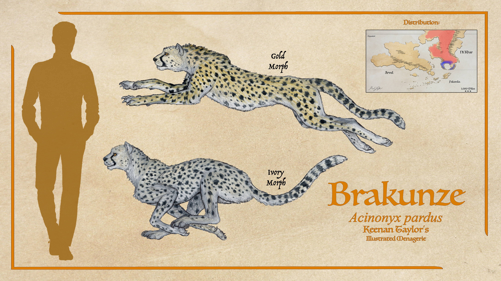
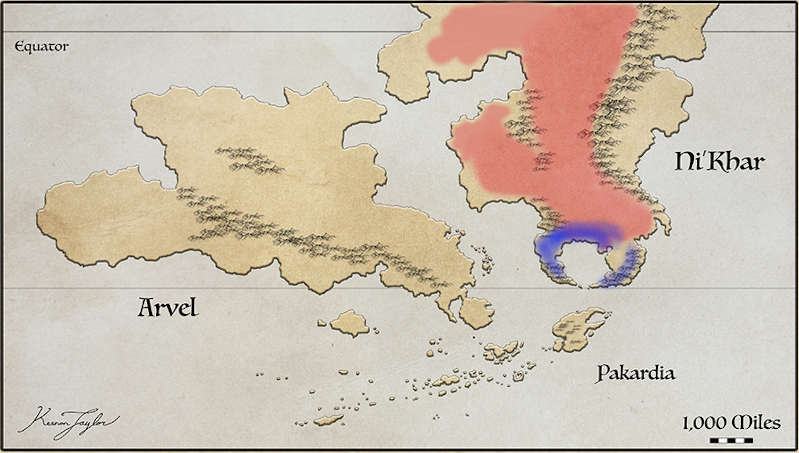
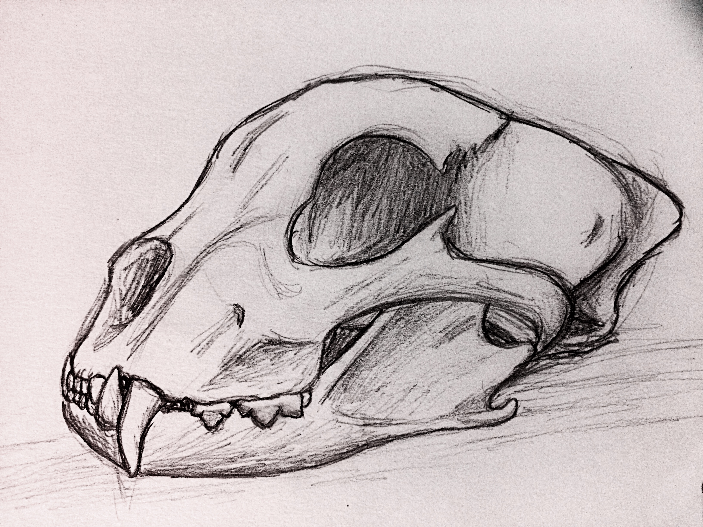
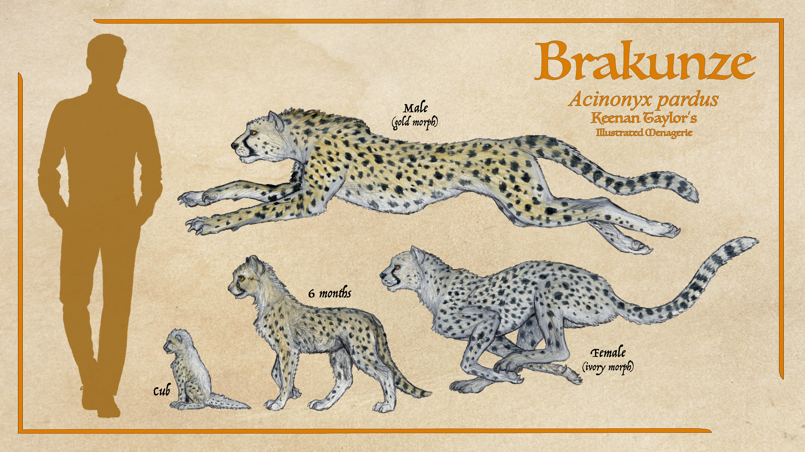
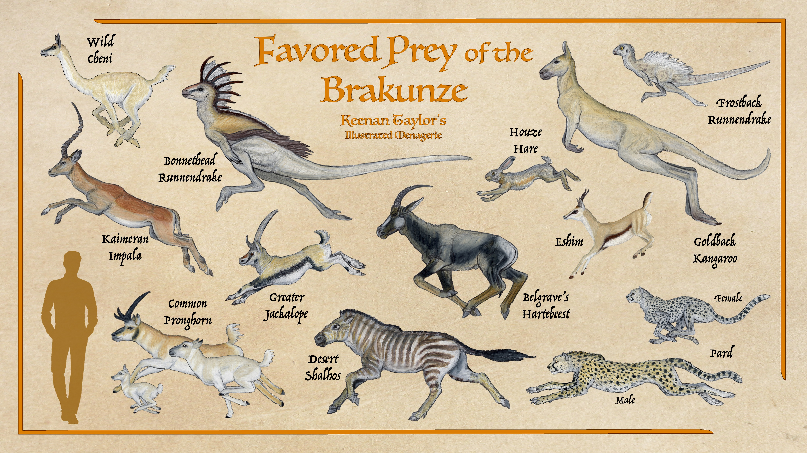
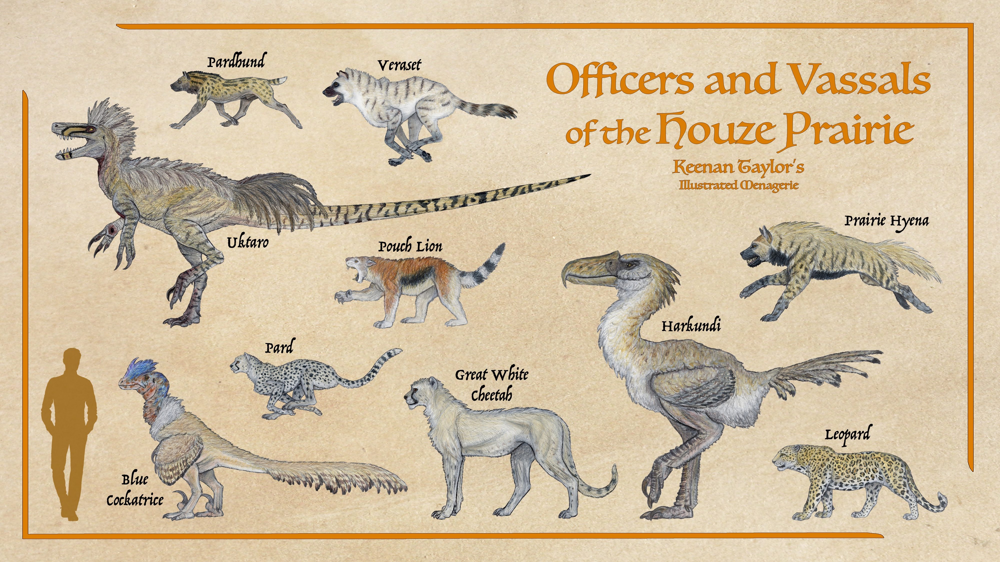
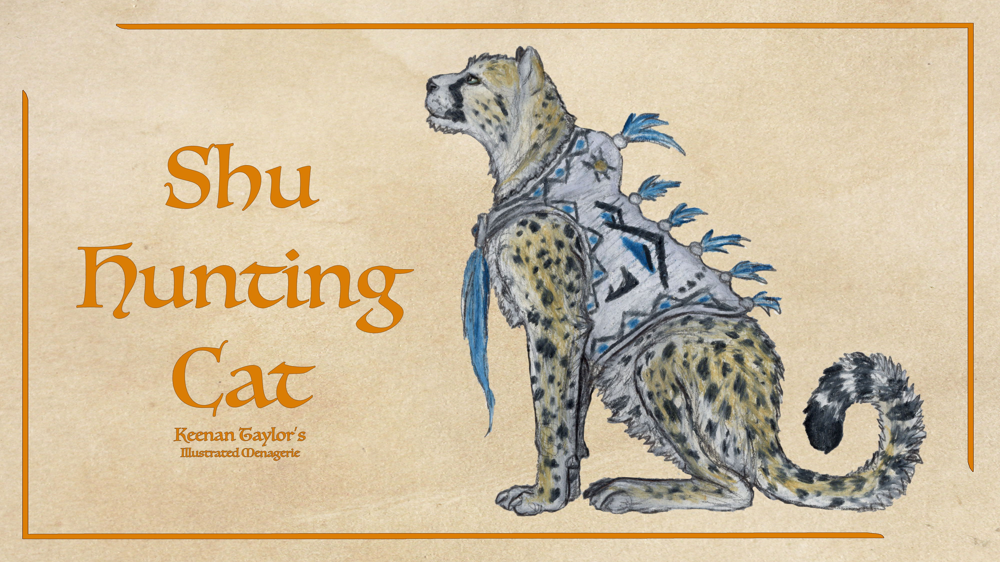
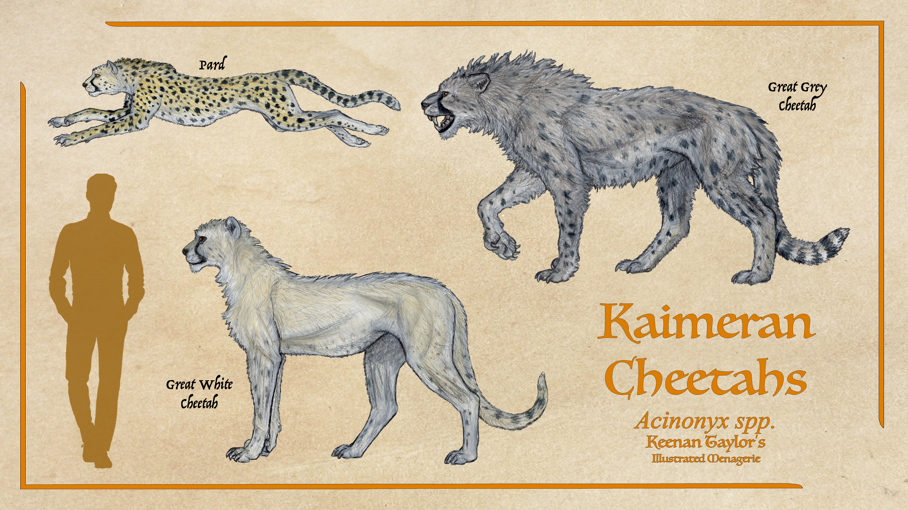

01 · MORPHOLOGY
Description
The brakunze (Acinonyx pardus), also known as the Kaimeran cheetah, Shu hunting cat, or pard, is a medium-sized cursorial felid distinguished by its elongated limbs, narrow thorax, flexible vertebral column, relatively small head, and characteristic coat of dark spots upon a pale golden or ivory background. Although superficially almost indistinguishable from the modern cheetah (Acinonyx jubatus) of Earth, the brakunze represents a distinct evolutionary population derived from the hybridization of African cheetahs introduced through the Portal approximately 250,000 years ago and a now-extinct native cheetah belonging to an earlier Kaimeran radiation of Acinonyx.
In general proportions, the brakunze conforms closely to the characteristic body plan of the genus Acinonyx. The trunk is elongated and comparatively shallow, the abdomen strongly drawn upward behind the rib cage, and the limbs disproportionately long relative to body mass. The shoulders are elevated, the pelvis comparatively narrow, and the musculature distributed in a manner that favors rapid acceleration and explosive changes in stride length over the sustained exertion required by endurance-running predators. Unlike the heavily constructed pantherine cats, whose broad shoulders, robust forelimbs, and powerful jaws facilitate the restraint of large prey, the brakunze possesses a more lightly built skeleton and a relatively gracile muscular arrangement. Its appearance is consequently one of athletic specialization rather than brute strength. Nevertheless, this slenderness should not be mistaken for anatomical fragility. The species possesses substantial musculature throughout the shoulders, thighs, and pelvic region, with the long bones reinforced sufficiently to withstand the considerable forces generated during rapid acceleration, abrupt turning, and the impact of bringing down fleeing prey.
Adult brakunze generally weigh between 20 and 40 kilograms, although particularly large males may approach or exceed 60 kilograms. Individuals inhabiting productive grasslands with abundant medium-sized ungulates tend to occupy the upper portion of this range, whereas populations in more arid regions frequently exhibit smaller average body masses. Males are generally heavier and more robust than females, particularly across the shoulders, neck, and forequarters. Their greater mass is not accompanied by the pronounced cranial enlargement or extreme muscular differentiation observed in some other large felids. Females retain essentially the same overall body plan, with somewhat lighter limbs, narrower heads, and a more gracile trunk. Shoulder height varies with sex, age, and regional population, but mature animals commonly stand approximately 65 - 85 centimeters at the shoulder, with exceptionally large individuals approaching a meter. The body, excluding the tail, is proportionally long, while the tail itself constitutes a substantial extension of the axial skeleton and contributes considerably to the animal's overall length.
02 · DISTRIBUTION
Habitat Range and Distribution

The brakunze is endemic to the tropical and subtropical environments of Ni'Khar, the northern continent of the Known World. Its modern distribution encompasses a broad geographical transect extending from the western Ni'Khari bushlands across the extensive grassland systems of the houze prairie and into the seasonally humid lowlands of the Sheklat riverlands. The species is associated principally with open and semi-open landscapes, particularly extensive grasslands, arid prairies, savannas, and the ecotones separating these environments from woodland, riparian forest, and mountainous terrain. Although the brakunze is capable of occupying a considerable diversity of habitats, its distribution is not uniform across the continent. Instead, it reflects the interaction of regional precipitation regimes, topographic barriers, vegetation structure, prey availability, and the seasonal movements of atmospheric moisture across Ni'Khar. The species is represented by two geographically differentiated colour morphs, the golden morph and the ivory morph, whose respective ranges occupy distinct but environmentally related portions of the continent. The golden morph occurs predominantly throughout the northern and western sectors of the species' distribution, extending into the extensive open landscapes of central and northern Ni'Khar. The ivory morph is concentrated farther south, particularly around the inland basin and adjoining uplands situated near the southern limits of the species' present range. These distributions reflect regional differentiation within a larger ecological system rather than the occupation of two entirely separate climatic provinces.
Understanding the brakunze's habitat requirements requires consideration of Ni'Khar's broader physiography. The continent occupies a substantial portion of Kaimere's northern hemisphere, with its northern territories extending toward higher latitudes while its southern margins approach the equatorial climatic belt. Consequently, the continent encompasses considerable variation in temperature, rainfall, and seasonal atmospheric circulation. Its major mountain systems, extensive inland basins, and broad lowland plains create pronounced climatic contrasts over relatively short geographical distances. The central Houze Prairie occupies an especially important position within this arrangement. It extends through the great interior valley situated between the Silverback Mountains to the east and the western highlands, forming a vast ecological corridor connecting northern semi-arid territories with more humid southern environments. Rather than constituting a uniform grassland, this system incorporates open prairie, seasonal floodplains, scattered gallery forests, dry steppe, scrubland, and savanna woodland. Its northern margins become progressively more arid, whereas its southern reaches support increasing tree cover, more persistent surface water, and greater integration with adjacent wetland and riverine systems. This environmental gradient provides the brakunze with a succession of habitats in which prey populations, vegetation density, and water availability vary considerably throughout the year. The Houze Prairie is therefore a central component of the species' habitat, functioning as both a principal hunting ground and a corridor connecting otherwise distinct regional populations.
The climatic conditions governing this distribution are strongly influenced by Ni'Khar's equatorial proximity, the seasonal migration of tropical rainfall systems, and the circulation of moisture-bearing air masses from the surrounding seas. Near the equatorial belt, substantial solar heating and atmospheric convergence support warm conditions throughout the year, while seasonal changes in the position of major rainfall belts produce alternating periods of enhanced precipitation and relative dryness. Farther from the equator, the seasonal distribution of rainfall becomes increasingly important in determining vegetation structure. Regions receiving sufficient precipitation throughout much of the year support dense woodland and humid forest, whereas areas experiencing prolonged dry intervals develop more open vegetation, including drought-tolerant grasses, shrubs, and scattered trees. In the northern and western portions of the houze prairie, lower and less dependable rainfall favours semi-arid grassland and steppe, while the southern transition toward the Sheklat riverlands supports more productive grasslands interspersed with seasonal wetlands and forested waterways. The brakunze's broad distribution consequently encompasses several climatic regimes, although the species occurs most consistently where open terrain, adequate prey populations, and sufficient shelter coincide.
Atmospheric circulation further modifies these regional climatic patterns. Warm, moisture-bearing air masses transported inland from the surrounding seas contribute to the development of seasonal rainfall across the tropical and subtropical portions of Ni'Khar. The strength and direction of these flows vary with the seasonal displacement of the equatorial convergence zone and associated monsoon systems. During wetter periods, moisture transported from the south and east penetrates portions of the central continent, increasing rainfall across the southern Houze Prairie and adjoining lowlands. Rivers expand, shallow depressions fill with water, and grassland productivity increases. As the rainfall belts shift and drier atmospheric conditions become established, evaporation intensifies, seasonal wetlands contract, and the availability of surface water becomes increasingly concentrated around permanent rivers and deeper basins. These cycles exert a direct influence on the distribution of herbivorous animals and, consequently, the hunting opportunities available to the brakunze. The species does not inhabit a static landscape in which prey availability remains constant throughout the year. Rather, it occupies an environment repeatedly reorganized by seasonal rainfall, flooding, vegetation growth, and the subsequent drying of the plains.
Topography introduces additional complexity into these atmospheric processes. The Silverback Mountains and western highlands interrupt the movement of air masses across the continent, producing differences in precipitation between windward slopes, sheltered valleys, and interior basins. Where moisture-bearing winds encounter elevated terrain, orographic uplift promotes condensation and rainfall, supporting more humid vegetation along exposed slopes and adjacent drainage systems. On the leeward side of these uplands, descending air may become warmer and drier, intensifying local aridity and favoring open grassland or scrub. Such rain-shadow environments are particularly important to the ecological character of the houze prairie, where extensive grasslands persist alongside dry uplands and semi-desert margins. The resulting landscape is not simply a consequence of low rainfall but a product of the interaction between atmospheric circulation, relief, and the distribution of water across the continental interior. For the brakunze, these gradients provide a range of hunting environments, from exposed plains with extensive sightlines to sheltered valleys in which vegetation and broken terrain offer opportunities for concealment.
The western Ni'Khari bushlands form another important component of the golden morph's habitat. This region comprises a heterogeneous assemblage of open woodland, scrub, seasonal grassland, and relatively dry forest margins. Its vegetation is shaped by the balance between rainfall, seasonal drought, soil conditions, and the ecological effects of grazing and fire. During wetter intervals, grasses grow rapidly and the understory becomes more substantial, while the development of dense seasonal vegetation may reduce visibility near the ground. During prolonged dry periods, grasses become shorter or desiccated, shrubs lose part of their foliage, and exposed soil becomes increasingly prominent. The resulting seasonal transformation alternately increases concealment and improves visibility across the landscape. For a large terrestrial predator, these conditions create distinct hunting opportunities. Dense vegetation along woodland margins and drainage lines provides cover for approaching prey, while open clearings allow individuals to detect moving animals over considerable distances. The transition between woodland and grassland is therefore likely to be more consistently useful than either habitat in isolation. Continuous, densely shaded forest offers fewer unobstructed approaches, whereas completely exposed ground provides little opportunity for concealment. The bushlands' patchwork structure supplies both conditions within relatively short distances.
Despite their geographical differentiation, the golden and ivory morphs remain associated with the broader tropical and subtropical environmental systems of Ni'Khar. Their respective ranges share important habitat characteristics, including the presence of open or semi-open ground, access to water, and sufficient concentrations of terrestrial prey. Both morphs may occupy grassland, scrub, woodland margins, and riparian environments where local conditions are suitable. The principal distinction lies in the regional arrangement of these habitats and the climatic and topographic conditions that sustain them. The golden morph occupies a broader northern and western distribution dominated by extensive grasslands, bushlands, and seasonally dry plains, whereas the ivory morph is concentrated around the southern inland basin and adjacent uplands. The degree of direct contact between the two remains dependent upon the continuity of suitable habitat through the intervening regions. Open grasslands and river valleys may facilitate dispersal, while humid forest, extensive wetlands, mountain barriers, and strongly arid terrain may interrupt movement.
03 · NOMENCLATURE
Etymology
The Kaimeran cheetah is known by several common names, including brakunze, pard, Shu hunting cat, and Kaimeran cheetah. The preferred scientific name reflects its distinct evolutionary history as a hybrid-derived species descended from African cheetahs and an extinct native cheetah lineage from the Pre-houze prairie. Although the two ancestral populations remain difficult to distinguish morphologically, their genetic contributions justify recognition as a separate species.
Brakunze originates from the Dolani language and translates approximately as "feral grass runner." The name combines bra, meaning "wild" or "feral," with kunze, the Dolani term for a tame cheetah, and ze, associated with houze grass. The prefix bra also appears in Bruhos, the Dolani name for the feral horse. In this linguistic context, ferality carries connotations of danger and independence rather than merely an absence of domestication.
The common name pard was widely used in early Assembly literature to describe wild hunting cats. Its historical use contributed to confusion with leopards in early ecological surveys. Shu hunting cat reflects the species' longstanding cultural association with the Shu people, who traditionally employed trained individuals in recreational coursing. Kaimeran cheetah is increasingly preferred in modern scientific and popular usage because it distinguishes the species from Earth's cheetah while avoiding the historical ambiguity of pard.
The genus name Acinonyx derives from Greek akine (ᾰ̓πήνη), meaning "motionless," and onyx (ὄνῠξ), meaning "claw," referring to the cheetah's distinctive, only partially retractile claws. The specific epithet pardus derives from Latin pardus, meaning "male leopard" or "pard," reflecting the historical confusion between the two spotted felines.
04 · ANATOMY AND PHYSIOLOGY
Adaptations
The brakunze possesses a suite of adaptations associated with high-speed pursuit, rapid prey capture, and survival in open grasslands and arid savannas. Its anatomy closely resembles that of the modern Earth cheetah (Acinonyx jubatus), reflecting their substantial shared ancestry and subsequent hybridization with a native Kaimeran cheetah lineage. Although minor skeletal distinctions separate the two species, their overall morphology remains remarkably similar.
Unlike many of Kaimere's larger mammalian predators, the brakunze is adapted primarily for acceleration and short-duration pursuit rather than prolonged endurance or physical dominance over competitors. Its slender build, elongated limbs, flexible vertebral column, and semi-retractile claws allow it to pursue fast-running prey across open terrain. Its ecological success is further supported by rapid feeding, high hunting success, and the ability to abandon a carcass and retreat before larger predators arrive. These traits are particularly advantageous on the houze prairie, where tall grasses provide concealment but giant theropods and other large predators make prolonged feeding hazardous.
Skull

The skull of the brakunze represents a highly specialized felid cranial morphology in which structural economy, respiratory efficiency, rapid jaw closure, and precise prey restraint have been favored over the massive reinforcement and extreme bite forces characteristic of more heavily built predators. Although the species is superficially almost indistinguishable from Acinonyx jubatus, the cranial skeleton preserves subtle proportional differences consistent with its history as a Kaimeran lineage derived from both introduced African cheetahs and an extinct native Acinonyx. These distinctions are not sufficiently dramatic to alter the fundamental cheetah-like architecture of the skull, but they are expressed in the relative proportions of the rostrum, facial bones, temporal region, and mandibular apparatus.
The overall cranium is relatively small and lightweight in proportion to body mass, with a narrow, elongated facial region and a compact neurocranium. This reduction in cranial mass is particularly important for an animal whose locomotion depends upon extreme acceleration, rapid changes in direction, and high-speed pursuit. A disproportionately heavy head would increase the inertial cost of stabilizing the cervical column during a sprint and would require additional muscular investment in the neck. The brakunze therefore does not possess the deep, shortened, heavily buttressed skull of a leopard or jaguar. Instead, its skull is constructed as a lightweight but sufficiently rigid framework capable of delivering a rapid, accurately placed bite while minimizing unnecessary skeletal mass.
In dorsal view, the skull is broadly wedge-shaped. The greatest width occurs around the posterior facial region and zygomatic arches, after which the cranium tapers gradually toward the premaxillae. The rostrum is comparatively long and narrow, producing the characteristic streamlined muzzle of Acinonyx. This elongation provides several advantages during prey capture. The jaws can be opened and closed rapidly because their relatively low mass produces little rotational inertia, while the narrow muzzle permits the canines to be inserted accurately into the neck or throat of rapidly moving prey. The architecture is therefore not designed to produce the greatest possible crushing force, but rather to provide a fast and mechanically precise gripping apparatus.
The premaxillae form the anterior-most portion of the facial skeleton and support the upper incisors. In the brakunze these bones remain relatively narrow but are sufficiently reinforced around the tooth sockets to resist the localized forces generated when the incisors seize skin, flesh, or connective tissue. The incisors are not the principal killing structures, but they are important during the initial capture of prey and during feeding. Their closely spaced arrangement allows the animal to grip loose tissue and strip flesh from a carcass after the principal kill has been made.
Immediately posterior to the premaxillae, the maxillae form the majority of the rostrum. The maxillae are comparatively deep relative to their width, providing a longitudinally reinforced platform for the upper canine and premolar teeth. The canine alveoli are especially important because the canines are subjected to substantial bending forces when embedded in the neck of a struggling animal. Rather than possessing the enormous canine roots and extraordinarily thick maxillae of machairodont predators, the brakunze distributes these stresses through the length of the facial skeleton. This produces a structure that is light but sufficiently resistant to the brief, intense loads generated during prey restraint.
The nasal bones form a long, relatively narrow bridge over the nasal cavity. Their shape contributes to the streamlined profile of the skull while also enclosing an exceptionally important respiratory passage. The nasal cavity is comparatively capacious, with extensive internal surface area associated with the turbinates and nasal passages. This feature is particularly significant in a cursorial predator. During high-speed pursuit, the respiratory system must rapidly exchange large volumes of air, and the nasal passages must accommodate this demand without imposing excessive resistance. The facial skeleton therefore serves not merely as a framework for the jaws but also as an integral component of the brakunze's locomotor specialization.
The lacrimal bones and orbital margins are relatively delicate compared with those of robust pantherines, but the orbits themselves are large and positioned to provide an expansive field of binocular vision. Visual targeting is fundamental to the hunting strategy of A. pardus. The species frequently pursues small and exceptionally fast prey, including pronghorns and other open-country herbivores, and its success depends upon judging distance, trajectory, and changes in direction at high speed. The large orbital openings accommodate well-developed eyes while maintaining a relatively lightweight facial skeleton.
The frontal bones form the anterior roof of the braincase and extend posteriorly into the parietal region. They remain comparatively low and gently convex rather than forming the high, heavily reinforced cranial vault typical of large pantherines. Nevertheless, their construction is sufficient to resist the forces transmitted from the jaw musculature. The frontals also form much of the dorsal margin of the orbits, where their relatively broad surfaces provide protection for the eyes without producing unnecessary cranial mass.
Posteriorly, the parietal bones form the principal dorsal surface of the neurocranium. The sagittal crest is present but comparatively modest. This is an important distinction from heavily built carnivores in which a massive sagittal crest provides extensive attachment for enormous temporalis muscles. The brakunze does not require such musculature. Its evolutionary emphasis has instead been placed upon rapid prey capture and efficient locomotion. Nevertheless, the sagittal crest provides a necessary attachment surface for the temporalis and contributes to the overall mechanical rigidity of the cranial roof. Mature males, particularly large individuals approaching 60 kilograms, are expected to develop somewhat more pronounced temporal musculature than females, producing corresponding differences in crest development.
The temporal fossae occupy a substantial but not extreme proportion of the lateral cranium. These depressions accommodate the temporalis muscles, which provide the majority of the force responsible for closing the jaws. Their moderate development reflects the intermediate mechanical demands of the species. The brakunze requires enough muscular power to clamp securely onto struggling prey, but excessive enlargement of the temporalis would increase both skull mass and muscular bulk without providing an equivalent benefit during its highly specialized hunting strategy.
The zygomatic arches are similarly slender in comparison with those of leopards and jaguars. The arches extend laterally from the maxilla and jugal before joining the squamosal portion of the temporal region, providing attachment surfaces for the masseter musculature. Their relative narrowness contributes to the lightweight construction of the skull, but the arches are not fragile. Dense cortical bone and strategically distributed trabecular reinforcement provide resistance to the lateral and torsional stresses produced when the jaws are clamped onto moving prey. The jugal therefore functions as a structural bridge between the facial skeleton and posterior cranium, preventing excessive deformation of the skull during asymmetric loading.
The squamosal and surrounding temporal bones form the principal mechanical connection between the facial skeleton, mandibular articulation, and braincase. The mandibular fossa is relatively deep and securely constrains the mandibular condyle, favoring a predominantly vertical hinge motion. Lateral displacement of the jaw is limited compared with more generalized mammals, ensuring that the carnassial teeth remain accurately aligned during closure. This arrangement is particularly advantageous when the animal bites into the neck of prey while simultaneously pulling backward with its body weight.
The posterior skull is formed by the occipital complex, including the supraoccipital, exoccipitals, and basioccipital region. The occipital bones provide attachment surfaces for the cervical musculature and nuchal ligament, both of which are critical for maintaining head stability during acceleration and prey capture. Because the brakunze regularly undergoes violent changes in velocity, the skull cannot simply be light; it must also remain stable while subjected to rapid forward and lateral accelerations. The occipital region therefore acts as an anchor for the muscular system responsible for controlling the head and neck.
The occipital condyles form the articulation with the atlas and are proportionally well developed. Their configuration allows sufficient freedom for rapid repositioning of the head while maintaining stability during the final stages of a pursuit. This is particularly important because the animal often captures prey while both predator and prey are moving rapidly. The head must remain capable of precise movement without permitting excessive lateral displacement of the skull relative to the cervical column.
The palate is comparatively narrow and elongated. The palatine bones and associated elements form a rigid ventral platform beneath the nasal and oral cavities, transmitting forces generated during biting toward the posterior cranium. The pterygoid region supports the medial pterygoid musculature and contributes to stabilization of the mandible during closure. Unlike heavily built carnivores, however, these structures are not massively enlarged. Their development represents a compromise between sufficient jaw stability and the requirement for a lightweight skull.
The mandible follows the same general pattern. Each dentary is relatively slender but deeper than its narrow lateral profile initially suggests. The body of the mandible forms a strong longitudinal beam extending from the symphyseal region to the ascending ramus. The mandibular symphysis is strongly reinforced, preventing excessive independent movement between the two sides of the lower jaw during a bite. This is especially important when the animal is applying force to one side of the mouth while the prey struggles in another direction.
The ascending ramus rises posteriorly into a well-developed coronoid process, which provides attachment for the temporalis muscle. The process is prominent enough to generate substantial jaw-closing leverage without becoming disproportionately massive. The angular process provides additional attachment for the masseter and medial pterygoid muscles, while the mandibular condyle forms a stable articulation with the temporal bone. Together these structures produce a jaw capable of rapid closure followed by sustained clamping pressure.
Biomechanical estimates based on the skull proportions, mandibular dimensions, canine architecture, and expected jaw-muscle cross-sectional area indicate that an adult brakunze probably produces an effective canine bite pressure of approximately 430 — 520 PSI (3.0 — 3.6 MPa) in typical adult individuals. Large mature males, particularly those approaching the upper end of the species' approximately 60 kg mass range, could plausibly reach 520 — 620 PSI (3.6 — 4.3 MPa) during a maximal bite. These values should be understood as estimated peak pressure at the principal biting surfaces rather than a direct measurement of total muscular force, since actual bite force varies substantially according to bite position, tooth contact area, muscle activation, and the angle of jaw closure. The relatively modest value compared with robust pantherines is not evidence of mechanical weakness. Rather, it reflects the different ecological problem the brakunze has evolved to solve.
Dentition
The dentition of the brakunze retains the highly specialized carnassial arrangement characteristic of modern felids, while exhibiting proportions consistent with the species' extreme cursorial specialization and its reliance upon rapid prey capture rather than prolonged carcass defense. Despite its unusual evolutionary history, including substantial ancestry from both the modern African cheetah and an extinct native Acinonyx lineage, the dental apparatus remains recognizably cheetah-like. Tooth number, general crown arrangement, and the division of labor between incisors, canines, premolars, and carnassials closely correspond to the generalized felid pattern. Most of the evolutionary distinction of the brakunze therefore lies not in the addition or loss of teeth, but in subtle changes to tooth proportions, root architecture, enamel distribution, and the mechanical relationship between the dentition and the unusually elongate skull.
Like other living felids, A. pardus is diphyodont and heterodont, possessing two successive generations of teeth. The permanent dental formula is I 3/3, C 1/1, P 3/2, M 1/1, giving a total of 30 permanent teeth. The deciduous dentition consists of 26 teeth, with a juvenile formula of I 3/3, C 1/1, P 3/2, M 0/0. The absence of deciduous molars reflects the highly specialized carnivoran condition in which the permanent carnassial apparatus develops later as part of the transition toward a fully functional predatory dentition. The permanent teeth are arranged in tightly integrated upper and lower arcades, with exceptionally precise occlusion between the principal shearing teeth. Rather than possessing broad grinding surfaces, virtually every permanent tooth contributes to prey capture, restraint, tissue manipulation, or rapid carcass processing.
The upper dental arcade is relatively long and narrow, corresponding to the elongated rostrum of the species. The lower arcade follows the same general geometry but is slightly more restricted anteriorly, producing a close mechanical relationship between the upper canines and mandibular teeth. This arrangement allows the brakunze to close its jaws rapidly around the neck or throat of prey while minimizing unnecessary lateral movement. The jaws are primarily adapted for vertical closure rather than grinding or crushing. Such a configuration is particularly important for a predator that frequently kills prey through a prolonged throat or muzzle grip while simultaneously using its forelimbs and body to destabilize the victim.
The six permanent incisors form a compact anterior row across the premaxillae and mandible. They are substantially smaller than the canines but remain functionally important. Each incisor possesses a relatively narrow crown with a gently convex external surface and a sharp cutting margin. The upper and lower incisors interlock closely when the jaws are closed, producing a fine grasping surface rather than a powerful cutting mechanism. Their principal function is manipulation. Following a kill, the brakunze uses its incisors to seize loose skin, remove small pieces of tissue, strip flesh from exposed surfaces, and manipulate portions of the carcass before passing them toward the carnassials. The incisors also serve an important role in grooming. As in other felids, the closely packed teeth can function as a specialized grooming apparatus capable of removing loose hairs, dried blood, plant material, and external parasites from the pelage. This function is particularly significant in A. pardus because its hunting strategy exposes the animal to substantial quantities of dust, vegetation, blood, and soil. The incisors therefore operate as precision instruments throughout the animal's daily life rather than being restricted to feeding.
The four permanent canines constitute the principal penetrating elements of the dentition. The upper pair is implanted deeply within the maxilla immediately posterior to the incisors, while the lower pair rises from the anterior mandibular alveoli. In proportion to skull size, the canines are relatively long and slender, retaining the characteristic appearance of Acinonyx. They are not laterally compressed into blade-like structures and do not possess the extreme recurvature seen in specialized saber-toothed predators. Instead, they are approximately conical in cross-section with modest posterior curvature. This geometry provides a favorable compromise between penetration and resistance to bending. The relatively circular cross-section of the canine is mechanically important. During a killing bite, the tooth is rarely loaded purely along its longitudinal axis. Prey can twist, kick, roll, or abruptly change direction while the canine is embedded in soft tissue. These movements generate bending and torsional stresses that can fracture a highly laterally compressed tooth. A more rounded cross-section distributes these forces around the circumference of the crown and root, reducing localized stress concentrations. The brakunze consequently possesses teeth designed to penetrate deeply while tolerating the unpredictable loading associated with a rapidly struggling prey animal. The canine roots extend deeply into the maxillary and mandibular bones. This deep implantation is essential because the functional role of the canines is not simply to puncture tissue but to maintain a secure grip during the several seconds required for prey restraint. Periodontal tissues provide a degree of physiological compliance around each tooth, allowing small movements under extreme loading while preventing those forces from being transferred directly into the surrounding alveolar bone. The combination of deep roots, strong periodontal support, and relatively conservative crown geometry allows the canines to withstand repeated predatory loading throughout adulthood. Unlike the enormous canines of machairodont felids, the brakunze's canines are not intended to deliver a single catastrophic puncture. Their principal function is to establish and maintain purchase. Once embedded, the teeth help prevent prey from escaping while the predator applies additional force through its forelimbs, neck, and jaws. Death is therefore generally associated with prolonged compression of the throat and interruption of respiration or blood flow rather than with the penetration wound itself. This is particularly appropriate for a predator whose prey are frequently small enough to be subdued rapidly but sufficiently powerful to inflict injury if allowed to escape.
Immediately posterior to the canines are the premolars. The upper jaw retains three permanent premolars, while the lower jaw possesses two. These teeth form a transitional series between the penetrating anterior dentition and the highly specialized carnassial complex. The premolars possess pointed primary cusps and relatively narrow crowns, reflecting their role in puncturing, gripping, and tearing rather than grinding. Their morphology permits the animal to maintain control of pieces of flesh while directing them toward the carnassials during feeding. The anterior premolars are comparatively small, but the posterior premolars become progressively larger and more mechanically important. Their roots are substantial relative to crown size, reflecting the forces generated when the animal tears connective tissues or pulls against hide. They are particularly useful when feeding on prey whose skin, fascia, and tendons require greater mechanical resistance than ordinary muscle tissue. Nevertheless, they remain fundamentally cutting and piercing teeth rather than crushing structures. The upper fourth premolar and lower first molar form the carnassial pair, the functional center of the brakunze dentition. These teeth are among the most specialized structures in the entire skull. Their opposing blades pass closely against one another during jaw closure, producing a scissor-like shearing action capable of rapidly slicing muscle, fascia, and connective tissue. The carnassials do not grind food in the manner of herbivorous mammals. Instead, they reduce relatively large pieces of flesh into manageable portions through repeated vertical shearing movements. The carnassials are especially important given the hunting strategy of A. pardus. The species frequently feeds rapidly and may abandon a carcass soon after obtaining an adequate meal. Its ability to process tissue quickly therefore has considerable ecological value. A brakunze does not necessarily need to remain beside a carcass for hours to extract substantial nutritional value from it. A small number of highly efficient shearing strokes can separate large pieces of muscle, which can then be swallowed rapidly before the predator withdraws from competing animals. The upper fourth premolar, or P⁴, is elongated anteroposteriorly and possesses a prominent shearing blade. Its principal cusps are arranged to maximize contact with the lower carnassial while maintaining a narrow cutting plane. The lower first molar, or M₁, performs the complementary role. Its trigonid region forms the principal cutting surface, while the posterior portion of the tooth is comparatively reduced. This reduction is typical of highly carnivorous felids and reflects the limited importance of prolonged crushing or grinding in the diet. The carnassials are not designed for systematically cracking large bones. Although a brakunze may occasionally bite through small bones or consume softer skeletal material attached to muscle, its dentition lacks the massively reinforced crushing apparatus of specialized durophagous carnivores. Dense cortical bone presents a poor energetic return relative to the mechanical risks involved. Consequently, the species is primarily a flesh processor, using its carnassials to remove muscle and connective tissues while generally avoiding the extensive exploitation of large bones. The posterior molar component is correspondingly reduced. The single upper molar is small and contributes little to the principal shearing action of the dentition, while the lower carnassial provides the overwhelming majority of posterior cutting function. This reduction is a defining feature of the felid feeding apparatus and is especially pronounced in Acinonyx. There is little selective advantage in retaining broad grinding surfaces in an animal whose diet consists overwhelmingly of vertebrate flesh and whose feeding strategy emphasizes rapid extraction rather than prolonged mastication.
The enamel of the brakunze teeth is correspondingly specialized for repeated mechanical loading. The crowns are covered by a dense enamel layer that protects the underlying dentine from direct abrasion. Enamel thickness varies according to function. The canines require sufficient reinforcement along their principal loading surfaces to resist fracture during penetration, whereas the carnassials require durable cutting edges capable of maintaining sharpness despite repeated contact with opposing teeth. The underlying dentine provides structural support beneath the enamel and helps distribute stresses toward the deeper root structures.
Dental wear follows a predictable progression throughout life. Newly erupted permanent teeth possess extremely sharp cusps and well-defined cutting edges. The canines gradually lose their sharp terminal points as they are repeatedly exposed to hide, connective tissue, and occasional contact with hard material. The incisors develop polished wear surfaces associated with grooming and repetitive tissue manipulation. The carnassials experience more complex wear because their opposing surfaces interact directly during feeding. Controlled reciprocal abrasion gradually modifies the enamel blades but preserves their functional shearing relationship for much of the animal's adult life.
The dental apparatus also changes substantially during ontogeny. Brakunze cubs are born completely edentulous, as is typical of felids. Their first teeth begin erupting during early development, initially allowing them to transition from exclusive dependence upon maternal milk toward increasingly substantial consumption of meat. The deciduous canines and premolars are sufficiently sharp to permit young animals to begin manipulating small pieces of flesh well before they possess the full mechanical capabilities of adults. As growth proceeds, the deciduous teeth are progressively replaced by permanent teeth. Permanent incisors erupt first, followed by the permanent canines and premolars. The carnassials become functional later as the juvenile approaches the feeding requirements of an independent predator. Complete dental replacement is associated with the transition from maternal dependence to independent hunting, and the development of the permanent canines and carnassials is particularly important because these teeth must withstand the considerably greater mechanical demands imposed by live prey.
The relationship between tooth development and the brakunze's hunting strategy is therefore significant. Juveniles possess a dental apparatus capable of processing meat relatively early, but the complete adult dentition is necessary for efficient prey capture and rapid carcass exploitation. The permanent teeth, combined with the lightweight but mechanically stable skull, permit the adult animal to alternate between extremely rapid killing bites and equally rapid processing of flesh.
Cervical Section
The cervical apparatus of the brakunze is a highly specialized component of the species' cursorial anatomy, providing the mechanical connection between its lightweight skull, elongated trunk, and exceptionally powerful forequarters. Although the cervical skeleton retains the fundamental mammalian complement of seven vertebrae, the proportions, articulations, musculature, and ligamentous structures of these vertebrae have been modified to accommodate the unusual mechanical demands imposed by extreme-speed pursuit. The neck must stabilize the head while the animal accelerates rapidly, maintain visual alignment with a moving target, absorb repeated accelerations and decelerations, and transmit forces generated when the jaws seize struggling prey. At the same time, it must accomplish these tasks without becoming excessively massive. A heavy cervical apparatus would increase the rotational inertia of the head and impose an energetic penalty upon an animal whose survival depends upon minimizing unnecessary mass during high-speed locomotion. The resulting neck is therefore relatively long, narrow, and highly muscular, but structurally economical.
The cervical region forms a visibly continuous transition between the relatively small head and the deep musculature of the shoulders. In proportion to body length, the neck is noticeably longer than that of heavily built pantherine cats, although not elongated to the degree observed in some long-necked non-felid pursuit predators. This intermediate elongation allows the brakunze to carry its head sufficiently far forward to maintain an unobstructed field of vision during a sprint while preserving enough mechanical leverage for rapid stabilization. The cervical column functions principally as a dynamic stabilizing structure rather than as a rigid support beam. During ordinary locomotion, individual vertebrae participate in controlled flexion and extension. During the final stages of a chase, however, the cervical musculature increasingly stabilizes the vertebral column, preventing excessive movement of the skull while the remainder of the body undergoes rapid acceleration.
All seven cervical vertebrae possess the characteristic mammalian organization of a centrum, neural arch, neural spine, transverse processes, and paired zygapophyses, but their proportions differ along the series. The vertebral centra are relatively elongated anteroposteriorly and moderately compressed dorsoventrally compared with those of more robust felids. Their internal trabecular architecture is arranged predominantly along the principal axes of compression, allowing the vertebrae to withstand repeated loading without requiring excessively thick cortical walls. This is particularly important because the cervical column experiences not only the weight of the head but also substantial inertial forces generated whenever the animal accelerates, brakes, or changes direction.
The atlas (C1) forms the primary articulation between the skull and the remainder of the cervical column. It is proportionally broad relative to its anteroposterior length, with large lateral masses supporting the extensive articular surfaces that receive the occipital condyles. This broad articulation distributes the weight and inertial forces of the skull across a comparatively large area rather than concentrating them at narrow contact points. Such distribution is important during sprinting, when the head can experience forces several times greater than its static weight as the animal rapidly accelerates or changes direction. The superior articular facets of the atlas are smoothly concave and closely conform to the occipital condyles. This produces a stable atlanto-occipital joint while still permitting substantial dorsoventral movement. The brakunze can therefore lower its head during acceleration, raise it during visual tracking, and rapidly adjust its cranial orientation during the final approach to prey. Lateral movement at this joint is considerably more restricted. Excessive lateral mobility would make the head difficult to stabilize during high-speed turns and could increase the risk of damaging the joint when the jaws are loaded asymmetrically. The atlas possesses relatively long transverse processes that project laterally from the lateral masses. These processes provide attachment sites for several muscles responsible for controlling head position and for stabilizing the first cervical vertebra against rotational forces. Their lateral expansion also increases the mechanical leverage available to the small but exceptionally important muscles surrounding the craniovertebral junction. Because these muscles operate close to the joint, even relatively modest contractions can produce precise adjustments in head orientation.
Immediately posterior to the atlas is the axis (C2), the most mechanically distinctive vertebra of the cervical series. The axis functions as the principal rotational element of the neck and consequently possesses a strongly developed neural arch and a robust odontoid process. The dens projects anteriorly into the neural canal of the atlas and forms the pivot around which C1 and the skull rotate. In the brakunze, the dens is relatively broad at its base and securely integrated with the centrum of C2. This construction provides considerable resistance to torsional forces generated when the animal rapidly turns its head or when prey attempts to twist free from a bite. The neural spine of the axis is elongated dorsoventrally and provides extensive attachment surfaces for the deep cervical musculature. These muscles are particularly important during predation because the head must remain accurately positioned while the jaws are clamped onto prey. Rather than repeatedly moving the head through large arcs, the brakunze can make small corrections using the suboccipital and deep cervical muscles, keeping the canines aligned with the intended region of the prey's neck. The third through fifth cervical vertebrae form the principal mobile portion of the mid-cervical column. Their centra are relatively narrow but robust, with broad zygapophyseal facets that interlock closely with adjacent vertebrae. The zygapophyses are particularly important because they regulate the direction and magnitude of movement between neighboring vertebrae. In the brakunze they permit substantial flexion and extension while limiting excessive rotation. This produces a neck that remains flexible enough for visual tracking and prey capture without becoming mechanically unstable. The transverse processes of the middle cervical vertebrae are elongated and moderately dorsolaterally directed. They serve as important attachment sites for the scalene, longus capitis, longus colli, intertransversarii, and other muscles that stabilize the cervical column. These structures become especially important during rapid acceleration because the head tends to lag behind the forward movement of the body. Coordinated contraction of the cervical musculature prevents excessive extension of the neck and maintains the skull in a controlled position relative to the torso.
The sixth and seventh cervical vertebrae form the transition between the mobile neck and the thoracic region. They are consequently somewhat more robust than the preceding vertebrae. Their centra become deeper and their neural spines more substantial, reflecting increasing transmission of forces toward the shoulder girdle and thorax. The seventh cervical vertebra in particular possesses a relatively prominent neural spine that approaches the morphology of the first thoracic vertebra. This creates a gradual mechanical transition rather than an abrupt junction between two structurally different regions of the axial skeleton. The cervical neural spines provide attachment surfaces for the dorsal musculature of the neck. Unlike those of heavily built predatory cats, they are not enormously enlarged into tall bony crests. Excessive neural-spine development would add unnecessary mass and restrict rapid cervical movement. Instead, the brakunze relies upon elongated but relatively slender processes combined with extensive muscular attachment. This represents another example of the species' broader anatomical strategy: structural efficiency rather than brute skeletal reinforcement. The cervical zygapophyseal joints are also important in maintaining stability. Their articular surfaces are oriented so that adjacent vertebrae can undergo controlled flexion and extension while resisting excessive lateral displacement. This is particularly valuable during the high-speed pursuit of prey. A cheetah does not run with the head held perfectly motionless; instead, the neck undergoes continuous small movements as the animal compensates for movements of the shoulders, spine, and forelimbs. The vertebral joints therefore function as a system of controlled movement rather than as simple hinges. Between the vertebral centra are intervertebral discs composed of fibrocartilaginous annuli surrounding gelatinous nuclei. In the brakunze these discs provide important shock absorption during acceleration and landing. Their structure allows limited deformation when compressive forces pass through the cervical column, preventing sudden loads from being transmitted directly between adjacent vertebrae. However, the discs are not excessively flexible. Excessive disc deformation would compromise stability, particularly during prey restraint. Their function is therefore primarily to absorb transient loads while the surrounding ligaments and muscles control overall cervical movement.
The nuchal ligament provides an additional passive support system. Extending posteriorly from the occipital region toward the upper thoracic vertebrae, it contains substantial elastic tissue capable of supporting the head while reducing the amount of continuous muscular activity required to maintain its position. This is especially useful during sustained locomotion. The ligament becomes tensioned when the head is lowered and can contribute to its subsequent elevation through elastic recoil. Its function is consequently both supportive and energetic, reducing muscular expenditure without substantially restricting the neck's range of movement.
The muscular system surrounding the cervical column is exceptionally important because the brakunze's neck cannot rely upon skeletal reinforcement alone. The dorsal cervical musculature, including the splenius, semispinalis, longissimus, spinalis, and multifidus complexes, forms a longitudinal stabilizing system extending from the occipital region toward the upper thoracic vertebrae. These muscles maintain the head against the inertial forces generated during acceleration and provide controlled extension when the animal raises its head. The ventral cervical musculature provides the necessary counterbalance. The longus colli, longus capitis, sternocephalicus, and associated muscles stabilize the underside of the cervical column and prevent uncontrolled extension produced by the dorsal musculature or by external loading. During sprinting, the dorsal and ventral systems operate continuously against one another, producing fine adjustments that keep the skull approximately aligned with the body's direction of travel.
The relationship between the neck and the shoulder girdle is particularly important. The cervical trapezius, rhomboideus, levator scapulae, and brachiocephalicus form a muscular bridge between the cervical vertebrae, skull, scapulae, and forelimbs. Consequently, the neck cannot be considered an isolated anatomical unit. Forces generated at the skull are transmitted through the cervical muscles into the shoulders, while forces generated by the forelimbs and thorax can be transmitted in the opposite direction toward the head. This integration becomes particularly important when the brakunze catches prey. Once the canines penetrate the prey, the mechanical function of the neck changes. During the chase, the cervical apparatus is primarily concerned with stabilization and rapid repositioning. During the killing bite, it becomes a force-transmission system. The skull establishes the initial grip, but the neck prevents the prey from simply pulling the head away. Strong contraction of the epaxial and ventral cervical muscles stabilizes the head while the forelimbs brace against the ground. The result is a whole-body restraint mechanism in which the bite is supported by the neck, shoulders, and forequarters rather than by the jaw muscles alone. This arrangement is especially important given the relatively modest absolute bite force of the species. The brakunze does not require a massively powerful bite if it can maintain the position of its jaws through sustained cervical stabilization. Once the canines have penetrated the neck or throat of the prey, the cervical column effectively transforms the skull into an anchored clamp. The animal can maintain pressure without repeatedly biting, reducing both energetic expenditure and the risk of losing its grip.
The cervical system also contributes to the animal's ability to feed rapidly. Following a successful kill, the neck allows the head to move rapidly through a wide range of positions while the forelimbs stabilize the carcass. The animal can lower the head, tear tissue, raise the head to swallow, and rapidly scan the surrounding environment without sacrificing postural stability. This is particularly important in Kaimere, where the presence of large daytime competitors means that a brakunze may need to alternate rapidly between feeding and vigilance.
Ontogenetically, the cervical skeleton begins relatively delicate. Neonates possess small vertebral centra, lightly developed neural spines, incompletely ossified articular structures, and relatively weak cervical musculature. Development accelerates as juveniles begin following their mother and eventually participating in kills. The vertebrae progressively increase in cortical thickness and trabecular density, while the neural spines and transverse processes develop larger attachment surfaces for the expanding cervical musculature. Full mechanical competence is reached with skeletal maturity, when the cervical apparatus is capable of tolerating the repeated high-load events associated with adult pursuit and prey capture.
Visual System
The visual system of the brakunze is among the most highly specialized sensory systems in the Kaimeran predator guild, reflecting the extraordinary demands imposed by high-speed pursuit in open and semi-open environments. Unlike ambush predators that primarily require excellent low-light sensitivity and precise depth perception at short range, the brakunze must detect moving prey across extensive landscapes, maintain visual contact during rapid acceleration, estimate distance while both predator and prey are moving, and continuously monitor competitors that may approach from the sides or rear. Its visual apparatus consequently emphasizes a combination of exceptionally broad visual coverage, high temporal resolution, strong binocular depth perception, and unusually effective detection of movement at long distances. The resulting system is not simply optimized for seeing far away; it is specialized for extracting spatial and motion information from a landscape while the animal itself is moving at extreme velocity.
The eyes are proportionally large relative to the skull and are positioned high and forward within the orbits. Their placement reflects the competing requirements of panoramic awareness and stereoscopic vision. Excessively lateral placement would provide a broader field of view but reduce the area in which the two eyes overlap, compromising depth perception. Conversely, strongly forward-facing eyes would improve stereoscopic accuracy but create a large blind region behind the animal. The brakunze occupies an intermediate position. The orbits face sufficiently forward to provide a broad binocular field while retaining considerable lateral exposure for detecting prey, competitors, and obstacles outside the direct line of pursuit.
The overall visual field of A. pardus is approximately 220 — 225° horizontally under normal conditions. This represents the total portion of the horizontal environment visible to the animal without requiring substantial rotation of the head. The field is divided between the two eyes, with each eye possessing an independent monocular field of approximately 145 — 150°. Because these fields overlap anteriorly, the total field does not equal the simple sum of the two individual fields. Instead, their overlap produces a broad region of binocular vision while the remainder constitutes the combined monocular field. For a single eye, the monocular field extends approximately 145 — 150° horizontally. This means that an individual eye can detect objects positioned considerably lateral to the direction in which the skull is facing. The lateral portion of this field is particularly important for motion detection. A brakunze pursuing prey cannot afford to concentrate exclusively on the animal directly ahead. Other prey may alter direction, a second individual may approach from the flank, or a larger predator may begin moving toward a fresh kill. The extensive monocular field permits these events to be detected without requiring an immediate head turn. When both eyes are considered together, the total visual coverage expands to approximately 220 — 225°, leaving a posterior blind region of roughly 135 — 140° centered behind the head. This blind region is considerably larger than that of some strongly laterally oriented herbivores, but it is an unavoidable consequence of the forward placement required for accurate depth perception. The brakunze compensates behaviorally through frequent head movements, auditory monitoring, scent detection, and rapid visual scanning. During periods of heightened vigilance, the animal regularly rotates the head rather than attempting to maintain a fixed forward gaze.
The most important portion of the visual field is the binocular field, where the images received by both eyes overlap and can be compared by the visual centers of the brain. In the brakunze this region extends approximately 85 — 95° horizontally, centered directly ahead of the skull. Within this region, the brain can compare the slightly different retinal images produced by the two eyes to calculate binocular disparity. This provides highly accurate information concerning the relative distance of objects and is indispensable during the final stages of a pursuit. The binocular field is especially important during the final approach to prey. At long range, a brakunze can identify a moving animal largely through silhouette, movement, and habitat contrast. As the distance closes, however, the requirements become increasingly precise. The predator must determine whether the prey is one body length away or two, whether its trajectory will intersect with the predator's own path, and precisely when to initiate the final acceleration and capture attempt. Small errors in distance estimation become increasingly consequential as both animals approach one another at high speed. The broad binocular field therefore represents one of the most important adaptations underlying the species' ability to intercept exceptionally fast prey.
The remainder of the approximately 220 — 225° visual envelope constitutes the combined monocular field, representing roughly 125 — 140° of non-overlapping lateral vision distributed between the two sides of the head. These regions provide substantially less precise depth information than the binocular field, but they remain highly effective for detecting movement. The distinction is important because movement detection rather than exact distance estimation is generally the primary requirement in peripheral vision. A rapidly moving predator or prey animal entering the lateral visual field does not initially need to be identified with precision; its movement merely needs to trigger an orienting response. The brakunze can then rotate its head and bring the stimulus into the binocular region for detailed assessment.
The vertical field of view is also relatively broad. Each eye is capable of surveying approximately 125 — 130° vertically, although the precise field varies according to head position and the degree to which the animal raises or lowers its muzzle. The upper portion of the field permits detection of large predators and birds approaching from elevated positions, while the lower portion encompasses the immediate ground surface and the feet of prey during close pursuit. This broad vertical range is particularly useful in the heterogeneous environments occupied by the species, where small rises, depressions, tall grass, and uneven terrain can intermittently obscure portions of a prey animal.
The orbital anatomy strongly supports this visual specialization. The relatively large orbits provide sufficient space for large ocular globes and substantial extraocular musculature. The eyes are protected by the surrounding frontal, lacrimal, and zygomatic bones, while the relatively open anterior orbital orientation prevents the facial skeleton from obstructing the principal visual axis. The arrangement permits the animal to maintain a forward gaze while simultaneously monitoring lateral movement.
The cornea is relatively large and optically efficient, allowing substantial quantities of light to enter the eye. The pupil undergoes pronounced changes in diameter between bright daylight and reduced illumination. Although the brakunze is principally a diurnal predator in areas with dense predator communities, it frequently shifts toward crepuscular or nocturnal activity in hotter portions of its range and in areas where daytime temperatures become extreme. Rapid pupillary adjustment therefore permits the same visual apparatus to operate across a considerable range of illumination.
The retina is dominated by rod photoreceptors, although the cone population is sufficiently developed to maintain excellent daytime acuity and limited color discrimination. This arrangement is characteristic of a predator for which motion detection and luminance contrast are more important than highly sophisticated color discrimination. The brakunze must identify prey against backgrounds of dry grass, pale soil, shadow, and vegetation, environments in which differences in brightness and movement frequently provide more reliable information than color alone. The retinal organization is particularly well suited to detecting motion. Rather than concentrating all high-acuity vision into an extremely small central region, the brakunze possesses a relatively broad zone of elevated retinal resolution extending through the central visual field. This allows the animal to track moving prey without requiring perfectly precise fixation. A prey animal can move several degrees laterally during a high-speed chase without immediately leaving the region of high-resolution visual processing.
The tapetum lucidum further enhances sensitivity under dim conditions. Light passing through the photoreceptor layer is reflected back through the retina, providing photoreceptors with an additional opportunity to absorb available photons. This adaptation becomes increasingly important in the northern and desert portions of the species' range, where individuals frequently hunt during cooler nighttime periods. The tapetum does not transform the brakunze into a strictly nocturnal predator; rather, it broadens the range of illumination under which its visual system remains effective.
The optical system is also capable of maintaining high acuity over substantial distances. Under clear atmospheric conditions, a brakunze can detect the movement of a large animal at approximately 2.5 — 3.0 kilometers across open terrain. Detection at this distance does not necessarily mean that the animal can identify the species with certainty. A moving dark or pale object against a contrasting background may be visible long before its specific identity becomes apparent. General recognition of a medium-sized prey animal typically becomes reliable at approximately 1.0 — 1.5 kilometers, while confident identification of species and assessment of behavior generally occur below approximately 600 — 800 meters in unobstructed terrain. For smaller prey, effective detection distances are considerably shorter. Animals such as hares and small runnendrakes may remain visually inconspicuous until within approximately 300 — 600 meters, depending upon vegetation, coloration, illumination, and movement. Once within approximately 100 — 150 meters, however, the brakunze's visual system becomes extremely effective at tracking individual movements. At distances below approximately 50 m, binocular vision becomes particularly important because the predator must constantly calculate the prey's changing position relative to its own trajectory.
Atmospheric conditions impose the greatest limitation on long-distance vision. Dust, humidity, haze, heat shimmer, and dense vegetation can reduce effective detection distances dramatically. The species therefore does not possess a fixed "maximum seeing distance" in an ecological sense. Under exceptionally clear conditions across open badlands, grasslands, or desert margins, large moving objects may be detectable at several kilometers. In dense houze grass, practical visual range may instead be less than a few hundred meters. This variability has contributed to the species' reliance upon a combination of visual scanning, hearing, and scent rather than vision alone.
Depth perception is generated through several mechanisms. Within approximately 50 — 60 meters, binocular disparity provides the principal source of precise stereoscopic information. At greater distances, stereopsis becomes progressively less informative because the angular difference between the two retinal images decreases. The brakunze compensates through motion parallax, perspective, relative movement, object size, texture gradients, atmospheric perspective, and familiarity with the landscape. Subtle head movements are particularly useful because they produce small shifts in the apparent position of nearby objects relative to distant ones. Even during stationary observation, the animal may make minute head movements that improve distance estimation.
During pursuit, visual stabilization becomes especially important. The brakunze's vestibulo-ocular reflex allows the eyes to compensate for movements of the head so that the image of the prey remains relatively stable upon the retina. This is essential because the animal's head is not perfectly stationary while sprinting. Each stride produces vertical and horizontal accelerations, while rapid changes in direction introduce additional rotational forces. Without rapid compensatory eye movements, the retinal image would become blurred and the predator would lose the precise visual information required to intercept its target.
The extraocular musculature is consequently highly developed. Small, rapid contractions allow the eyes to track prey independently of large movements of the head. This is particularly important during the transition from pursuit to capture. The animal may continue moving its head along the trajectory of the chase while its eyes remain locked upon a specific point on the prey's body. Such independent ocular movement minimizes unnecessary head motion and helps preserve both balance and visual accuracy.
Visual processing is dominated by the detection of movement and prediction of trajectories. The brakunze does not merely observe where the prey is; its nervous system must continuously estimate where the prey will be several fractions of a second later. This predictive capacity is essential because the predator's own velocity means that reacting to the prey's present position alone would result in overshooting or mistiming the interception. The visual system therefore integrates the prey's direction, speed, body orientation, and acceleration into a continuously updated estimate of its future position. This is particularly evident when hunting pronghorns and other exceptionally swift prey. The predator may initially observe the prey at a considerable distance, enter pursuit, and then make repeated adjustments to its trajectory as the prey attempts to evade. During these maneuvers the binocular field provides accurate information about distance while the peripheral monocular regions continue monitoring the surrounding landscape. The visual system consequently operates simultaneously at two scales: precise forward tracking of the target and broad peripheral surveillance of the environment.
The visual system also plays a major role in predator avoidance. The brakunze is not the dominant predator of the Houze Prairie and must constantly account for larger animals capable of stealing its kills or killing the cheetah itself. Harkundi, blue cockatrice, prairie hyenas, taro, uktan, and other predators create an environment in which situational awareness is essential. The wide lateral visual field allows a brakunze to detect approaching threats without completely abandoning visual contact with prey or a carcass. The ability to see a competitor approaching from the side can determine whether the animal attempts to continue feeding or immediately withdraws.
Auditory System
The auditory system of the brakunze is a highly specialized sensory apparatus adapted to the acoustic conditions of open grasslands, savannas, semi-arid badlands, and the expansive prairie systems of northern Ni'Khar. As a high-speed cursorial predator, the brakunze depends upon vision more heavily than many forest-dwelling felids, yet hearing remains indispensable for detecting prey before it becomes visually conspicuous, monitoring the movements of competing predators, maintaining contact between individuals, and interpreting environmental disturbances across landscapes in which visibility can fluctuate dramatically. The auditory apparatus is therefore not specialized simply for detecting the greatest possible number of sounds, but for combining sensitivity, directional precision, temporal resolution, and rapid discrimination of biologically significant sounds from the persistent acoustic background of wind, grass movement, insects, and large animals. This is particularly important for an animal that frequently hunts in Houze grass, where vegetation may conceal substantial portions of a prey animal while simultaneously transmitting and scattering the sounds produced by movement.
The external ears of A. pardus are proportionally large, upright, and highly mobile relative to the narrow, streamlined skull. Their dimensions provide an extensive collecting surface without becoming sufficiently large to generate substantial aerodynamic resistance during high-speed pursuit. The pinnae are broadly triangular, with a relatively pointed superior apex and a broad basal attachment to the skull. Their margins are flexible rather than rigid, allowing the ears to change orientation rapidly in response to acoustic stimuli. The interior of the pinna contains a complex arrangement of shallow ridges and depressions that modify incoming sound according to its direction. These structures act as a biological acoustic filter, introducing small but predictable changes in frequency and amplitude depending upon whether sound originates anteriorly, laterally, superiorly, or posteriorly. This directional filtering is particularly important because the brakunze often cannot afford to turn its head toward every sound it detects. During stalking, excessive head movement can alert prey. During pursuit, turning the head can destabilize the animal and interfere with visual tracking. Instead, the auditory system first determines the approximate direction of a sound through differences in arrival time and intensity between the two ears. Only when the acoustic stimulus appears significant does the animal redirect its head or eyes toward the source. Each pinna is capable of independent movement through a remarkably broad range of orientations. Numerous auricular muscles permit rotation, elevation, depression, and partial folding of the ears without requiring corresponding movement of the skull. The ears can therefore operate as independent acoustic sensors. During periods of vigilance, one ear may remain oriented toward a suspected prey animal while the opposite ear samples the surrounding environment for competitors. This is particularly valuable on the Houze Prairie, where a brakunze may simultaneously need to monitor a concealed prey animal and remain alert for harkundi, prairie hyenas, blue cockatrices, taro, or other predators approaching a potential kill. The independent movement of the pinnae also permits active acoustic scanning. Rather than passively receiving sound from a fixed orientation, the brakunze continually changes the angle of its ears, comparing the acoustic information received from different orientations. Small changes in amplitude and frequency distribution generated by these movements allow the auditory centers of the brain to construct a more accurate spatial representation of the surrounding landscape. This behavior is particularly conspicuous when an individual suddenly stops during a hunt. The animal may remain almost completely motionless while its ears rotate independently in rapid succession, effectively sampling the acoustic environment before deciding whether to resume movement.
The external auditory canals are relatively long and moderately narrow, extending inward toward the tympanic membranes while maintaining sufficient diameter to permit efficient transmission of sound. Their orientation protects the deeper structures of the ear from dust, seeds, grass fragments, and other debris encountered during high-speed movement through prairie vegetation. Ceruminous secretions maintain the health of the canal while trapping particulate material. The ear opening itself is surrounded by short, dense hairs that reduce the entry of foreign material without substantially interfering with incoming sound. The tympanic membranes are relatively broad and highly responsive. Their mechanical properties permit the efficient transmission of a wide range of frequencies rather than strongly favoring a narrow acoustic band. This is important because the brakunze receives biologically useful information from both low- and high-frequency sounds. Low-frequency vibrations may originate from large animals moving across the prairie, distant thunder, heavy footsteps, or the approach of large predators. Higher-frequency sounds include the footfalls and vocalizations of smaller prey, the movement of vegetation, and the contact calls of conspecifics.
The middle ear contains the typical mammalian ossicular chain of malleus, incus, and stapes. These bones are comparatively light but mechanically efficient, transferring vibrations from the tympanic membrane into the fluid-filled inner ear. The ossicles are supported by small ligaments and muscles that stabilize their position during vigorous locomotion. This is particularly important in A. pardus, because the animal can experience substantial acceleration during pursuit. Without effective stabilization, the mechanical oscillations generated by running could introduce noise into the auditory system and reduce the ability to distinguish external sounds. The tympanic bullae are moderately enlarged relative to the remainder of the skull. This enlargement increases the resonant volume of the middle-ear cavity and contributes to sensitivity toward lower-frequency sounds. The condition is less extreme than that of strongly nocturnal desert carnivores, however, because the brakunze remains primarily a visual predator and spends much of its activity period under relatively high illumination. The auditory apparatus consequently retains strong high-frequency sensitivity without sacrificing useful low-frequency perception.
Within the inner ear, the cochlea is elongated and extensively coiled, providing a large sensory surface for the detection of different acoustic frequencies. The basilar membrane is organized tonotopically, with different regions responding preferentially to different frequencies. The basal portion is responsible for the perception of higher-frequency sounds, whereas the apical region responds to progressively lower frequencies. This organization permits A. pardus to analyze not merely whether a sound exists, but its frequency composition, duration, intensity, and temporal pattern.
The estimated auditory range of the brakunze extends from approximately 45 hertz to 70,000 hertz. This range is considerably broader than the human auditory spectrum and allows the species to detect both low-frequency environmental disturbances and high-frequency components of small-animal movement. Sensitivity is not uniform throughout this interval. The region of greatest auditory sensitivity lies approximately between 800 hertz and 18,000 hertz, corresponding closely with the frequencies generated by mammalian locomotion, vocalizations, vegetation movement, and many of the acoustic signals most relevant to predation. Frequencies below approximately 150 hertz provide information primarily about large-scale environmental activity. A large herbivore moving through dry grass can generate substantial low-frequency energy through footfalls, vegetation displacement, and substrate vibration. Likewise, the movement of a large predator may produce a recognizable low-frequency acoustic signature even when the animal remains visually concealed. Very low frequencies also propagate farther through open environments than higher frequencies because they experience comparatively little atmospheric attenuation. The ability to detect low-frequency sound is therefore especially important on the open prairie. A brakunze may detect the approach of a large animal before that animal becomes visible, particularly when vegetation, terrain, or atmospheric haze interferes with direct vision. The auditory signal is rarely sufficient by itself to identify the species at extreme distance, but it can indicate the presence, approximate direction, and general size of an approaching animal. This allows the cheetah to alter its behavior before visual contact occurs. At the opposite end of the auditory spectrum, sensitivity above approximately 20,000 Hz becomes increasingly important for close-range prey detection. Small mammals produce substantial high-frequency acoustic components while moving through vegetation. Rapid foot movements, claws contacting plant material, chewing, squeaking, and brief alarm calls can all contain frequencies extending well above the principal range of large-animal locomotion. These frequencies attenuate rapidly with distance, meaning that their principal value lies in locating nearby prey that may remain hidden from direct view.
This produces a useful division of acoustic information. Low-frequency sound provides long-distance environmental awareness, whereas higher-frequency sound provides fine-scale information about nearby animals. The brakunze can consequently transition between different forms of acoustic perception as it moves through its environment. The auditory cortex is strongly specialized for temporal discrimination. Sounds separated by only a few milliseconds can remain distinguishable, allowing the animal to analyze complex sequences of footsteps or vegetation movements. This is particularly important when tracking a rapidly moving prey animal. A sequence of footfalls provides considerably more information than a single sound. The timing between successive impacts can reveal approximate speed, while changes in interval length indicate acceleration or deceleration. Differences in sound intensity between the left and right ears provide additional information concerning direction.
Directional hearing depends principally upon three acoustic variables: interaural time difference, interaural intensity difference, and spectral filtering by the pinnae. A sound originating on the left reaches the left tympanic membrane slightly earlier and generally with greater intensity than the right. The brain compares these differences to estimate horizontal direction. The pinnae additionally modify the frequency spectrum according to the elevation and angle of the source, providing information about vertical position. Together these mechanisms permit the brakunze to localize sounds in three dimensions. Under favorable acoustic conditions, a stationary sound source can generally be localized to approximately 3 — 5° of horizontal accuracy without requiring substantial head movement. Localization becomes less precise when strong wind, dense vegetation, or multiple overlapping sound sources are present. Nevertheless, the animal's ability to rotate its pinnae actively allows it to improve localization by repeatedly sampling the same source from slightly different orientations. Acoustic distance estimation is more complicated. Unlike direction, distance cannot be determined solely from the difference in arrival time between the ears. Instead, the auditory system combines sound intensity, frequency attenuation, reverberation, temporal characteristics, and prior knowledge of the environment. The brakunze is particularly proficient at estimating distance at short and intermediate ranges because many prey-generated sounds have relatively predictable acoustic signatures. Under calm conditions on open prairie, the movement of a large animal may be detectable at approximately 2.5 — 3.5 kilometers, although reliable identification of the source normally requires substantially shorter distances. Medium-sized ungulates moving through grass are generally detectable at approximately 800 m to 1.5 km, depending upon wind direction, vegetation density, gait, and substrate. Reliable interpretation of the animal's behavior and locomotor pattern usually occurs within approximately 300 — 600 meters. Smaller prey, including hares and small runnendrakes, generally produce detectable sounds at approximately 100 — 300 meters, while very faint movements beneath dense vegetation may only be localized at distances of 30 — 100 meters. Wind has an especially strong influence on auditory distance. Sounds carried downwind may remain detectable substantially farther than equivalent sounds propagating against the wind. Houze grass introduces additional complexity because individual stems and leaves scatter higher frequencies while transmitting lower-frequency vibrations comparatively effectively. A brakunze therefore experiences a constantly changing acoustic environment even within apparently uniform prairie.
The auditory system is also closely integrated with the vestibular apparatus. The three semicircular canals detect rotational acceleration while the utricle and saccule detect linear acceleration and gravitational orientation. This information is essential during high-speed pursuit because the animal's head is continuously undergoing rapid movements. Vestibular input allows the brain to distinguish external acoustic movement from sound changes caused merely by the animal changing its own orientation. This integration is particularly important during the transition from stalking to pursuit. During stalking, the brakunze can remain almost completely silent, maximizing auditory sensitivity. Once pursuit begins, however, its own footfalls, respiration, and vegetation impacts become substantial sources of self-generated noise. Neural filtering mechanisms suppress predictable self-generated sounds while preserving unexpected external acoustic signals. The animal therefore does not simply hear everything equally. Instead, its nervous system actively removes familiar background noise and emphasizes deviations from that background. This filtering is essential in environments where wind and vegetation produce nearly continuous sound. The auditory system becomes most responsive to changes rather than absolute acoustic intensity. A sudden snapping stem, irregular footfall, abrupt change in the rhythm of an animal's movement, or unexpected vocalization can therefore attract attention far more effectively than constant wind noise. The same principle applies to predator detection. Harkundi, prairie hyenas, cockatrices, taro, and other large predators produce characteristic combinations of footfalls, vegetation displacement, vocalizations, and breathing sounds. A brakunze living in a dense predator community cannot afford to treat every large sound as an immediate threat, nor can it ignore unfamiliar acoustic patterns. Experience therefore becomes important. Adults learn the characteristic sounds associated with the movements of major predators and prey species within their home ranges, allowing them to distinguish potentially dangerous disturbances from ordinary environmental noise.
Communication among brakunze is similarly dependent upon hearing. Although the species is not strongly social outside of female-cub relationships and male coalitions, vocal and non-vocal acoustic communication remains important. Cubs produce contact calls that allow mothers to locate them when vegetation obscures visual contact. Adults employ purrs, chirps, growls, hisses, snarls, and other short-range vocalizations during social encounters. Coalition members can maintain acoustic awareness of one another while traveling through tall vegetation even when individuals are temporarily out of sight.
The auditory system also contributes substantially to the unusual behavioral flexibility of the species. A brakunze may hunt during daylight in predator-rich regions to avoid nocturnal competition with veraset and prairie hyenas, yet shift toward crepuscular or nocturnal activity in hotter environments. The broad auditory range allows this behavioral shift without requiring major anatomical modification. When visual performance declines under low illumination, hearing becomes proportionally more important, particularly for detecting prey concealed within vegetation.
Nevertheless, hearing does not replace vision. The evolutionary identity of Acinonyx pardus remains fundamentally associated with rapid visual pursuit. The auditory system instead provides complementary information that extends sensory awareness beyond the limits of direct sight. Vision determines the exact position of a visible prey animal; hearing reveals movement outside the visual field, confirms the continued trajectory of concealed prey, detects approaching competitors, and warns the predator when the acoustic environment changes.
Olfactory System
The olfactory system of the brakunze represents a highly developed but comparatively specialized sensory apparatus adapted to the enormous spatial scale, open vegetation, and exceptionally dense predator community of the northern Kaimerean grasslands. Although vision remains the dominant sensory modality during the final stages of a hunt, olfaction provides the brakunze with information that cannot be obtained visually or acoustically. Odor permits individuals to detect animals concealed beyond vegetation, determine whether a landscape has recently been occupied by prey or competitors, locate carcasses, identify reproductive individuals, recognize members of their own social groups, and reconstruct the recent movements of animals that may have disappeared from sight many minutes or even hours earlier. On the Houze Prairie, where uninterrupted visual observation is often possible over considerable distances but is frequently disrupted by tall grass, terrain, dust, atmospheric haze, and moving herds, chemical information provides a second sensory map superimposed upon the visible landscape.
The olfactory system of A. pardus is therefore not primarily an apparatus for following long-distance scent trails in the manner of a highly specialized scent-tracking predator. Rather, it is optimized for rapidly detecting and interpreting biologically meaningful odors while the animal remains mobile. This distinction is important to the ecology of the species. A brakunze cannot afford to spend hours following an uncertain scent trail when its principal advantage lies in rapid movement and efficient exploitation of prey. Instead, olfaction is used to establish where animals are, determine their recent presence, identify opportunities or dangers, and guide the cheetah toward a location where vision and hearing can assume greater importance. Its olfactory capabilities consequently complement rather than replace its exceptionally developed visual system.
The external rhinarium is broad and strongly pigmented, surrounding paired nostrils positioned toward the anterior end of the muzzle. The relatively open configuration of the nares permits rapid movement of large volumes of air during investigative sniffing while remaining sufficiently protected from dust and plant fragments encountered during high-speed movement through grassland. The nostrils are capable of modest independent adjustment, allowing the animal to alter airflow through either side of the nasal cavity. This bilateral sampling is particularly important for directional olfaction. When a scent plume is encountered, differences in odor concentration between the left and right sides can indicate the direction in which the concentration increases. The brakunze can consequently determine whether it should turn into the wind, crosswind, or directly toward the apparent source. This ability is especially valuable on the open prairie because odor is rarely distributed uniformly through the atmosphere. Wind stretches chemical signals into elongated plumes that may be narrow near their source and progressively diffuse with distance. A stationary cheetah encountering the edge of such a plume can sample the air repeatedly, shifting its head and nostrils until a concentration gradient becomes apparent. It then commonly moves across the wind until the odor becomes stronger before turning toward its source. This behavior allows the animal to exploit one of the most reliable properties of open-country olfaction: odors are frequently transported farther than the animal producing them can be seen or heard.
During ordinary locomotion, respiration provides continuous low-level chemical surveillance. When an unfamiliar or potentially important odor is encountered, breathing changes into a sequence of rapid investigative inhalations. These sniffing bouts greatly increase the volume of air passing over the olfactory epithelium and allow the brain to compare successive samples. The temporal pattern of these samples is important because a rapidly changing odor concentration indicates movement through a plume rather than the presence of a stationary odor deposit. The brakunze can consequently distinguish, to some degree, between a scent lingering in the environment and an active odor source.
Internally, the nasal cavity contains extensive turbinate structures that increase the surface area available for olfactory reception while simultaneously conditioning inspired air. The turbinate bones divide the nasal cavity into multiple channels, producing turbulent airflow rather than allowing air to pass directly from the nostrils toward the lungs. During ordinary respiration, much of the inhaled air is directed toward the respiratory portions of the nasal cavity. During investigative sniffing, however, a substantially greater proportion is directed across the olfactory epithelium. This permits rapid chemical sampling without requiring the animal to cease normal respiration for prolonged periods.
The olfactory epithelium occupies a substantial portion of the posterior nasal cavity. Its sensory neurons express numerous receptor types, each responding preferentially to particular classes of volatile molecules. The resulting sensory information is not interpreted as a collection of isolated smells. Instead, the brain constructs complex chemical signatures from numerous compounds simultaneously. The odor of a living pronghorn, for example, consists of a mixture of skin secretions, respiratory products, urine, fecal material, hair, disturbed vegetation, and soil. The scent of the same animal after it has been running differs from that of a stationary animal because changes in respiration, body temperature, skin secretions, and disturbed vegetation alter the surrounding chemical environment. This capacity allows experienced brakunze to extract more information from scent than simple species recognition. Odor can provide indications of the presence of prey, approximate freshness, direction of movement, and potentially the physiological state of the animal. A group of pronghorn that has recently passed through an area leaves a considerably more complex and concentrated odor field than a solitary animal that crossed the same location hours earlier. Similarly, the scent associated with an active herd contains numerous overlapping individual signatures, making it possible for a predator to determine that prey remains nearby even when the herd itself is temporarily concealed by terrain or vegetation. Ground-based scent is particularly important. Although airborne odors permit long-distance detection, the strongest evidence of recent animal movement is often deposited directly onto the substrate. Footfalls crush vegetation, expose soil, transfer skin oils and microscopic particles, and alter the chemical environment surrounding the trail. Urine and feces provide substantially stronger and more persistent chemical markers. The brakunze can therefore investigate paths, resting sites, watering locations, den entrances, and frequently used travel corridors for evidence of recent animal activity.
The species possesses a well-developed vomeronasal organ, or Jacobson's organ, which complements the primary olfactory system. Whereas the primary olfactory epithelium is particularly important for airborne volatile compounds, the vomeronasal system is specialized toward chemical signals associated with social and reproductive communication. It is especially relevant to the recognition of conspecifics, reproductive condition, and individual identity. Brakunze frequently investigate scent marks left by other individuals, particularly around repeatedly used travel routes and locations where males establish scent markers.
Unlike strongly territorial felids, however, the Kaimeran cheetah does not construct an elaborate territorial system based upon rigid boundaries. Its scent-marking behavior is better interpreted as a communication network than as the maintenance of fixed borders. Both sexes may leave chemically informative marks, while male coalitions in particular may repeatedly use prominent scent-marking locations. These sites provide information about who has recently occupied an area and, importantly, whether a receptive female may be nearby. This chemical communication is particularly valuable because female brakunze are highly nomadic. A female may travel across a large area without remaining associated with a permanent territory except during periods of cub rearing. A male attempting to locate receptive females therefore cannot simply defend a fixed territory and wait for them to arrive. Chemical information provides a much more efficient mechanism for discovering reproductive opportunities across a large home range. The scent of a female conveys information about her identity and reproductive condition without requiring immediate physical contact. The same system contributes to recognition within male coalitions. Coalitions are not necessarily composed entirely of close relatives, and social relationships can persist for many years. Individual scent therefore provides a persistent identity signal that complements visual recognition. Members of a coalition can recognize one another through their characteristic chemical signatures, while unfamiliar males may be detected as chemically distinct individuals before visual contact occurs. This is particularly useful when animals are traveling through tall Houze grass or resting in dense cover.
The olfactory system is equally important for predator avoidance. The brakunze inhabits one of the most dangerous predator communities in the Known World, where a successful kill can attract animals considerably larger and more dangerous than the cheetah itself. The scent of a predator can therefore alter behavior before visual contact. Harkundi, prairie hyenas, cockatrices, taro, panther hounds, and megaraptorans each produce distinctive chemical signatures. An experienced brakunze can recognize the general presence of these predators from their combined odor, even when the animal itself remains concealed.
This ability is particularly important around carcasses. The chemical environment surrounding a kill changes rapidly as the carcass is opened, blood accumulates, digestive contents are exposed, and microorganisms begin decomposition. Predator and scavenger activity subsequently adds additional layers of odor. A brakunze approaching a carcass therefore does not simply detect food; it encounters a chemical record of everything that has recently interacted with it. The presence of a large competing predator can cause the cheetah to abandon the site before making direct visual contact. Fresh carcasses are among the strongest odors detectable by the species. Under favorable atmospheric conditions, the scent of a freshly killed medium-to-large animal may be detected at approximately 2 — 4 kilometers, while exceptionally large carcasses or actively decomposing remains may occasionally be detectable at 5 — 7 kilometers when wind carries the odor directly toward the animal. Such extreme distances should not be interpreted as reliable localization. At several kilometers, the brakunze may determine only that a biologically significant odor exists somewhere upwind. Precise localization generally requires progressively closer sampling. Living prey produce weaker and more variable odor plumes. Large herbivores such as pronghorns, hartebeest, and larger runnendrakes may be detectable through airborne scent at approximately 1 — 2.5 kilometers under favorable conditions. Medium-sized prey, including impala, gazelle, jackalopes, and cheni, are generally detectable at approximately 400 meters — 1.2 kilometers. Smaller prey, including hares and small runnendrakes, usually produce reliable airborne signals at approximately 100 — 400 meters, although their ground trails may remain detectable over greater distances when freshly deposited.
Wind direction represents the most important environmental limitation. Downwind scent detection can extend several times farther than equivalent detection against the wind. The brakunze therefore frequently pauses with its head elevated, sampling the air before committing to a direction of travel. Crosswinds are particularly useful because they allow the animal to intercept successive portions of an odor plume and progressively narrow the location of the source. Humidity also influences odor persistence. Moderate humidity generally allows chemical residues to remain associated with vegetation and soil for longer periods, whereas intense rainfall can dilute or redistribute scent trails. Dry winds can rapidly disperse volatile compounds but may also preserve particularly persistent chemical residues on soil and vegetation. The Houze Prairie therefore produces a constantly changing olfactory environment in which the age of a scent is inferred from its concentration, composition, and distribution rather than from a single chemical characteristic. The ability to distinguish fresh from old scent is particularly important for a predator that relies upon rapid hunting rather than prolonged pursuit. A fresh prey trail indicates a realistic opportunity, whereas a weak and highly dispersed trail may indicate that the animal passed through many hours earlier. The brakunze consequently does not simply follow the strongest available odor. Instead, its nervous system evaluates concentration gradients, chemical complexity, substrate disturbance, and environmental context to estimate whether an odor represents an active opportunity.
This sensory discrimination also helps explain why brakunze can adapt successfully to life around human settlements. Captive-raised individuals retain the same basic capacity to recognize prey, predators, and unfamiliar animals chemically as wild-born individuals. Habituation to humans changes their behavioral response to human scent but does not eliminate their underlying sensory abilities. A human-raised cheetah released into the countryside can therefore rapidly construct an olfactory map of its new surroundings. Unfortunately, the same habituation that makes such individuals relatively tolerant of human settlements can bring them into conflict with livestock. Domestic goats, sheep, ground fowl, dogs, and especially small cheni camels produce strong and easily recognizable prey odors. A cheetah accustomed to people may approach settlements more readily than a completely wild individual, increasing the likelihood that its hunting behavior brings it into agricultural landscapes. Olfaction also contributes to the remarkable adaptability of released brakunze in another way. Because the species is not domesticated, human rearing does not fundamentally replace its wild sensory priorities. Once released, it continues to search for prey, identify predators, recognize conspecifics, and select appropriate resting and denning locations through the same sensory mechanisms employed by wild-born animals. Its ability to locate prey through a combination of airborne odor, ground scent, sound, and vision allows the transition from captivity to free-ranging life to occur with comparatively little disruption.
At close range, olfaction becomes increasingly integrated with other senses. Once a scent has identified the probable location of prey, the brakunze shifts attention toward auditory and visual confirmation. The animal may move crosswind while sampling the air, then slow as the odor strengthens, eventually entering a visual hunting sequence in which movement, distance, and escape trajectory become more important than chemical information. Olfaction therefore serves as an early-stage hunting sense rather than the primary mechanism governing the final attack.
Mechanoreceptor System
The mechanoreceptive system of the brakunze is a highly integrated sensory network adapted to the demands of extreme cursorial locomotion, rapid acceleration, precise prey capture, and life within open grasslands where small errors in footing can have severe consequences. Whereas vision permits the brakunze to detect prey across great distances and olfaction provides information about animals and predators beyond direct visual contact, mechanoreception governs the animal's immediate relationship with its body and surroundings. It provides continuous information concerning contact, pressure, vibration, substrate composition, muscle tension, joint position, body orientation, and the movement of objects physically interacting with the animal. In a predator capable of accelerating to very high speeds across irregular natural terrain, this information is essential. At maximum speed, the interval available to visually identify an unstable patch of soil or correct a misplaced limb is extremely short. The brakunze therefore relies upon mechanoreceptive feedback to anticipate changes in the ground, regulate each stride, stabilize the body, and maintain precise coordination between its exceptionally elongated limbs.
The cursorial specialization of A. pardus places unusual demands upon this sensory system. The animal possesses a lightweight, elongated skeleton, long distal limbs, flexible joints, and a highly mobile vertebral column. These characteristics reduce the energetic cost of rapid running and permit extraordinary stride length, but they also require exceptionally accurate control. The further a limb extends from the body, the greater the consequences of even a small positional error at the distal extremity. Consequently, mechanoreceptors throughout the paws, muscles, tendons, ligaments, joints, skin, and axial musculature operate as a distributed proprioceptive network. The brakunze is effectively aware of the position and mechanical state of every limb throughout each phase of a stride.
The most conspicuous external component of this system is the facial vibrissal array. Like other felids, the brakunze possesses highly specialized whiskers whose follicles are substantially more complex than those of ordinary hairs. Each vibrissa is anchored within a follicle-sinus complex containing dense vascular tissue and extensive populations of mechanoreceptors. Deflection of the hair shaft produces minute deformation of the surrounding follicle, which is converted into electrical signals and transmitted through branches of the trigeminal nerve. Because the vibrissae function as mechanical levers, very small movements at their exposed tips can produce measurable changes at the receptor-bearing base. The mystacial vibrissae surrounding the muzzle form the principal forward tactile array. They project beyond the anterior surface of the face and provide information concerning objects immediately in front of the animal before those objects contact the nose. During high-speed movement this function is particularly valuable. Although the brakunze normally relies upon vision to identify obstacles, whiskers provide a final mechanical warning when vegetation, stems, loose material, or another animal enters the immediate space around the head. They also become critically important when visual information is obstructed by dust, tall houze grass, or the body of prey being restrained. Additional vibrissal fields occur above the eyes, along the cheeks, and beneath the jaw. Supraorbital whiskers provide a protective sensory system around the eyes. Deflection by vegetation can initiate rapid blinking or head withdrawal before physical contact with the cornea. Genal vibrissae extend the tactile envelope laterally around the cheeks, while mandibular vibrissae provide information beneath the jaw during feeding and close-range interaction. Together, these structures allow the brakunze to construct a highly detailed mechanical representation of the immediate space surrounding its head.
The facial skin itself contains a dense concentration of mechanoreceptors. Merkel cells provide information concerning sustained pressure and fine contact, while rapidly adapting receptors respond to movement across the skin. Ruffini-type endings provide information concerning tissue stretch, and Pacinian corpuscles respond particularly strongly to rapidly changing mechanical stimulation and vibration. The combination permits the muzzle and lips to function as extraordinarily sensitive tactile organs. This sensitivity is especially important during prey capture. The brakunze's hunting strategy culminates in an exceptionally rapid attack in which visual information can become progressively less useful as the predator makes contact with its prey. Once the jaws close around the neck or another vulnerable region, the animal can no longer depend entirely upon sight to determine the exact position of the prey. Tactile receptors within the lips, gums, muzzle, and jaw provide immediate information regarding the position and movement of the prey. Pressure changes reveal whether the bite has established secure purchase, while movement of the prey informs the animal whether it is struggling, collapsing, or changing orientation. The jaws therefore function as both feeding structures and mechanosensory instruments. The nervous system continuously regulates bite pressure according to the resistance encountered by the teeth and surrounding tissues. This is particularly important for a relatively lightly built predator. Excessive mechanical loading could damage teeth or the temporomandibular joint, whereas insufficient pressure could permit prey to escape. Fine tactile feedback allows the brakunze to maintain an efficient killing grip without unnecessarily increasing force.
The forelimbs represent another major center of mechanoreception. Although the brakunze's forelimbs are relatively slender compared with those of more heavily built pantherine predators, they remain critically important during prey capture. The forelimbs do not function primarily as powerful grappling instruments; rather, they assist in destabilizing prey, directing its movement, maintaining balance during the final stages of the chase, and controlling the carcass after the bite has been established. Mechanoreceptors distributed through the skin, muscles, tendons, and joints allow the animal to determine precisely how much force is being transmitted through each limb.
The paws are particularly important. Their digital pads contain dense concentrations of tactile receptors capable of detecting pressure, shear, vibration, and changes in surface compliance. This permits the brakunze to distinguish between firm ground, loose soil, sand, mud, grass-covered soil, exposed rock, and surfaces destabilized by recent disturbance. The information is acquired continuously during locomotion rather than only when an animal stops to investigate the substrate. This is essential on the Houze Prairie. Dense houze grass can conceal holes, irregular ground, loose soil, animal burrows, exposed roots, and small changes in elevation. A prey animal may cross such terrain without difficulty, but a cheetah traveling at high speed has considerably less time to compensate for an unexpected change. Mechanoreceptive feedback from the paws allows the animal to alter pressure distribution across the foot almost immediately after contact. If the substrate yields unexpectedly, the muscles of the limb can alter their contraction before the full body mass is transferred onto that limb. The pads therefore function as dynamic load sensors. The brakunze does not simply place a paw and accept whatever surface it encounters. Each footfall produces a sequence of sensory information concerning friction, compliance, pressure, and vibration. The central nervous system uses these signals to determine how rapidly weight can safely be transferred. This contributes directly to the extraordinary stability of the animal while sprinting. Claws contribute to the same system. Although the keratinous portions of the claws themselves contain no sensory receptors, mechanical forces transmitted through the claws are detected by tissues surrounding the distal phalanges. When a claw contacts soil, vegetation, bark, or another surface, the resulting resistance informs the animal about substrate hardness and grip. The claws of the brakunze are semi-retractable and strongly modified for cursorial locomotion rather than climbing, but their mechanical interaction with the ground remains important. During rapid acceleration, they increase traction and prevent the paw from sliding during the powerful extension phase of the stride.
The long distal limbs make proprioception particularly important. Muscle spindles embedded within skeletal muscles continuously monitor muscle length and the rate at which that length changes. Golgi tendon organs monitor tensile force generated by muscle contraction, while receptors associated with joint capsules provide information concerning joint position. Together these systems allow the brain to maintain an internal representation of limb configuration without requiring constant visual observation. This proprioceptive system is indispensable during the extraordinary stride cycle of the species. Each limb passes through large changes in extension and flexion during a sprint. The forelimbs extend far ahead of the body before contacting the ground, while the hind limbs subsequently undergo powerful flexion and extension. The nervous system must coordinate these movements with extraordinary temporal precision. Mechanoreceptors provide continuous feedback regarding whether each limb has reached the expected position and whether the substrate has responded as predicted.
The vertebral column is similarly important. The brakunze's flexible spine contributes substantially to stride length, with flexion and extension of the trunk occurring in coordination with limb movement. Mechanoreceptors within the intervertebral joints, ligaments, and epaxial musculature provide continuous information about spinal curvature and movement. Rather than allowing the spine to flex unpredictably, the nervous system uses this feedback to coordinate spinal motion with the placement of the limbs. The cervical region is particularly richly innervated. The head must remain sufficiently stable to preserve visual fixation upon rapidly moving prey while the remainder of the body undergoes dramatic acceleration and flexion. Muscle spindles within the cervical musculature provide information about head position and muscular tension, allowing the animal to stabilize the skull while simultaneously permitting rapid adjustments in orientation. This coordination is especially important during the final approach to prey, when the eyes must remain fixed upon the target while the body executes rapid directional corrections. The tail constitutes another important mechanosensory structure. Although its primary mechanical function is to act as a dynamic counterbalance, proprioceptors distributed throughout the caudal musculature and joints continuously monitor its position. During high-speed turns, the tail is displaced laterally and acts as a counterweight against rotational momentum. The animal must therefore know the position of the tail relative to the rest of the body with considerable precision. Mechanoreceptive information permits rapid adjustments in tail position as the trajectory changes. This becomes particularly important when a prey animal abruptly changes direction. A cheetah cannot simply turn its entire body instantaneously. Instead, the forequarters, flexible spine, pelvis, hind limbs, and tail must coordinate sequentially. Mechanical feedback from the limbs and axial skeleton allows the animal to determine whether each component has successfully completed its portion of the maneuver. The result is a highly integrated kinetic system in which mechanoreception contributes directly to the animal's extraordinary agility.
Mechanoreception also provides information from the ground beyond direct contact. Substrate vibrations generated by moving animals can propagate through compact soil and interconnected plant roots. Although the brakunze does not depend upon substrate vibration to the same extent as highly specialized vibrational predators, it is capable of detecting sufficiently strong mechanical disturbances at close range. Large animals moving through dense grass can produce low-frequency ground vibrations that may be detected through the paws when the cheetah is stationary. Under favorable conditions, the movement of a large-bodied animal may produce detectable substrate vibrations at approximately 20 — 50 meters, although reliable detection is strongly dependent upon soil composition, moisture, vegetation structure, and the size of the source. Compact mineral soils and densely interconnected root systems transmit mechanical energy relatively effectively, while loose sand and highly saturated substrates attenuate vibration rapidly. These signals are therefore primarily short-range supplementary information rather than a substitute for hearing or vision. At distances of approximately 5 — 15 meters, substrate vibration can become substantially more informative. A large herbivore walking or running nearby may produce a recognizable sequence of mechanical pulses through the ground. These signals can indicate approximate direction, gait, and relative size even when the animal itself is obscured by Houze grass. At distances below approximately 5 meters, the mechanoreceptive system becomes extraordinarily important during direct interaction with prey, where pressure and vibration transmitted through the paws and body provide immediate information about the animal's movements.
Mechanoreception also extends to the skin over the rest of the body. Hair follicles contain mechanosensory endings that detect movement of the pelage. These receptors allow the brakunze to detect contact from vegetation, insects, wind-driven material, and physical contact with other animals. During a sprint through dense grass, movement of the pelage provides a continuous indication of airflow and contact with vegetation. Although individually weak, these signals collectively help the nervous system maintain awareness of the animal's relationship to its immediate surroundings.
During feeding, tactile information becomes especially important after a kill has been secured. The brakunze's characteristic strategy is to consume prey rapidly before larger competitors arrive. Consequently, feeding movements must be efficient. Mechanoreceptors in the lips, tongue, jaw, and paws provide continuous feedback as tissue is manipulated and torn. The animal can determine the resistance of skin, connective tissue, muscle, and bone through direct mechanical feedback, allowing it to adjust the angle and force of each bite. The tongue itself contains extensive tactile innervation. Its mechanical sensitivity permits the animal to manipulate pieces of flesh, remove tissue from bones, and detect foreign material. Combined with the tactile sensitivity of the lips and incisors, this creates a highly coordinated feeding apparatus in which mechanical information is continuously exchanged between the mouth and nervous system.
Mechanoreception is equally important during social behavior. Physical contact between mothers and cubs, grooming between coalition members, courtship, and affiliative contact all involve controlled mechanical stimulation. Facial rubbing and grooming allow individuals to distinguish the physical condition of another animal while simultaneously reinforcing social bonds. Mothers also rely upon tactile feedback when handling cubs, particularly during early development when offspring are unable to coordinate their own movements effectively.
Ontogenetically, the mechanoreceptive system develops alongside the locomotor apparatus. Newborn cubs possess functioning tactile receptors from an early stage, but their proprioceptive control is initially limited by immature musculature and incomplete neuromuscular coordination. As the limbs lengthen and juveniles begin to run, climb, stalk, and eventually pursue prey, proprioceptive pathways undergo extensive refinement. The transition from awkward juvenile locomotion to the remarkably coordinated movement of an adult is therefore not simply a consequence of increasing muscular strength. It also reflects maturation of the sensory systems that allow the brain to predict and control mechanical movement.
The importance of this system becomes most apparent when the brakunze reaches full speed. At such velocities, visual perception alone cannot provide sufficiently rapid feedback concerning every limb. Each footfall must be monitored mechanically as it occurs. The paws determine the properties of the substrate, the muscles report their own contraction, the joints report their positions, the spine reports its curvature, and the tail reports its changing orientation. These signals are integrated continuously with vestibular, visual, and auditory information.
Axis Section
The axial skeleton of the brakunze represents the central biomechanical framework underlying its exceptional cursorial specialization. The skull, cervical and postcranial vertebral column, thoracic cage, sacrum, pelvis, and caudal series operate as a single integrated structure designed primarily for rapid terrestrial locomotion, explosive acceleration, and highly controlled changes in body orientation. Unlike the comparatively generalized axial skeleton of many felids, which must accommodate climbing, grappling, ambush predation, and the manipulation of relatively large prey, that of A. pardus is strongly biased toward speed and mechanical efficiency. The axial skeleton does not simply support the body during running; it actively participates in locomotion by permitting substantial flexion and extension of the trunk, transmitting forces between the fore- and hindquarters, stabilizing the body during the aerial phases of the stride, and maintaining the alignment necessary for exceptionally rapid limb cycling. This specialization is particularly evident in the overall proportions of the species. The brakunze possesses a relatively small, lightweight head, a long and comparatively narrow neck, a deep but laterally compressed thorax, an elongated lumbar region, and a long, highly mobile tail. The trunk is neither heavily built nor excessively broad. Instead, its mass is concentrated close to the central axis of the body, minimizing unnecessary rotational inertia while preserving sufficient structural strength to withstand the substantial forces generated during acceleration. The axial skeleton is consequently much lighter and more flexible than that of similarly sized pantherine predators. This reduction in skeletal mass is not equivalent to structural weakness. The vertebrae, ribs, articulations, and associated ligaments remain sufficiently reinforced to tolerate repeated high-impact locomotion while avoiding the additional mass that would compromise sprint performance.
The vertebral column forms the principal kinetic axis of the animal. In ordinary walking, it provides structural support between the pectoral and pelvic girdles. During high-speed running, however, its function becomes considerably more dynamic. Flexion and extension of the vertebral column alter the effective length of the trunk and contribute directly to stride length. The spine is therefore mechanically coupled to the limbs, with the vertebral column shortening during portions of the stride and extending during others. This cyclical deformation permits the brakunze to increase its effective stride without requiring proportionally longer limbs.
The cervical series is relatively elongated in comparison with that of more robust felids. Seven cervical vertebrae provide the structural foundation for a long, flexible neck capable of substantial movement while maintaining a relatively stable head position during rapid locomotion. The cervical vertebrae possess robust but relatively lightweight centra and well-developed muscular attachment sites. Their articulation permits considerable dorsoventral movement while limiting excessive lateral displacement that could compromise visual stability during a sprint. The length of the neck is functionally important during hunting. The brakunze maintains its head relatively low and forward while pursuing prey, allowing the eyes to remain directed toward the target without requiring the entire body to adopt the same orientation. During acceleration, cervical musculature stabilizes the skull against the repeated oscillations generated by the forelimbs. During the final stages of pursuit, the neck also permits rapid extension of the head as the animal closes the remaining distance to its prey. Once contact is achieved, cervical musculature becomes important in maintaining the position of the jaws while the animal delivers its killing bite.
The cranial thoracic vertebrae form a comparatively stable region of the vertebral column. These vertebrae articulate with the ribs and support the muscular structures surrounding the shoulders and thoracic cavity. Their neural spines provide attachment surfaces for the epaxial musculature, which stabilizes the vertebral column and assists in extension of the trunk. Although the thoracic region participates in locomotor flexion, it is less mobile than the lumbar region. This relative rigidity prevents excessive deformation of the thorax during the powerful movements of the forelimbs and allows mechanical forces generated at the shoulder to be transferred efficiently into the remainder of the body. The thoracic cage is deep but relatively narrow. This morphology accommodates substantial cardiopulmonary capacity without producing the broad, barrel-shaped trunk characteristic of some more heavily built terrestrial predators. The ribs curve around the thoracic cavity while remaining sufficiently elastic to permit repeated expansion and contraction during intense aerobic activity. The costovertebral articulations provide a stable connection between the ribs and vertebral column, while the sternum provides an important ventral anchor for the thoracic musculature and respiratory apparatus. The morphology of the thorax is closely related to the extraordinary energetic demands of sprinting. A brakunze may enter a high-intensity pursuit in which oxygen consumption, cardiac output, ventilation, and muscular activity increase extremely rapidly. The axial skeleton must therefore accommodate substantial respiratory movements without becoming unstable under the mechanical stresses of running. The rib cage and sternum provide a relatively rigid enclosure for the heart and lungs while permitting sufficient excursion for rapid ventilation.
The lumbar region represents the most dynamically important portion of the vertebral column. The lumbar vertebrae are elongated relative to those of more robust felids, with articulations adapted to permit substantial dorsoventral flexion and extension. Their centra and processes remain sufficiently robust to resist compression, while the configuration of the zygapophyses limits excessive lateral rotation. This combination permits the spine to function as a controlled elastic structure rather than as either a rigid beam or an uncontrolled flexible chain. During a sprint, the lumbar spine undergoes pronounced cyclical movement. As the hindlimbs extend beneath and behind the body, the trunk is elongated through coordinated spinal extension. During limb recovery, flexion of the lumbar region contributes to shortening the effective body length and allows the hindlimbs to advance rapidly beneath the trunk. The result is a repeated telescoping movement of the body that substantially increases stride length. This mechanism is one of the fundamental characteristics distinguishing the brakunze from less specialized felids. The lumbar spine is therefore not merely a passive support structure. It functions as an additional locomotor segment situated between the forelimbs and hindlimbs. Muscular contraction along the dorsal and ventral surfaces of the vertebral column controls its movement, while ligaments and connective tissues provide passive elastic resistance. Mechanical energy stored during flexion can subsequently contribute to extension, reducing the muscular effort required to repeatedly reposition the trunk. The efficiency of this system becomes increasingly important as running speed increases.
The epaxial musculature surrounding the vertebral column is consequently highly developed despite the relatively slender appearance of the animal. Longitudinal muscle groups extending along the dorsal surface of the trunk stabilize the vertebrae while providing controlled extension. Deeper segmental muscles regulate movement between individual vertebrae and prevent excessive displacement. These muscles do not simply produce large movements; they continuously adjust spinal stiffness according to locomotor conditions. During ordinary walking the spine can remain relatively stable, while during a maximal sprint it becomes considerably more dynamic. The abdominal musculature provides the opposing mechanical system. Muscles of the ventral and lateral abdominal wall stabilize the lumbar region, regulate trunk flexion, and assist forced expiration during strenuous exercise. The abdominal wall also helps prevent excessive displacement of the viscera as the trunk undergoes repeated acceleration, deceleration, and flexion. The resulting muscular cylinder surrounding the abdominal cavity acts as a dynamic brace that supports the flexible vertebral column without preventing its necessary movement.
The sacral region forms the principal structural junction between the axial skeleton and the hindlimbs. The sacral vertebrae are fused into a compact unit that connects firmly with the pelvic girdle. This fusion is essential because the pelvis receives enormous forces generated by the hindlimbs during acceleration. Rather than allowing these forces to dissipate through movement between individual sacral vertebrae, the fused sacrum transfers them directly into the lumbar column and trunk.
The pelvic connection is particularly important because the hindlimbs provide the principal propulsive force during acceleration. When a brakunze launches into pursuit, powerful contractions of the gluteal, hamstring, and associated hindlimb musculature generate forces that pass through the pelvis into the sacrum. The sacrum then transmits these forces into the flexible lumbar column. The axial skeleton consequently acts as a mechanical bridge between propulsion at the hindquarters and stabilization of the forequarters. The pelvis itself is comparatively narrow and elongated rather than massively reinforced. Its architecture reflects the requirement for large ranges of hindlimb movement while minimizing unnecessary skeletal mass. The ilia provide broad attachment surfaces for muscles controlling the hip and trunk, while the ischia and surrounding pelvic structures support the musculature responsible for extension of the hindlimbs. The pelvic configuration permits substantial sagittal excursion while maintaining sufficient stability for high-speed running. An important consequence of this architecture is the close mechanical integration between the pelvis and lumbar spine. In a slow-moving predator, the pelvis can function primarily as a stable platform for limb attachment. In the brakunze, it participates in the locomotor cycle. Pelvic rotation accompanies movements of the lumbar vertebrae and hindlimbs, allowing the animal to alter the effective length and orientation of the body during each stride. The result is a continuous kinetic sequence extending from the hind feet through the pelvis, lumbar spine, thorax, shoulders, neck, and skull.
The axial skeleton is additionally adapted to the physical consequences of deceleration. Although the brakunze is optimized for acceleration and high-speed pursuit, successful hunting requires it to reduce velocity rapidly once prey has been reached. Deceleration imposes substantial compressive and torsional forces on the spine, particularly when the animal changes direction immediately before contact. The vertebrae, intervertebral structures, pelvic connections, and surrounding musculature distribute these forces throughout the body rather than allowing them to concentrate within a single region. The skull and cervical column form the anterior terminus of this kinetic system. The skull is relatively lightweight, reducing the rotational inertia of the head and minimizing the muscular effort required to stabilize it during running. The elongated facial region and comparatively small cranial mass are consistent with a predator in which speed has taken precedence over the massive jaws and reinforced cranial architecture characteristic of large prey-specialist felids. The cervical musculature nevertheless provides strong stabilization because even a relatively small head can generate substantial inertial forces when the animal is moving at extreme speed. During prey capture, mechanical forces are transmitted in the opposite direction. When the jaws engage prey, resistance generated by the bite travels through the skull into the cervical vertebrae and then into the thoracic spine. The forelimbs simultaneously contact and destabilize the prey, transmitting additional forces through the shoulder region into the thorax. The axial skeleton must therefore accommodate both propulsion and sudden resistance. Its flexibility permits the body to absorb some of the resulting mechanical energy while its more rigid regions distribute the remaining forces throughout the trunk.
The distinction between flexible and rigid regions is therefore fundamental to the axial morphology of A. pardus. The cervical and thoracic regions provide stability for the head and forequarters; the lumbar region supplies exceptional flexion and extension; the sacrum provides a rigid interface with the hindlimbs; and the caudal series provides dynamic control of the body's momentum. Each region has a different mechanical role, yet none functions independently. This organization is particularly well suited to the ecology of the brakunze. The species does not need the heavily reinforced axial skeleton of a predator that routinely wrestles very large prey. Nor does it require the generalized flexibility of an arboreal felid. Its principal ecological challenge is instead to convert relatively modest body mass into extreme locomotor performance. The axial skeleton accomplishes this through the combination of low mass, controlled flexibility, elastic energy storage, strong muscular integration, and precise transmission of forces between the limbs. The morphology also explains why the brakunze is vulnerable when its speed advantage is removed. A body optimized around flexibility and acceleration cannot withstand the same degree of prolonged grappling that the much more robust pantherines, pouch-lions, or large theropod predators can tolerate. The axial skeleton is extraordinarily efficient at transmitting and redirecting locomotor forces, but it is not designed for sustained wrestling with substantially heavier opponents. Avoidance of such encounters is therefore consistent with its anatomy and with its broader ecological strategy of rapidly consuming a kill and withdrawing before larger predators arrive.
Limb Morphology
The appendicular skeleton of the brakunze is among the most highly specialized locomotor systems found among the felids of Kaimere. Whereas many large cats possess limbs adapted to a compromise between stalking, climbing, grappling, and the capture of comparatively large prey, the Kaimeran cheetah has undergone a markedly different specialization. Its limbs are optimized primarily for rapid acceleration, high-speed pursuit, directional control, and efficient energy transfer across open terrain. The resulting appendicular skeleton is exceptionally light for its body size, with elongated distal segments, relatively narrow bones, highly mobile joints, and musculature arranged to maximize stride length while minimizing unnecessary distal mass. This architecture allows an animal weighing generally 20 — 40 kilograms, with particularly large males occasionally approaching 60 kg, to generate extraordinary terrestrial performance without requiring the heavily reinforced limbs characteristic of larger predatory mammals. The limbs of the Kaimeran cheetah must nevertheless be understood within the ecological conditions of the Houze Prairie and associated savannas and badlands. The brakunze is not simply a pursuit predator operating across uniform ground. Its habitat contains deep grass, loose soil, compact prairie surfaces, exposed hard ground, seasonal mud, and irregular vegetation. It must accelerate, decelerate, turn, leap, and occasionally negotiate uneven terrain while simultaneously avoiding much larger predators. Its limbs therefore combine extreme cursorial specialization with sufficient mechanical resilience to tolerate abrupt changes in loading. The principal specialization is not simply limb length, but the reduction of distal inertia, the enlargement of the major propulsive muscle groups, and the precise coordination of the joints with the flexible axial skeleton.
The forelimbs are relatively long and slender, forming an important component of both locomotion and prey capture. Unlike the heavily muscular forelimbs of a leopard or other robust pantherine, those of the brakunze are relatively lightly built, with much of the musculature concentrated proximally around the shoulder and upper arm. This distribution reduces the mass that must be accelerated during each stride while retaining substantial power close to the body. The result is a limb that can be moved rapidly through its recovery arc without imposing excessive energetic costs.
The pectoral girdle is highly mobile. As in other felids, the clavicle is greatly reduced and does not form a rigid bony connection between the forelimb and thorax. Instead, the scapula is suspended against the rib cage by an extensive muscular system. This arrangement is particularly advantageous for a cursorial predator because the scapula can glide posteriorly and anteriorly during locomotion, effectively increasing functional forelimb length without requiring a corresponding increase in bone length. During a high-speed stride, movement of the scapula contributes to extension of the forelimb behind the body and permits the limb to recover rapidly before the next ground contact.
The scapula itself is relatively elongated, with a broad dorsal region providing attachment surfaces for the trapezius, rhomboideus, serratus ventralis, and other muscles responsible for stabilizing and moving the shoulder. The scapular spine provides a prominent division between the supraspinous and infraspinous fossae while supplying leverage for the surrounding musculature. Despite the slender overall appearance of the forequarters, the shoulder is not mechanically weak. It must absorb substantial impact forces during high-speed running and provide precise control when the animal makes sudden changes in direction.
The humerus is comparatively long and gracile, with a shaft adapted primarily to resist bending rather than withstand prolonged torsional loading associated with grappling. The proximal end possesses well-developed tubercles for attachment of the rotator cuff and shoulder musculature, while the distal end forms a stable elbow articulation. The long, relatively narrow shaft minimizes skeletal mass while retaining sufficient resistance to the repetitive loads generated during running.
The elbow is strongly stabilized in the primary plane of locomotion. This stability is essential because the forelimb must function as a rapidly cycling support column during high-speed movement. Excessive lateral mobility would allow the paw to deviate unpredictably during ground contact and would increase the energetic cost of maintaining balance. At the same time, the joint retains enough flexibility to accommodate uneven substrates and to permit the forelimb to participate in prey restraint once the pursuit terminates.
The radius and ulna are elongated and relatively slender. Their configuration reflects the cursorial emphasis of the species, with the distal forelimb possessing comparatively little unnecessary mass. The bones remain sufficiently robust to resist compressive forces transmitted from the paw, but their proportions permit rapid limb cycling. The ulna also provides an important attachment site for the triceps and other muscles controlling extension of the elbow, while the radius receives much of the direct axial loading generated during ground contact.
The carpus is compact and relatively stable. Strong ligamentous structures prevent excessive collapse when the forepaw contacts the ground at high velocity. The wrist nevertheless retains enough controlled flexibility to allow the paw to conform to minor irregularities in the substrate. This balance between stability and compliance is important on the Houze Prairie, where the difference between firm ground and a shallow depression can be sufficient to destabilize an animal traveling at extreme speed.
The manus is narrow and elongated compared with that of more heavily built felids. The digits are arranged to distribute impact forces efficiently while maintaining a relatively small distal profile. The paw pads provide cushioning during contact and contribute substantially to traction. Rather than acting as broad climbing surfaces, they are optimized for rapid placement and force transmission. Their relatively compact form reduces the rotational inertia of the distal limb, allowing the paw to be brought forward quickly during the recovery phase of the stride.
The hindlimbs are substantially more powerful than the forelimbs and represent the principal source of acceleration. Their proportions are strongly cursorial, with elongated femora, lower legs, and metatarsals forming an extended propulsive chain between the pelvis and ground. The major muscle masses are concentrated proximally around the hip and thigh, while the distal segments remain comparatively light. This arrangement allows the animal to generate substantial force while minimizing the inertia of the portions of the limb that must swing forward and backward with every stride.
The femur is relatively long and comparatively slender. Its proximal end possesses broad attachment areas for the gluteal and other hip musculature, while the shaft provides a strong but lightweight structural beam between the hip and knee. The femoral proportions permit considerable extension of the hindlimb during acceleration while allowing deep flexion during the recovery phase. The hip therefore acts as one of the principal power-generating joints of the body.
The gluteal musculature is particularly important during acceleration. Powerful contraction extends the hip and drives the hindlimb posteriorly against the ground. This force is transmitted through the femur, tibia, ankle, and foot into the substrate. Because the brakunze frequently pursues highly agile prey, propulsion cannot simply be maximized in a straight line. The hip must also permit rapid repositioning of the limb when the prey changes direction. Consequently, the musculature provides both power and fine control.
The knee is comparatively mobile but strongly stabilized by surrounding muscles and connective tissues. Its principal movements occur within the sagittal plane, allowing rapid flexion and extension during the running cycle. During acceleration, powerful extension contributes to the forward thrust of the body. During limb recovery, rapid flexion shortens the effective limb length, allowing the foot to clear the ground before being brought forward for the next stride.
The tibia is elongated and relatively lightweight while maintaining sufficient cortical strength to withstand repeated loading. The fibula is considerably more slender but contributes to muscular attachment and lateral stabilization of the lower leg. Together, these bones form an efficient distal lever between the knee and ankle. Their proportions are particularly important because excessive distal mass would increase the energetic cost of every stride. By concentrating mass closer to the body, the brakunze can move its lower limbs rapidly without expending disproportionate energy.
The ankle is correspondingly specialized for rapid extension. The calcaneus provides a strong lever for the gastrocnemius and associated plantar-flexor muscles, allowing powerful extension of the foot during propulsion. The ankle is more constrained than the hip or knee, favoring efficient transfer of force rather than multidirectional movement. This mechanical stability is essential during the brief interval when the animal's full body weight and acceleration forces pass through the hindlimb.
The metatarsals are elongated relative to those of more generalized felids. This elongation increases the functional length of the hindlimb without adding large amounts of proximal skeletal mass. During propulsion, the metatarsals act as distal levers that transfer force into the foot. During recovery, their low mass permits rapid repositioning. The digits remain relatively compact and are aligned to support rapid ground contact rather than manipulation.
The hind paws are consequently narrower than those of a climbing-specialist felid but remain sufficiently broad to prevent excessive penetration into softer prairie substrates. Their pads absorb impact while providing traction, and their semi-retractable claws can engage loose soil when the animal accelerates. The hindlimb therefore combines a lightweight distal structure with enough contact area to prevent the animal from losing traction during its most powerful movements.
The claws are one of the most distinctive functional features of the appendicular system. Unlike the strongly protractile claws of many pantherine cats, those of A. pardus are only semi-protractile and remain partially exposed during ordinary locomotion. This condition is directly associated with cursorial specialization. Constant or near-constant availability of the claws provides additional traction during acceleration, particularly on loose soil and vegetation. The claws are not primarily adapted for climbing or prolonged prey restraint, but their recurved tips can provide additional purchase when the animal suddenly changes direction or attempts to stabilize itself during a rapid turn. The reduced protractibility also decreases the mechanical complexity required to repeatedly expose and retract the claws during high-speed locomotion. In a predator whose primary hunting strategy depends upon explosive acceleration rather than grappling, maintaining the claws in a position immediately available for traction provides a substantial functional advantage. The claws consequently operate as part of the locomotor apparatus rather than merely as weapons.
The functional relationship between forelimbs and hindlimbs is particularly important. The hindlimbs generate the majority of propulsive force, while the forelimbs provide controlled support, braking, steering, and stabilization. During acceleration, the hindquarters drive the body forward while the forelimbs cycle rapidly beneath the chest. During deceleration, the forelimbs assume a greater proportion of the braking load. During sharp turns, the animal redistributes weight laterally between the limbs while the flexible spine and tail counteract rotational momentum. This division of labor becomes especially evident during the final stages of a hunt. A brakunze does not simply run directly behind its prey until contact. Instead, it must constantly adjust its trajectory to match changes in the prey's direction. The long limbs permit rapid acceleration, while the relatively light distal segments allow equally rapid repositioning. The shoulder girdle, pelvis, spine, and tail then coordinate these limb movements so that the animal can redirect its momentum without collapsing its stride. The limbs also contribute directly to prey capture. Although A. pardus does not possess the massive forelimbs necessary to overpower very large prey through prolonged wrestling, the forepaws can be used to destabilize smaller animals once contact is made. The forelimbs strike or hook at the prey while the hindquarters continue to carry the predator forward. This interaction frequently causes the prey to lose balance, after which the brakunze can secure the animal with its jaws. The limb morphology therefore complements the species' characteristic strategy of rapid pursuit followed by an explosive capture rather than extended grappling.
The distinction between the sexes is primarily one of scale and robustness rather than fundamentally different limb architecture. Females are generally lighter and somewhat more gracile, whereas males, particularly large coalition-forming individuals, possess somewhat greater muscular development and thicker skeletal dimensions. Nevertheless, both sexes retain the same cursorial design. Male coalitions may pursue larger prey and consequently impose greater loads upon the limbs, but their appendicular skeleton remains fundamentally identical in functional organization to that of females.
The specialized limbs of the Kaimeran cheetah also explain the species' comparatively limited dependence upon climbing. The claws can provide traction and the limbs are capable of climbing sufficiently well to exploit elevated or irregular terrain, but neither the forelimbs nor hindlimbs are built around sustained arboreal locomotion. The elongated distal segments and reduced mass that benefit sprinting do not provide the same mechanical advantages as the heavily muscular forelimbs and strongly curved claws of a climbing specialist. The brakunze therefore remains overwhelmingly terrestrial, using elevation opportunistically rather than as a primary locomotor environment. This specialization is ultimately inseparable from the ecological position of the species. The brakunze inhabits landscapes in which speed can be more valuable than strength. It does not need to overpower the much larger predators that share the Houze Prairie. Instead, its limbs allow it to locate prey, accelerate rapidly, overtake animals that few other predators can catch, and complete the kill before larger competitors can intervene. Once the animal has obtained enough food, the same lightweight appendicular skeleton permits rapid withdrawal from the kill site.
Locomotion and Speed
The locomotor system of the brakunze represents one of the most extreme cursorial adaptations among the felids of Kaimere. Its entire body is organized around the rapid conversion of muscular force into forward velocity, with the limbs, vertebral column, pelvis, shoulder girdle, musculature, and tail functioning as a single kinetic system. Unlike predators that rely primarily upon strength, endurance, or ambush, the brakunze derives much of its ecological success from the ability to accelerate extraordinarily quickly, maintain very high speed for a short interval, and alter its trajectory while traveling at velocities that would make comparable maneuvers dangerous for most other mammals. This specialization is particularly important on the Houze Prairie and associated open savannas, where prey may be widely dispersed and where remaining near a kill exposes the animal to a large assemblage of larger predators. The species' locomotion is therefore best characterized as extreme sprint cursoriality rather than endurance cursoriality. The brakunze is capable of covering substantial distances during daily movements, particularly when searching for prey, mates, or suitable denning areas, but its characteristic hunting locomotion consists of short, violent accelerations separated by long periods of recovery. It does not pursue prey continuously over kilometers. Instead, the animal attempts to position itself within an effective launching distance, accelerate rapidly enough to overcome the prey's initial advantage, and complete the pursuit before its anaerobic reserves and thermoregulatory capacity become limiting.
During ordinary travel, the brakunze employs a conventional feline walking gait, with the limbs placed in a controlled sequence and the body carried comparatively low to the ground. Walking speed generally falls between approximately 3 and 6 kilometers per hour (1.9 — 3.7 miles per hour), although individuals traveling purposefully across open ground may move considerably faster. At this speed the species appears almost deceptively ordinary. The exceptionally long limbs and flexible vertebral column become much more apparent once the animal transitions into a faster gait.
At intermediate speeds, the brakunze commonly employs a trot or lope in which the limbs operate in coordinated diagonal sequences. These gaits are important during travel because they provide a substantially greater distance per unit of energy than sprinting. Individuals moving between hunting grounds, scent-marking sites, resting locations, or denning areas may cover several kilometers without ever approaching maximum velocity. Daily movement is highly variable, however, because females are nomadic and may range over very large areas while searching for prey and suitable den sites, whereas males, particularly coalition members, may travel extensively while following scent trails and locating receptive females. A typical adult may cover approximately 10 — 20 kilometers in a day, although this figure should not be interpreted as continuous locomotion. A particularly active female, dispersing juvenile, or male searching over a large range may cover 25 — 35 kilometers or more during a single day. These movements consist of repeated bouts of walking and trotting interrupted by resting, scent investigation, scanning, hunting attempts, feeding, grooming, and social interactions. The tremendous daily range of the species therefore reflects its nomadic ecology rather than an ability or requirement to run continuously.
The transition from ordinary travel to pursuit is mechanically dramatic. As the brakunze begins accelerating, the head and neck are lowered, the forelimbs become increasingly flexed, and the hindquarters rotate beneath the body. The flexible lumbar vertebral column begins contributing directly to stride extension. Rather than relying solely upon increasing limb frequency, the animal progressively increases both stride length and stride frequency. The spine flexes during the gathering phase of each stride and extends powerfully as the hindlimbs drive the body forward.
Acceleration is among the most remarkable features of the Kaimeran panther. From a standing start, an adult can reach approximately 70 kilometers per hour (43.5 miles per hour) within 2 — 2.5 seconds, depending upon body mass, substrate, and individual condition. Approximately 90 kilometers per hour (56 miles per hour) may be attained within roughly 3 — 4 seconds under favorable conditions. The animal therefore spends very little of a successful chase at moderate speed. Much of the pursuit consists of an almost continuous escalation from acceleration into full sprint. Maximum velocity is estimated at approximately 105 — 110 kilometers per hour (65 — 68 miles per hour) on firm, level ground, with exceptional individuals potentially approaching 112 kilometers per hour (70 miles per hour) for extremely short intervals. These values place the brakunze among the fastest terrestrial mammals known from Kaimere. Maximum speed, however, is not equivalent to ordinary hunting speed. Individuals seldom sustain their absolute maximum because doing so substantially reduces maneuverability and rapidly increases metabolic and thermal stress. Most effective pursuits probably occur at approximately 80 — 100 kilometers per hour (50 — 62 miles per hour), where the animal retains greater capacity to change direction while still possessing a substantial velocity advantage over most prey.
The remarkable speed of the species is produced through the interaction of several anatomical systems. The elongated limbs provide long mechanical levers, while the concentration of muscle mass around the shoulders, pelvis, and thighs keeps the distal limbs relatively light. The flexible vertebral column increases the effective length of the body during the extension phase of each stride. At maximum extension, the forelimbs and hindlimbs can reach far beyond the resting dimensions of the animal, substantially increasing stride length without requiring proportionally longer bones.
The gait at maximum speed differs fundamentally from the walking and trotting patterns used during routine travel. The body enters a sequence of extended and gathered phases in which all four limbs may briefly leave the ground. This aerial phase allows the animal to extend its stride dramatically. The spine simultaneously flexes and extends, effectively functioning as an elastic component of the locomotor apparatus. Rather than acting as a rigid bridge between the forequarters and hindquarters, the vertebral column repeatedly changes shape, allowing the animal to lengthen and shorten its body in synchrony with the limb cycle.
The hindlimbs provide the principal propulsive force. Powerful contraction of the gluteal, hamstring, and lower-leg musculature drives the pelvis forward and transfers force through the elongated distal limbs into the substrate. Elastic tissues, particularly the major tendons of the lower limb, temporarily store mechanical energy during loading and release it during propulsion. This reduces the energetic cost of repeatedly accelerating the limbs and increases the efficiency of each stride. The forelimbs serve a different but equally important function. During high-speed locomotion they act primarily as rapidly cycling supports and steering structures rather than the principal source of propulsion. Their contact with the ground must be extremely precise because even a minor misplacement at 100 kilometers per hour can produce catastrophic rotational forces. The mobile shoulder girdle allows the forelimbs to reach considerably farther forward than would be possible from rigid skeletal articulation alone, while the semi-retractable claws provide additional traction during ground contact. The tail functions as a dynamic stabilizer. It does not generate substantial forward thrust, but its lateral movement permits the brakunze to alter its rotational momentum while changing direction. This becomes particularly important during the final seconds of a pursuit, when prey often attempts abrupt evasive turns. The tail counteracts the tendency of the body to rotate excessively and allows the predator to maintain a more stable trajectory.
Consequently, high-speed pursuit is not simply a contest of terminal velocity. It is a contest of acceleration, maneuverability, and the ability to retain speed while changing direction. A prey animal capable of running rapidly in a straight line may nevertheless be vulnerable if it cannot maintain its trajectory when pursued. The brakunze exploits this by repeatedly adjusting its course rather than simply following the prey's exact path. Most pursuits are therefore short. A typical successful chase may cover approximately 100 — 250 meters, while particularly difficult pursuits may extend to 300 — 400 meters. Exceptional chases can exceed this distance, but prolonged pursuit rapidly becomes disadvantageous. The species is highly efficient at generating velocity but comparatively inefficient at dissipating the enormous amount of heat produced by sustained maximal exertion. The respiratory and cardiovascular systems can support intense aerobic activity, but the metabolic cost of maintaining near-terminal velocity rises rapidly with distance. This limitation is central to the hunting strategy of the species. The brakunze does not attempt to exhaust prey over kilometers. Instead, it approaches until the distance is sufficiently small that acceleration can compensate for the prey's initial advantage. Once the sprint begins, the predator may cover 100 m in only a few seconds. At 100 kilometers per hour, for example, the animal travels approximately 27.8 meters every second. A pursuit lasting ten seconds therefore covers approximately 278 meters even without accounting for acceleration and deceleration. The extraordinary speed of the species consequently allows an apparently short chase to encompass a surprisingly large area.
The animal's jumping ability complements its sprinting specialization. Although the Kaimeran cheetah is not an arboreal predator, it possesses substantial leaping capacity. From a standing position, an adult can attain a vertical elevation of approximately 1.8 — 2.2 meters, measured from the ground to the highest point of the body. When the head and forequarters are included as the relevant point of reach, the effective vertical reach may exceed 2.5 meters. With a short running approach, vertical leaps of approximately 2.5 — 3.0 meters are possible under favorable conditions, although such jumps are energetically expensive and are not routinely used. Horizontal jumping performance is considerably more important. During a running leap, a brakunze can clear approximately 6 — 8 meters, with exceptional leaps approaching 9 — 10 meters where the landing surface is suitable. These leaps are useful when crossing shallow depressions, vegetation gaps, eroded channels, or obstacles encountered during pursuit. The animal's flexible spine allows it to maintain a streamlined posture through the aerial phase while the limbs are gathered beneath the body before landing.
Jumping also contributes to prey capture. A brakunze pursuing a rapidly maneuvering animal may briefly leave the ground during the final attack, using the forelimbs to destabilize or strike the prey. This is particularly effective against small, agile prey that attempt sudden lateral movements. The purpose of the leap is not necessarily to clear a large obstacle but to maintain momentum while changing the geometry of the attack. Landing from high-speed movement requires equally sophisticated control. The forelimbs generally make initial contact, absorbing a portion of the kinetic energy before the hindlimbs follow. The carpal, elbow, shoulder, and spinal systems flex in sequence, distributing impact throughout the body rather than concentrating it at a single joint. The hindlimbs then return to the ground and immediately prepare for another propulsive cycle or abrupt deceleration. The ability to transition from aerial movement to controlled ground contact is essential because the prey's final evasive maneuver frequently occurs at precisely the moment when the predator is moving fastest. The braking phase of a pursuit is therefore almost as important as acceleration. Once the prey has been captured or the chase has failed, the brakunze must rapidly reduce its velocity. The forelimbs become increasingly important, absorbing ground reaction forces while the flexible spine and hindlimbs adjust the animal's center of mass. Sudden braking is particularly dangerous on loose soil, wet ground, or uneven prairie terrain, and individuals generally favor firm surfaces when initiating their fastest pursuits.
The species' exceptional locomotion also explains its ability to exploit prey that other predators cannot reliably capture. Common pronghorns, for example, possess considerable running ability and can exceed the speed of most predators, yet the brakunze can match or exceed them over the short distances characteristic of predation. Smaller gazelles, impala, jackalopes, hares, and swift runnendrakes are similarly vulnerable because the predator's acceleration reduces the time available for evasive behavior. This is a major component of the species' unusually high hunting success. The ecological value of speed extends beyond prey capture. In Kaimere, a brakunze is surrounded by predators that are often considerably larger and more dangerous. Harkundi can exceed 45 mph and maintain approximately 30 miles per hour for many miles; megaraptorans, cockatrice, prairie hyenas, taro, and other predators can all threaten a kill or the predator itself. The brakunze therefore uses its locomotor ability not only to catch prey but also to escape danger. Once sufficient food has been consumed, remaining at a carcass provides diminishing returns while increasing the probability of encountering a larger competitor. The most efficient response is often immediate withdrawal. This produces an unusual ecological relationship between locomotion and feeding. The brakunze does not need to defend every successful hunt because its locomotor system makes another hunting attempt comparatively inexpensive relative to a prolonged confrontation with a larger predator. A predator capable of accelerating beyond 100 kilometers per hour can simply leave the carcass, create distance, recover, and begin searching for another prey animal.
The locomotor performance of the Kaimeran cheetah is consequently inseparable from its position as a subordinate apex predator. Its success does not derive from physical dominance but from the ability to operate at a velocity regime largely inaccessible to its principal competitors. A harkundi may be capable of sustained pursuit, a prairie hyena may possess superior endurance, and a megaraptoran may possess overwhelming strength, but none combines the brakunze's acceleration, terminal speed, stride length, maneuverability, and rapid disengagement.
Caudal Section
The caudal region of the brakunze is a highly specialized component of its cursorial locomotor system and should be regarded as an active biomechanical extension of the trunk rather than as a passive balancing appendage. In a predator whose hunting strategy depends upon accelerating to extreme velocity, maintaining stability through rapid directional changes, and controlling the body during abrupt deceleration, the tail is essential to maintaining the alignment of the axial skeleton with the direction of travel. Its morphology reflects the same evolutionary pressures that produced the species' elongated limbs, flexible vertebral column, narrow trunk, and lightweight distal extremities. The caudal apparatus is consequently long, relatively slender distally, strongly muscled proximally, and capable of rapid lateral, dorsal, and ventral movements. These characteristics allow the tail to function as a dynamic stabilizer during sprinting, turning, jumping, landing, and prey capture.
The tail of the brakunze accounts for approximately 52 — 56% of total body length, making it proportionally one of the longest caudal appendages among felids. In an adult measuring approximately 1.8 — 2.1 meters from the tip of the snout to the end of the tail, the tail itself therefore commonly measures approximately 0.95 — 1.15 meters. The exact proportion varies with sex, age, and individual morphology, with exceptionally long-tailed individuals approaching the upper end of this range. Relative to the compact trunk, the tail produces a conspicuously elongated posterior extension, but this apparent exaggeration is functionally appropriate. At high running velocities, even comparatively small alterations in the distribution of body mass can generate substantial changes in angular momentum. The long caudal lever therefore allows the brakunze to make rapid corrections to body orientation without requiring large movements of the trunk or limbs.
The tail originates at the sacrococcygeal junction immediately posterior to the fused sacrum. The transition from the lumbar and sacral vertebral column into the caudal series is gradual rather than sharply demarcated. The proximal caudal vertebrae are relatively large, robust, and closely associated with the musculature of the pelvis and posterior trunk. Their structural strength is necessary because the base of the tail receives substantial mechanical loads whenever the animal accelerates, turns sharply, jumps, or lands at speed. Forces generated by the hindlimbs are transmitted through the pelvis and sacrum into the axial skeleton, while the tail simultaneously produces corrective moments that prevent the body from rotating excessively around its longitudinal or transverse axes.
In cross-section, the base of the tail is approximately elliptical to broadly oval, with the mediolateral diameter slightly exceeding the dorsoventral diameter. This produces a tail base that is muscular and laterally substantial without becoming excessively deep. The proximal caudal region is consequently better described as a flattened oval than as a circular cylinder. The mediolateral breadth provides space for the powerful lateral caudal musculature responsible for controlling yaw and roll, while the moderate dorsoventral depth maintains sufficient structural resistance to bending and vertical displacement. The cross-sectional proportions gradually become more circular toward the middle of the tail and increasingly narrow toward the distal region. This morphology is particularly important during high-speed turning. A perfectly cylindrical tail of equivalent mass would possess less mechanically favorable distribution of musculature for rapid lateral control, whereas the slightly broadened basal cross-section permits the development of substantial lateral muscle groups without dramatically increasing total mass. The proximal tail consequently acts as a muscular control lever, while the distal portion functions increasingly as a lightweight inertial stabilizer. This regional differentiation minimizes the energetic cost of moving such a long appendage repeatedly during sprinting.
The proximal caudal vertebrae are comparatively short and deep, with substantial transverse processes and well-developed muscular attachment surfaces. The neural spines are strongest near the base and diminish progressively along the caudal series. These structures provide attachment for the epaxial and hypaxial musculature that controls dorsal and ventral movement of the tail. The first several caudal vertebrae are particularly important mechanically because they form the rigid foundation from which movement of the remainder of the tail is generated. Strong intervertebral articulations maintain stability while permitting controlled lateral flexion. Distally, the vertebrae become progressively smaller and more elongated. Transverse processes and neural spines diminish, reducing the mass of the distal tail and allowing it to respond rapidly to muscular input. This produces a mechanical gradient from a powerful proximal section to an increasingly flexible distal section. The distinction is important because a heavy distal tail would substantially increase rotational inertia and make rapid correction unnecessarily expensive. By concentrating most muscular mass near the body and reducing the skeletal and muscular mass toward the tip, the brakunze obtains the stabilizing advantages of a long tail without paying the full energetic cost of moving an equally massive appendage.
The musculature of the caudal region follows the same pattern. The proximal tail contains substantial portions of the sacrocaudalis and associated intrinsic caudal musculature, together with muscles responsible for lateral flexion and stabilization of the vertebral column. These muscles are capable of both sustained low-amplitude contractions and rapid high-force contractions. During ordinary movement, only small adjustments are required, and much of the tail's activity consists of continuous, subtle corrections. During a high-speed turn, however, the same musculature can rapidly reposition the tail to oppose rotational momentum generated by the trunk.
This function becomes especially important because the brakunze does not simply run in straight lines. Its prey frequently attempts abrupt lateral evasions, forcing the predator to alter its trajectory while already moving at very high velocity. If the trunk changes direction without adequate control of its rotational momentum, the animal risks excessive body roll, loss of traction, or lateral displacement of the limbs. The tail counteracts this tendency by moving in the opposite direction of unwanted rotation. In effect, it behaves as an inertial control surface. The animal does not need to consciously "steer" the tail in the manner of a separate limb; rather, caudal movement is integrated with spinal and vestibular control so that changes in body orientation are continuously compensated.
During straight-line acceleration, the tail is generally carried in an elevated or approximately horizontal position. This posture places the caudal mass behind the pelvis and helps stabilize the trunk as the hindlimbs generate powerful forward thrust. The powerful extension of the hindquarters produces a tendency for the body to pitch and rotate, particularly during the initial acceleration phase. The tail counteracts this movement by altering its position relative to the body. As velocity increases, the tail becomes increasingly important for maintaining longitudinal alignment. At maximum sprinting velocity, the function of the tail becomes even more sophisticated. The brakunze's body undergoes substantial changes in configuration as the spine flexes and extends and the limbs alternate between tightly gathered and fully extended positions. These changes continuously alter the center of mass. A fixed tail position would therefore be insufficient. Instead, the tail undergoes small oscillations synchronized with the locomotor cycle, constantly compensating for changes in the position of the trunk and limbs. The distal portion is particularly mobile, allowing fine adjustments without requiring substantial movement of the proximal tail or pelvis. The tail is also critically important during directional changes. When the animal begins a turn, the forequarters initiate the change in trajectory while the hindquarters continue generating forward momentum. This creates rotational forces that must be controlled before the body can fully align with the new direction. The tail swings laterally, increasing the effective moment arm of the posterior portion of the body and allowing the animal to redirect angular momentum. Because the tail extends for more than half the body length, even relatively small movements of its distal portion can produce significant stabilizing effects. Such control is especially valuable during the final stages of a hunt. A brakunze may be traveling at 80 — 100 kilometers when its prey suddenly changes direction. At these velocities, the animal cannot simply pivot like a slower predator. Instead, it performs a coordinated sequence in which the forelimbs brake and redirect the body, the hindlimbs continue providing propulsion, the flexible spine changes curvature, and the tail swings to control rotation. This allows the predator to preserve much of its forward momentum while following the prey's evasive trajectory.
The caudal region also contributes substantially to jumping mechanics. During takeoff, the tail is positioned to stabilize the trunk as the hindlimbs release the animal from the substrate. Once airborne, the tail becomes an important mechanism for controlling pitch and yaw. Aerial changes in tail position can alter the distribution of mass around the body's center of rotation, allowing the animal to correct its posture before landing. This is particularly important during the long horizontal leaps that occur when crossing depressions, obstacles, or gaps during a pursuit. Landing produces an equally demanding mechanical situation. The brakunze may return to the ground after a leap while still carrying considerable forward momentum. The forelimbs absorb the initial impact, followed by the hindlimbs, while the spinal column flexes to distribute forces throughout the body. At the same time, the tail moves to prevent excessive pitching or lateral rotation. This permits the animal to transition rapidly from landing back into a running stride rather than requiring a prolonged period of stabilization.
The tail also assists in prey capture. When the brakunze reaches a prey animal, the sudden contact between predator and prey can produce unpredictable forces. The prey may twist, kick, collapse, or abruptly change direction, while the predator must maintain its own balance. The tail provides an immediate counterweight to these disturbances. Its movement helps maintain the alignment of the pelvis and trunk while the forelimbs engage the prey and the hindlimbs reposition beneath the body. This is especially important because the brakunze is relatively lightly built compared with many of the larger predators that compete with it.
The caudal skeleton is correspondingly resistant to repetitive mechanical loading. Although the distal vertebrae are relatively gracile, the proximal series possesses sufficient cortical thickness and articular reinforcement to tolerate repeated acceleration and deceleration. This is important because the species may perform numerous high-intensity pursuits during its lifetime. The tail cannot merely be effective during a single maximal sprint; it must withstand thousands of acceleration cycles, turns, jumps, and abrupt stops without accumulating excessive structural damage. The external shape of the tail complements this internal organization. It is broadest at its muscular base and gradually tapers toward the tip. The taper is relatively smooth, without an abrupt reduction in diameter, producing a streamlined structure with minimal unnecessary mass at the distal end. The tail remains well furred throughout its length, with the distal region retaining sufficient hair to produce the characteristic banded appearance of the species. The darker terminal pattern is particularly conspicuous against the otherwise pale body, although its primary significance is uncertain and should not be assumed to represent a specific signaling adaptation without behavioral evidence.
The caudal region may also contribute to thermoregulation indirectly through its extensive vascular and muscular tissues, although this is secondary to its mechanical role. During prolonged activity, blood flow through the tail may increase as part of whole-body circulatory regulation, but the tail should not be interpreted as a specialized heat-dissipation organ. The extreme sprinting performance of the brakunze instead depends primarily upon its respiratory, cardiovascular, and muscular systems, with the tail functioning principally in locomotor stabilization.
Caudal movement also has a behavioral component. A relaxed individual generally carries the tail low or approximately level with the body, with the distal section forming a gentle curve. Increased alertness may produce elevation of the proximal tail and increased movement of the distal portion. During social interactions, courtship, agitation, and agonistic encounters, changes in tail carriage can communicate changes in arousal and intent. Because brakunze frequently encounter one another over large ranges rather than maintaining rigid territories, such visual signals may be particularly useful at close range. Nevertheless, communication is secondary to locomotor function, and the tail's overall morphology is overwhelmingly shaped by the demands of high-speed terrestrial movement.
Cardiovascular System
The cardiovascular system of the brakunze represents one of the most highly specialized circulatory systems among the cursorial predators of Kaimere. Its physiology is fundamentally shaped by a hunting strategy based upon extreme acceleration, very high running velocity, rapid changes in direction, and short periods of maximal exertion separated by comparatively long intervals of low-intensity activity. Unlike predators that depend upon prolonged pursuit, the brakunze does not normally maintain high-speed locomotion for many minutes. Instead, it must be capable of transitioning almost instantaneously from a low metabolic state during stalking to an exceptionally high metabolic state during the final chase, then recovering rapidly enough to continue hunting later in the same day. The cardiovascular system therefore emphasizes high maximal cardiac output, rapid oxygen delivery, substantial oxygen-storage capacity, efficient muscular perfusion, and exceptionally rapid recovery from anaerobic exertion.
This physiological specialization is closely integrated with the species' unusual body plan. The brakunze is relatively lightly built for its body length, generally weighing approximately 20 — 40 kilograms, with exceptionally large males approaching 60 kg. The trunk is narrow, the limbs are elongated, and the musculature is concentrated toward the shoulders, pelvis, and proximal limbs rather than distributed as a uniformly massive body. This arrangement minimizes the energetic cost of rapid locomotion while leaving the cardiovascular system responsible for supplying a disproportionately large amount of metabolically active skeletal muscle during a sprint. The heart is therefore relatively large for the animal's body mass, generally representing approximately 1.2 — 1.5% of total body mass in healthy adults. In a 35 kg individual, this corresponds to a cardiac mass of approximately 420 — 525 grams.
The heart occupies the cranial portion of the thoracic cavity within the mediastinum and is positioned between the lungs immediately posterior to the forelimbs. Its location provides substantial protection from mechanical impacts during running while maintaining short vascular distances to the major muscles of the shoulder girdle and forequarters. The cardiac silhouette is compact but strongly muscular, with particularly pronounced development of the ventricular myocardium. The left ventricle possesses a thick muscular wall capable of generating substantial systemic pressure, while the right ventricle is proportionally robust enough to sustain the rapid pulmonary circulation required during maximal exertion.
The cardiovascular strategy of the brakunze differs fundamentally between rest, stalking, acceleration, and recovery. During resting conditions, heart rate generally remains comparatively low, typically between 40 and 60 beats per minute, although relaxed individuals may occasionally fall toward the lower end of this range. Such values reflect efficient resting circulation rather than low cardiovascular capacity. During ordinary walking, scent investigation, territorial travel, or exploratory movement, heart rate generally rises to approximately 60 - 100 beats per minute. These moderate rates provide sufficient oxygen delivery without imposing unnecessary metabolic expenditure. Stalking behavior produces a particularly interesting cardiovascular state. Although the skeletal muscles gradually become increasingly tense as the animal approaches prey, the cardiovascular system does not immediately operate at maximal capacity. Heart rate commonly remains within approximately 70 - 110 beats per minute during the majority of a stalking sequence. This allows the animal to maintain a substantial physiological reserve. The transition from stalking to pursuit is therefore accompanied by an abrupt sympathetic response rather than a gradual cardiovascular escalation. Catecholamine release rapidly increases cardiac contractility, heart rate, vascular tone, and blood flow to the locomotor musculature. Once acceleration begins, cardiac performance increases almost immediately. During a maximal pursuit, heart rates of approximately 200 - 240 beats per minute are typical, with exceptionally intense efforts potentially producing transient values approaching 250 beats per minute. The increase in cardiac output is produced through the combined effects of elevated heart rate, increased stroke volume, enhanced myocardial contractility, and increased venous return. The resulting circulatory response allows oxygen and metabolic substrates to reach the locomotor musculature at extremely high rates during the few seconds in which the animal operates near its physiological maximum.
The high cardiac output of the brakunze is especially important because maximal sprinting places enormous demands upon the muscles of the hindlimbs, lumbar region, shoulders, and thorax. The hindlimbs generate most of the propulsive force during acceleration, while the lumbar musculature and flexible vertebral column contribute to stride extension and elastic energy storage. The forelimbs, meanwhile, become increasingly important during braking, turning, and prey capture. Rather than directing blood flow uniformly throughout the body, the cardiovascular system preferentially perfuses these active tissues during a pursuit. The arterial system is consequently highly developed. The ascending aorta possesses thick, elastic walls capable of accommodating the large pressure pulses generated by the powerful left ventricle. Elastic recoil during diastole maintains forward blood flow between individual cardiac contractions, reducing fluctuations in peripheral perfusion despite the extremely rapid heartbeat experienced during a sprint. Major arterial branches supplying the pelvic limbs and shoulder girdle are particularly capacious, permitting substantial increases in blood flow when the animal transitions from rest to maximal exercise. The hindlimb circulation is especially important during acceleration. Large femoral and associated arterial vessels supply the gluteal, femoral, and distal limb musculature, while extensive capillary networks penetrate the locomotor muscles. Capillary density is high relative to the relatively small mass of individual muscle fibers, reducing diffusion distances between erythrocytes and mitochondria. This arrangement allows oxygen to move rapidly from the blood into working muscle while also facilitating the removal of carbon dioxide and other metabolic products. The muscles of the trunk demonstrate a similarly sophisticated vascular arrangement. The lumbar musculature is subjected to repeated cycles of contraction and relaxation during high-speed running, and the enormous mechanical excursions of the flexible spine require substantial metabolic support. The thoracic musculature likewise contributes to respiratory movements during intense exertion. Consequently, the circulation of the axial muscles increases dramatically during a sprint, allowing the animal to sustain maximal locomotor output for the brief duration required to overtake prey. The forequarters exhibit an additional specialization. Although they contribute less to forward propulsion than the hindlimbs, the shoulders and forelimbs perform substantial work during the terminal phase of the hunt. When the prey attempts to evade capture, the brakunze must brake, turn, and place its forefeet precisely while traveling at extremely high velocity. Immediately after contact, the forelimbs absorb substantial mechanical forces and assist in pulling the prey off balance. The arterial supply to these muscles therefore remains exceptionally well developed, allowing the cardiovascular system to redirect oxygenated blood toward the forequarters as the mechanics of the chase change. Venous return is equally important. The transition from rest to maximal sprinting requires not only an increase in arterial delivery but also a rapid return of deoxygenated blood to the heart and lungs. Deep veins accompany the principal arteries throughout the limbs and possess extensive valvular systems that prevent retrograde flow. Rhythmic contraction of the limb muscles compresses these veins and acts as a peripheral pump, forcing blood toward the thoracic cavity. Respiratory movements provide an additional thoracic pump, while the rapid expansion and contraction of the thorax during intense exercise further accelerate venous return.
The blood itself is adapted to high oxygen demand. Hematocrit generally falls within approximately 45 — 50%, with hemoglobin concentrations around 15 — 18 grams per deciliter in healthy adults. These values provide a high oxygen-carrying capacity without producing excessive blood viscosity. Erythrocytes are comparatively flexible, allowing them to pass efficiently through the extremely dense capillary networks of the locomotor muscles during periods of maximal perfusion.
The spleen serves as an important auxiliary component of this system. During resting conditions, a portion of the erythrocyte population is temporarily stored within splenic tissue. Sympathetic stimulation accompanying the initiation of a sprint causes rapid splenic contraction, releasing additional red blood cells into circulation. Hematocrit may consequently increase by approximately 8 — 12% during maximal exertion, temporarily increasing the oxygen-carrying capacity of the blood. This mechanism provides the brakunze with a rapidly deployable reserve of oxygen transport capacity precisely when it is required.
Myoglobin concentrations within the major locomotor muscles are also comparatively high. Although the brakunze cannot sustain maximal sprinting for prolonged periods, its muscles must tolerate extremely rapid transitions between aerobic and anaerobic metabolism. Intramuscular oxygen stores therefore provide a short-lived reserve during the most intense portion of the chase. The cardiovascular system complements this reserve by delivering oxygen as rapidly as possible, while the musculature relies heavily upon anaerobic pathways once oxygen demand exceeds immediate aerobic supply.
This combination explains an important characteristic of brakunze physiology: the animal is capable of extraordinarily high instantaneous performance but cannot simply continue sprinting indefinitely. During a maximum-speed pursuit, oxygen consumption rises extremely rapidly and anaerobic metabolism becomes increasingly important. Lactate and other metabolic products accumulate within the musculature, while body temperature rises sharply. The cardiovascular system must therefore remain highly active after the pursuit has ended, even when the animal is no longer moving at speed.
Recovery is consequently one of the most important cardiovascular adaptations of the species. Heart rate does not immediately return to resting levels following a chase. Instead, it remains elevated for several minutes, maintaining high tissue perfusion while oxygen stores are replenished and metabolic byproducts are transported away. During this period, blood flow through the locomotor muscles remains elevated, supporting restoration of phosphocreatine reserves, aerobic processing of lactate, and normalization of muscle temperature. A brakunze that has successfully completed a chase may therefore remain stationary for several minutes while its cardiovascular system continues operating at an elevated level. The species' ability to recover rapidly is essential because hunting is not a single daily event. A failed pursuit does not necessarily represent a major energetic loss, and individuals may attempt additional hunts later. The cardiovascular system must therefore tolerate repeated transitions between rest and extreme exertion without excessive physiological damage. The brakunze is particularly effective at this because most of its daily activity occurs at low intensity. Maximum cardiovascular performance is consequently deployed intermittently rather than maintained continuously.
Thermoregulation represents another major responsibility of the circulatory system. The open grasslands and badlands inhabited by the species can become extremely hot, particularly toward the equatorial portions of its distribution. During exercise, metabolic heat production rises dramatically. Blood vessels supplying the skin consequently undergo increased dilation following intense activity, redirecting part of the cardiac output toward superficial tissues where heat can be transferred to the environment. This process becomes particularly important after a sprint, when muscular heat production remains elevated even though locomotor activity has ceased. The cardiovascular system must nevertheless balance thermoregulation against oxygen delivery. During the actual sprint, priority is given overwhelmingly to the locomotor muscles, heart, lungs, and brain. Cutaneous circulation is temporarily subordinated to the immediate requirements of maximal performance. Once the chase ends, vascular regulation changes rapidly, allowing increased peripheral circulation and facilitating heat dissipation during recovery. This produces a physiological sequence in which oxygen delivery dominates during the pursuit while thermoregulation becomes progressively more important afterward.
Cerebral circulation is likewise exceptionally important. High-speed pursuit requires continuous visual processing, rapid coordination of the limbs, and instantaneous interpretation of prey movements. The carotid arteries therefore maintain substantial cerebral blood flow even during extreme changes in body position. This is particularly important when the animal abruptly lowers its head, changes direction, brakes, or leaps. Maintaining stable cerebral perfusion prevents transient reductions in oxygen supply that could compromise balance or visual tracking at precisely the moment when neurological precision is most important.
Coronary circulation is correspondingly extensive. The myocardium itself has an exceptionally high metabolic demand because the heart may increase its rate severalfold during a sprint. Dense coronary capillary networks ensure continuous oxygen delivery to the ventricular walls, preventing myocardial hypoxia even while systemic cardiac output is approaching its physiological maximum. This permits the heart to transition repeatedly between low-frequency resting activity and extreme exertion throughout the animal's lifetime.
The cardiovascular system also supports the species' considerable capacity for moderate-distance movement. Although the brakunze is not an endurance pursuit predator, individuals may travel many kilometers during ordinary movements between hunting areas, scent-marking sites, denning locations, and water sources. Such movement occurs at a fraction of maximum cardiovascular capacity and relies predominantly upon aerobic metabolism. The distinction between endurance and sprint performance is therefore important: the brakunze is not incapable of sustained movement, but its cardiovascular system is optimized to preserve efficiency during ordinary travel while retaining enormous reserve capacity for brief maximal exertion.
Respiratory System
The respiratory system of the brakunze is among the most highly specialized respiratory systems possessed by the cursorial predators of Kaimere. Its structure reflects an exceptionally narrow ecological requirement: the animal must remain physiologically economical during long periods of stalking and low-intensity travel, yet possess the capacity to increase pulmonary ventilation almost instantaneously when a hunt enters its terminal phase. The brakunze does not pursue prey through prolonged endurance running. Instead, its hunting strategy depends upon explosive acceleration, extreme running velocity, rapid directional changes, and a short interval of maximal exertion during which the respiratory system must supply oxygen to virtually every major locomotor muscle at once. The respiratory apparatus is therefore characterized by a large effective pulmonary capacity, highly efficient gas exchange, powerful ventilatory musculature, low airway resistance, and exceptionally rapid adjustment between resting and maximal respiratory states. This specialization is closely associated with the characteristic body proportions of the Kaimeran cheetah. The species possesses a relatively lightweight trunk, elongated limbs, a flexible vertebral column, and extensive musculature concentrated around the pelvis, lumbar region, shoulders, and proximal limbs. The thorax must consequently accommodate substantial pulmonary volume without becoming excessively broad or heavy. The resulting thoracic architecture is relatively deep for the animal's narrow body, providing sufficient room for large lungs while preserving the streamlined configuration required for high-speed running. The respiratory system therefore occupies a considerable proportion of the trunk, with pulmonary tissue extending through much of the thoracic cavity between the heart, vertebral column, and rib cage.
Ventilation is driven primarily by a powerful diaphragm. Relative to body mass, the diaphragmatic musculature is exceptionally well developed and capable of generating substantial changes in thoracic pressure during the transition from resting respiration to maximal exertion. The diaphragm is broad and muscular, attaching extensively along the lower thoracic margin and lumbar region. Its posterior attachments are particularly important because the flexible lumbar column and abdominal musculature participate strongly in the respiratory cycle during high-speed locomotion. At rest, diaphragmatic contraction is relatively slow and economical, minimizing the energetic cost of ventilation. During a sprint, however, the amplitude and frequency of diaphragmatic contraction increase dramatically, producing large tidal volumes that rapidly replace air within the lungs. The respiratory musculature is composed of a mixture of oxidative and fast oxidative-glycolytic fibers. This arrangement allows the diaphragm and intercostal muscles to function continuously during ordinary activity while retaining the ability to increase force production rapidly during strenuous exercise. The distinction is important because a brakunze may remain motionless for prolonged periods while stalking prey and then transition within seconds into maximal locomotion. Its respiratory musculature must therefore tolerate repeated transitions between very different levels of mechanical work without becoming prematurely fatigued.
The rib cage provides the structural framework for this ventilatory system. The ribs are relatively long and smoothly curved, enclosing a thoracic cavity that is deep but comparatively narrow in lateral dimension. Costal cartilage permits controlled expansion of the thorax without sacrificing the rigidity necessary to withstand the mechanical stresses of sprinting. During inspiration, contraction of the diaphragm draws the abdominal contents caudally while the external intercostal muscles elevate and rotate the ribs outward. These movements increase thoracic volume and generate negative intrathoracic pressure, drawing air rapidly into the lungs. During quiet respiration, expiration is largely passive and depends upon elastic recoil of the lungs and thoracic cage. During maximal exercise, however, expiration becomes actively powered by the internal intercostals and abdominal musculature. This active expiratory mechanism is particularly important during sprinting. The rapid oscillation of the trunk during high-speed galloping requires air to be expelled from the lungs efficiently before the next large inspiration. Contraction of the abdominal muscles compresses the abdominal viscera against the diaphragm, increasing pressure within the thoracic cavity and accelerating expiration. The resulting respiratory cycle permits unusually rapid turnover of pulmonary gases without requiring the animal to rely entirely upon extremely high respiratory frequencies. Large tidal volumes remain a central feature of the system.
The lungs themselves are comparatively large for the body mass of the species and exhibit extensive subdivision of the bronchial tree. The trachea divides into primary bronchi that enter the pulmonary lobes and progressively branch into smaller bronchi and bronchioles. This branching system distributes inspired air across a large volume of respiratory tissue while minimizing regional differences in ventilation. The distal airways terminate in densely packed alveolar regions in which oxygen and carbon dioxide are exchanged between inhaled air and the pulmonary circulation. The alveoli possess extremely thin respiratory membranes and are surrounded by dense networks of pulmonary capillaries. The close association between alveolar epithelium and capillary endothelium minimizes diffusion distance and permits rapid transfer of oxygen into the bloodstream. This is particularly important during the terminal sprint, when the cardiovascular system simultaneously increases cardiac output and pulmonary perfusion. The lungs are therefore capable of supporting a very large increase in oxygen transport without requiring a proportionally extreme increase in respiratory frequency.
Pulmonary capillary recruitment represents an important component of this response. During rest, a portion of the pulmonary vascular network remains relatively underperfused. As cardiac output increases during exercise, additional capillaries are recruited, expanding the functional exchange surface available for oxygenation. This prevents pulmonary circulation from becoming a limiting factor when the heart suddenly begins delivering much greater quantities of blood to the lungs. The respiratory and cardiovascular systems consequently function as a closely integrated oxygen-delivery system rather than as independent physiological components.
The upper respiratory tract is similarly specialized. Inspired air enters through the external nares and passes through a comparatively extensive nasal cavity containing complex turbinate structures. These turbinals increase the internal surface area of the nasal passages and promote controlled turbulence as air passes through the cavity. During ordinary respiration, this system warms, humidifies, and filters inspired air before it reaches the lower respiratory tract. Suspended dust, plant fragments, fungal spores, and other particulate matter are intercepted by the mucus-covered respiratory epithelium rather than being transported directly into the lungs. This filtering function is especially important within the open grasslands inhabited by the brakunze. Houze Prairie and associated savannas can contain considerable quantities of dust and plant debris, particularly during dry periods when high-speed running produces substantial disturbance of the substrate. The nasal passages therefore provide an important first line of defense for the lower respiratory system. Mucociliary transport continuously moves trapped particles toward the pharynx, where they can be swallowed or expelled.
The external nares also demonstrate considerable control over airflow. During stalking, the nostrils can remain relatively narrow, permitting quiet and controlled respiration while reducing unnecessary movement and airflow turbulence. This is advantageous when the animal is approaching wary prey at close range. Once the pursuit begins, the nares dilate substantially, increasing the cross-sectional area of the upper airway and reducing resistance to the enormous inspiratory volumes required during maximal locomotion. The transition from restrained airflow to high-volume ventilation occurs extremely rapidly.
Respiratory frequency varies considerably according to behavioral state. Resting adults generally breathe approximately 10 — 18 times per minute, with relatively deep breaths and limited respiratory effort. During walking, territorial movement, or exploratory behavior, the rate commonly rises to approximately 18 — 30 breaths per minute. The animal nevertheless continues to emphasize relatively large tidal volumes rather than shallow, rapid breathing. This maintains efficient alveolar ventilation while minimizing the proportion of each breath that merely fills the conducting airways. During stalking, respiratory frequency remains comparatively restrained. Although muscular tension gradually increases throughout the body, the brakunze does not immediately enter a state of maximal ventilation. This physiological restraint is important because unnecessary respiratory activity would consume metabolic resources before the pursuit begins. The animal instead maintains a substantial respiratory reserve that can be deployed once acceleration starts. The onset of a sprint produces an almost immediate respiratory transition. Within seconds, respiratory frequency can increase to approximately 50 — 70 breaths per minute, while tidal volume simultaneously increases substantially. During the most intense portion of a pursuit, the animal therefore moves a very large quantity of air through the lungs in a very short period. The combination of increased respiratory frequency and deep ventilation allows oxygen uptake to increase rapidly enough to support the extraordinary metabolic demands of maximal running.
Locomotor-respiratory coordination is particularly important during the sprint. The flexible vertebral column undergoes substantial extension and flexion during each stride, while the thoracic cavity simultaneously changes configuration. The respiratory cycle is consequently mechanically coupled with the movements of the spine, ribs, abdominal musculature, and limbs. Inspiration is facilitated during phases of thoracic expansion and spinal extension, while expiration coincides with compression of the trunk and abdominal musculature. This coupling reduces the mechanical conflict between breathing and locomotion and allows ventilation to remain effective despite the extreme range of motion involved in high-speed running. The respiratory system also accommodates the abrupt mechanical changes associated with acceleration and deceleration. During acceleration, the hindlimbs and lumbar musculature generate powerful forces that propagate through the trunk. During rapid turns, the body undergoes substantial lateral flexion and rotation. The rib cage and diaphragm must continue operating despite these distortions. The flexibility of the costal articulations and the strength of the respiratory musculature allow ventilation to continue without significant loss of efficiency.
Gas exchange becomes particularly demanding during the terminal phase of a hunt. Oxygen consumption increases dramatically as the locomotor muscles transition toward maximal aerobic and anaerobic output. Although aerobic metabolism remains essential, the metabolic demand temporarily exceeds the rate at which oxygen can be supplied solely through pulmonary and cardiovascular transport. The respiratory system therefore operates alongside substantial intramuscular oxygen stores and anaerobic metabolic pathways. The resulting physiological strategy permits the animal to maintain extraordinary performance for the brief interval necessary to overtake prey.
Carbon dioxide removal is equally important. Elevated metabolic activity produces large quantities of carbon dioxide, which must be transported through the bloodstream to the lungs and expelled. The increase in alveolar ventilation during a sprint prevents excessive accumulation of carbon dioxide and helps stabilize blood pH. Rapid ventilation also becomes important immediately after the chase, when metabolic activity remains elevated even though locomotion has ceased.
Recovery is consequently characterized by deep, rapid breathing followed by a gradual return toward resting ventilation. Immediately after a successful or failed pursuit, respiratory frequency may remain elevated while tidal volume stays substantially above resting levels. This provides continued oxygenation of the blood and accelerates the removal of carbon dioxide. It also supports aerobic processing of accumulated metabolic products and replenishment of depleted oxygen stores within skeletal muscle. The recovery period is physiologically important because a brakunze may make several hunting attempts during a single day. Its strategy of rapidly consuming a portion of a kill and abandoning the remainder means that the species cannot afford an exceptionally long recovery period after every failed pursuit. A highly efficient respiratory system therefore permits the animal to return to normal activity relatively quickly. The ability to recover rapidly also contributes to the species' ecological success in environments where numerous competing predators may converge upon a carcass shortly after a kill.
Thermoregulation provides another important respiratory function. The open environments occupied by the pard can become extremely hot, and intense sprinting generates substantial metabolic heat. Respiratory evaporation therefore contributes to heat dissipation, particularly immediately after strenuous activity. Increased ventilation exposes moist surfaces of the nasal passages, oral cavity, and upper respiratory tract to moving air, promoting evaporative heat loss. Unlike continuous panting throughout the day, however, this response is primarily concentrated around periods of exertion and thermal stress, reducing unnecessary water loss. The respiratory system is consequently closely integrated with the animal's overall thermal physiology. During the sprint itself, oxygen delivery takes precedence over evaporative cooling. Following the hunt, respiratory ventilation remains elevated while peripheral circulation increases, allowing metabolic heat to be redistributed and dissipated. The two systems therefore cooperate during recovery, with the lungs contributing both to gas exchange and to the regulation of body temperature.
The trachea is proportionally broad and supported by strong cartilaginous rings that maintain airway patency during powerful inspiration. This prevents the upper airway from collapsing when intrathoracic pressure becomes strongly negative. The bronchi likewise maintain sufficient diameter to accommodate the large volumes of air entering the lungs during maximal exercise. Smooth muscle surrounding the smaller airways permits limited autonomic regulation of airway resistance, allowing ventilation to be redistributed according to physiological demand.
The entire respiratory apparatus therefore represents a carefully balanced system rather than a simple enlargement of the lungs. The broad diaphragm provides powerful ventilation; the flexible thoracic cage permits large changes in volume; the nasal passages condition and filter incoming air; the trachea and bronchi minimize resistance; the extensive alveolar network provides a large gas-exchange surface; and dense pulmonary capillaries allow oxygen to enter the bloodstream rapidly. Together, these components permit the brakunze to transition from nearly silent respiration during a stalk to extremely high-volume ventilation during an explosive sprint.
Osmotic Regulation
The osmotic regulatory physiology of the brakunze reflects the demands of a small, highly active cursorial predator occupying environments in which water availability can vary considerably across both space and season. The species occurs across central Ni'Khar and extends northward into increasingly arid and seasonally dry landscapes, including the Houze Prairie, Telmede savannas, Shu badlands, and surrounding desert environments. Such habitats impose a fundamentally different physiological problem from that encountered by aquatic or semi-aquatic mammals: the brakunze must maintain a remarkably stable internal osmotic environment while periodically losing substantial quantities of water through respiration, urination, fecal water loss, and intense evaporative cooling during high-speed pursuit. Its physiology therefore emphasizes efficient renal conservation, rapid endocrine adjustment, strong behavioral regulation of water intake, and the ability to obtain much of its daily water requirement directly from prey.
As a terrestrial felid, the brakunze maintains its extracellular fluid primarily through regulation of sodium, chloride, potassium, bicarbonate, and other dissolved ions within a narrow physiological range. The osmotic concentration of the blood must remain sufficiently stable to preserve cellular volume, nerve conduction, muscle contraction, and enzymatic activity. Even relatively modest deviations become potentially dangerous in an animal whose locomotor performance depends upon highly coordinated neuromuscular activity. Dehydration is particularly consequential because reduction in plasma volume simultaneously compromises cardiovascular performance and thermoregulation. For A. pardus, therefore, water balance cannot be considered independently from its cardiovascular, respiratory, and locomotor systems.
The principal organ responsible for long-term osmotic regulation is the kidney. The renal system of the brakunze is highly efficient at separating water conservation from the elimination of nitrogenous and ionic waste. The kidneys possess extensive populations of nephrons with relatively long loops of Henle, permitting the establishment of a strong medullary osmotic gradient. This gradient provides the physiological basis for concentrating urine when environmental water availability declines. Water filtered from the blood can consequently be recovered from the renal tubules rather than being irretrievably lost through dilute urine. This capacity is especially important during the dry season of the Houze Prairie and the more arid regions of the species' northern distribution. When surface water becomes scarce, a brakunze cannot afford to maintain the same rate of urinary water loss observed during periods of abundant rainfall. Instead, renal filtration and tubular reabsorption are dynamically adjusted according to hydration state. Water conservation becomes progressively more pronounced as plasma osmolality increases and circulating volume declines.
The renal system does not simply reduce urine production indiscriminately. It carefully separates water conservation from the continued elimination of metabolic waste. Nitrogenous compounds generated through protein metabolism must still be removed from the bloodstream, as must excess electrolytes and other soluble compounds. The ability to produce a relatively concentrated urine therefore allows the brakunze to continue normal metabolism while minimizing the volume of water required for waste excretion. This is particularly valuable because the animal's diet is dominated by animal tissue, which contains substantial quantities of protein and therefore generates considerable nitrogenous waste.
Antidiuretic hormone, or vasopressin, provides one of the principal endocrine mechanisms governing this process. When plasma osmolality rises, specialized osmoreceptors detect the increasing concentration of dissolved solutes within the circulating blood. Simultaneously, reductions in blood volume or arterial pressure stimulate volume-sensitive pathways. These signals increase hypothalamic release of vasopressin, which acts primarily upon the distal nephron and collecting ducts of the kidney. Increased water permeability in these structures permits greater recovery of water from the forming urine and returns it to the circulation. This mechanism allows the brakunze to shift rapidly between contrasting physiological states. After consuming a large, water-rich prey item, renal water conservation can be relaxed and urinary output increased. During prolonged drought, however, the same animal can dramatically reduce urinary water loss. Such flexibility is essential for a predator that travels across extensive home ranges rather than remaining permanently associated with a single water source.
The renin–angiotensin–aldosterone system provides a complementary mechanism for maintaining extracellular fluid volume and electrolyte balance. Declining renal perfusion or reduced sodium delivery stimulates renin release, initiating production of angiotensin II. This hormone promotes vasoconstriction, stimulates thirst, and enhances aldosterone secretion. Aldosterone subsequently increases sodium reabsorption within the distal nephron while promoting appropriate potassium excretion. Because water follows retained sodium osmotically, this process assists in restoring extracellular fluid volume.
Sodium regulation is particularly important during periods of intense activity. The brakunze does not lose water solely through the kidneys. During high-speed pursuits and subsequent recovery, respiratory evaporation and cutaneous water loss can increase substantially. Although the species is adapted to minimize unnecessary water expenditure, prolonged activity in hot conditions can result in meaningful losses of both water and dissolved electrolytes. Maintaining sodium balance prevents excessive reduction of extracellular volume and preserves neuromuscular function during subsequent hunting attempts.
The species' hunting strategy provides an important secondary mechanism of water acquisition. Because brakunze commonly consume freshly killed prey, a substantial portion of their water intake is obtained through food rather than direct drinking. Muscle tissue contains considerable intracellular water, while blood and other soft tissues provide additional fluid. Rapid consumption immediately following a successful hunt therefore supplies both energy and water simultaneously. This is particularly advantageous because the animal frequently abandons carcasses once larger competitors arrive. A successful hunting event can consequently provide a concentrated package of metabolic substrates, electrolytes, and water before the animal withdraws from the kill site. The water content of prey nevertheless varies considerably. Small ungulates, hares, pronghorns, gazelles, jackalopes, and other prey may provide substantial quantities of fluid when freshly killed, whereas prey exposed to prolonged heat or extremely dry conditions may contain less immediately available water. The brakunze therefore remains behaviorally sensitive to environmental water availability even though it can derive much of its hydration from food. During severe dry seasons, access to standing water becomes more important, particularly for females supporting dependent cubs.
Thirst is consequently an important component of the species' osmoregulatory system. Increased plasma osmolality and reduced circulating volume activate neural pathways that generate the motivation to seek water. These signals interact with environmental and behavioral information, allowing individuals to modify travel routes according to the location of reliable water sources. Females with cubs are particularly constrained by the need to balance water acquisition against the risks associated with leaving a den unattended. Consequently, the availability of water and suitable denning habitat can strongly influence the effective quality of a territory.
The importance of water becomes especially pronounced during lactation. Milk production represents a substantial transfer of water, electrolytes, proteins, and other nutrients from the mother to her cubs. A lactating female must therefore increase both nutritional and fluid intake while simultaneously maintaining adequate hydration for her own physiological needs. The availability of prey-rich habitat containing sufficient moisture can consequently influence reproductive success. This relationship helps explain why cub survival is generally higher in regions containing protective cover and reliable resources than in exposed, highly arid environments.
Juvenile brakunze possess less physiological reserve than adults and are therefore particularly vulnerable to disturbances in water balance. Their relatively small body size results in a high surface-area-to-volume ratio, increasing the relative importance of evaporative and respiratory water loss. At the same time, developing kidneys and immature behavioral responses may limit their ability to respond independently to severe dehydration. Maternal provisioning therefore supplies not only calories but also much of the water required during early development.
The respiratory system represents an additional component of osmotic regulation. The brakunze's exceptionally high ventilation rates during sprinting inevitably increase respiratory water loss. Large tidal volumes move substantial quantities of humidified air through the nasal passages and lungs, resulting in continuous loss of water vapor. This is normally a minor component of total water expenditure, but during repeated hunts in hot and dry environments it can become physiologically significant. The species consequently exhibits a strong distinction between ordinary ventilation and post-exertional respiratory activity. During resting conditions, respiratory frequency remains relatively low and economical. During maximal pursuit, ventilation increases dramatically to support oxygen acquisition and carbon dioxide elimination. Once the hunt ends, respiratory rate gradually declines as metabolic demand falls. This reduction also limits unnecessary respiratory water loss. Respiratory thermoregulation therefore involves a physiological compromise: ventilation must remain sufficiently high to remove metabolic heat and restore acid-base equilibrium, but excessive ventilation would accelerate dehydration.
The relationship between osmotic balance and thermoregulation is particularly important because the brakunze frequently inhabits hot, open environments. Evaporative cooling through the respiratory tract and skin allows excess metabolic heat to be removed following a sprint, but every gram of water evaporated represents a corresponding loss from the body's available water reserve. The species therefore cannot maximize evaporative cooling indefinitely. Instead, cardiovascular redistribution of heat, behavioral selection of cooler periods, and efficient recovery mechanisms reduce the amount of water that must be sacrificed to maintain body temperature. This constraint contributes to the species' flexible activity schedule. Brakunze populations in predator-dense prairie environments frequently hunt during the day, partly because nocturnal activity would increase competition with veraset and prairie hyenas. In hotter northern and equatorial environments, however, individuals may shift toward nocturnal hunting when thermal conditions make daytime activity excessively costly. Such shifts reduce the water expenditure associated with thermoregulation without requiring any fundamental alteration of the renal system.
The species' behavior around human settlements provides another unusual aspect of its water economy. Captive-raised and human-habituated brakunze released into the Cha'Khati Empire retain the physiological capacity to regulate water independently because they remain fundamentally wild animals rather than domesticated ones. Their ability to locate prey, seek water, and adjust activity according to environmental conditions remains intact. Consequently, individuals released from captivity can generally transition successfully into wild populations without requiring artificial provision of drinking water. Their principal behavioral difference is increased tolerance of human presence, which can bring them into agricultural landscapes where water, prey, and livestock are concentrated.
During periods of severe dehydration, the brakunze's cardiovascular and renal systems interact closely. Declining plasma volume reduces venous return and cardiac filling, potentially lowering cardiac output. Simultaneously, increased blood osmolality stimulates vasopressin secretion and thirst. Renal sodium retention helps preserve extracellular volume, while peripheral vascular responses maintain perfusion of the brain and essential organs. These responses temporarily preserve physiological function, but prolonged dehydration eventually compromises sprint performance. This limitation is particularly important for A. pardus, because successful predation depends upon maintaining explosive locomotor capacity rather than merely surviving at low metabolic output.
The animal's distinctive hunting strategy consequently provides an important evolutionary context for its osmotic physiology. A predator that routinely defended carcasses or engaged in prolonged physical struggles would face substantial and repeated metabolic and water costs. The brakunze instead minimizes prolonged contests. It kills rapidly, consumes what it can, and retreats before larger competitors such as harkundi, cockatrice, megaraptorans, or other predators can force it into a prolonged confrontation. This behavior reduces the duration of intense muscular activity and therefore limits both metabolic heat production and the associated water requirements. Its willingness to abandon a carcass is consequently compatible with water conservation as well as predator avoidance. The same principle applies to the animal's remarkable ability to recover after unsuccessful hunts. A failed pursuit does not necessarily produce catastrophic physiological consequences because the animal can return to relatively low metabolic expenditure rather than immediately engaging in another prolonged contest. If environmental conditions permit, it can resume stalking after recovery while maintaining renal conservation mechanisms appropriate to the current hydration state.
Integument and Dermis
The integumentary system of the brakunze represents a highly specialized interface between a lightly built, exceptionally cursorial predator and the open environments in which it spends much of its life. As a species occupying the Houze Prairie, Telmede savannas, Shu badlands, and the more arid regions extending northward through southern and northern Ni'Khar, the brakunze experiences substantial variation in temperature, solar exposure, humidity, vegetation density, and substrate. Its integument must consequently perform several functions simultaneously: protecting the body from abrasion and mechanical injury, limiting water loss, facilitating thermoregulation, providing camouflage, supporting sensory perception, and maintaining the extreme flexibility required by high-speed locomotion. Unlike heavily built pantherines, whose skin and subcutaneous tissues may serve as substantial protection during prolonged physical struggles with prey and competitors, the Kaimeran cheetah possesses an integument adapted primarily toward lightness, flexibility, thermal efficiency, and rapid movement.
The skin is relatively thin and mobile across much of the body, consistent with the species' low body mass and highly flexible trunk. Beneath the epidermis lies a dermis composed primarily of collagenous and elastic connective tissues arranged in interwoven orientations. This organization provides tensile strength without producing excessive rigidity. The distinction is particularly important in a cheetah-like animal because the integument must deform repeatedly as the vertebral column flexes and extends during a high-speed gallop. The trunk undergoes substantial changes in length and curvature during acceleration, while the shoulders and pelvis experience powerful alternating movements as the limbs generate propulsion. A comparatively rigid integument would interfere with these movements and increase mechanical stress at points where the skin is attached to underlying fascia. The dermis of the brakunze instead permits considerable displacement relative to the deeper musculature.
Dermal mobility is especially pronounced around the shoulders, flanks, neck, and proximal limbs. Loose connective tissue beneath the dermis allows the skin to move independently of the underlying muscles during running, jumping, prey restraint, and intraspecific interactions. This mobility also provides a degree of protection against superficial wounds. If the skin is seized by another animal's claws or teeth, deformation can occur without necessarily transferring the entire force directly to the deeper musculature. Such protection is valuable even though the brakunze generally avoids prolonged physical contests. The animal's survival strategy depends upon escaping rather than fighting, but encounters with predators, competitors, and struggling prey nevertheless expose it to occasional mechanical trauma.
The epidermis forms the outermost defensive barrier. It consists of a stratified keratinized epithelium whose superficial layers continually undergo desquamation and replacement. Keratinization provides resistance against minor abrasions caused by vegetation, dust, dry grass, sand, and contact with the ground. The dorsal surfaces of the limbs, shoulders, neck, and hips experience particularly frequent mechanical contact during movement through dense Houze grass and during rapid changes in direction. These regions consequently possess a somewhat more substantial keratinized layer than the relatively delicate ventral surfaces.
The ventral integument is comparatively compliant. The abdomen and thorax must expand and contract repeatedly during respiration, while the skin over the groin and axillary regions must accommodate substantial limb excursion. Excessively thick or rigid dermal tissue in these regions would increase resistance to movement and compromise the animal's characteristic flexibility. The same principle applies around the joints, where the skin must fold and stretch repeatedly without developing excessive friction or tearing.
The dermis contains an extensive network of blood vessels that provides an important contribution to thermoregulation. The brakunze inhabits environments where solar heating can be intense, particularly across exposed prairie and desert landscapes. Because the species relies upon explosive sprinting, its muscles generate considerable quantities of metabolic heat during a successful pursuit. Heat must subsequently be transferred from the core toward the body's surface, where it can be dissipated into the surrounding environment. Regulation of cutaneous blood flow provides one mechanism for accomplishing this. During periods of heat stress or following strenuous activity, superficial vessels can dilate, increasing blood flow through the dermis and enhancing heat transfer toward the skin surface. Under cooler conditions, vasoconstriction reduces peripheral blood flow and limits unnecessary heat loss. This vascular regulation is particularly important because the brakunze has relatively little insulating tissue compared with more heavily built or cold-adapted felids. Its body is characteristically lean, with a narrow trunk, long limbs, and minimal excess mass. Such proportions reduce the amount of tissue that must be accelerated during running but also provide comparatively little thermal buffering. The integument therefore participates actively in maintaining thermal stability rather than relying upon a thick insulating layer.
The pelage is correspondingly short and relatively close lying. It is not designed to provide the dense insulation characteristic of high-latitude mammals. Instead, its primary functions are camouflage, protection from solar radiation and environmental abrasion, and modest thermal buffering. Short hair also permits heat to escape more readily from the surface of the body following intense exercise. This is advantageous for an animal whose most demanding physiological events may last only seconds but generate enormous quantities of metabolic heat. The individual hairs consist of keratinized shafts emerging from follicles embedded within the dermis. Guard hairs provide the principal external barrier, while finer secondary hairs contribute to the thin insulating layer immediately adjacent to the skin. The coat is sufficiently dense to protect the epidermis from direct exposure to dust, sunlight, plant material, and minor abrasion, but sufficiently open to permit efficient heat exchange. The resulting pelage is therefore considerably more suited to warm open environments than a thick, highly insulating coat would be.
The tail possesses a particularly important integumentary specialization. It is long relative to body length and heavily covered in hair, with the distal portion forming a visually conspicuous pattern of alternating darker and lighter regions. Although the tail's principal function is mechanical rather than integumentary, its pelage protects the underlying tissues from repeated contact with vegetation and the ground while also enhancing its visibility during rapid movement. The tail is used extensively as a counterbalance during abrupt turns and high-speed changes in direction. Consequently, its integument must remain flexible and lightweight rather than becoming excessively dense or heavy.
The hair over the limbs is similarly short and close lying. This minimizes interference with the rapid extension and flexion of the joints while reducing the accumulation of dust and plant fragments. The distal limbs possess particularly compact pelage around the manus and pes. The plantar surfaces are instead dominated by specialized pads of thickened, heavily keratinized skin. These pads provide traction and mechanical protection during acceleration, braking, and rapid directional changes. They also absorb some of the impact transmitted through the limbs when the animal reaches high speed.
The claws provide another important interface between integument and locomotion. Unlike the strongly retractile claws of many pantherine cats, those of A. pardus remain semi-retractile. Their integumentary sheaths therefore do not completely conceal the claws at rest. This condition reduces the ability to use the forelimbs as powerful climbing or grappling structures but provides a more effective compromise for maintaining traction during high-speed running. The pads and claw-bearing digits consequently function together as a specialized locomotor surface rather than as a generalized grasping apparatus.
Sebaceous glands associated with the hair follicles produce lipid-rich secretions that condition the pelage and skin. These secretions reduce excessive drying of the epidermis, maintain flexibility of the hair shafts, and provide a modest hydrophobic barrier against environmental moisture. Their antimicrobial properties also contribute to the defense of the skin against bacterial and fungal colonization. This is particularly useful because the brakunze frequently moves through dense vegetation and may acquire superficial abrasions during hunting or movement through cover.
Sweat glands are comparatively limited, as in other felids, and the integument does not serve as the principal mechanism of evaporative cooling. Instead, thermoregulation depends heavily upon respiratory evaporation and controlled redistribution of blood flow. Nevertheless, the skin remains an important heat-transfer surface. Following a sprint, increased cutaneous perfusion allows heat generated within the locomotor muscles to reach the external environment. The relatively short coat facilitates this process by reducing the thermal resistance between the skin and surrounding air.
The integument also functions as an important sensory organ. Free nerve endings within the epidermis and dermis detect pain, temperature, and mechanical disturbance, while deeper mechanoreceptors respond to pressure, vibration, and stretching. Sensory innervation is particularly extensive around the muzzle, lips, paws, ears, and distal limbs. These regions allow the brakunze to gather information about prey, vegetation, terrain, and conspecifics without relying exclusively upon vision. The vibrissae are among the most specialized sensory structures associated with the integument. Long tactile hairs around the muzzle are embedded deeply within follicle-sinus complexes containing extensive vascular and neural structures. Deflection of these hairs produces highly sensitive information about nearby objects. During stalking, the vibrissae can detect vegetation immediately surrounding the head and help the animal maintain an appropriate path without producing unnecessary movement. During feeding, they provide positional information regarding prey remains and assist in determining the location of the jaws relative to the carcass. Similar tactile structures around the limbs contribute to spatial awareness during rapid movement.
Grooming further maintains the integrity of the integument. Like other felids, the brakunze regularly uses its tongue and forelimbs to remove loose hairs, dirt, parasites, and environmental debris. Grooming also redistributes sebaceous secretions across the pelage, maintaining its flexibility and protective properties. Because individuals frequently move through dusty grassland and dry soils, mechanical removal of particulate material is particularly important. Grooming additionally provides an opportunity for individuals to inspect areas of the skin that may have sustained minor injuries during hunting.
The integument of the young is somewhat different from that of adults. Brakunze cubs possess a softer and somewhat more diffuse coat, with a coloration that provides camouflage within Houze grass and pale ground. Their dorsal pelage can appear considerably more disruptive than that of adults, helping break up the body outline against mixed vegetation. The traditional claim that this juvenile appearance deliberately mimics the coloration of the honey badger is unsupported by observed predator behavior. Competing predators continue to take cubs readily, indicating that the resemblance does not function as an effective Batesian warning signal. Camouflage is therefore the more plausible explanation for the juvenile pelage. This is particularly important because infant mortality is high in exposed environments. Cubs are vulnerable to numerous predators, including terror birds, cockatrices, megaraptorans, hyenas, and other carnivores. Their integument consequently functions not merely as a protective covering but as a critical component of early-life survival. Dense Houze grass provides additional concealment, while the pale and disruptive coloration of the juvenile coat reduces the likelihood of detection by predators searching from elevated positions.
Coloration
The coloration of the brakunze represents a highly specialized visual adaptation to the open grasslands, savannas, and arid landscapes occupied by the species throughout western Ni'Khar and the northern regions of Kaimere. Although superficially almost indistinguishable from the coloration of the modern Earth cheetah, the pelage of the brakunze displays considerable regional and individual variation in ground color, pigment density, spotting, and the relative prominence of the pale ventral surfaces. This similarity is particularly significant given the species' hybrid ancestry. The brakunze appears to have inherited much of its characteristic coloration from its close relationship with A. jubatus, while retaining sufficient variation to reflect its history within Kaimere and the diverse environments occupied by its populations. The resulting pelage is dominated by a pale, spotted pattern that combines camouflage, countershading, visual disruption, and thermoregulatory advantages without imposing substantial additional weight or insulation upon an exceptionally cursorial animal.
The basic coloration of adult brakunze can be divided into two principal components: a pigmented dorsal ground color and a substantially paler ventral coloration. The dorsal surface ranges from warm golden-yellow, buff, and sandy ochre through considerably paler cream-gray tones. The most common appearance is the golden morph, in which the dorsal coat possesses a yellowish or tawny background overlaid by numerous dark spots. The ivory morph possesses substantially reduced background pigmentation, producing a pale grayish-white or cream-colored appearance while retaining the same fundamental spotting pattern. These forms are not regarded as separate species or subspecies, but as alternative expressions of pigmentation within A. pardus. Both are capable of producing viable wild populations, and the persistence of the two color forms across the species' range demonstrates that the characteristic brakunze pattern is not dependent upon a single background pigmentation state.
The golden morph provides the closest visual correspondence to the typical coloration associated with Earth cheetahs. Its dorsal ground color is generally a warm yellow-buff, with individual hairs varying subtly in intensity. The result is not a perfectly uniform yellow surface but a finely textured coat in which lighter and darker hairs are intermixed. This variation becomes particularly effective across the Houze Prairie, where golden grass, exposed soil, dry stems, and patches of shadow produce a visually heterogeneous background. At a distance, the individual hairs merge into a general sandy or golden coloration. At closer range, however, the coat resolves into a complex combination of background pigmentation and dark maculation. The ivory morph differs principally in the reduction of the yellow and brown pigmentation of the background coat. The underlying pattern of dark spotting remains strongly expressed, causing the animal to retain the unmistakable visual architecture of a cheetah despite the much paler ground coloration. Ivory individuals range from light grayish cream through nearly white tones on the ventral surfaces, with somewhat darker gray or pale beige coloration across the dorsum. This reduction in background pigment is particularly effective in pale environments such as dry prairie, sandy ground, desert margins, and other landscapes where yellow-brown vegetation is sparse or heavily bleached by prolonged seasonal dryness. The ivory morph therefore does not represent a fundamentally different camouflage strategy, but rather a modification of the same basic pattern toward a lighter environmental background.
The most conspicuous component of brakunze coloration is the dense distribution of dark spots across the body. Unlike the rosettes of Panthera species, these markings are generally solid rather than enclosing lighter central fields. They vary considerably in diameter, shape, spacing, and pigment intensity. On some individuals, the spots are relatively small and closely spaced, producing a finely stippled appearance. Others possess larger, more irregular maculae separated by broader areas of the underlying ground color. This individual variation does not substantially alter the overall appearance of the species because the basic distribution of spotting remains consistent. The spots extend across the head, neck, trunk, limbs, and proximal portions of the tail, creating a continuous disruptive pattern rather than a series of isolated regional markings. The arrangement of the spots is particularly important for a predator whose hunting method depends upon approaching prey closely before initiating an explosive sprint. A uniformly colored cheetah-like predator could present a comparatively recognizable silhouette against the broken vegetation of the prairie. The irregular distribution of dark spots interrupts this silhouette by producing numerous small regions of contrasting pigmentation. Under fragmented sunlight, the spots interact with shadows cast by grass stems, while under overcast conditions they break up the continuous visual surface of the body. The result is not complete invisibility, but a reduction in the distance at which prey can reliably identify the animal as a coherent predator. This is especially advantageous during the final stages of a stalk, when the brakunze must remain undetected long enough to approach within striking distance. Spot density is generally greatest across the dorsal and lateral portions of the trunk, where the largest continuous surfaces of the body are exposed to potential observers. The shoulders, thorax, flanks, and pelvis carry numerous dark maculae, while the ventral abdomen becomes progressively paler and less densely marked. This produces a visual gradient rather than an abrupt transition. The dorsal spots remain strongly expressed even where the background coat becomes lighter, while the underside possesses smaller and more subdued markings. Such regional differentiation is consistent with the broader principle of countershading, in which the animal's upper surfaces are more strongly pigmented and the surfaces facing downward are substantially lighter.
Countershading is particularly evident along the throat, chest, abdomen, inner limbs, and lower portions of the muzzle. These surfaces range from pale cream to grayish-white and frequently contrast strongly with the darker dorsal coat. The transition, however, is gradual across the flanks rather than sharply bounded. The lighter ventral coloration reduces the apparent solidity of the animal's body under direct sunlight. Because an overhead light source naturally produces darker shadow beneath the body, a uniformly pigmented animal can appear strongly three-dimensional. Lightening the lower surfaces partially compensates for this effect, making the body appear less conspicuously modeled. This is advantageous in open environments where prey may observe the predator from considerable distances.
The facial coloration of the brakunze is comparatively complex. The forehead, crown, and upper portions of the cheeks retain the species' principal dorsal pigmentation, while the muzzle, chin, throat, and lower cheeks become progressively paler. The dark spotting continues onto the face, where small maculae are distributed around the forehead, cheeks, and muzzle. These markings are generally finer than those occurring on the trunk and create a densely patterned facial surface. The contrast between the pale muzzle and darker upper face also emphasizes the characteristic structure of the cheetah-like head without producing a single uninterrupted facial mask. Dark pigmentation surrounding the eyes is particularly characteristic. The brakunze possesses dark facial markings extending downward from the region surrounding the eyes toward the muzzle, corresponding broadly to the familiar tear-marking pattern of cheetahs. These markings are conspicuous against the otherwise pale face and likely contribute to visual concealment by breaking up the outline of the orbital region. Their presence also produces the characteristic facial appearance that distinguishes the brakunze from many other spotted felids. Because the eyes themselves are a highly conspicuous feature to prey animals, disrupting the surrounding facial pattern may reduce the apparent coherence of the predator's gaze during the approach.
The ears display a similar division between darker external surfaces and lighter internal surfaces. The posterior surfaces of the pinnae are generally darker than the surrounding head, while the inner surfaces contain lighter hairs. The darkened ear surfaces help reduce the visual prominence of the ears against the background when viewed from behind or above. This is particularly useful during stalking, when the upright ears can otherwise form small but recognizable projections from the animal's head. Their coloration therefore contributes to the same broader disruptive strategy employed by the body spots.
The limbs possess a coloration closely integrated with that of the trunk but display several subtle regional differences. Their proximal portions retain dense spotting and generally resemble the lateral body surfaces, while the distal limbs become progressively paler in some individuals. Dark spots continue across the forelimbs and hindlimbs, but their density and size decrease toward the paws. This pattern helps visually fragment the long limbs during movement. Such disruption is potentially important because prey animals are capable of detecting rhythmic movement even when the predator's body remains partially concealed. Breaking the limbs into alternating patches of light and dark may reduce the visual continuity of the moving legs as they pass through grass and shadow.
The paws are generally among the least heavily pigmented regions of the body. Their short coat exposes a greater proportion of the underlying pale coloration, particularly across the dorsal surfaces of the digits and around the plantar margins. The contrast between the relatively pale feet and more strongly marked limbs does not appear to form a discrete pattern, instead representing the gradual reduction in pigmentation associated with the distal extremities. This arrangement is consistent with the brakunze's strongly cursorial anatomy, in which the paws are primarily locomotor structures rather than conspicuous visual signals.
The tail carries a distinctive continuation of the body pattern while becoming progressively more strongly marked toward its distal region. The proximal tail retains the golden or ivory ground color of the rump and bears numerous dark spots. Farther toward the tip, the markings become more concentrated and increasingly form irregular transverse bands. The terminal portion is consequently darker than much of the rest of the tail. This creates a visually distinct tail pattern without transforming the tail into an entirely separate color field. The arrangement may have a secondary social function because the tail is frequently exposed during movement and can provide visual information to nearby conspecifics, particularly during pursuit, social interactions, and mother-cub movement. Nevertheless, the primary significance of the tail coloration remains consistent with the broader disruptive pattern of the body.
Juvenile coloration differs noticeably from that of mature individuals. Newly independent cubs possess a considerably softer and more diffuse pelage, with the body appearing somewhat grayer and more heavily obscured by longer juvenile hairs. The dorsal coloration remains pale, and the dark spotting is already present, but the boundaries between individual markings can appear less sharply defined than in adults. As the juvenile coat is replaced, the adult golden or ivory coloration becomes progressively clearer. The juvenile pattern is particularly important because cubs experience substantially greater predation risk than adults and frequently remain concealed within Houze grass or other cover. Their muted coloration and diffuse pattern help conceal the body against dry vegetation, pale soil, and fragmented shadows. The long-standing claim that juvenile brakunze deliberately resemble honey badgers as a form of defensive mimicry is not supported by observed predator behavior. Although the pale, shaggy juvenile coat can produce a superficial resemblance to other small mammals, predators continue to take brakunze cubs readily. There is no evidence that competing predators hesitate because they interpret the coloration as a warning of dangerous chemical or physical defenses. The more conservative interpretation is therefore that juvenile coloration primarily functions as camouflage. This explanation is especially compatible with the ecological circumstances of the species, since cubs must remain concealed from tall predators such as harkundi, cockatrices, and megaraptorans that can search above the vegetation.
Sexual dimorphism in coloration is comparatively weak. Males and females retain essentially the same basic ground colors, spotting pattern, countershading, and facial markings. The apparent difference between the gold-morph male and ivory-morph female is therefore representative of individual coloration rather than a fixed sexual difference. Both sexes may occur in either principal color form. Differences in apparent coloration among adults can instead arise from age, wear, habitat, individual pigment expression, and the relative density of guard hairs. Males may sometimes appear darker simply because their larger bodies and somewhat more developed dorsal and cervical pelage produce greater areas of shadow and pigment concentration.
Geographic variation is also expected within the extensive range of A. pardus. Populations occupying the more humid savannas and grasslands of western Ni'Khar may retain somewhat richer golden coloration, whereas animals living farther north in increasingly arid environments are more frequently associated with pale coats. Such variation should not be interpreted as evidence for separate evolutionary lineages without corresponding genetic or anatomical evidence. The brakunze already possesses substantial genetic variation as a consequence of its mixed ancestry, with different populations retaining somewhat different proportions of ancestry from the harvested African cheetah and the now-extinct native Acinonyx. Variation in coat coloration may therefore reflect both local adaptation and inherited polymorphism within a genetically heterogeneous species.
Human selection has not fundamentally altered this coloration. Although brakunze have been maintained as hunting animals by the Shu and other elites for centuries, they have not undergone the deliberate selective breeding characteristic of true domestication. Captive animals therefore retain the natural range of coloration found among wild populations. This is particularly important following their release into the countryside. Once released, a former hunting animal loses the artificial identifiers sometimes associated with human ownership and possesses the same natural pelage as any wild-born brakunze. Its coloration consequently remains an ecological adaptation rather than a visual marker of ownership or legal status.
05 · LIFE HISTORY
Reproduction and Growth
The reproductive biology of the brakunze reflects the demands of a highly mobile, solitary coursing predator living in environments where prey availability, competition, and juvenile mortality exert considerable pressure on population growth. Its reproductive behavior remains characteristic of wild cheetahs rather than domesticated animals, even among individuals born in captivity or habituated to human handlers.
Females are primarily solitary breeders, raising their litters without sustained assistance from males. Males generally live independently or in coalitions, with approximately 60% participating in such associations. These coalitions are not family groups exclusively, as unrelated males also cooperate and establish long-term social relationships. Reproduction therefore occurs within a largely solitary social system in which males travel widely to locate receptive females, while females select mates and subsequently undertake the considerable energetic demands of gestation, lactation, and cub rearing.
Brakunze populations exhibit comparatively high reproductive turnover. Females reproduce relatively frequently, their cubs grow rapidly, and populations can recover substantially following several years of poor survival. These characteristics are particularly important in the Houze Prairie, Telmede savannas, and Zardini grasslands, where young cheetahs face predation from terror birds, megaraptorans, prairie hyenas, and other competing carnivores. The resulting life history favors the production of multiple offspring rather than prolonged investment in a small number of young.
Seasonality
The reproductive seasonality of the brakunze is considerably more flexible than the strongly seasonal breeding systems of many large mammals inhabiting Kaimere's temperate and highly seasonal regions. Brakunze remain physiologically capable of reproduction throughout the year, and there is no evidence for a single, sharply defined annual breeding season in which mating is restricted to a particular month or brief interval. Instead, reproductive activity is strongly influenced by rainfall, vegetation productivity, prey abundance, female energetic condition, and the survival prospects of dependent young. This flexibility is particularly important because the species occupies an exceptionally broad geographic range extending from western Ni'Khar into regions far to the north, including portions of the northern hemisphere. Consequently, a fixed calendar breeding season would have little adaptive value. A period that corresponds to peak rainfall and prey abundance in one portion of the species' range may correspond to the dry season elsewhere. The reproductive cycle of the brakunze is therefore best understood as being synchronized to local ecological conditions rather than to a universal date.
Across the species' range, successful conceptions are estimated to be approximately 1.5 to 2.0 times more common during periods of increasing prey abundance than during the least productive portions of the annual cycle. The strongest reproductive activity generally occurs during the transition from the dry season into the wet season and during the early to middle portion of the wet season, when herbaceous vegetation responds rapidly to rainfall and populations of small and medium-sized herbivores become increasingly productive. Approximately 55 — 65% of observed or reconstructed conceptions are estimated to occur during this broad period of ecological improvement, while approximately 20 — 30% occur during the later wet season and early drying period. The remaining 10 — 20% occur during the driest or otherwise least productive portions of the year. These figures should be regarded as population-level estimates rather than strict reproductive limits. Individual females may successfully conceive at almost any time if their hunting territory provides sufficient prey.
The importance of rainfall is indirect rather than physiological. Rain itself does not stimulate reproduction in the manner of a specialized photoperiodic or precipitation-triggered reproductive system. Instead, rainfall alters the ecological conditions upon which reproduction depends. The onset of seasonal precipitation rapidly increases grass growth across the Houze Prairie and other open habitats, producing increased food availability for herbivores. Within several weeks to a few months, young and nutritionally vulnerable prey become more numerous, while adult herbivores also regain body condition. Because female brakunze must simultaneously maintain their own energetic requirements, produce fetuses, and eventually provision several rapidly growing cubs, these changes in prey availability have a direct effect upon the likelihood that reproduction will be successful. Females in poor condition may therefore remain reproductively inactive or fail to carry pregnancies successfully even though they remain physiologically capable of conception. The relationship between rainfall and reproductive timing is particularly strong in the Houze Prairie, where annual productivity can change dramatically between the wet and dry portions of the year. During the principal wet-season pulse, hunting success can increase substantially as small ungulates, hares, jackalopes, and juvenile prey become more abundant or easier to isolate. Female brakunze occupying productive territories are consequently more likely to enter reproductive condition during this period. Conversely, during severe droughts, when prey become widely dispersed and vegetation becomes sparse, conception rates can decline markedly. In exceptionally poor years, successful reproduction may fall by approximately 25 — 40% relative to productive years. This does not represent reproductive failure at the species level, however, because females are capable of postponing reproduction until environmental conditions improve.
The timing of conception also reflects the unusually vulnerable early life history of brakunze. Although adults are exceptionally effective hunters, newborn and juvenile animals experience high mortality, particularly in habitats with inadequate cover. Natural selection therefore favors reproduction when the subsequent period of maternal dependence is likely to overlap with favorable prey conditions. Because gestation in Acinonyx is relatively short, estimated at approximately 90 — 95 days in A. pardus, females can respond relatively rapidly to changes in ecological productivity. A female entering estrus near the beginning of a productive season can give birth approximately three months later, placing the early development of her litter within a period when prey abundance remains elevated. The short interval between conception and parturition therefore allows reproductive timing to track environmental conditions more closely than would be possible in large carnivores with substantially longer gestation periods.
Births consequently display a weaker but still recognizable seasonal pattern. Approximately 50 — 60% of births are estimated to occur during the wet season or the first several months following its onset, while approximately 25 — 30% occur during the transition from wet to dry conditions. Only approximately 15 — 20% occur during the harshest portion of the dry season. This distribution is not absolute. Births may occur during every month of the year in sufficiently productive territories, and individual females may reproduce outside the population-wide peak several times during their lives. Nevertheless, the concentration of births during productive periods suggests that seasonal reproductive timing is an important component of the species' demographic strategy. The seasonal distribution of births is particularly advantageous because the first months of cub development coincide with the period when concealment is greatest. Following seasonal rainfall, Houze grass becomes taller and structurally more complex, providing females with numerous opportunities to establish temporary dens and conceal young from predators. This is especially important because brakunze cubs are vulnerable to a remarkably diverse predator assemblage. Harkundi, cockatrice, megaraptorans, prairie hyenas, panther hounds, and other carnivores can all threaten young animals, while the height of many of the larger predators gives them the ability to detect movement above shorter vegetation. Dense grass therefore provides both visual concealment and physical separation between the cubs and searching predators. The coincidence of high vegetation density with increased prey availability makes the wet-season reproductive pulse especially advantageous.
Dry-season reproduction nevertheless occurs regularly, particularly among females inhabiting areas where prey remains abundant throughout the year. Permanent water sources, river margins, productive savannas, irrigated agricultural landscapes, and regions containing exceptionally dense populations of small ungulates can maintain sufficient prey availability even after surrounding vegetation begins to deteriorate. Females in these habitats show substantially weaker reproductive seasonality than those occupying marginal prairie environments. In highly productive territories, conception may occur during virtually any month, with no individual month accounting for more than approximately 12 — 15% of annual reproductive events. In contrast, females occupying highly seasonal grasslands may concentrate as much as 70% of their reproductive activity within a five- to six-month period.
Regional differences are especially important because the modern range of A. pardus crosses substantial climatic gradients. Populations farther north experience greater seasonal variation in temperature and vegetation productivity than those occupying warmer portions of western Ni'Khar. Northern populations therefore show somewhat stronger reproductive synchrony, with approximately 65 — 75% of annual conceptions occurring during the most productive portion of their local growing season. Populations closer to the equatorial portions of Ni'Khar experience less extreme annual temperature variation and can encounter substantial prey availability across a larger portion of the year. Their reproductive activity is consequently more evenly distributed, with perhaps 40 — 55% of conceptions concentrated within a seasonal peak and the remainder distributed across the surrounding months.
The reversal of seasons between hemispheres presents an important consequence for the species. A brakunze population north of the equatorial regions may experience its principal reproductive period during one portion of the calendar year, while populations in southern portions of the species' historical range may experience their reproductive peak approximately six months later. The species therefore has no meaningful global "breeding month." Instead, reproductive timing follows local environmental cycles. This distinction is important when interpreting Assembly records describing apparent seasonal breeding. Historical observers working in one region may have incorrectly assumed that their local breeding season applied universally to the species, when in reality they were observing an ecological response specific to their particular latitude and rainfall regime.
Female reproductive condition also exerts a strong influence on seasonality. Females entering the breeding season in excellent physical condition may begin reproductive cycling earlier and are more likely to carry pregnancies to term successfully. Females that have recently lost a litter, experienced prolonged food scarcity, or occupied territories with unusually low prey density may delay reproduction for several months. This flexibility prevents females from committing substantial energetic resources to offspring when the probability of successful recruitment is low. Consequently, the number of births can vary considerably between consecutive years even when the adult population remains relatively stable. A particularly productive year may produce a pronounced pulse of cub recruitment, followed by a comparatively weak reproductive year if drought or prey decline subsequently occurs.
Interannual reproductive variation is therefore an important characteristic of brakunze population dynamics. During exceptionally favorable years, the number of successful pregnancies may increase by approximately 20 — 35% relative to the long-term population average. Such years can produce conspicuous increases in juvenile numbers several months later. Conversely, severe droughts or prolonged periods of low prey abundance may reduce successful pregnancies by approximately 30 — 50%. Females may still enter estrus during such periods, but conception, implantation, gestational survival, or successful rearing of cubs becomes less frequent. The resulting reduction in recruitment is temporary, however, because the species' relatively rapid reproductive turnover permits populations to expand rapidly once environmental conditions improve.
Male reproductive activity is less strongly seasonal than that of females. Adult males remain capable of producing sperm throughout the year, and there is no evidence that spermatogenesis becomes completely suppressed during unfavorable seasons. Instead, seasonal changes are primarily expressed through behavior. During periods when more females enter estrus, males increase their movements between scent-marking locations and may travel considerably farther than during periods of low reproductive activity. Coalition members may remain together while monitoring scent markers, and interactions with neighboring coalitions or solitary males become more frequent. Seasonal increases in female reproductive activity therefore indirectly increase male territorial movement, social interaction, and competition. Approximately 60 percent of adult males form coalitions, and these social units can remain associated across several breeding seasons. Their reproductive success is not determined solely by the number of receptive females encountered but also by their ability to maintain access to established scent-marking sites and productive portions of their range. During the principal breeding period, coalition movements may increase by approximately 20 — 35% as males investigate newly established scent marks and follow the movements of receptive females. Solitary males may display even greater movements because they lack coalition partners with which to share searching and territorial vigilance. Nevertheless, neither sex becomes permanently territorial during the reproductive season; the enormous ranges required by brakunze make prolonged occupation of a single small territory impractical.
The interval between reproductive events is similarly flexible. Females that successfully raise a litter generally do not reproduce immediately after their offspring become independent. The energetic cost of gestation, lactation, protection, and provisioning means that a substantial recovery period is normally required. Under favorable conditions, an adult female may produce a new litter approximately every 18 — 24 months, although intervals of 24 — 30 months are common in less productive environments. Females that lose a litter very early may return to reproductive activity considerably sooner, potentially within approximately 4 — 8 months if nutritional conditions are favorable. Such flexibility allows population growth to accelerate rapidly after periods of unusually high juvenile mortality.
This reproductive strategy helps explain why brakunze populations can recover remarkably quickly following environmental disturbances. Their population density is constrained less by an inability to reproduce than by the survival of juveniles and the availability of suitable habitat. When rainfall improves and prey populations recover, females can rapidly resume reproduction, while young adults enter the reproductive population soon afterward. The same characteristic has been evident in the modern Cha'Khati Empire, where released and feral-born brakunze have established themselves successfully despite many individuals having originated in captivity. Once returned to suitable habitat, their reproductive behavior remains fundamentally that of a wild Acinonyx, and the absence of human-directed mate selection allows natural seasonal and ecological pressures to determine breeding success.
Breeding System
The breeding system of the brakunze is best characterized as a socially dispersed, polygynous and promiscuous mating system in which reproductive associations are temporary and strongly influenced by female choice, male coalition structure, and the spatial distribution of receptive females. No permanent pair bond is formed, and neither sex maintains a stable breeding partnership with a particular individual across successive reproductive cycles. Females are predominantly solitary and nomadic, while males may occur either singly or in stable coalitions. These coalitions, which occur in approximately 60 percent of adult males, represent the most important persistent social units in the species, but they should not be interpreted as reproductive pairs or harems. A coalition may contain unrelated males, brothers, males that joined after reaching adulthood, or individuals of substantially different ages. Its primary functions are cooperation in territorial movements, defense of access to resources and scent-marking locations, and increased reproductive opportunities rather than the exclusive possession of particular females.
Female reproductive behavior is consequently central to the mating system. A receptive female does not ordinarily remain associated with a single male for the duration of her reproductive life, nor does a male maintain continuous access to a female after mating. Instead, females move through extensive ranges and encounter males opportunistically. Scent-marking sites provide an important mechanism through which these encounters are facilitated. Both sexes deposit and investigate olfactory signals, allowing individuals to communicate reproductive condition across considerable distances. During periods of estrus, a female's scent marks become particularly important to neighboring males, and males may substantially increase their movements between established marking locations. The resulting mating system is therefore spatially dispersed rather than centered upon permanent territories containing several females, as occurs in some highly social felids.
The absence of permanent pair bonds is closely related to the enormous spatial requirements of A. pardus. Females generally travel over large areas while searching for prey, suitable denning locations, and safe areas in which to raise young. Males likewise range widely, even when associated with a coalition. A male coalition may defend or repeatedly visit a productive area or an important scent-marking site, but it does not necessarily remain in one location for extended periods. Even the most persistent coalition may travel considerable distances through its range. Consequently, a breeding system based upon permanent defense of a small territory containing multiple females would be poorly suited to the ecology of the species. Instead, reproduction occurs through repeated encounters between widely ranging individuals.
Female choice appears to exert a particularly strong influence upon successful mating. This is especially evident in captivity, where humans occasionally succeed in maintaining adults in proximity and attempting to encourage reproduction, yet breeding remains inconsistent. Females do not reliably accept an arbitrary male simply because he is available. Mate selection remains largely controlled by the female, and attempts to impose particular pairings have frequently produced no successful copulation. This characteristic provides strong evidence that the reproductive behavior of the brakunze has not been substantially altered by its long association with human societies. Even individuals born in captivity retain behavioral mechanisms that evolved under conditions in which females encountered males over large ranges and could select among potential partners according to social, physiological, and behavioral cues. Female choice may involve several characteristics that are difficult to distinguish observationally. Familiarity with a male or coalition, scent characteristics, age, physical condition, previous reproductive success, behavioral compatibility, and the social stability of a male group may all influence acceptance. The available evidence does not demonstrate that females consistently select the largest or most aggressive males. Indeed, such a strategy would be potentially disadvantageous in a species in which physical aggression between adults can impose substantial energetic and injury costs. A male capable of remaining near a female without excessive harassment may be more likely to obtain copulations than one that simply attempts to force access. Consequently, reproductive success probably depends upon a combination of female acceptance, persistence, and the ability of males to locate receptive females.
Coalitions nevertheless provide their members with an important reproductive advantage. Approximately 60 percent of adult males participate in coalitions, while the remaining 40 percent are predominantly solitary or move between social associations. Coalition membership does not guarantee reproduction, but cooperative males may be more successful in maintaining access to productive portions of their range and in resisting displacement by rival males. A coalition defending an important scent-marking site can therefore indirectly increase the probability that its members encounter receptive females. Several males may investigate the same female, and individual females may mate with more than one male during a single reproductive period. The resulting system prevents any one male from exercising complete reproductive control over the local female population. Coalition composition is variable. Some coalitions consist of males of approximately the same age that reached adulthood together, while others develop through associations between unrelated adults. Particularly notable in the brakunze is the apparent frequency with which younger males become associated with older individuals. Some observations suggest that an older male may effectively take a younger male under his protection before the latter has achieved full reproductive independence. Such associations can later become stable coalitions. The social relationship is not necessarily purely reproductive, however, and the cooperative behavior of the species appears to extend beyond close kinship. This contrasts with the expectation that male cooperation should occur almost exclusively among brothers and suggests that social familiarity and mutual advantage can be sufficient to maintain coalition membership. Age therefore plays an important role in male reproductive success. Young males may participate in coalitions before they become major contributors to reproduction, learning the movements of older males and the locations of important marking sites while gaining experience in hunting and social interactions. Males generally do not achieve their greatest reproductive success until approximately their fourth or fifth year. This delayed reproductive contribution is one reason why males can remain useful to human hunters for several years before being released into the wild as breeding animals. A male maintained by humans may therefore spend approximately three to four years as a hunting animal before reaching the age at which his contribution to the wild breeding population becomes particularly valuable.
Female reproductive timing is somewhat different. Females generally begin reproducing earlier than males achieve their greatest reproductive success, and females raised by humans are commonly released at approximately two to three years of age so that they can establish themselves in the wild and reproduce normally. This difference produces a strongly asymmetrical reproductive schedule. Young females can become reproductive members of the population while many males of the same age remain socially subordinate or are still establishing coalition relationships. As a result, the reproductive population contains a mixture of experienced adult males, younger coalition members, and females whose reproductive histories may differ substantially.
Copulation itself is concentrated within the relatively brief period in which a female is receptive, and mating does not produce a lasting association between the participants. A female may remain in the vicinity of a male or coalition for part of this period, but the association ends once reproductive receptivity declines. Males provide no sustained parental investment after mating. They do not construct dens, provision pregnant females, or participate routinely in the rearing of dependent cubs. The energetic burden of reproduction therefore falls overwhelmingly upon the female, making female control over mating particularly significant. A female must ultimately provide all food for her litter and protect young from an extensive community of predators, so accepting a mate is not simply a matter of immediate reproductive opportunity but occurs within a much larger energetic and ecological context.
Multiple mating may also reduce the certainty of paternity. Because females are not permanently associated with one male and males do not monopolize individual females, offspring within a litter may potentially have different fathers when a female mates with multiple males during the same reproductive period. The degree to which this occurs in A. pardus remains incompletely documented, but the social structure of the species provides ample opportunity for multiple paternity. Such a system could produce several evolutionary advantages, including increased genetic diversity among offspring and reduced ability of any one male to identify and eliminate unrelated young. The latter possibility is particularly relevant because infanticide appears to be extremely uncommon in brakunze. There is currently no documented case of an adult brakunze deliberately killing a conspecific cub.
The absence of routine infanticide has important consequences for the breeding system. In several other large felids, replacement of a resident male can produce intense selection for the rapid elimination of dependent young fathered by previous males, allowing females to return to estrus more quickly. Such a system places strong pressure upon females to avoid unfamiliar males and can produce substantial mortality among cubs following changes in male social structure. The brakunze does not appear to operate under such a system. Coalition turnover can occur without producing widespread attacks on dependent young, and males do not appear to gain substantial reproductive advantages by killing cubs. This may help explain the relatively cooperative disposition of the species toward its own kind compared with several pantherine felids.
The species' unusually strong tendency toward adoption further reinforces this social pattern. Young cubs may be accepted by females already caring for offspring of their own, and weaned juveniles have occasionally been adopted by adults of either sex during the final portion of their dependence. Such behavior is especially significant in a species in which juvenile mortality is normally high. Adoption does not appear to be restricted exclusively to close relatives, suggesting that social tolerance can extend beyond direct kinship. While adoption does not constitute a conventional component of the mating system, it reduces the reproductive consequences of individual maternal loss and allows some offspring to survive circumstances that would otherwise terminate their development.
Human management has provided an unusual secondary setting in which the breeding system can be observed. Shu and later Cha'Khati handlers occasionally maintain breeding adults in captivity, but successful reproduction remains relatively uncommon compared with the enormous number of animals kept for hunting. Captive breeding is constrained principally by behavioral compatibility rather than by an inability to reproduce in confinement. Females may reject males selected by their handlers, and successful mating is more likely when the animals themselves establish an appropriate association. This has prevented the development of a conventional domesticated breeding system in which humans selectively control parentage. Even after centuries of human use, the brakunze therefore remains fundamentally a naturally breeding species.
The distinction between tameness and domestication is particularly important in this context. Human-raised brakunze may become remarkably calm around people and may voluntarily return to familiar handlers after release, yet this familiarity does not translate into human control over mate choice. A female raised in a household, palace, or hunting establishment remains capable of rejecting a male introduced by her keepers. Conversely, a female may accept a mate encountered independently after release and establish a completely normal reproductive life without human intervention. Released individuals therefore re-enter the same dispersed breeding system as wild-born animals, and their descendants rapidly become subject to ordinary ecological and sexual selection.
Reproductive Signaling
Reproductive signaling in the brakunze, Acinonyx pardus, is dominated by chemical communication and is closely integrated with the species' highly mobile social organization. Because females are predominantly solitary and nomadic, while approximately 60% of adult males form coalitions, successful reproduction depends upon individuals being able to locate one another across extensive ranges without maintaining permanent pair bonds or continuously associating with members of the opposite sex. The reproductive signaling system therefore functions primarily as a means of transmitting information across space and time. Rather than relying upon conspicuous visual displays, the brakunze uses scent marks, urine, fecal deposits, substrate investigation, vocalizations, and a variety of associated behaviors to advertise sex, individual identity, reproductive condition, and recent presence. These signals are particularly important because females may travel through territories occupied by several males or coalitions, while males may cover substantial distances in search of receptive females. Reproductive signaling consequently allows individuals to determine where encounters are most likely to occur before committing the considerable energetic expenditure required to locate another animal directly.
Olfactory communication represents the principal component of reproductive signaling. Both sexes regularly deposit scent marks throughout their ranges, and the frequency of marking increases when reproductive activity becomes imminent. These marks are not exclusively reproductive in function — the same chemical communication system also provides information concerning individual identity, recent movements, and spatial occupancy — but reproductive status becomes increasingly important when a female approaches estrus. A receptive female effectively transforms portions of her normal travel route into a temporary reproductive information network. Males encountering these locations can determine that another individual has recently passed through the area and can use the freshness and distribution of the scent to decide whether further investigation is worthwhile. Reproductive signaling begins before direct mating behavior and may precede a physical encounter by several days. As a female approaches reproductive receptivity, changes in her hormonal condition are expected to alter the chemical composition of urine and other secretions deposited upon the landscape. The precise chemical compounds responsible for these changes remain incompletely characterized, but males clearly distinguish ordinary female scent from signals associated with reproductive readiness. This distinction is especially important in A. pardus because females are not permanently associated with males. A male cannot simply remain with a familiar female and wait for her to become receptive. Instead, he must locate reproductive signals distributed across a large landscape and respond appropriately when their frequency and freshness indicate that a female is approaching or has entered estrus. Scent marking is consequently most conspicuous around locations that are likely to be encountered repeatedly by other brakunze. Frequently used travel routes, prominent landscape features, resting areas, prey-rich portions of a range, and boundaries between overlapping ranges can all function as communication sites. Males belonging to coalitions may repeatedly investigate the same locations, particularly when these locations provide information about neighboring females. A scent marker may therefore serve several purposes simultaneously — communicating the presence of an individual, indicating the approximate timing of its passage, and potentially advertising reproductive condition. Because both sexes use scent communication, the system should not be regarded as a simple male-to-female advertisement. Instead, it is a bidirectional information network in which males and females continually update one another about their presence and physiological state. The freshness of a scent mark is particularly important. A recently deposited mark provides considerably more useful reproductive information than an old deposit that has remained exposed to wind, rain, sunlight, and microbial decomposition. This creates a temporal dimension to reproductive signaling. Males encountering several marks along a route can potentially determine the direction in which a female has recently traveled by comparing the apparent freshness of successive deposits. A sequence of increasingly fresh marks may encourage a male to continue following the route, whereas a series of progressively older deposits suggests that the female has moved elsewhere. Such tracking allows reproductive encounters to occur without continuous visual contact and is particularly advantageous in the open landscapes occupied by brakunze, where individuals may nevertheless remain separated by considerable distances.
The signaling behavior of males changes substantially when reproductive information is detected. During ordinary periods, a male coalition may travel through its range primarily in response to prey distribution, water availability, competitors, and established social routes. Detection of a potentially receptive female can temporarily reorganize these movements. Males may increase the frequency with which they investigate scent stations, alter their travel direction, and revisit locations that would otherwise receive comparatively little attention. This response is especially pronounced in coalition-forming males because several individuals may investigate the same reproductive signal together. A coalition therefore functions not only as a cooperative hunting and defensive unit but also as a social structure through which information concerning females can be detected and shared among its members. Coalition members do not necessarily respond identically to reproductive signals. Individual males may differ in age, physical condition, previous reproductive experience, and familiarity with particular portions of the landscape. Older males may possess greater knowledge of established marking locations, whereas younger males may follow experienced coalition members. This may partially explain why some coalitions remain socially stable despite competition among their members for reproductive opportunities. The presence of a receptive female does not automatically dissolve the coalition. Instead, several males may remain associated while investigating her signals, with the eventual reproductive interactions determined by female acceptance and the social relationships among the males.
Female signaling likewise remains strongly connected to her mobility. A female does not establish a permanent breeding territory containing a resident male. Instead, she continues to move through a large home range while reproductive signals temporarily increase the probability of encounters with males. This arrangement means that reproductive signaling must function effectively without immobilizing the female. The female can continue hunting and traveling while leaving chemical information along her route, allowing males to locate her without requiring her to make prolonged movements specifically intended to search for mates. The strategy is particularly advantageous in a species whose reproductive success depends upon maintaining sufficient nutritional condition to support pregnancy and later lactation.
The spatial scale of signaling is consequently considerable. Brakunze require extensive ranges, and females are generally more mobile than males except when caring for dependent young or occupying particularly secure denning areas. A reproductive signaling system based entirely upon direct visual advertisement would therefore be inefficient. Instead, scent marks effectively extend the communicative presence of an individual beyond the period in which the animal is physically present. A female may have moved several kilometers away from a marking site by the time a male encounters it, yet the deposit can still communicate that she recently occupied that portion of the landscape. This temporal persistence is fundamental to reproduction in a species where individuals rarely remain together outside the mating period.
Visual signaling appears to play a secondary role. Once individuals have detected one another through scent and approached sufficiently closely, body posture, tail position, facial expression, movement speed, and general behavioral tolerance provide additional information concerning social and reproductive condition. These signals should not be confused with courtship behavior itself. Their primary function is to prevent misinterpretation during an encounter between normally solitary animals. A female that would ordinarily avoid or drive away an approaching conspecific may become substantially more tolerant of a male when reproductively receptive. Reduced avoidance distance, prolonged pauses, and increased willingness to remain in the vicinity of an approaching male can therefore function as reproductive signals before physical courtship begins.
Acoustic signaling is comparatively limited but remains important at close and intermediate distances. Brakunze are not highly vocal social predators, and their reproductive system does not depend upon the prolonged calling behavior characteristic of some mammals in which males advertise from fixed territories. Instead, vocalizations appear to supplement chemical information after individuals have begun approaching one another. Short calls, contact vocalizations, chirps, and other low-intensity sounds may help individuals maintain awareness of one another's location when vegetation, terrain, or distance interferes with direct visual contact. Vocal communication can therefore operate as a positional signal — indicating that the signaling individual remains nearby — rather than serving as a long-distance advertisement independent of other forms of communication. Male vocal activity may increase after a reproductive scent has been detected, particularly when a male has narrowed the search area and expects to encounter the female. Such calls are unlikely to function as advertisements over the entire male's range. Instead, their effective range is probably measured in hundreds of meters rather than several kilometers, making them most useful during the final stages of locating a receptive female. This is consistent with the generally quiet and mobile ecology of the species. Excessive vocalization would provide little advantage to an animal that does not defend a permanent breeding territory and could potentially attract competing predators or rival males. Reproductive signaling is therefore relatively information-dense but behaviorally economical.
The chemical signals of females may also provide information concerning reproductive history. A mature female that has recently raised a litter, a female that has lost a litter, and a female approaching her first reproductive cycle are not necessarily equivalent from the perspective of a searching male. Although the precise chemical markers involved remain unknown, the ability of males to discriminate among reproductive states would provide substantial adaptive value. In particular, a female that has recently become independent of her previous litter may eventually become receptive again, allowing males to detect changing reproductive opportunity without directly observing the female's maternal behavior.
The reproductive signaling system is further complicated by the absence of strong reproductive territoriality. Brakunze scent markers are sometimes defended, especially by male coalitions, but these sites should not be interpreted as rigid breeding territories. Coalition members may defend an important scent-marking location or food source against unrelated males, yet they continue to travel extensively. The principal advantage of defending such a location may therefore be informational as much as territorial. Controlling access to a frequently used marking site can increase the probability that coalition members are among the first males to detect a receptive female moving through the region. Aggression around scent stations consequently represents one component of a broader reproductive competition rather than evidence for a conventional fixed territory.
Age also influences the interpretation of reproductive signals. Males generally achieve their greatest reproductive success at approximately 4 — 5 years of age, meaning that the reproductive value of a male increases after he has already acquired several years of experience. Younger males may possess the physical ability to mate but lack the social position, spatial knowledge, or coalition stability of mature males. Older males may therefore be more effective at locating and responding to reproductive signals because they have greater familiarity with scent-marking locations and female movements. Nevertheless, reproductive signaling does not appear to exclude younger males, and female choice remains an important mechanism preventing mature males from simply monopolizing all reproductive opportunities.
The signaling system also explains why the reproductive behavior of captive and human-raised brakunze remains difficult to control artificially. Humans may provide food, shelter, and access to potential mates, but they cannot easily reproduce the extensive chemical and spatial communication network upon which wild reproduction depends. A female may reject an otherwise healthy male because the appropriate behavioral or chemical cues are absent, while a male may show little interest in a female that humans consider reproductively suitable. This is one reason successful captive breeding remains relatively uncommon. The animals retain the behavioral mechanisms of a species evolved to locate mates across enormous ranges rather than a domesticated breeding system in which humans dictate parentage.
Human habituation does not appear to eliminate reproductive signaling. Captive-born brakunze may become exceptionally tolerant of human settlements and handlers, and released animals may remain unusually calm around people, but they continue to communicate with other brakunze through the same fundamental sensory mechanisms as wild-born individuals. Once released, they can therefore integrate into the existing reproductive landscape without requiring humans to teach them how to locate mates. Their survival and reproduction in the wild are facilitated by the fact that their fundamental behavioral repertoire remains intact despite their familiarity with people.
Courtship and Mating Behavior
Courtship and mating behavior in the brakunze represents a temporary departure from the predominantly solitary lifestyle characteristic of the species. Females ordinarily travel independently across extensive home ranges, while approximately 60% of adult males form coalitions that remain associated through much of their adult lives. Neither sex maintains permanent reproductive partnerships, and mating does not ordinarily establish a lasting social bond between individuals. Successful reproduction instead depends upon a brief sequence of encounters in which behavioral tolerance, physical assessment, and female receptivity determine whether an approaching male is permitted to remain nearby. The resulting mating system is flexible rather than strictly territorial. Females may encounter several males during a receptive period, while males may travel considerable distances to locate and court a single female. Courtship therefore functions both as a means of confirming reproductive compatibility and as a mechanism through which normally independent animals temporarily tolerate close association.
Direct courtship usually begins after a male has located a female whose reproductive condition makes mating possible. The initial encounter may occur along a frequently traveled route, near a scent-marking location, or within a section of grassland where the ranges of the two individuals overlap. Because brakunze are highly mobile and do not maintain permanent pair bonds, the animals may have encountered one another previously without displaying any reproductive interest. Their behavior changes as the female approaches estrus, with avoidance becoming less immediate and the male showing a greater willingness to follow her movements. The first phase of courtship is consequently characterized less by elaborate display than by careful assessment. Both individuals must recognize one another, evaluate their immediate behavior, and establish whether close contact can occur without provoking aggression. Initial encounters commonly begin at distances of approximately 20 — 80 meters in open grassland, although tall houze grass, uneven terrain, and low vegetation may reduce the distance at which individuals first recognize one another visually. The animals generally approach along oblique paths rather than moving directly toward each other. Their progress is interrupted by frequent pauses, during which they observe one another, investigate the ground, or resume scent sampling. Walking speed often declines to approximately 0.5 — 1.5 kilometers per hour during these preliminary interactions, substantially below the speed of ordinary travel. This reduction in movement is important because a rapid approach could be interpreted as a threat or an attempt at forced contact. A cautious approach allows both individuals to retain the opportunity to withdraw if the encounter becomes undesirable.
The female exercises the greatest control over the progression of courtship. If she moves away, increases the distance between the pair, or adopts an aggressive posture, the male generally slows his approach or pauses rather than immediately attempting to close the gap. He may continue following at a distance, but persistent pursuit does not guarantee access to the female. Unreceptive females can remain evasive, respond with hissing or growling, or use forepaw strikes to discourage unwanted approaches. An unsuccessful encounter may end within several minutes, with the animals separating and resuming their independent movements. In contrast, encounters involving receptive females can develop gradually over several hours, with the animals repeatedly approaching, withdrawing, and reassessing one another before permitting sustained close association.
Posture provides an important means of regulating these interactions. An aggressively aroused brakunze may stiffen its limbs, hold its head low, flatten its ears, and direct its gaze toward the other individual. Such behavior is markedly different from the comparatively relaxed posture observed during successful courtship. Approaching animals generally retain flexible limbs, avoid prolonged direct staring, and permit pauses during which either individual can disengage. Tail carriage also varies with behavioral context. A relaxed tail held low, often with a slight curve or slow lateral movement, is compatible with nonaggressive investigation, whereas a rigidly elevated or rapidly lashing tail may accompany heightened arousal or irritation. These postures are not absolute indicators of reproductive condition, but they contribute to the broader assessment through which the animals regulate their proximity.
Close-range investigation becomes increasingly important once the pair has approached to within approximately 1 — 3 meters. Both animals repeatedly sniff the muzzle, cheeks, neck, flanks, and anogenital region, often alternating between brief contact and short periods of separation. An individual may circle the other or pass alongside it before stopping to investigate a newly deposited scent mark. These actions allow additional assessment of identity, reproductive condition, and immediate behavioral state. The female may tolerate a male's presence without immediately permitting mounting, and the male may remain nearby for an extended period before copulation occurs. Consequently, proximity should not be interpreted as evidence of immediate receptivity. Courtship is a progressive process in which continued access depends upon the female's responses throughout the encounter.
Vocalizations are generally subdued and serve mainly to coordinate movement or maintain awareness of a partner's position. Brakunze may produce short chirps, soft calls, low growls, or brief vocalizations during close investigation. Their frequency increases when the animals temporarily lose visual contact in tall grass or when one individual moves away and the other attempts to maintain contact. These calls are not comparable to the sustained advertisement displays of species that gather in prominent breeding grounds. The brakunze's courtship is ordinarily conducted between individuals encountered within their extensive home ranges, making quiet, short-range communication more practical than continuous long-distance calling. Vocal activity may rise during particularly active periods of courtship, but it generally remains subordinate to chemical and behavioral communication.
The duration of courtship varies with the female's condition, the familiarity of the individuals, and the circumstances of their first encounter. A receptive female and a male that has already been investigating her scent may progress from initial contact to mating within approximately 30 minutes to 4 hours. More cautious encounters may extend across 12 — 24 hours, particularly when the female initially tolerates the male but has not yet become fully receptive. Conversely, an unreceptive female may terminate the interaction almost immediately. The length of the preliminary phase should therefore not be treated as a reliable measure of reproductive readiness. Instead, the decisive transition occurs when the female consistently permits close approach, remains near the male, and displays the behavioral responses associated with receptivity.
Once courtship advances, the female may tolerate the male following her through portions of her range for several consecutive days. This temporary association commonly lasts approximately 2 — 5 days, although its duration depends upon the length of the receptive period and the frequency of successful mating. The two animals may rest within several meters of one another, travel along the same routes, or pause together beneath the cover of houze grass. Such proximity does not indicate the establishment of a pair bond. Each individual retains its own behavioral priorities, and both continue monitoring their surroundings for prey, potential competitors, and larger predators. The female usually determines the direction of travel and whether the pair remains together, while the male adjusts his movements to maintain proximity without provoking unnecessary conflict.
Feeding during courtship remains largely independent. Brakunze do not ordinarily form cooperative hunting pairs as a consequence of mating, and each animal may continue to pursue its own prey. If one captures an animal, the other may remain nearby, but access to the carcass is not guaranteed. The successful hunter generally feeds first, and an approaching partner may be tolerated more readily than an unrelated individual during this temporary period of association. Any limited sharing is best interpreted as reproductive tolerance rather than an organized system of food provisioning. The distinction is particularly important in this species because its usual strategy emphasizes rapid feeding and withdrawal rather than prolonged defense of a carcass. Courtship does not eliminate the risks associated with competing predators, nor does it make two brakunze consistently cooperative outside the immediate reproductive context.
Copulation is brief and repeated. Individual mating events generally last approximately 10 — 25 seconds, after which the pair separates and may resume sniffing, walking, resting, or other courtship behavior. Repeated copulation is important because the reproductive physiology of the brakunze is consistent with the induced ovulation characteristic of its close cheetah relatives. Mechanical stimulation associated with repeated mating promotes the hormonal response necessary for ovulation, increasing the likelihood that fertilization will occur during the receptive period. A single copulation may be sufficient under some circumstances, but several mating events provide a greater opportunity for successful ovulation and fertilization. Consequently, reproductive activity consists not of one prolonged event but of many brief copulations distributed across several days. During the most active portion of estrus, pairs may copulate approximately 8 — 15 times in a 24-hour period, with the interval between events commonly ranging from 20 — 60 minutes during periods of frequent activity. These intervals are not uniform. Resting, feeding, movement between suitable locations, disturbance by competitors, and temporary changes in female receptivity can all interrupt mating. Across a receptive period lasting approximately 3 — 6 days, a pair may undertake several dozen copulations, although actual totals vary considerably between individuals. The frequency of copulation is therefore better understood as a flexible reproductive response than as a fixed daily schedule. An encounter may involve repeated mating within a few hours followed by a long rest, while another pair may exhibit more evenly distributed activity throughout the day and night. Female behavior remains decisive during copulation and the intervals between mating events. Following mounting, the female may vocalize, turn toward the male, or deliver one or more quick swats with her forelimbs. These responses are generally brief and do not necessarily indicate that courtship has failed. They may be followed by a period of separation in which both animals recover before mating resumes. The male generally approaches again only when the female's behavior indicates continued tolerance. If she begins to avoid him consistently or responds aggressively to renewed approaches, mating activity declines or ends. Reproductive behavior is therefore governed by repeated changes in female acceptance rather than by uninterrupted male pursuit.
The presence of male coalitions introduces additional variation. Because several males may share the same social range, more than one coalition member may encounter a receptive female during her fertile period. Coalition members can remain associated while investigating or following her, but access to mating opportunities may vary with individual behavior, physical condition, age, and the relationships among the males. Competition can produce aggression, particularly when a female's receptivity coincides with the presence of unrelated males. Nevertheless, coalition membership does not automatically guarantee that every male will mate, nor does it establish exclusive ownership of a female. Females remain mobile and may leave an encounter if the behavior of the males becomes intrusive or aggressive. The result is a flexible mating system in which coalition organization influences reproductive opportunities without completely determining them.
Age and experience also contribute to reproductive success. Females can begin reproducing at a comparatively young age, and those released from human care are often returned to the wild at approximately 2 — 3 years of age so that they can contribute to the breeding population. Males generally achieve more consistent reproductive success at approximately 4 — 5 years, when their physical condition and social experience are more fully developed. Younger males may court females successfully but are not necessarily as effective at maintaining access when other males are present. Experienced males may be better at interpreting female behavior, recognizing when an approach is unwelcome, and locating appropriate opportunities for mating. These differences do not represent absolute age-based rules; reproductive success remains dependent upon individual condition, female acceptance, and the circumstances of each encounter.
Once the female's receptive period ends, the temporary association usually breaks down rapidly. She begins to increase her distance from the male, reduces her tolerance of close investigation, and resumes the avoidance behaviors characteristic of her ordinary solitary existence. The male may continue following briefly, but persistent association becomes progressively less effective as the female withdraws. Separation commonly occurs within approximately 12 — 48 hours after the final successful mating, although some pairs may part sooner. There is no regular post-mating partnership, joint defense of territory, or enduring division of parental responsibilities. The male returns to independent hunting and movement through his range, while the female continues her ordinary activities until the demands of pregnancy alter her behavior later in gestation.
Male parental investment is correspondingly limited. Following mating, males do not ordinarily provision pregnant females, construct natal dens, or remain with the female to assist in rearing cubs. The female undertakes gestation, selects a suitable denning site, gives birth, and provides the nursing and protection required by the litter. This absence of sustained paternal care is consistent with the species' non-pair-bonded social structure. It does not preclude occasional tolerance between familiar individuals, but such tolerance should not be interpreted as a persistent family relationship. Reproductive investment is instead concentrated in the female, whose success depends upon securing sufficient food, protecting young cubs from predators, and eventually guiding them toward independence.
Environmental conditions influence both the timing and location of courtship. In open Houze Prairie, tall grass provides concealment during approach and can reduce visibility to competing predators, while denser vegetation near savanna margins may allow pairs to remain together with less disturbance. During periods of extreme heat, individuals may reduce movement and conduct more courtship activity during cooler hours. In northern desert regions, mating may occur at night or during the evening, while animals in cooler environments may remain active during daylight. These behavioral differences reflect the flexible daily activity patterns of the species rather than separate reproductive systems among populations. Courtship may also be interrupted by the approach of a harkundi, blue cockatrice, prairie hyena, panther hound, or larger theropod. When disturbed, the pair generally prioritizes escape or concealment over continued mating.
Human-raised and captive-born brakunze retain this basic reproductive organization. Habituation to people can reduce their wariness around settlements and familiar handlers, but it does not reliably produce domestication or make mating behavior directly controllable by humans. Captive individuals may refuse potential partners despite being physically mature and in good condition, and females do not necessarily accept a male simply because he has been selected by a keeper. Successful breeding therefore remains comparatively difficult in captivity, where the space, movement, chemical environment, and behavioral choices available to the animals differ from those encountered in extensive natural ranges. The release of mature individuals into the wild succeeds in part because their underlying capacity to locate mates and perform normal courtship behavior remains intact.
Gestation and Parturition
Gestation and parturition in the brakunze constitute a period of substantial physiological investment, during which the female must maintain her own nutritional requirements while supporting fetal development and preparing for the prolonged demands of maternal care. As a predominantly solitary, wide-ranging predator occupying the Houze Prairie, the surrounding savannas, and the arid badlands of northern Ni'Khar, the brakunze cannot ordinarily depend upon a permanent mate or cooperative group to provide food or protect its offspring. Pregnancy must therefore remain compatible with continued independent hunting, movement between feeding areas, and the selection of suitable denning locations. These demands are intensified by the species' position within a diverse predator community containing prairie hyenas, veraset, blue cockatrice, harkundi terror birds, taro, and large megaraptorans. Successful reproduction consequently depends not simply upon producing a litter, but upon maintaining sufficient maternal condition to give birth in a concealed location and sustain vulnerable cubs in an environment where larger predators may discover them.
The precise duration of gestation in A. pardus has not been established with the same confidence as its general reproductive behavior. Given its close evolutionary relationship to the African cheetah (Acinonyx jubatus), a gestation period of approximately 90 — 100 days is a reasonable provisional estimate, although direct observations of individually monitored pregnancies would be necessary to establish the species' actual range. This estimate should not be regarded as a definitive physiological measurement. The brakunze possesses substantial ancestry from both introduced African cheetahs and an extinct native Acinonyx lineage, and the extent to which this mixed ancestry affects reproductive physiology remains uncertain. Until reliable longitudinal records become available, a period of approximately three months provides a useful working model for its reproductive cycle rather than a confirmed species-specific value.
Following fertilization, embryonic development proceeds internally while the female continues her ordinary activities. During the earliest weeks of gestation, external signs of pregnancy are likely to be subtle. The female continues to travel independently, investigate scent-marking locations, and hunt the small and medium-sized herbivores that constitute much of her usual diet. Her body condition, however, becomes increasingly important as embryonic development progresses. A female entering pregnancy with adequate fat reserves and access to productive hunting grounds is better positioned to withstand the increasing energetic costs of fetal growth and subsequent lactation. Conversely, prolonged drought, prey scarcity, repeated displacement from kills, or injury sustained while hunting may reduce her reproductive success. Because brakunze rarely defend carcasses against substantially larger competitors, the ability to obtain food consistently is particularly important during pregnancy.
During the first third of gestation, corresponding approximately to days 1 — 30 under the provisional estimate, the female is expected to retain most of her ordinary locomotor capacity. She may continue crossing substantial portions of her home range, although her movements are likely to become more concentrated around areas offering reliable prey and suitable shelter as pregnancy advances. There is insufficient evidence to assign a precise daily travel distance or a measured percentage increase in maternal metabolism to this species. Nevertheless, the ecological advantages of maintaining access to productive hunting grounds are apparent. A pregnant brakunze cannot afford to abandon effective feeding areas unnecessarily, particularly in open landscapes where competition from scavengers and larger predators may deprive her of a carcass soon after a kill. Continued hunting during early pregnancy allows her to maintain body condition before the more demanding stages of fetal growth and lactation begin.
During the middle third of gestation, approximately days 31 — 65, developing fetuses are expected to impose progressively greater energetic demands. The female may increasingly favor familiar portions of her home range rather than repeatedly exploring distant peripheral areas. Such a change would reduce unnecessary movement while preserving access to established prey concentrations. Hunting behavior may also become more conservative. Although the brakunze is an exceptionally effective cursorial predator, high-speed pursuit carries a risk of muscular strain, collision, and injury, especially when a chase takes place through uneven terrain or dense grass. A pregnant female would benefit from selecting prey that can be captured with a high probability of success while avoiding encounters likely to result in serious injury. Smaller pronghorns, gazelles, impala, jackalopes, hares, cheni camels, and small runnendrakes would provide suitable opportunities where locally abundant. This does not imply that pregnant females abandon larger prey entirely, but rather that the potential energetic reward must be weighed against the consequences of a failed or injurious pursuit.
Houze grass is especially valuable to pregnant brakunze because it provides both hunting cover and access to concealed resting locations. Its dense growth reduces visibility across the prairie, allowing a female to approach prey without exposing herself as readily to distant observers. The extensive root systems of houze grass also stabilize the soil, limiting the disturbance associated with loose ground and helping maintain a structurally complex environment. These characteristics may become increasingly important as pregnancy progresses and the female begins to investigate possible denning sites. Although she remains capable of moving through open terrain, concealed routes and sheltered resting locations reduce the likelihood of unwanted encounters with larger predators. The same vegetation that improves hunting efficiency can therefore contribute to reproductive security.
During the final third of gestation, approximately days 66 — 95 under the provisional model, fetal growth is expected to account for an increasing proportion of the female's energetic investment. Abdominal enlargement may become apparent, while movement may grow more deliberate during travel through dense grass, rocky ground, or steep terrain. The female is likely to reduce unnecessary excursions and spend a greater proportion of her time within areas containing reliable prey, concealed resting sites, and potential dens. These behavioral adjustments would not necessarily indicate a substantial loss of physical ability. Rather, they would represent a shift in priorities as the consequences of injury or prolonged food deprivation become increasingly serious. The final weeks of pregnancy are particularly important because the female must enter parturition with sufficient reserves to withstand the demands of birth and the period immediately afterward, when her ability to leave the litter unattended may be restricted.
Den selection is among the most consequential decisions made during late gestation. A suitable natal den must conceal the female and her offspring, provide protection from wind and precipitation, and remain accessible without requiring repeated travel across exposed ground. On the Houze Prairie, dense stands of grass and naturally enclosed depressions may provide useful concealment, particularly where the surrounding vegetation is sufficiently tall to obstruct the view of large terrestrial predators. At the margins of the prairie, rocky crevices, shallow caves, exposed root systems, fallen timber, and dense thickets may offer additional opportunities. In the more wooded savannas north of the Crescent, tree cover and existing cavities may improve the availability of sheltered den sites. The relative frequency of these den types has not been quantified, and it would be premature to assign precise percentages to their use.
Den selection is also influenced by the local predator community. A location that conceals a female from one predator may remain vulnerable to another. Tall harkundi terror birds can observe movement above the grass, while large megaraptorans may investigate conspicuous activity or exploit travel routes used by other animals. Prairie hyenas and veraset may locate dens through scent, and other predators may encounter a den while searching for food. Consequently, concealment alone is insufficient. A suitable site must also permit the female to approach and leave without repeatedly creating conspicuous trails, while providing enough space for the litter to remain sheltered during the earliest stages of development. In areas with abundant predators, the availability of alternative refuges would be particularly valuable if the primary den became compromised.
Females inhabiting the open prairie may face a different set of constraints from those living in more wooded landscapes. Dense houze grass offers extensive concealment but may not provide the same protection from heavy rainfall or localized flooding as an elevated rocky cavity. Conversely, a sheltered crevice may provide excellent physical protection while limiting the female's ability to observe approaching threats or escape quickly. The female must therefore balance concealment, drainage, accessibility, and proximity to feeding areas rather than selecting a den according to a single characteristic. The relatively high survival of cubs reported in Houze Prairie populations suggests that the grassland environment can provide adequate reproductive cover, although the contribution of particular den structures to this pattern remains uncertain. Cub survival is also influenced by prey availability, maternal experience, and the abundance of predators in the surrounding landscape.
In the days immediately preceding parturition, the female is expected to become increasingly associated with the selected den. She may revisit the site, rest nearby, and reduce long-distance movements as the onset of labor approaches. Hunting remains necessary, but excursions are likely to be organized around the need to return to the den without prolonged absence. A female that has selected a location near productive hunting grounds may be able to satisfy her nutritional requirements while limiting the time during which the den is unattended. This is especially important because brakunze do not ordinarily receive assistance from males after mating. No established evidence indicates that the male provides food, guards the den, or participates consistently in the birth of the litter. The female must therefore complete the transition from pregnancy to maternal care independently.
Parturition is expected to occur within the den or another sheltered location selected by the female. As in other felids, birth is likely to involve a sequence of uterine contractions and the delivery of individual cubs within their fetal membranes. The female would ordinarily clean each newborn, stimulate breathing through licking, and sever the umbilical cord through maternal grooming and biting. Placental tissues are likely to be consumed after delivery, recovering some nutrients while reducing the amount of biological material remaining at the birth site. These behaviors are consistent with the reproductive biology of closely related felids, but the exact duration of labor, the interval between births, and the frequency of complications in A. pardus have not been established through direct observations. A numerical labor duration should therefore remain provisional until species-specific records are available.
Litter size in the brakunze has not been precisely quantified in the available observations, although the species is characterized by relatively high reproductive output compared with several larger Kaimerean felids. Its strategy combines frequent reproduction and rapid juvenile growth with substantial mortality before adulthood. A litter of approximately 2 — 5 cubs would be a reasonable provisional expectation for a cheetah-sized felid, but the distribution of litter sizes within A. pardus remains unconfirmed. Single-cub litters and larger litters may occur, and the average may differ between populations according to maternal condition, prey availability, and local ecological pressures. Assigning a definitive mean or a percentage frequency to each litter size would require systematic records from wild females and captive breeding populations.
Newborn brakunze are expected to be highly dependent upon maternal care. Their locomotion, thermoregulation, and sensory coordination would initially be insufficient for independent survival, leaving them reliant upon the warmth and protection of the den. The mother must keep the litter concealed while providing milk and maintaining her own nutritional condition. During the earliest postnatal period, she is likely to spend much of her time resting with the cubs, leaving only when necessary to hunt or drink. Such restrictions create an immediate energetic challenge. The female must obtain enough food to support lactation without remaining away from the litter for so long that the cubs become exposed to predators or environmental stress. The efficiency of her hunting strategy is therefore important not only to her own survival but also to the survival of the litter.
The high cub mortality characteristic of brakunze populations makes the period immediately following birth especially consequential. Predation is likely to be a major source of mortality, particularly in exposed areas where the den is easily located or where the female has few alternative refuges. Prairie hyenas, veraset, harkundi, cockatrice, and other predators may threaten cubs directly, while larger megaraptorans may force females to abandon otherwise suitable areas. Environmental conditions can impose additional stress when drought reduces prey availability or when heavy precipitation compromises a den. These risks help explain why the presence of concealed cover is associated with improved juvenile survival. The female's ability to relocate her litter when necessary is also likely to be advantageous, although the frequency and timing of den changes have not been quantified for this species.
Maternal behavior in the brakunze is notable for its apparent tolerance of unrelated young. Adoption of orphaned cubs has been documented, including cases in which a female already caring for her own litter accepts additional offspring. Weaned cubs may also be tolerated by unrelated adults during the final months of their dependence on older animals. These observations suggest that maternal care is not invariably restricted to a female's biological offspring. Adoption does not remove the energetic costs of rearing additional cubs, and its success is likely to depend upon the female's condition, the age of the adopted young, and the availability of food. Nevertheless, such behavior may partially offset the high mortality experienced by young brakunze and provides a notable contrast with the infanticide documented in some other large felids. No confirmed case of a brakunze deliberately killing a conspecific cub has been recorded in the available observations, although the absence of documented cases should not be interpreted as proof that the behavior is biologically impossible.
The appearance of newborn cubs has also generated a popular explanation for their survival. Brakunze cubs are sometimes said to resemble honey badgers, or ratels, whose reputation for aggression and toughness supposedly discourages other predators from attacking them. This interpretation remains unsupported. Both ratels and brakunze cubs are vulnerable to predation, and there is no convincing evidence that predators consistently avoid the young because of their resemblance to a mustelid. A more plausible explanation is that the cubs' contrasting pale, grayish, and dark markings provide camouflage among dry grass, pale soil, and broken shadows. Such coloration may make the cubs less conspicuous to predators viewing the den from a distance, particularly tall hunters that detect movement across the grassland. Camouflage cannot eliminate the risks of predation, but it may contribute to survival when combined with maternal concealment and the selection of suitable den sites.
After parturition, the female's reproductive strategy shifts from supporting fetal development to sustaining lactation and protecting the litter. Her nutritional requirements rise as milk production begins, while the need to remain near the cubs restricts the duration and distance of hunting excursions. The importance of this trade-off is particularly evident in a species that ordinarily depends upon rapid pursuits and frequent successful kills. A female may be capable of killing prey quickly, yet still lose access to a carcass if larger competitors arrive before she has consumed enough food. During early lactation, she must therefore balance the need for sufficient feeding against the risk of leaving the litter unattended. The relative abundance of prey and the intensity of competition can consequently influence maternal condition and the survival of the cubs.
The female's lack of a permanent pair bond places the entire burden of pregnancy, parturition, and early rearing upon her. Males do not ordinarily remain to defend the den, provision the female, or assist in feeding the cubs. This arrangement is consistent with the species' broader reproductive system, in which adult individuals associate temporarily for mating and then return to largely independent lives. Although the brakunze exhibits a comparatively cooperative disposition toward conspecifics in certain contexts, its reproductive cycle does not depend upon an organized family group. Instead, females must select secure denning sites and exploit prey resources efficiently enough to sustain their offspring without reliable paternal assistance.
Captive-born and human-raised brakunze retain the underlying reproductive behaviors required for successful reproduction after release. They are not domesticated, and their physiological and behavioral responses remain those of wild felids despite habituation to people. Females released into the Cha'Khati Empire's grasslands and savannas can select dens, hunt independently, and rear offspring without requiring continuous human intervention. However, familiarity with settlements may bring females closer to livestock, creating conflict when they exploit unattended domestic animals as prey. The success of released populations therefore does not indicate that pregnancy and cub rearing are without difficulty. Rather, it reflects the retention of the species' natural behavioral repertoire and its ability to exploit suitable habitat when food, concealment, and space are available.
Early Development and Maternal Care
Early development in the brakunze is characterized by prolonged maternal dependence, rapid acquisition of sensory and motor capabilities, and an unusually strong reliance upon concealment rather than direct defense. Although adult brakunze are among the most successful pursuit predators of the Known World, their offspring remain exceptionally vulnerable during the first weeks of life. Their mothers must balance the demands of lactation, personal nutrition, den security, and predator avoidance within ecosystems inhabited by large terror birds, cockatrice, hyenas, megaraptorans, and other potentially dangerous competitors. Maternal care consequently centers upon maintaining concealed refuges, limiting the accumulation of scent around the den, and ensuring that cubs remain protected while the mother hunts. The species' reproductive strategy favors relatively frequent breeding and rapid population recovery, but these advantages are offset by substantial juvenile mortality. The following developmental figures should be understood as provisional estimates based on the species' biology, comparisons with other cheetahs, and the ecological conditions of Kaimere rather than as the results of a comprehensive demographic study.
The neonatal period encompasses approximately the first 10 — 14 days following birth and constitutes the most physiologically vulnerable stage of the brakunze life cycle. Cubs are born profoundly altricial, with limited locomotor coordination, immature sensory systems, and an almost complete inability to survive independently. A provisional estimate places neonatal body mass at approximately 250 — 400 grams, although reliable measurements across different populations and maternal conditions are unavailable. The eyes remain closed during the initial days, while auditory perception is initially restricted. Movement consists primarily of crawling, wriggling, and short efforts to reposition the body against the mother or littermates. These movements are sufficient to facilitate access to the mammary glands but do not permit meaningful exploration beyond the immediate nest. Throughout this period, survival depends upon the mother maintaining an adequately sheltered den and returning frequently enough to provide nutrition, warmth, and protection.
Thermoregulation is particularly important during the first week of life. Neonatal cubs possess insufficient physiological capacity to maintain a stable body temperature under prolonged exposure to unfavorable environmental conditions. They therefore rely upon maternal body heat, contact with littermates, and the thermal properties of the den itself. When present, the mother commonly lies around or beside the litter, adjusting her posture to maintain contact while allowing individual cubs access to the mammary glands. During cold nights, heavy rainfall, or periods of unusually strong wind, the availability of dry, sheltered bedding can substantially influence neonatal survival. In the warmer lowlands of the Houze Prairie, overheating may become a comparable concern when dens are poorly ventilated or exposed to direct sunlight. The mother must therefore select refuges that provide both thermal stability and sufficient protection from environmental disturbance.
Maternal attendance reaches its greatest intensity immediately after parturition. During approximately the first 7 — 10 days, a mother may spend an estimated 80 — 90 percent of each twenty-four-hour period within the den or close enough to respond rapidly to disturbances. Hunting excursions are generally shorter during this phase than they are later in lactation, potentially lasting approximately 1 — 3 hours when prey is readily available. These figures are expected to vary substantially with prey density, maternal body condition, weather, and the distance between the den and suitable hunting grounds. Because adult brakunze cannot remain indefinitely without feeding, complete continuous attendance is impossible. The mother must occasionally leave the litter, relying on concealment and the cubs' tendency to remain clustered within the den. When prey is scarce or the den lies within a landscape occupied by numerous large predators, the resulting conflict between maternal attendance and nutritional requirements can become a significant source of mortality.
Lactation supplies essentially all nutritional requirements during the earliest developmental stage. Nursing is expected to occur repeatedly throughout the day and night, with feeding intervals provisionally estimated at approximately 2 — 4 hours during the first weeks. Individual nursing bouts may last several minutes, although their duration and frequency are likely to change according to litter size, milk production, temperature, and the condition of individual cubs. Milk provides the water, energy, proteins, lipids, and other nutrients required for rapid tissue development before the digestive system can accommodate substantial quantities of solid food. Larger litters impose greater demands upon the mother's energy reserves, especially when hunting success declines or she must travel farther to locate prey. Cubs that are significantly smaller or less vigorous than their littermates may face disadvantages in securing access to preferred mammary glands. Nevertheless, the availability of several littermates also provides additional contact and mutual warmth during periods when the mother is absent.
Maternal grooming is a continuous component of early care. The mother licks the cubs to remove dirt, loose material, dried bodily fluids, and other contaminants from their coats and skin. Grooming also reinforces maternal-offspring recognition through repeated exposure to individual scent profiles and close physical contact. During the earliest weeks, maternal stimulation of the anogenital region is expected to assist urination and defecation, as occurs in other felids whose newborn young cannot yet eliminate reliably without assistance. The mother may subsequently consume the resulting waste, reducing material accumulation within the den and limiting one potential source of detectable odor. The degree to which these behaviors vary among brakunze populations has not been established, but they are consistent with the species' wider dependence on concealed resting sites. As cubs become more mobile and capable of eliminating independently, the importance of direct stimulation decreases, although grooming remains a major component of maternal interaction.
Olfaction is the principal sensory system during the earliest days of life. Even before vision develops, cubs can orient toward the mother and locate the mammary glands through a combination of scent, touch, and instinctive movements. These early sensory abilities facilitate nursing and help maintain contact within the litter. The eyes are provisionally expected to begin opening at approximately 7 — 12 days of age, although complete opening may require additional time. Initial vision is indistinct, and cubs are unable to interpret the surrounding landscape with the accuracy of adults. Auditory responsiveness also improves during the first two weeks, allowing cubs to react more consistently to maternal vocalizations and conspicuous nearby disturbances. Neither sense immediately provides reliable protection from predators. For much of the neonatal period, the cubs' survival depends less on their own ability to detect danger than on the mother's choice of den, her vigilance, and the effectiveness of the surrounding cover.
Locomotor development proceeds gradually during the first month. At approximately 2 — 3 weeks, cubs are expected to demonstrate stronger forelimb movements and increasingly coordinated attempts to raise the body from the ground. The hindlimbs gradually contribute more effectively to supporting the torso, although standing remains unstable. By approximately 3 — 4 weeks, short bouts of walking may become possible, accompanied by frequent stumbling and difficulty negotiating irregular ground. More confident movement within the den and its immediate surroundings generally develops over the following weeks. These early improvements are important because they permit cubs to reposition themselves, move away from unfavorable conditions, and begin exploring small areas without requiring constant physical assistance. They do not, however, indicate readiness to travel independently through the open prairie or to evade larger predators.
The mother's den selection is one of the most important determinants of early survival. Brakunze use a variety of concealed refuges, including dense stands of Houze grass, shallow depressions, rocky crevices, sheltered caves, exposed root systems, fallen timber, and thickets within more wooded environments. The importance of each refuge type depends upon local topography, vegetation, drainage, and predator activity. Unlike a conspicuous nest constructed in an exposed location, a suitable brakunze den provides concealment without preventing the mother from reaching it quickly after a hunt. Protection from wind and rainfall is advantageous, but concealment from visual hunters may be equally important. The extensive root systems and dense growth of Houze grass can provide a network of small, sheltered spaces in which cubs remain difficult to distinguish from the surrounding vegetation. This helps explain why cub survival may be higher in portions of the Houze Prairie north of the Known World than in some more wooded savannas north of the Crescent, despite the apparent absence of continuous forest cover. Den security is not permanent. Odor accumulates as cubs grow, nurse, groom one another, and become more active, while repeated movements can disturb vegetation around the entrance. Milk residues, bodily secretions, and other biological material may gradually make a frequently occupied refuge easier to locate. The mother therefore relies upon a combination of sanitation, concealment, vigilance, and occasional relocation. As a provisional estimate, a litter may undergo approximately 2 — 5 den changes during its first 8 — 10 weeks, although some mothers may remain in one particularly secure refuge while others relocate more frequently. Movements may be prompted by heavy rainfall, flooding, structural instability, human disturbance, or signs that a predator has investigated the site. Relocations are expected to be most common when the litter has become sufficiently developed for the mother to move it safely but remains too young to travel reliably alongside her. The timing and frequency of these movements are not yet established for the species. When relocation becomes necessary before cubs can follow, the mother is expected to carry them individually by grasping the loose skin around the neck, as observed in other felids. This method allows the adult to transport an offspring while reducing the cub's ability to struggle or interfere with her movement. For very young individuals, the transport response usually involves a temporary reduction in movement and the drawing of the limbs toward the body. The distance between dens may range from a few hundred meters to more than a kilometer, depending upon the availability of suitable refuges and the nature of the terrain. Longer movements impose additional energetic costs and may expose both mother and litter to danger, making nearby alternatives preferable when conditions permit. However, a substantial relocation may be necessary if the original site has been compromised. The mother must complete the movement without leaving any cub behind for an extended period, a particularly difficult task when the litter contains several individuals.
The juvenile coat is also likely to contribute to early survival. Brakunze cubs are sometimes said to resemble honey badgers, or ratels, in order to discourage predators from attacking them. This interpretation is not well supported: ratels themselves are killed by competing predators, and there is no clear evidence that the supposed resemblance reliably deters attacks on cubs. A more plausible explanation is that the contrasting and relatively pale juvenile coat provides camouflage against sandy ground, dry vegetation, and the mixed light and shadow beneath dense Houze grass. Such coloration may be especially useful against predators that search from an elevated vantage, including harkundi terror birds and large theropods. The effectiveness of this camouflage depends upon the local background, lighting, and position of the cubs, and it cannot compensate for an exposed den or the mother's prolonged absence. Its value is therefore best understood as one part of a broader strategy based upon concealment rather than as a specialized defense against any particular predator.
Maternal vigilance remains high throughout the period in which the cubs are confined to the den. The mother frequently interrupts resting to inspect the surrounding vegetation, investigate unfamiliar scents, and listen for approaching animals. When danger is suspected, concealment or relocation is generally safer than confrontation. Even an adult brakunze is poorly equipped to defend a litter against a large harkundi, an uktan, or a determined group of other predators. The mother may threaten or attack a smaller intruder when escape is impossible, but direct defense exposes her to injury and can compromise her ability to hunt. Her principal defenses are consequently the selection of concealed refuges, avoidance of predictable routes, restricted movement around the den, and rapid departure when the site is no longer safe. This strategy is consistent with the adult species' broader tendency to avoid unnecessary fights with larger competitors and abandon situations in which the cost of confrontation exceeds the value of remaining.
The vulnerability of young brakunze is intensified by the diversity of predators occupying their habitats. Prairie hyenas, verasets, cockatrice, terror birds, and several large theropods may all present risks, although the probability of encountering each predator varies with region and time of day. In open country, a den that appears secure from ground-level predators may remain visible to a tall, observant hunter moving across the prairie. In wooded savannas, vegetation and terrain provide additional concealment, but may also support leopards and lesser pouch-lions that are relatively uncommon farther north. The mother cannot eliminate predation risk entirely; instead, she reduces the frequency with which cubs are exposed and limits the period for which a den remains conspicuous. There is insufficient evidence to assign a reliable percentage to early cub mortality across the species. Available ecological observations nevertheless indicate that losses are substantial, particularly in habitats offering few secure refuges or during periods when maternal hunting success is poor.
Although maternal care is normally provided by a single female, brakunze display a notable tolerance toward unrelated individuals and documented cases of adoption. Females with litters of their own sometimes accept young cubs that have become separated from their mothers, while adults of both sexes have occasionally been observed accepting weaned or nearly weaned young during the final months of dependence. Such behavior does not establish routine cooperative rearing, nor does it indicate that adult males generally participate in the care of offspring. Most maternal duties—including lactation, grooming, den selection, relocation, and protection—remain the responsibility of the mother. Adoption may nevertheless provide an alternative route to survival in a species whose young face high mortality and whose adults are unusually tolerant of conspecifics. The extent to which adopted cubs survive at rates comparable to those raised by their biological mothers remains uncertain.
As cubs approach 6 — 8 weeks of age, their increasing mobility permits more frequent exposure to the area immediately surrounding the den. Initial excursions are expected to remain short, perhaps extending only several meters from the refuge, and occur under close maternal supervision. The mother may allow cubs to investigate nearby vegetation, fallen branches, patches of exposed soil, and other features while remaining alert to changes in the surrounding environment. When cubs stray too far, she may retrieve them or encourage them to return through movement and vocalization. Such encounters establish early familiarity with local terrain and scents without requiring the litter to accompany the mother on extended hunts. They also introduce the cubs to the environmental conditions that will eventually shape their movement, concealment, and predator recognition.
Solid food is likely to become an increasingly important component of the diet during the latter portion of early development. Cubs may begin investigating or consuming small pieces of meat at approximately 6 — 8 weeks, although the timing is expected to vary with litter condition, maternal behavior, and access to suitable food. Nursing remains essential during this transition, supplying nutrients and energy that the cubs cannot yet obtain consistently through feeding on prey. The mother may allow cubs to approach a carcass after a successful hunt, but doing so carries risk: blood, movement, and the presence of a feeding animal can attract scavengers and larger predators. Consequently, access to meat must be balanced against the danger of remaining at a kill site for too long. This transition does not make the cubs independent hunters, and their ability to consume meat should not be confused with the capacity to locate, pursue, and kill prey without assistance.
Complete weaning is provisionally expected to occur at approximately 5 — 6 months of age, although reliable measurements are not available and the process may be extended by maternal condition or local prey availability. Early development therefore does not end with the first consumption of solid food, the opening of the eyes, or the acquisition of coordinated locomotion. It concludes only after the cubs have developed the basic sensory, motor, and behavioral capacities needed to begin accompanying their mother more regularly. Even then, they remain dependent upon her for protection, access to food, and familiarity with the surrounding landscape. The subsequent phase of juvenile growth and development involves a different set of challenges, including sustained travel, social learning, the development of hunting abilities, and the gradual approach to independence. Early maternal care provides the foundation for these later processes, but does not by itself ensure that a cub will survive to adulthood.
Juvenile Growth and Development

Juvenile growth and development in the brakunze encompasses the transition from a nutritionally dependent cub into an independent pursuit predator capable of exploiting the extensive grasslands, savannas, and open badlands of Kaimere. Although the species develops many of the locomotor characteristics associated with adult cheetahs relatively early, the acquisition of effective hunting skills, endurance, environmental familiarity, and appropriate responses to competing predators requires considerably longer. Juveniles must learn to exploit the exceptional acceleration and running efficiency of their lineage while avoiding prolonged confrontations with larger animals that can displace them from kills or kill them outright. Their development is therefore shaped by a combination of rapid physical maturation, observational learning, repeated hunting practice, and gradual separation from the mother. Unlike some larger felids, brakunze do not depend upon strength or the defense of a carcass to secure reliable access to food. Instead, juveniles must develop the ability to locate suitable prey, execute a short and decisive pursuit, consume enough of the carcass to meet their immediate requirements, and withdraw before more dominant predators arrive. The numerical ranges presented below are provisional estimates for a Kaimerean species whose complete growth curves, dispersal distances, and age-specific hunting success have not been comprehensively documented.
Following the early denning phase, juveniles begin expanding their movements beyond the immediate vicinity of the den at approximately 8 — 12 weeks of age. At this stage, their body mass may fall within an estimated range of 3 — 6 kilograms, although litter size, maternal condition, food availability, and individual variation can produce substantial differences. Their limbs are sufficiently developed for coordinated walking, short bursts of running, and increasingly vigorous play, but their acceleration and endurance remain well below adult performance. Initial excursions generally extend only 5 — 30 meters from the resting site, with the mother remaining nearby. Juveniles frequently stop to investigate scents, inspect disturbed vegetation, or watch small animals moving through the grass. These excursions are important primarily as opportunities to develop sensory discrimination and spatial familiarity rather than as attempts to obtain food. By repeatedly encountering the same landmarks, scent trails, and sheltered resting places, juveniles begin to form a practical understanding of their immediate surroundings.
Between approximately 3 and 5 months of age, locomotor coordination improves rapidly. Juveniles become increasingly capable of running, turning sharply, negotiating uneven ground, and recovering their balance after sudden changes in direction. These developments are particularly important for a species whose principal hunting advantage depends upon explosive acceleration and precise pursuit rather than prolonged endurance. Early attempts at sprinting are often poorly controlled, with juveniles overshooting targets, misjudging turns, or exhausting themselves through repeated efforts. The forelimbs, shoulders, lumbar region, and hindquarters progressively develop the coordination necessary to stabilize the body during acceleration and maintain control at higher speeds. However, the development of a recognizably cheetah-like running gait should not be confused with adult athletic competence. Efficient high-speed pursuit requires the integration of skeletal growth, muscular strength, balance, sensory processing, and experience, all of which continue to improve well beyond the earliest months of independent movement.
Play constitutes one of the most important mechanisms through which juvenile brakunze develop these abilities. Between approximately 3 and 10 months, social play may occupy an estimated 20 — 35 percent of their active periods when littermates are available and environmental conditions permit. Common activities include stalking siblings through vegetation, chasing moving objects, pouncing, wrestling, mock biting, and sudden changes of direction during pursuit. These behaviors strengthen coordination and proprioception while refining reaction time, distance estimation, and the control of the forelimbs and jaws. Chasing and ambush play are particularly important because they reproduce elements of the adult hunting sequence without requiring juveniles to risk injury during a genuine pursuit. Littermates also provide moving targets whose unpredictable behavior encourages rapid adjustment to changes in direction and speed. Juveniles raised without siblings may still develop these skills through solitary play and interaction with other young animals, but the relative importance of each form of play has not been quantified for the species.
The development of speed is accompanied by a gradual improvement in stamina and movement economy. Adult brakunze are capable of accelerating rapidly over short distances, but such exertion imposes substantial physiological costs and cannot be repeated indefinitely without rest. Juveniles initially lack the muscular conditioning and behavioral restraint required to distribute effort efficiently. They may pursue unsuitable targets, continue chases after their chances of success have declined, or expend excessive energy through unproductive bursts of activity. Through repeated experience, they gradually become more selective, learning to abandon poorly positioned pursuits and to approach prey closely before initiating an attack. By approximately 6 — 9 months, healthy juveniles may begin demonstrating recognizable elements of adult hunting behavior, although their performance remains inconsistent. Their ability to sustain repeated hunts and recover between exertions continues improving throughout the remainder of the juvenile period.
Environmental familiarity develops alongside physical competence. During the first several months outside the den, juveniles learn the distribution of cover, resting sites, water sources, prey concentrations, and routes through which the mother regularly travels. On the Houze Prairie, this includes recognizing areas where the grass grows densely enough to conceal an approach, patches of exposed ground that permit unobstructed sprinting, and locations where terrain restricts the escape routes of small ungulates. Juveniles also become familiar with places where carcasses may attract competing predators. Such knowledge is particularly valuable in Kaimere, where a successful hunt can be interrupted by a harkundi terror bird, a blue cockatrice, a prairie hyena, or a larger theropod. Learning when to approach, when to retreat, and which areas to avoid can be as important to survival as the ability to catch prey. The mother provides repeated exposure to these conditions, allowing juveniles to acquire familiarity before they must negotiate the landscape independently.
Unlike arboreal felids, brakunze are not specialized climbers, and their semi-retractile claws are adapted primarily to traction and rapid terrestrial movement. Nevertheless, juveniles benefit from developing sufficient climbing ability to negotiate rocky slopes, fallen timber, exposed roots, and low branches where these features occur. Climbing can provide access to sheltered resting places and may allow a juvenile to escape some terrestrial competitors, although it offers little reliable protection against large predators capable of climbing or reaching elevated refuges. Initial attempts at climbing and scrambling are expected to occur during the first several months of mobile life. By approximately 6 — 9 months, juveniles should be capable of negotiating moderate slopes and irregular terrain with increasing confidence. Their ability to climb remains inferior to that of leopards, but may exceed that of several terrestrial competitors, including terror birds and some large theropods, in environments where suitable surfaces are available. The importance of this ability varies geographically, being greater in rocky badlands and mountainous regions than across uninterrupted grassland.
Feeding behavior changes substantially after weaning, which is provisionally expected to occur at approximately 5 — 6 months of age. Although juveniles can consume meat well before this stage, they initially depend upon prey captured by the mother and lack the experience required to obtain food consistently on their own. At first, they feed from carcasses opened by the adult, selecting accessible tissues and learning how to tear flesh efficiently. As their jaws and dentition mature, they become increasingly capable of processing tougher portions of a carcass. Competition among littermates may also increase as individual appetites grow and the mother becomes less able to provide unrestricted access to food. These interactions teach juveniles to feed efficiently while remaining attentive to their surroundings. Because brakunze commonly abandon kills when threatened by larger competitors, the ability to consume an adequate meal quickly becomes an essential component of successful development.
The transition to independent hunting generally begins with small, relatively manageable prey. Between approximately 6 and 9 months, juveniles may attempt to capture hares, small rodents, ground-dwelling birds, and young or small-bodied ungulates when suitable opportunities arise. Early attempts are likely to have low and highly variable success rates. A provisional estimate of approximately 5 — 15 percent success during initial independent pursuits is plausible, but no standardized figures are available for wild A. pardus. Failures commonly result from premature acceleration, excessive movement during the approach, poor estimation of prey direction, or insufficient control during the final stages of pursuit. Small prey nevertheless provide valuable opportunities to practice stalking, acceleration, turning, and restraint without the energetic costs associated with chasing larger animals. Successful captures also encourage juveniles to refine their approach rather than relying upon repeated high-speed attempts from excessive distances.
Between approximately 9 and 12 months, hunting practice becomes more varied. Juveniles increasingly investigate prey trails, observe the mother's selection of targets, and accompany her during hunts that provide opportunities to watch the full sequence of approach, pursuit, capture, and feeding. Learning remains primarily observational and experiential rather than demonstrably instructional. The mother does not need to provide deliberate lessons; repeated exposure allows juveniles to associate particular prey behaviors and environmental conditions with successful outcomes. They gradually learn to recognize when a pronghorn or gazelle is positioned poorly, when dense Houze grass conceals an approach, and when a pursuit is unlikely to justify the energy expended. Where small runnendrakes, jackalopes, hares, or other suitably sized prey are abundant, juveniles can practice these behaviors without depending entirely upon large ungulates. Hunting success should improve with experience, but no defensible species-wide percentage can currently be assigned to individuals of a particular age.
The prey selected by juveniles generally remains smaller than that pursued by adults. Although adult brakunze commonly hunt prey weighing approximately 20 — 40 kilograms themselves, juveniles cannot reliably subdue animals of comparable mass until their strength, coordination, and experience have developed sufficiently. Their early targets are consequently drawn from the smaller end of the available prey spectrum. Hares and other small vertebrates provide relatively low-risk opportunities, while young ungulates may become accessible when separated from a herd or otherwise disadvantaged. Juveniles gradually attempt larger prey as their abilities improve, but a poorly judged attack on an animal capable of kicking or trampling a predator can result in serious injury. The mother's own prey choices provide a reference for identifying suitable targets, although juveniles may initially misinterpret the difference between a prey animal that can be caught and one that can be safely subdued.
By approximately 12 months, a healthy juvenile may have reached an estimated 60 — 75 percent of typical adult body mass, although growth varies according to sex, litter size, nutrition, and regional conditions. At this stage, the animal resembles a smaller version of the adult, with increasingly elongated limbs, a more developed shoulder girdle, and greater muscular definition throughout the hindquarters and trunk. Skeletal growth continues, and the proportions of the body may change as the limbs and axial skeleton approach adult dimensions. Physical appearance alone, however, remains an unreliable indicator of hunting competence. A juvenile may be capable of producing a rapid sprint yet lack the judgment to select an appropriate target or abandon a pursuit before excessive energy has been expended. Behavioral maturity therefore lags behind the development of the basic physical equipment required for pursuit hunting.
Maternal dependence declines progressively throughout the second year of life. Between approximately 12 and 16 months, juveniles may spend increasing periods away from their mother while exploring nearby parts of her range or attempting to hunt independently. They generally continue to benefit from access to maternal kills, particularly when their own hunting attempts fail or prey availability declines. The mother may become less tolerant of persistent competition at a carcass, encouraging offspring to feed independently and reduce their reliance upon her. This change need not involve overt aggression. A reduction in shared feeding opportunities, longer intervals between maternal returns, and an increasing tendency to move separately can all promote independence. The rate of separation depends upon maternal condition, prey abundance, litter size, and whether the mother is preparing to reproduce again.
The social development of young brakunze differs in important respects from that of many solitary felids. Females generally become nomadic after leaving their mothers, while a substantial proportion of males eventually form coalitions. Approximately 60 percent of adult males are reported to participate in coalitions, although this proportion should not be interpreted as the percentage of juvenile males that successfully establish one. Coalitions may form among related littermates that remain together after dispersal, among unrelated individuals of similar age, or through the association of an older male with a younger companion. Consequently, juvenile males may benefit from maintaining social relationships during the transition to independence rather than dispersing immediately and remaining solitary. Such associations can improve access to larger prey and provide mutual support during encounters with other males, although they do not eliminate competition or guarantee successful reproduction.
Dispersal generally begins through exploratory movements rather than a single permanent departure. A provisional age range of approximately 16 — 24 months is reasonable for the onset of dispersal, but individuals may separate earlier or remain associated with their mother longer under favorable conditions. Early excursions may last only several hours or a day before the juvenile returns to a familiar resting area. As hunting competence improves, these movements can extend farther into neighboring habitat and last for several days. Over time, return visits become less frequent, and the juvenile establishes a range of its own. The distance traveled during dispersal depends strongly on local prey availability, population density, habitat continuity, and the presence of established adults. In open prairie, movement across long stretches of suitable habitat may be comparatively straightforward, whereas mountainous country, fragmented savannas, and areas dominated by larger predators can constrain or redirect dispersal.
Unlike species whose dispersal is strongly limited by forest corridors or narrow habitat connections, brakunze can travel across extensive open landscapes when prey and cover remain available. Nevertheless, the ability to cross open ground does not mean that dispersal is without risk. Young animals entering unfamiliar territory must locate reliable prey, identify secure resting places, and learn the activity patterns of local predators. They may also encounter resident brakunze that defend access to scent markers, concentrated food resources, or areas frequented by receptive females. Although the species is not strongly territorial in the conventional sense, conflicts can occur when a newcomer approaches a coalition or repeatedly intrudes upon an established animal's movements. Avoidance, rapid withdrawal, and continued movement may allow a dispersing individual to escape such encounters without sustaining injuries that would compromise its ability to hunt.
Sex-specific dispersal patterns are expected to reflect the different social systems of females and males. Young females may settle relatively close to their natal range when suitable habitat and prey are available, although their nomadic behavior can result in extensive movements before they establish a stable breeding range. Young males may travel farther when searching for coalition partners, unoccupied habitat, or opportunities to approach females without conflict with established coalitions. However, the species' extensive distribution and the absence of reliable tracking studies prevent the assignment of precise typical dispersal distances. Any estimates for individual movements should therefore remain provisional rather than being treated as fixed biological characteristics. In particular, the distance traveled by a juvenile should not be confused with the size of its eventual home range, which reflects repeated use of habitat over a much longer period.
Dispersal is likely to be one of the more dangerous stages of the brakunze life cycle. Juveniles must secure food without relying upon their mother, while simultaneously navigating unfamiliar landscapes and responding to predators whose movements they may not yet understand. Failure to catch prey can lead to declining body condition, while injuries sustained during pursuit or conflict may prevent an animal from hunting effectively. Larger predators pose an additional threat, especially in areas where harkundi, taro, uktan, or other dominant hunters are abundant. Brakunze are well adapted to evade confrontation, but successful avoidance depends upon recognizing danger early and having sufficient space to escape. No reliable percentage is available for mortality during dispersal, and the relative risks experienced by males and females remain uncertain. It is nevertheless reasonable to expect that individuals dispersing through predator-rich or prey-poor landscapes face lower survival prospects than those entering extensive, productive grasslands.
Sexual Maturity and Lifespan
Female brakunze generally reach reproductive maturity at approximately 2 to 3 years of age, while males tend to achieve more consistent reproductive success at around 4 to 5 years. This difference reflects the greater importance of physical condition, competitive ability, and successful access to receptive females in male reproduction. Females can begin breeding relatively early in adulthood and may produce successive litters when food availability and maternal condition permit. Their reproductive strategy emphasizes rapid population replacement, compensating for substantial losses among newborn and juvenile animals. Males, by contrast, may spend additional years developing the physical condition and social relationships needed to secure mating opportunities.
The species' lifespan varies with habitat, nutritional condition, predation, and human management. Captive individuals may survive longer than animals exposed to the full range of environmental pressures, although captivity does not guarantee successful reproduction. In the wild, mortality is concentrated heavily among young animals, while adults that survive to reproductive age can contribute to several breeding cycles. Captive-born and human-raised brakunze retain their wild reproductive behavior. Although they are often habituated to people, they are not domesticated, and human familiarity does not eliminate their natural instincts or their capacity to survive independently. Individuals raised in captivity can therefore be released into the wild and establish themselves successfully, provided they possess the necessary hunting abilities and access to suitable habitat.
In the Cha'Khati Empire, this distinction has shaped the management of hunting cheetahs. Females are commonly released at approximately two to three years of age, while males may remain in service until around four or five years. Their continued reproductive contribution is considered important to maintaining wild populations. Once released, they are unmarked and live as ordinary brakunze, receiving the same legal protections as wild-born animals. At least 10,000 released individuals inhabit the modern empire, with the greatest concentrations occurring in the Sheklat riverlands and Zardini grasslands. Some occupy mountainous habitats. Their persistence demonstrates the species' capacity to transition from human care to independent life, although habituated individuals may approach settlements more readily and consequently pose a greater risk to domestic livestock.
06 · NATURAL HISTORY
Behavior
The brakunze is a predominantly solitary, cursorial felid whose behavioral ecology is shaped by the demands of high-speed predation, extensive spatial requirements, and persistent competition with other large carnivores. Although closely related to the modern African cheetah, the brakunze occupies an ecological setting in which large theropods, including megaraptorans, and cockatrices, impose additional pressures on its daily activity, feeding behavior, and use of open habitat. Its success is attributable not to an ability to dominate competing predators physically, but to a combination of exceptional acceleration, efficient hunting, rapid feeding, flexible activity patterns, and a general preference for avoiding unnecessary confrontations.
Adult brakunze are relatively light build, elongated limbs, flexible spine, and partially retractile claws support rapid pursuit over short distances but provide less leverage for prolonged struggles than the more robust builds of pantherine cats. Consequently, their behavior emphasizes the acquisition of food rather than its prolonged defense. A brakunze that has secured a sufficient meal will commonly abandon the remainder of a carcass when approached by a dangerous competitor, relying on its ability to hunt again rather than risk injury defending an increasingly depleted resource. This strategy is particularly effective in the houze prairie and adjoining badlands, where a substantial diversity of predators can detect a kill and converge upon it.
Brakunze are generally independent hunters, although their social organization is more flexible than that of many solitary felids. Females usually maintain independent, extensive ranges, while approximately 60% of adult males participate in coalitions, commonly comprising two or three individuals. These associations are not necessarily based on kinship, and unrelated males may form durable partnerships. Social tolerance also extends beyond adult coalitions: adoption of orphaned cubs, temporary associations between unrelated juveniles and adults, and other forms of assistance have been documented with unusual frequency for a large felid. Nevertheless, the species is not uniformly gregarious, and most adults spend substantial portions of their lives traveling and hunting independently.
The species occupies a broad geographical range extending across western Ni'Khar and into the northern hemisphere beyond the Known World, with particularly extensive populations in the Houze Prairie, the Shu Badlands, the Sheklat Riverlands, and the Hinterland Savannah. It also occurs in more northerly deserts and mountainous regions. Its behavior varies considerably across this range. In relatively open, temperate or seasonally dry grasslands, daytime activity allows individuals to exploit favorable visibility and avoid some nocturnal competitors. In hotter equatorial environments, however, brakunze increasingly favor crepuscular or nocturnal activity, reducing exposure to daytime heat and competition with diurnal predators such as blue cockatrices and harkundi. This flexibility, together with its capacity to inhabit sparsely vegetated plains and more structurally complex savannas, has contributed to its ecological success throughout Kaimere.
Activity Patterns
The brakunze exhibits a flexible activity regime in which the timing of hunting, locomotion, feeding, resting, and social interactions varies according to temperature, prey availability, habitat structure, and the density of competing predators. Although the species is physiologically adapted for rapid pursuit over short distances, its daily behavior is not organized around continuous movement. Instead, adults alternate between brief periods of intense activity and considerably longer intervals of rest, observation, grooming, and digestion. This pattern minimizes unnecessary energy expenditure while preserving the capacity to exploit opportunities for rapid predation. Unlike many large mammalian predators that rely heavily upon prolonged pursuit, cooperative hunting, or repeated defense of a carcass, the brakunze benefits from concentrating its activity into discrete episodes during which it can approach prey, execute a high-speed attack, consume a sufficient meal, and withdraw before larger competitors arrive. Activity patterns are therefore closely associated with the species' distinctive ecological position as a subordinate apex predator, or officer, within the predator communities of the Houze Prairie, Telmede savannas, and northern badlands.
The species cannot be classified as strictly diurnal, nocturnal, or crepuscular across its entire distribution. Its activity schedule varies geographically, with substantial differences between the open grasslands north of the Known World, the savannas farther south, and the hotter deserts and northern reaches of its range. In regions with high densities of competing predators, brakunze commonly hunt during daylight hours, thereby reducing overlap with nocturnal species such as the veraset and prairie hyena. Elsewhere, especially in hotter environments, individuals may concentrate their movements around dawn, dusk, or nighttime. Such variation indicates that activity is determined less by an inflexible internal rhythm than by the relative advantages of hunting under particular environmental and ecological conditions. The proportions of daily activity allocated to each period have not been established through comprehensive field studies, and numerical estimates must consequently remain provisional.
In predator-rich portions of the Houze Prairie, the principal period of activity frequently occurs during daylight. A substantial proportion of hunting and travel may take place between approximately 07:00 and 17:00, with activity shifting toward the cooler hours of morning and late afternoon when temperatures become particularly high. This schedule reduces temporal overlap with several important nocturnal competitors, while allowing the brakunze to exploit prey moving across open terrain during daylight. Individuals may become active shortly after sunrise, when temperatures remain relatively low and many herbivores continue feeding or move between resting and grazing areas. Activity may then decline around midday before increasing again during the afternoon. These intervals should not be interpreted as a universal daily timetable; local weather, season, prey behavior, and the proximity of dominant predators can alter the timing considerably.
The apparent preference for daylight in some populations is particularly significant because the brakunze shares its habitat with several dangerous diurnal predators. Blue cockatrice (Infernogallus fosnu) are strictly diurnal and possess comparatively poor nighttime vision, while harkundi terror birds (Torvornis hippeiphoneus) depend heavily upon daylight vision to locate prey and detect activity across the prairie. Prairie hyenas, by contrast, are primarily nocturnal. Hunting during the day can therefore reduce encounters with nocturnal competitors, although it increases exposure to other predators capable of stealing kills or attacking the brakunze itself. This schedule represents a trade-off rather than a complete escape from competition. The advantage lies in avoiding some competitors at the times when they are most active, not in occupying a period during which the species faces no serious threats.
Morning activity often begins with movement away from a resting site toward familiar hunting grounds, water sources, or areas where prey was encountered during previous excursions. Individuals generally avoid moving continuously through the landscape. Instead, they alternate between deliberate travel, short periods of observation, and pauses during which they investigate scent, listen for nearby animals, or assess the movements of potential prey. A provisional estimate of approximately 2 — 6 kilometers of purposeful travel during a substantial hunting period is plausible for an adult in open habitat, although daily distances may be considerably greater for nomadic females or individuals moving through prey-poor environments. These figures represent approximate ecological expectations rather than measured averages. Travel distance is likely to vary with body condition, reproductive status, temperature, prey distribution, and the need to avoid competing predators.
During active hunting periods, the brakunze's behavior is characterized by a marked contrast between slow approach and explosive movement. The animal may travel cautiously through grass or along the margins of exposed ground before pausing to observe a potential target. Depending on vegetation density and prey alertness, an approach may involve only several tens of meters of movement separated by periods of near immobility. A pursuit generally begins only when the predator has reached a favorable position, since an attack initiated from excessive distance increases the likelihood that the prey will escape before the brakunze can close the gap. Once the chase begins, acceleration is rapid and activity becomes intensely concentrated. The pursuit itself may last only seconds to a few minutes, after which the animal either captures the prey or abandons the attempt. Several unsuccessful pursuits can substantially increase energetic expenditure, making the selection of appropriate targets and favorable approach conditions essential components of daily activity.
Following a successful hunt, activity shifts from pursuit to feeding and vigilance. Brakunze commonly consume their prey rapidly, reducing the period during which the carcass remains available to scavengers and dominant predators. An adult may remain at a kill for approximately 15 — 40 minutes when undisturbed, although the duration depends upon prey size, hunger, temperature, and the number of individuals feeding. Larger prey or the presence of dependent cubs can extend the feeding period, while an approaching competitor may force the predator to leave much earlier. The species does not ordinarily depend upon returning repeatedly to a carcass, nor does it consistently attempt to defend food against larger animals. Instead, individuals frequently withdraw after obtaining a sufficient meal and resume hunting later if necessary. This behavior is not evidence of poor predatory performance; it reflects a strategy in which successful capture and rapid consumption reduce the costs of direct competition.
The timing of feeding is closely related to the activity of the prairie's dominant predators. Harkundi can sprint at speeds exceeding 45 miles per hour and maintain a steady pace of approximately 30 miles per hour over many miles. Their height and exceptional vision allow them to observe disturbances across open terrain, making them particularly effective at locating kills made by smaller predators. A brakunze that remains at a carcass for too long risks attracting a harkundi, a blue cockatrice, or another competitor capable of displacing it. Large megaraptorans can present an even more serious threat. Consequently, the period immediately following a kill is characterized by rapid consumption interspersed with vigilance. The animal may repeatedly interrupt feeding to look toward approaching movement, inspect the surrounding vegetation, or respond to unfamiliar sounds. When a larger predator approaches, withdrawal is generally favored over confrontation, particularly when the brakunze has already consumed enough food to meet its immediate needs.
Midday activity varies according to temperature and habitat. In the cooler grasslands of the northern range, individuals may continue hunting or traveling throughout much of the day. In hotter environments, particularly toward the equatorial portions of the species' distribution, activity is more likely to decline during the warmest hours. Brakunze possess physiological and behavioral adaptations that allow them to tolerate heat more effectively than many large mammalian predators, but this does not eliminate the energetic costs of intense exercise under high temperatures. Sprinting generates substantial metabolic heat, and repeated pursuits may become disadvantageous when ambient temperatures are elevated. Individuals therefore tend to reduce strenuous activity when conditions are unfavorable, resting in shade, dense grass, shallow depressions, or other sheltered locations before resuming movement as temperatures decline.
Houze grass is especially important in regulating daytime behavior. Its dense growth provides concealment during approach, while the extensive root system stabilizes the underlying soil and reduces the disturbance that might otherwise accompany movement through loose or sparsely vegetated ground. Although a sprint may still raise dust or produce visible movement, the vegetation can make it difficult for prey and distant predators to determine the exact position of a stationary or slowly moving brakunze. Resting within dense grass also reduces direct exposure to sunlight and allows individuals to remain near productive hunting grounds without occupying conspicuous elevated sites. Such cover is particularly valuable to females with dependent cubs, which may select sheltered areas for resting and denning. In some northern prairie populations, the availability of suitable grass cover appears to be associated with higher cub survival than in more exposed or structurally unsuitable habitats.
Afternoon activity frequently increases as temperatures decline and herbivores resume movement between feeding grounds, resting areas, and water sources. The brakunze may return to previously productive hunting locations or travel toward a different part of its range if prey movements have changed. Because the species is not strongly territorial, these movements are generally governed by resource distribution and reproductive opportunities rather than the need to patrol a fixed boundary. Individuals may investigate scent markers encountered along familiar routes, pause at locations where conspecifics have recently passed, or alter their movements after detecting signs of a receptive female. Such behaviors can interrupt hunting and travel without constituting a separate, rigidly scheduled activity period. The balance between feeding, exploration, and social investigation differs among individuals and may change substantially from one day to the next.
Crepuscular activity becomes more important in the hotter regions of the species' range. Individuals inhabiting deserts, arid savannas, and portions of northern Kaimere may concentrate a larger proportion of their movements within approximately 1 — 3 hours after sunrise and before sunset. These periods offer lower temperatures and often coincide with predictable changes in prey behavior. As daylight fades, the brakunze may continue hunting if visibility remains sufficient, particularly where the landscape provides clear silhouettes against the horizon or where prey movement can be detected through sound and scent. Following sunset, activity may persist into the night, especially where nocturnal competitors are less abundant or where the risk of daytime encounters with cockatrice and other visual predators is high. The resulting pattern is locally variable rather than uniform across the northern range.
Nocturnal activity is particularly relevant in equatorial environments where heat and diurnal predation impose substantial constraints. In such regions, brakunze may hunt after dark to reduce thermal stress and avoid direct overlap with blue cockatrice. Nighttime hunting nevertheless introduces its own limitations. Reduced illumination can impair the visual tracking required for high-speed pursuit, especially in open terrain where prey can change direction abruptly. Individuals may therefore rely more heavily upon familiar hunting grounds, favorable moonlight, scent information, and the movements of prey along established routes. Their nocturnal behavior should not be assumed to match that of specialized night hunters. Rather, it represents a flexible extension of the species' usual activity pattern when daytime conditions become less favorable. The relative importance of nocturnal hunting likely differs considerably between open grassland, rocky badlands, and habitats with more complex vegetation.
The veraset is an important influence on the timing of activity in regions where both species are common. This nocturnal, sprinting predator occupies a broadly overlapping ecological role and can compete with brakunze for suitably sized prey. By concentrating hunting during the day, brakunze may reduce direct encounters with verasets and decrease the likelihood of losing kills to them. Prairie hyenas impose a similar temporal pressure because they are predominantly nocturnal and are particularly abundant in some grassland ecosystems. However, neither competitor is completely absent outside its principal activity period. Prairie hyenas are occasionally active during daylight and may cooperate with blue cockatrice while hunting or scavenging. These interactions can result in a brakunze being displaced from a carcass even when it has selected a period intended to reduce competition. Activity scheduling therefore reduces the frequency of certain encounters without eliminating ecological overlap. Other predators exert less consistent effects on the daily schedule. Leopards and pouch-lions are more strongly associated with wooded habitats and are relatively uncommon across the most open northern grasslands. They may compete more intensively with brakunze in the savannas between the Crescent and the prairie proper, where tree cover permits greater overlap in habitat use. Panther hounds are common competitors but often favor making their own kills and consuming them quickly rather than spending prolonged periods contesting a carcass. Great white cheetahs (Acinonyx leukeidolon) overlap more frequently with brakunze farther north, where they generally pursue larger prey, although competition occurs when suitable targets or food resources are limited. These differences in habitat preference and prey selection can reduce direct competition without producing complete separation. The two principal vassal predators of the northern prairie, the taro and harkundi, influence activity in different ways. Taro are generally crepuscular but can hunt during both daylight and darkness. Where uktan are present, taro tend to become more nocturnal, apparently reducing encounters with the giant megaraptorans that react strongly to their scent and appearance. This shift can reduce temporal overlap between taro and daytime-active brakunze. Harkundi, by contrast, possess poor nighttime vision and are predominantly diurnal. Their long-distance endurance, elevated vantage, and ability to detect disturbances make them especially effective at locating kills during daylight. Brakunze must therefore balance the benefits of avoiding nocturnal competitors against the danger of encountering harkundi while feeding. Their response is usually rapid consumption followed by retreat rather than a sustained contest over food.
Resting occupies a substantial but variable proportion of the twenty-four-hour cycle. A provisional estimate of approximately 50 — 70 percent of daily time spent resting, sleeping, grooming, or remaining relatively inactive is plausible for adults under ordinary conditions, although direct measurements are unavailable. Rest periods are distributed across multiple bouts rather than confined to one uninterrupted interval. A well-fed individual may remain in a sheltered resting site for several hours before moving again, whereas a hungry animal may undertake repeated searches and hunts with comparatively little prolonged inactivity. Resting locations are selected according to concealment, shade, wind exposure, proximity to prey, and the availability of escape routes. Dense Houze grass, shallow depressions, rocky recesses, and the margins of shrubland can all provide suitable locations. In mountainous populations, sheltered ledges and vegetated slopes may offer additional options.
Rest does not necessarily indicate complete disengagement from the environment. Brakunze frequently remain responsive to unfamiliar sounds, movement, and scents while lying down or resting with the head raised. Individuals may periodically lift their heads, inspect the horizon, reposition themselves, or investigate changes in the wind. These behaviors are particularly important in open habitats, where a resting animal may be visible to a tall predator at considerable distance. Rather than maintaining continuous vigilance through constant movement, the brakunze combines prolonged inactivity with brief episodes of environmental assessment. This pattern allows the animal to conserve energy without entirely abandoning awareness of nearby threats. The degree of vigilance is likely to increase when resting in exposed locations, near a fresh carcass, or in areas where dominant predators have recently been encountered.
Weather can substantially alter the duration and intensity of activity. During periods of extreme heat, brakunze generally reduce strenuous movement and postpone high-speed pursuits until conditions become more favorable. Heavy rainfall may temporarily reduce visibility, alter prey movements, and interfere with the detection of approaching animals. Depending on the habitat, rain can also dampen dust and reduce the visual evidence produced by movement through dry vegetation. However, wet ground may change traction during rapid acceleration and turning, potentially increasing the risk of slipping during a pursuit. Strong winds can disrupt the interpretation of scent trails and create persistent movement in the grass, complicating the detection of prey. The species is therefore likely to modify its hunting decisions according to local conditions rather than responding to all rainfall or wind in the same manner. The magnitude of these effects has not been quantified.
Seasonal variation is also expected to influence activity through changes in temperature, water availability, vegetation cover, and prey distribution. During the hottest and driest periods, daytime hunting may become more restricted in equatorial and arid regions, while activity around dawn, dusk, and night increases. Prey may congregate near remaining water sources, creating predictable hunting opportunities but also attracting large competitors. During cooler periods, brakunze may remain active for longer portions of the day, provided prey remains available. Changes in vegetation height can affect concealment, with dense grass providing favorable approaches but potentially restricting visibility of nearby threats. When the grass becomes sparse or is disturbed by drought, fire, or intensive grazing, individuals may shift their activity toward terrain features that provide alternative cover. Such seasonal adjustments are expected to be most pronounced where temperature and vegetation vary strongly across the year.
Reproductive status further modifies the daily schedule. Females with very young cubs restrict their movements more closely to the vicinity of a den, making shorter hunting excursions and returning frequently to attend the litter. As cubs grow and become more mobile, the mother can extend her movements and eventually allow the young to accompany her over increasingly large areas. This transition alters not only travel distance but also the duration and intensity of hunting bouts, because the mother must accommodate juveniles that cannot maintain adult movement speeds or remain attentive to prey for extended periods. Adult males may undertake longer movements when investigating scent markers or searching for receptive females, particularly when they belong to a coalition that travels over a large area. Nevertheless, reproductive behavior does not impose a fixed schedule, and its effects are modified by prey availability and the presence of competitors.
Human activity influences the daily behavior of brakunze without necessarily causing them to avoid settlements entirely. Many individuals are habituated to human presence, including animals born in captivity and later released into the wild, and may remain relatively calm around roads, farms, villages, and other occupied landscapes. Such habituation does not indicate domestication or the loss of natural hunting behavior. Individuals may continue to exploit prey near human settlements, particularly where hares, small ungulates, ground fowl, goats, sheep, or other vulnerable animals are abundant. Because brakunze often hunt during daylight in open country, livestock predation may be directly observed and attributed to them more readily than attacks by more nocturnal or concealed predators. This can create conflict with farmers even where the species is legally protected. Some individuals may adjust the timing of their movements in response to repeated disturbance, but a consistent shift toward nocturnality cannot be assumed across all populations.
Human-managed hunting animals exhibit additional behavioral variation. Brakunze used as hunting companions are commonly habituated to handlers and may remain comfortable in human company throughout their lives. They are nevertheless not domesticated, and their daily activity continues to reflect the requirements of an obligate predator rather than the demands of a human household. Hunting with a brakunze is primarily a sport comparable to falconry: a mounted hunter flushes or exhausts prey before the cat initiates a rapid pursuit and attempts a kill. These events produce short, intense periods of exertion separated by transport, waiting, and rest. Individuals raised alongside hounds may become more tolerant of dogs and less wary of human activity, but may also develop different social and hunting behaviors. In particular, some begin to harass or pursue prey in a manner more similar to hounds rather than relying exclusively upon the characteristic explosive chase. Such differences demonstrate the influence of experience on behavior without establishing a distinct domesticated activity regime.
Movement and Spatial Use
The movement ecology of the brakunze is characterized by extensive spatial requirements, flexible use of home ranges, and a pronounced distinction between the nomadic movements of females and the more socially structured movements of males. Across western Ni'Khar, the Houze Prairie, the Telmede savannas, and the northern badlands, individuals travel between hunting grounds, resting sites, scent-marking locations, and areas of predictable prey activity. These movements are shaped by the distribution of suitable prey, the availability of concealment, local predator density, reproductive condition, and the need to avoid unnecessary confrontations with dominant competitors. Unlike strongly territorial felids that defend relatively compact areas, brakunze generally tolerate considerable overlap between neighboring individuals. Spatial use is consequently better understood as a flexible network of familiar locations and repeatedly used travel routes than as exclusive occupation of a sharply bounded territory. Although individuals may defend particular resources or scent-marking sites, their movements are primarily directed toward maintaining access to prey and reproductive opportunities rather than excluding all conspecifics from a defined area.
The species' extensive geographic distribution reflects its capacity to exploit open habitats across a broad range of climatic conditions. Brakunze occur throughout much of western Ni'Khar and extend northward into the Northern Hemisphere, occupying grasslands, savannas, semi-arid plains, deserts, badlands, and some mountainous environments. They are particularly abundant across the open and relatively arid portions of the Houze Prairie north of the Known World, where large expanses of suitable habitat permit individuals to move considerable distances without encountering major geographic barriers. In more southerly regions, wooded savannas and fragmented grasslands produce a more heterogeneous distribution of favorable habitat. Individuals may travel between open feeding grounds and patches of cover used for resting, denning, and avoiding competitors. Mountain populations use a different arrangement of habitat, incorporating valleys, slopes, passes, and relatively open upland areas into their movement networks. The species is therefore not restricted to uninterrupted prairie, although extensive open landscapes appear especially favorable to its characteristic hunting strategy.
Brakunze are not considered obligate migratory animals. No established annual migration route or regular seasonal movement between distinct summer and winter ranges has been documented. Instead, individuals generally remain within a broad familiar region while adjusting their movements in response to changing ecological conditions. Seasonal changes in rainfall, temperature, vegetation height, and prey distribution may cause individuals to shift their centers of activity or temporarily abandon less productive portions of their ranges. Such movements do not necessarily constitute migration in the strict ecological sense, because they are not known to follow a consistent, population-wide seasonal route. Local redistribution is more likely to occur through gradual changes in hunting effort, exploratory travel, and the relocation of resting sites. Longer movements are particularly likely when prey becomes scarce, suitable cover deteriorates, or competition intensifies around established feeding grounds.
Home-range size varies considerably according to prey abundance, habitat productivity, local population density, and the degree of overlap with other predators. Because brakunze are pursuit specialists, their spatial requirements depend not only on the quantity of prey available but also on whether the landscape provides sufficient space for successful approaches and short, high-speed chases. A habitat containing abundant small ungulates may support relatively concentrated activity, while a less productive landscape may require repeated travel across extensive areas to locate suitable targets. As a provisional estimate, adult females in productive grassland may use home ranges of approximately 80 — 200 square kilometers, with ranges of 200 — 400 square kilometers or more possible where prey is dispersed. Adult males may use approximately 100 — 300 square kilometers under favorable conditions, although solitary males in prey-poor environments or males searching for reproductive opportunities may range considerably farther. These values are working ecological estimates rather than established species-wide averages, and actual home ranges are likely to vary substantially among regions.
Home ranges should not be interpreted as uniformly occupied areas. Within a given range, brakunze repeatedly use certain locations while visiting others only occasionally. Frequently used areas generally include productive hunting grounds, sheltered resting sites, dependable water sources where relevant, and locations where prey regularly passes through suitable pursuit terrain. A female raising cubs may concentrate much of her activity around secure denning habitat during the earliest months of maternal care, while a non-reproductive female may range more widely in response to prey availability. Adult males may distribute their movements across a larger area when investigating scent markers or searching for receptive females. Even within the range of one individual, the intensity of use can therefore change markedly over the course of several weeks. The species' spatial behavior is dynamic rather than fixed, with familiar areas retained as reference points while the relative importance of individual locations changes.
Core-use areas generally occur within the larger home range and encompass locations visited repeatedly for feeding, resting, or social investigation. A provisional estimate places particularly intensively used areas at approximately 15 — 60 square kilometers, although their dimensions depend strongly on habitat and reproductive status. A female with dependent cubs may use a smaller area surrounding a secure den network during the first weeks after birth, whereas an adult without dependent offspring may make more extensive excursions. Core-use areas are not necessarily defended against all other brakunze. Instead, they represent locations of repeated use where individuals possess detailed familiarity with the terrain and its resources. Several animals may use the same productive grassland at different times, and neighboring ranges may overlap extensively where prey is abundant. The availability of suitable cover and the distribution of larger predators can be as important as prey density in determining where an individual spends most of its time.
Movement within the home range is organized around repeatedly used routes rather than random travel. Game trails, shallow depressions, ridgelines, stream valleys, gaps between vegetation patches, and natural openings through dense grass can all facilitate movement between hunting and resting locations. In the Houze Prairie, brakunze frequently travel along the margins of dense grass stands, where they can remain concealed while retaining access to relatively open ground for pursuit. The deep and complex root systems of Houze grass stabilize the soil and help maintain a relatively firm substrate, while the vegetation itself provides concealment for both resting and approach. Individuals may repeatedly return to productive hunting locations where prey movements are predictable, although they do not necessarily hunt from precisely the same position on every occasion. The selection of routes reflects an ongoing balance between efficient travel, concealment, prey accessibility, and awareness of nearby predators.
Daily travel distances vary with activity, nutritional condition, and the distribution of resources. Under ordinary conditions, an adult brakunze may travel approximately 5 — 12 kilometers during a twenty-four-hour period, with longer distances occurring when it searches for prey or moves between separated hunting grounds. These distances are provisional estimates and should not be interpreted as measured averages for every population. A successful hunt close to a resting site may result in a relatively short day, whereas repeated unsuccessful pursuits can increase the distance traveled substantially. Females without dependent cubs may undertake excursions of approximately 10 — 18 kilometers during periods of extensive searching, while males investigating multiple scent-marking locations or searching for receptive females may cover approximately 12 — 20 kilometers. Exceptional daily movements exceeding 25 kilometers are plausible during dispersal or prolonged exploratory travel, but such distances should not be assumed to represent routine activity.
These distances are accumulated through intermittent movement rather than continuous travel. A brakunze may walk several hundred meters before stopping to observe the surrounding terrain, investigate a scent, or wait for prey to move into a favorable position. Hunting involves repeated transitions between slow approach, brief immobility, rapid acceleration, and recovery. Consequently, the total distance covered in a day may be considerably greater than the distance traveled in a single uninterrupted excursion. A provisional estimate of approximately 100 — 500 meters between substantial pauses is plausible during deliberate travel, although an animal moving through unfamiliar territory may stop much more frequently. When a prey animal is detected, the brakunze may remain stationary for several minutes before beginning its approach. These pauses allow the predator to assess distance, vegetation, wind direction, and the behavior of the target while minimizing unnecessary movement.
High-speed pursuit represents only a small proportion of total daily travel. Although the species can accelerate exceptionally rapidly, sprinting is energetically expensive and cannot be maintained over the distances covered during ordinary movement. A typical pursuit may involve a relatively short chase, followed by recovery, feeding, or renewed searching. Even an individual that makes several hunting attempts in a day may spend substantially more time walking, observing, and resting than running at maximum speed. This distinction is important when interpreting the movement ecology of a pursuit specialist. The brakunze does not need to travel at high speed continuously to exploit its principal adaptation. Instead, it uses deliberate movement to reach a favorable position, then concentrates its physical effort into the brief interval when a prey animal can be captured. Successful hunting can consequently occur within a comparatively large home range without requiring the animal to remain constantly active.
The distribution of prey influences both the direction and intensity of movement. Pronghorns, impala, gazelle, jackalopes, hares, cheni, and small runnendrakes provide important prey across portions of the species' range. Where these animals occur in dense concentrations, brakunze may repeatedly exploit a relatively limited section of habitat. Where prey is dispersed, individuals must move farther between successful hunting opportunities. Males, especially those traveling in coalitions, may also investigate areas containing larger prey such as desert shalhos, sailback runnendrakes, and golden kangaroos. These larger targets are not necessarily pursued every day, and their distribution may influence movement only intermittently. The availability of prey that can be caught and consumed quickly is particularly important because the brakunze often abandons a carcass when confronted by a larger competitor. Spatial use must therefore account not simply for prey abundance but for the likelihood that a successful hunt will yield an adequate meal before the animal is displaced.
Predator distribution introduces another important constraint. Brakunze share their habitats with prairie hyenas, verasets, blue cockatrice, harkundi terror birds, taro, panther hounds, and several large theropods. The relative importance of each competitor varies geographically. In open prairie, harkundi can detect disturbances from a considerable distance, while blue cockatrice and prairie hyenas may displace a brakunze from a carcass. In areas occupied by uktan, the movements of taro may shift toward nighttime, reducing the frequency of direct encounters with daytime-active brakunze. Such interactions can influence where and when individuals travel. A route that provides efficient access to prey may be avoided if it repeatedly exposes the animal to a dominant predator, while a slightly longer route through denser vegetation may offer better concealment. The ability to alter travel patterns in response to local risks is therefore an important component of successful spatial use.
Although brakunze are not strongly territorial, scent-marking locations play a significant role in their movement networks. Both sexes investigate scent marks, and males frequently organize parts of their movements around established marking sites. Approximately 60 percent of adult males are reported to form coalitions, often associated with locations where scent marking and encounters with other individuals occur. These sites are not necessarily permanent territorial boundaries. Rather, they function as communication points where individuals can obtain information about the identity, recent presence, and reproductive condition of conspecifics. A male coalition may revisit a productive marking location regularly while continuing to travel widely across the surrounding landscape. Competition can become aggressive when unfamiliar males approach a heavily used site or when food resources are concentrated nearby, but such encounters do not imply that every individual maintains an exclusive territory.
Female movement is generally more nomadic than male movement associated with established coalitions. Females range widely while searching for prey and reproductive opportunities, although movement becomes more restricted when they are raising young cubs. During approximately the first 8 — 10 weeks after parturition, a female may concentrate much of her activity within roughly 2 — 5 kilometers of an active den network. Her total daily travel may fall to approximately 3 — 7 kilometers under favorable conditions, depending on the distance to suitable prey and the need to return to the litter. These estimates are provisional, and females may travel farther when prey is scarce or the den becomes unsafe. As cubs grow and become more mobile, the mother can gradually expand her movements, eventually allowing the young to accompany her across a greater portion of the home range. Maternal movement thus changes substantially over the reproductive cycle rather than remaining constant throughout the year.
Den relocation can produce short-term changes in spatial use. If a den becomes exposed, flooded, disturbed by humans, or repeatedly visited by predators, the mother may move the cubs to another refuge. Relocations may cover several hundred meters and occasionally extend beyond a kilometer when nearby shelter is unsuitable. Such movements temporarily redirect the female's activity toward the new den and its surrounding hunting grounds. Once the cubs are established, she gradually resumes travel through the broader home range. The importance of this process is especially evident in open grasslands, where concealed den sites may be limited and a single refuge may become conspicuous as cubs grow larger. The mother must balance the benefits of remaining close to familiar prey against the risks of continued use of a compromised site.
Juvenile dispersal is the principal life stage involving sustained movement away from the natal range. Dispersal generally begins between approximately 16 and 24 months of age, although the timing varies according to maternal condition, prey availability, individual hunting competence, and the presence of potential coalition partners. Initial excursions may extend only a few kilometers beyond familiar areas, with juveniles returning periodically to the mother or to previously used resting sites. As independence increases, journeys become longer and return visits less frequent. A juvenile may travel 10 — 20 kilometers from familiar locations during early exploratory movements, while subsequent journeys can extend considerably farther. These movements do not follow a fixed direction. Instead, dispersing animals investigate suitable habitat, follow prey concentrations, avoid established adults, and gradually identify areas where they can survive independently.
Dispersal distances are expected to differ between the sexes, although reliable species-wide measurements are unavailable. Females may settle relatively close to their natal range when suitable prey and cover are available, while males may travel farther in search of coalition partners, reproductive opportunities, or areas with reduced competition from established males. As provisional estimates, female dispersal distances of approximately 20 — 60 kilometers and male movements of approximately 40 — 120 kilometers are plausible, with exceptional individuals traveling farther. These values should be treated as hypotheses for the species rather than established averages. The distance between the natal range and eventual settlement site may also underestimate the total distance traveled during dispersal, because individuals often follow indirect routes, investigate multiple areas, and reverse direction before settling. A juvenile that establishes a range 50 kilometers from its birthplace may have traveled several times that distance during the process of locating suitable habitat.
Dispersal is particularly hazardous because young brakunze must secure food while navigating unfamiliar territory. They lack the detailed spatial knowledge of resident adults and may not recognize which routes provide reliable access to prey or which areas are regularly visited by dominant predators. An inexperienced individual may spend several days searching without securing a suitable meal, and repeated unsuccessful pursuits can deplete energy reserves. Encounters with established brakunze may also force a disperser to change direction or abandon a promising area. These pressures are likely to produce substantial variation in dispersal success, but the proportion of juveniles that die during this period has not been established. It would therefore be inappropriate to assign a precise mortality rate without population data. The general risks are nevertheless clear: survival depends upon developing hunting competence before independence and locating a landscape that provides both sufficient prey and opportunities to avoid dangerous competitors.
True long-distance migration is distinct from dispersal and does not appear to be a regular feature of brakunze biology. There is no evidence that entire populations move seasonally between distant breeding and feeding grounds in the manner of migratory ungulates. Instead, the species' broad geographic distribution is maintained through a combination of local reproduction, juvenile dispersal, and the gradual expansion of populations into suitable habitat. Adults may undertake extensive movements when prey becomes scarce, when reproductive opportunities arise, or when environmental disturbance reduces the quality of a familiar range, but these movements are not known to follow predictable annual routes. Temporary shifts may persist for weeks or months before an individual returns to previously used areas or establishes a new range. In this respect, the species is better characterized as regionally resident but spatially flexible than as migratory.
The historical distribution of brakunze demonstrates that regional disappearance and recolonization can occur without the extinction of the species as a whole. The animals formerly occupied the Crescent and the savanna hinterlands between the Crescent and the Houze Prairie but disappeared from this region approximately 4,000 — 5,000 years ago for reasons that remain uncertain. Their subsequent reintroduction into the Cha'Khati Empire during the sixteenth century produced a substantial modern population across imperial lands. At least 10,000 released or re-established individuals are believed to inhabit the modern empire, with the majority occurring in the Sheklat grasslands and Zardini savannas and smaller populations occupying mountainous regions. This distribution reflects human-mediated introduction rather than natural seasonal migration. Once released, individuals can disperse across suitable landscapes and establish independent ranges, although the precise routes and distances involved in the expansion of these populations have not been systematically recorded.
The ability of captive-born and human-raised brakunze to adapt to wild conditions further demonstrates the flexibility of their movement behavior. Because the species has not undergone domestication, individuals retain the instincts and physical capabilities required for independent hunting and spatial exploration. Many are habituated to human presence, however, and may remain relatively calm near settlements after release. This tolerance can influence where they travel, sometimes bringing them into agricultural areas where hares and small ungulates are abundant but domestic livestock are also accessible. Such movements can create conflict with farmers, especially in regions where the species receives strong legal protection. Habituation should not be interpreted as a loss of wild behavior: released individuals still establish their own ranges, hunt independently, and move in response to prey and competitors. Their tolerance of human activity simply changes the degree to which settlements function as barriers or opportunities within the broader movement network.
Disposition
The overall behavioral disposition of the brakunze is characterized by pronounced independence, high environmental awareness, behavioral flexibility, and a strong preference for avoiding unnecessary physical conflict. Although the species is anatomically specialized for rapid acceleration and the pursuit of swift prey, its behavioral repertoire is not defined by speed alone. Successful individuals combine patience, sensory vigilance, rapid decision-making, and an unusually pragmatic response to competition. They are capable of explosive aggression when circumstances demand it, particularly during disputes over receptive females, concentrated food resources, or the safety of dependent offspring. Under ordinary conditions, however, brakunze rarely benefit from prolonged confrontation. Their comparatively light construction, specialized locomotor anatomy, and dependence upon repeated successful hunts make serious injury an exceptionally costly outcome. A damaged limb, injured shoulder, or compromised jaw may diminish hunting performance sufficiently to threaten survival, even when the original injury is not immediately fatal. Consequently, avoidance, withdrawal, and the abandonment of contested resources constitute central elements of their behavioral strategy rather than evidence of timidity or social weakness.
This disposition is closely associated with the ecological circumstances in which the species evolved and subsequently flourished. Unlike dominant predators capable of controlling carcasses through intimidation or physical strength, brakunze frequently share their habitat with animals that possess substantially greater mass, endurance, reach, or resistance to injury. The Houze Prairie and its surrounding savannas contain numerous large theropods, terror birds, cockatrices, and mammalian predators capable of displacing a hunting cat from its kill. In such environments, attempting to defend every captured animal would expose brakunze to a disproportionate risk of injury. The species instead emphasizes hunting efficiency, rapid consumption, and timely withdrawal. An individual that abandons a carcass after obtaining an adequate meal may lose the opportunity to feed again from that particular kill, but it remains capable of making another capture. This strategy is especially effective where suitable prey is abundant and the brakunze's hunting success is high. Its apparent unwillingness to defend food should therefore be interpreted as an adaptive allocation of risk, not an inability to compete successfully as a predator.
Under undisturbed conditions, adult brakunze generally exhibit a composed and observant demeanor. Resting individuals frequently remain alert to changes in their surroundings, adjusting their ears toward distant calls, raising their heads in response to unfamiliar sounds, and intermittently sampling the air for odors. Their periods of inactivity represent energy conservation rather than complete disengagement from the environment. This distinction is important for a pursuit predator whose hunting performance depends upon preserving the capacity for brief, exceptionally demanding bursts of locomotion. Unnecessary movement consumes energy that may be needed during a chase, while unnecessary confrontation can compromise the physical condition required for subsequent hunts. Brakunze consequently tend to alternate between extended periods of rest, cautious movement, and short intervals of intense activity. The precise duration and frequency of these behavioral phases vary with temperature, prey availability, reproductive condition, and the presence of competing predators.
Behavioral flexibility is particularly evident across the extensive geographical range of the species. Brakunze occupying the open Houze Prairie commonly exploit daylight, when visibility permits them to identify prey, select favorable approaches, and monitor the movements of other predators. In hotter regions, particularly in equatorial landscapes and arid northern habitats, individuals may shift more of their hunting activity toward the cooler hours of the night. These differences are not necessarily evidence of distinct behavioral populations. Rather, they demonstrate the ability of a broadly similar predatory strategy to accommodate changing environmental conditions. Individuals also adjust their willingness to approach settlements, their choice of resting sites, and their responses to competing species according to local experience. Those raised or regularly handled by people may display less apprehension around human activity than individuals born and raised entirely in the wild, but habituation does not eliminate their predatory instincts or transform them into domesticated animals.
The brakunze's response to unfamiliar stimuli generally combines caution with investigation. A newly encountered odor, an unexpected movement in the grass, or the distant appearance of a large animal may cause an individual to pause, orient its head, and reassess its immediate surroundings. Depending upon the nature of the disturbance, it may continue its approach, alter its route, remain concealed, or withdraw entirely. A large predator is more likely to provoke avoidance than a familiar herbivore, although the response depends on distance, cover, the presence of cubs, and whether the brakunze has already secured food. In open terrain, where concealment is limited, an individual may abandon an exposed route before a potentially dangerous animal comes within close range. This capacity to disengage early is particularly valuable on the prairie, where tall-bodied predators can detect disturbances over considerable distances and may reach a carcass before the hunting cat can consume it.
Houze grass provides a particularly favorable setting for this behavioral strategy. Its dense growth allows a brakunze to approach prey without immediately revealing its position, while the extensive root systems help stabilize the soil and reduce the disturbance associated with movement through suitable ground. The grass also offers cover for resting individuals and, under favorable conditions, can provide adequate concealment for a den. Prey animals that might resist a clearly identified solitary predator may instead flee when confronted by an unseen threat. Such responses benefit the brakunze, whose hunting method depends upon bringing prey within striking distance before initiating a rapid pursuit. The same cover can, however, obscure approaching competitors and reduce the time available to detect a larger predator. Brakunze therefore benefit from concealment without being entirely protected by it. Their vigilance remains necessary even within habitat that strongly favors their hunting method.
Intraspecific Interactions
Intraspecific social organization is broadly comparable to that of the cheetahs of Earth, although the available observations suggest that the brakunze displays considerable flexibility in its relationships with other members of its species. Females are predominantly solitary and nomadic outside periods of reproductive dependency, whereas approximately 60 percent of males are reported to form coalitions. These coalitions commonly consist of males that are similar in age or that establish an association after reaching adulthood, although some appear to originate when an older male tolerates or accompanies a younger individual. The latter relationship has occasionally been described as that of a senior male and a squire. Coalition membership may provide advantages in competition, mutual vigilance, and the exploitation of larger prey, but it does not guarantee that every member will reproduce or that all disputes will be resolved cooperatively. The remaining males generally live without a stable coalition, moving through extensive areas and interacting with other individuals when reproductive opportunities or concentrated resources bring them together.
Coalition formation does not mean that brakunze are strictly territorial in the manner of many large felids. Both sexes use scent markers to communicate information, but these locations are better understood as components of a shared communication network than as unambiguous declarations of exclusive ownership. Markers may convey individual identity, recent presence, and reproductive condition, allowing animals to assess the likelihood of encountering potential mates or competitors without requiring continuous direct contact. Females may travel widely through landscapes used by several males, while coalitions themselves may range far beyond any single frequently visited marking site. The resulting spatial relationships are fluid: individuals may revisit familiar locations, avoid recent competitors, or investigate a marker when its information is relevant to reproduction. A scent station may therefore be socially important without defining a fixed territorial boundary.
For males, the principal advantage of a coalition is likely to arise from cooperation and the combined ability to compete with other males. Members may remain near familiar scent markers, travel together, and respond collectively when outsiders approach a valuable resource. Their association can increase the difficulty faced by a solitary male attempting to displace them, particularly when a receptive female is nearby. Nevertheless, coalition members do not necessarily share every reproductive opportunity equally. Differences in age, condition, experience, and individual behavior may affect which males approach females and which succeed in mating. Cooperation must also be balanced against competition within the group. Disagreements may develop over access to food, the direction of travel, or the presence of an unfamiliar male. The generally cooperative disposition of the species reduces the frequency with which these disagreements become serious, but it does not eliminate social tension.
Encounters between unrelated males are most likely to become aggressive when the immediate value of a resource is high. A coalition may resist an outsider that approaches its members at a frequently used scent marker, particularly if a female is receptive or expected to pass through the area. Likewise, an abundant carcass may temporarily attract several individuals that would otherwise remain widely separated. Initial responses can include close inspection, persistent following, postural displays, vocal warnings, or attempts to displace the intruder through approach and intimidation. If the subordinate individual withdraws, the encounter may end without physical contact. Where neither party retreats, the risk of fighting increases. The precise sequence and frequency of these displays have not been quantified adequately for A. pardus, and it would be premature to assign universal durations or escalation rates. Nevertheless, the general pattern is consistent with a species for which avoiding injury is advantageous but access to mates and concentrated resources can occasionally justify confrontation.
Food-related interactions illustrate the difference between intraspecific competition and competition with more dominant predators. Brakunze do not consistently defend a kill against another member of their species, particularly when the carcass contains sufficient food for a brief feeding opportunity or when the approaching animal presents little direct threat. In some circumstances, multiple individuals may feed near one another or exploit the same large carcass in succession. Such tolerance does not establish a stable social bond, nor does it imply that feeding associations are always peaceful. A hungry individual may attempt to displace a weaker animal, and a coalition may be less tolerant of outsiders than its members are of one another. The outcome depends upon the relative condition of the animals, the size and nutritional value of the carcass, and the potential costs of defending it. Because brakunze are adapted to make new kills rather than depend upon repeatedly returning to one, food possession does not always justify sustained aggression.
Their interactions with dominant predators reinforce this tendency. On the Houze Prairie, brakunze occupy the ecological position of subordinate apex predators, sometimes described in regional ecological terminology as officers. They can successfully capture prey that larger competitors would struggle to pursue at comparable speeds, but they cannot assume that a successful hunt will remain theirs indefinitely. Harkundi, the large terror birds that dominate much of the open prairie, possess excellent vision, a tall vantage point, and the endurance to maintain pursuit over distances that would exhaust many sprint specialists. Their ability to arrive at a carcass rapidly makes prolonged feeding dangerous. Taro may also displace smaller predators, while blue cockatrice and prairie hyenas can cooperate or independently exploit opportunities to drive a brakunze from food. Veraset and other nocturnal competitors influence the timing of activity, encouraging some brakunze to hunt during the day. In response, the hunting cat commonly feeds quickly and withdraws before a confrontation develops.
This approach is especially effective because brakunze are exceptionally successful hunters. In comparable contexts, they are reported to achieve nearly twice the hunting success of leopards when pursuing small ungulates, with an even greater relative advantage when hunting hares. They are also reported to lose only approximately 10–15 percent of their kills to competing predators. These figures should be treated as ecological estimates rather than universal rates applicable to every population, season, or habitat, but they indicate that carcass loss is not necessarily a major limitation on the species. A predator that captures prey efficiently and consumes a sufficient meal before a competitor arrives may achieve a favorable energetic return despite surrendering the remainder of the carcass. Consequently, the brakunze's tendency to retreat from a contested kill is not equivalent to losing the entire benefit of the hunt. In a landscape dominated by large theropods and other dangerous daytime predators, avoiding a fight can be more advantageous than attempting to establish possession through force.
Females exhibit a different pattern of social behavior during reproduction and the raising of cubs. Outside this period, they generally remain independent of other adults and may travel extensively in search of prey and suitable denning locations. When cubs are present, maternal priorities reduce the flexibility of their movements. A female must select resting places that provide concealment, locate prey at manageable distances, and limit the likelihood that a predator will discover her offspring. Houze grass can provide useful cover, but dens in wooded savannas may benefit from the additional protection offered by trees, thickets, exposed roots, or other structural features. Females may relocate offspring when a den becomes disturbed or when its concealment is compromised. Direct confrontation with a large predator is generally less advantageous than preventing an encounter or moving the cubs to a safer location. Maternal aggression remains possible, particularly when offspring are approached at close range, but it should not be assumed that females will defend a den regardless of the danger involved.
One of the more distinctive aspects of brakunze social behavior is the apparent tolerance shown toward the young of their own species. No confirmed cases of deliberate cub killing by a brakunze have been documented in the available account of the species. In contrast, adoption of unrelated young has been repeatedly reported. Females that already possess cubs may accept additional young, while adults of both sexes have sometimes tolerated recently weaned juveniles during the final stages of their dependence upon older animals. The circumstances under which adoption occurs are not fully understood. It may be facilitated by the species' generally tolerant social disposition, by the reduced cost of accepting a young animal that is already capable of some independent movement, or by the benefits of maintaining contact with familiar individuals. Whatever the underlying mechanism, these observations distinguish the brakunze from large cats in which infanticide and aggressive exclusion of unrelated offspring are recognized components of social competition.
Adoption should not, however, be interpreted as evidence that brakunze routinely raise offspring communally. Maternal care remains primarily the responsibility of the female that gives birth, and the species does not form stable, multi-adult family groups comparable to those of highly social canids. Tolerance of an orphaned or weaned juvenile may be temporary, conditional, or dependent upon the temperament and circumstances of the accepting adult. Similarly, the presence of a young male within a coalition does not necessarily indicate a parent-offspring relationship. Some coalitions appear to develop between unrelated individuals, and the apparent association between an older male and a younger squire may reflect social tolerance or mutual advantage rather than kinship. The species is thus best described as predominantly solitary but socially flexible, with cooperation and adoption occurring without eliminating the independence characteristic of adult life.
Juvenile behavior is more overtly exploratory than that of adults. Young brakunze engage in stalking, chasing, mock attacks, wrestling, and repeated pursuit of moving objects. These activities help develop balance, coordination, acceleration, turning ability, and the timing required to intercept fast-moving prey. Play also provides opportunities to learn the limits of physical contact and to interpret the responses of other individuals. Siblings may cooperate during play before becoming increasingly independent as they approach dispersal. As juveniles begin hunting without maternal assistance, exploratory behavior becomes progressively constrained by the need to conserve energy and avoid dangerous encounters. Encounters with established adults may further encourage caution, especially where familiar scent markers indicate that a route is regularly used by a coalition. The transition to adulthood is therefore accompanied by a shift from relatively frequent social play toward independent assessment, hunting, and spatial exploration.
Human contact introduces an additional dimension to the species' disposition. Brakunze have long been prized by the Shu and other elites as hunting animals, companions, and symbols of status. Individuals raised in captivity or habituated to human handlers may remain comparatively calm around settlements after release, and some maintain enduring associations with people who cared for them. These relationships do not amount to domestication. Reproductive behavior remains strongly influenced by the animals themselves, and captive breeding is uncommon enough that the modern imperial population has relied substantially upon the release of animals raised under human care. Released brakunze are not ordinarily dressed or otherwise marked with durable clothing, since such equipment would interfere with unrestricted movement and survival in the wild. Their legal protection applies equally to released individuals, animals born feral, and those that have never had direct human contact. Nevertheless, habituation can produce management difficulties: animals that are less wary of settlements may prey upon accessible livestock, creating conflict with farming communities even where the species is legally protected.
The modern Cha'Khati Empire is reported to support at least 10,000 released or free-living brakunze, with potentially larger numbers distributed through the Sheklat grasslands, Zardini savannas, and some mountainous regions. Their abundance reflects both the resilience of the species and the effectiveness of suitable habitat, prey availability, and legal protection. It also creates friction where agricultural communities experience livestock losses and cannot legally kill the animals responsible. Brakunze are often observed during daylight in open landscapes, making them conspicuous suspects when domestic animals disappear, even when the actual predator may be a leopard, lesser pouch-lion, or cockatrice. Such conflicts can reinforce resentment toward imperial conservation policies. The species' behavioral tolerance of people, which can make reintroduction comparatively successful, therefore has consequences beyond individual survival. It can simultaneously facilitate coexistence and increase the likelihood of encounters in which livestock become vulnerable.
Territorial Behavior and Preference
Territorial behavior in the brakunze differs substantially from the strongly territorial systems characteristic of many other large felids. Although individuals maintain familiar landscapes, repeatedly visit established scent-marking locations, and may aggressively exclude competitors from particular resources, the species does not ordinarily defend a fixed area as an indivisible possession. Instead, its spatial organization is characterized by extensive home ranges, flexible patterns of habitat use, and a communication network that allows individuals to locate potential mates while reducing the necessity of continuous direct encounters. This distinction between a home range and a defended territory is fundamental to understanding the species. A home range encompasses the landscape through which an animal regularly travels to hunt, rest, reproduce, and investigate its surroundings. A defended territory, by contrast, is an area from which an individual or social group actively attempts to exclude competitors. In brakunze, the former is well developed, whereas the latter is generally limited to particular locations, resources, or reproductive circumstances. The species is therefore best characterized as spatially extensive but only intermittently territorial.
This arrangement reflects the ecological requirements of a highly mobile pursuit predator. Brakunze depend upon the availability of suitable prey, open or partially open terrain, concealed approaches, resting sites, and places where individuals can communicate with potential mates. These resources are not necessarily distributed evenly across the landscape. A productive hunting ground may be separated from suitable denning habitat by several kilometers of less favorable terrain, while a frequently visited scent marker may lie within an area that provides little food of its own. Consequently, the value of a home range depends less upon its uniform productivity than upon its ability to connect several important ecological features. An individual may regularly cross large portions of its range without attempting to defend every part of it. Such movement is not evidence of a lack of spatial familiarity; rather, it allows the brakunze to exploit dispersed resources without incurring the energetic and physical costs of maintaining an extensive defended territory.
The species' geographical distribution demonstrates the adaptability of this strategy. Brakunze occur throughout much of western Ni'Khar and extend far north into the Northern Hemisphere, occupying open grasslands, savannas, semi-arid plains, desert margins, and selected mountainous landscapes. They are particularly abundant in the Houze Prairie and in the more open and arid country beyond the northern boundaries of the Known World. The species also occurs in the Sheklat grasslands and Zardini savannas of the modern Cha'Khati Empire, where released animals and their descendants have established extensive free-living populations. Historically, brakunze occupied the Crescent and the savanna hinterlands between the Crescent and the Houze Prairie, but they disappeared from this region approximately 4,000 — 5,000 years ago. The causes of this regional extirpation remain uncertain. The subsequent reintroduction of thousands of animals by the Shu during their conquest of the Crescent in the sixteenth century has restored the species to much of the imperial landscape, although modern distribution reflects both human introduction and the animals' own capacity to disperse.
Home-range size is expected to vary considerably with habitat productivity, prey distribution, reproductive condition, and the availability of secure resting and denning sites. No comprehensive tracking study has established definitive home-range averages for A. pardus across its full geographical range. The following measurements should therefore be understood as provisional ecological estimates suitable for describing the likely spatial requirements of the species, rather than as confirmed population-wide statistics. In relatively productive grasslands where prey is abundant and suitable cover is continuous, adult females may use home ranges of approximately 80 — 200 square kilometers (31 — 77 square miles). In landscapes where prey is dispersed, water sources are widely separated, or suitable hunting cover occurs in isolated patches, female ranges may expand to approximately 200 — 400 square kilometers (77 — 154 square miles) or more. Such expansion does not necessarily indicate superior habitat or greater individual condition. More commonly, it reflects the need to travel farther to obtain the same combination of food, shelter, and reproductive security.
Adult males are similarly mobile and may occupy home ranges of approximately 100 — 300 square kilometers (39 — 116 square miles) in favorable or moderately productive habitats. In arid country, fragmented savannas, or regions where prey concentrations shift over large distances, their ranges may be substantially larger. Coalition membership does not automatically produce a smaller home range. Although two or more males can travel together and may cooperate in particular circumstances, they must still locate prey, monitor scent stations, and encounter receptive females across an extensive landscape. A coalition may concentrate its activity around several important communication sites while continuing to range widely between them. Solitary males likewise require sufficient space to find reproductive opportunities without repeatedly entering areas occupied by established coalitions. The available evidence does not support a single universal difference between the home-range sizes of solitary males and coalitions, and local conditions are likely to be decisive.
These estimated ranges are large enough to make the distinction between a core-use area and the full home range especially important. A core-use area is the portion of a home range used disproportionately often, usually because it contains reliable prey concentrations, established scent markers, favorable resting sites, or important denning habitat. In productive grassland, a brakunze may repeatedly return to a limited network of hunting sectors while traversing much larger areas less frequently. A provisional estimate of approximately 15 — 60 square kilometers (6–23 square miles) may describe some frequently used core areas, although their dimensions are likely to differ among individuals and seasons. Core-use areas should not be interpreted as small, permanently defended territories. A female may concentrate her activity around a secure den while retaining access to hunting grounds several kilometers away, and a male coalition may revisit a scent station without excluding all other brakunze from the surrounding landscape.
Females generally exhibit the greatest changes in spatial behavior according to reproductive condition. Outside the period of cub dependency, females are predominantly solitary and nomadic, moving among hunting grounds and investigating scent markers over a broad area. Their movements are not necessarily random. Familiar routes may connect productive hunting sites, water sources, resting locations, and areas where other brakunze are likely to leave information about their presence. Nevertheless, females are not as consistently tied to a particular scent station or landscape feature as a strongly territorial felid might be. A female may pass through the home ranges of several males during her movements, and her route may change according to prey availability or the presence of a receptive male. The resulting pattern is one of extensive spatial overlap combined with variable timing of use, rather than rigid separation into exclusive territories.
When a female gives birth, her immediate spatial requirements become more restrictive. The presence of dependent cubs increases the value of concealment, secure resting places, and nearby hunting opportunities. A female may consequently concentrate her movements around a den and reduce her use of distant portions of her usual range. As a provisional estimate, females with young cubs may conduct much of their activity within approximately 2 — 5 kilometers of a den, with daily travel commonly reduced to roughly 3 — 7 kilometers when conditions permit. These figures should not be treated as fixed limits: hunger, disturbance, prey scarcity, or the need to relocate offspring may force a female to travel farther. The essential difference is behavioral rather than purely numerical. A mother must balance the need to obtain food against the increased danger of leaving her cubs unattended or leading predators toward them. The denning period therefore produces a temporary concentration of activity within a comparatively small part of an otherwise extensive home range.
Denning habitat is an important determinant of local space use. Houze grass can provide sufficient concealment for a den, particularly where the vegetation is dense and the soil remains stable. Its extensive root network can help maintain cover and reduce the exposure of the den to disturbances associated with erosion or loose ground. Rocky crevices, shallow caves, exposed roots, fallen timber, thickets, and other concealed features may provide alternatives where grass cover is inadequate. In wooded savannas, trees and dense understory can increase the availability of secure resting locations, although the quality of a site depends upon its surrounding environment rather than vegetation structure alone. Females benefit from having more than one suitable location available, since disturbance, flooding, repeated predator activity, or excessive attention from people may make a previously used den unsuitable. The number and spacing of regularly reused dens have not been measured systematically, but the availability of alternative sites is likely to influence both maternal movements and local survival.
Habitat preference is not determined by prey density alone. The highest-quality landscapes combine prey availability with the structural conditions necessary for successful pursuit, concealed approach, and rapid withdrawal. Open grasslands are especially valuable when vegetation provides enough cover to conceal a stalking animal without obstructing its final sprint. Houze Prairie is particularly favorable because its grass can conceal a brakunze from prey and competing predators while permitting rapid movement once a chase begins. The species can also exploit savannas where grassland is interspersed with scattered trees, shrubs, drainage channels, or rocky ground. Such mosaics offer multiple routes between feeding and resting locations and may provide alternate den sites when open grass becomes unsuitable. Conversely, extremely barren ground with little prey or cover may be used mainly as a transit corridor, even where the open terrain permits unrestricted running.
Dense woodland is not necessarily unsuitable, but extensive closed-canopy forest is generally less consistent with the species' characteristic hunting method. Restricted visibility and frequent obstacles can reduce the distance over which a brakunze can accelerate and limit its ability to pursue agile prey. Wooded margins remain useful where they border open feeding grounds, contain concealed resting locations, or provide access to prey moving between habitats. The southern savannas north of the Crescent illustrate this relationship: they offer habitat for brakunze, but their greater structural complexity also brings them into contact with other predators, including leopards and the lesser pouch-lion, Thylacoleo arctopiptus. Farther north, these competitors are relatively uncommon in the open prairie, and brakunze can exploit a landscape more closely suited to sustained use of open hunting grounds. Territory quality is therefore determined by the combined effects of vegetation, prey, competing predators, and the arrangement of suitable habitats.
Water availability influences home-range organization indirectly as well as directly. Permanent water sources attract herbivores and can produce predictable concentrations of prey, particularly during dry periods. A brakunze may incorporate a stream, spring, seasonal pool, or wetland margin into its regular route because prey animals repeatedly visit the same location. However, a water source can also attract larger predators, making the surrounding area more dangerous than its prey abundance alone would suggest. Individuals may therefore alter the timing of their visits or approach from routes that offer concealment and an unobstructed retreat. In arid landscapes, widely separated water sources may contribute to larger home ranges by increasing the distance between productive hunting sectors. In wetter grasslands, water may be less limiting, allowing movement patterns to depend more heavily upon prey distribution and the availability of cover.
Topography also affects the shape and organization of a home range. Broad plains permit relatively direct travel between hunting sites, whereas dissected terrain, rocky slopes, ravines, and mountain valleys channel movement along a smaller number of accessible routes. Such terrain may increase the effective distance between resources even when the straight-line separation is modest. At the same time, broken ground can provide useful concealment, resting places, and vantage points from which an individual can inspect its surroundings. Brakunze occur in some mountainous areas of the modern Cha'Khati Empire, but their presence there does not establish a preference for steep terrain. Mountain populations may occupy open slopes, grass-covered basins, foothills, and savanna-like valleys rather than the most rugged parts of a range. Their home ranges are likely to reflect the distribution of these favorable patches within the wider landscape.
Scent marking forms the principal mechanism through which brakunze communicate their presence across these extensive ranges. Both sexes investigate and deposit odors at repeatedly used locations, which may include prominent rocks, shrubs, trees, trail junctions, exposed roots, or other features that are likely to be encountered by passing animals. These sites are especially important for males that form coalitions, as they provide a means of monitoring the local presence of females and rival males without requiring continuous patrol of a defended boundary. Marking also allows individuals to assess whether a location has been visited recently and whether another animal's presence warrants further investigation. The information conveyed by a scent marker is not equivalent to a claim of exclusive ownership. Several brakunze may use the same communication site at different times, and an animal may investigate or overmark a location even when it has no intention of defending the surrounding ground.
Coalitions may nevertheless defend particular scent markers or concentrated food resources when doing so provides a reproductive or energetic advantage. Such defense can become aggressive when an unfamiliar male repeatedly approaches a site used by the coalition, particularly when a receptive female is nearby. The area defended under these circumstances may be much smaller than the coalition's full home range. An individual or group can therefore be strongly possessive of a specific location without being territorial across the entire landscape it traverses. This localized form of defense is consistent with the species' general avoidance of unnecessary conflict. It allows males to protect valuable opportunities when the likely benefit is high while leaving less important portions of the home range available for movement by other individuals.
Spatial overlap between brakunze is consequently expected to be extensive, although its degree is likely to vary with sex, reproductive status, population density, and habitat productivity. Females may use the same broad hunting landscape at different times, while males may traverse areas also visited by females and rival coalitions. The boundaries of home ranges should therefore be understood as flexible descriptions of regular movement rather than sharply defined lines. Where prey is abundant and cover is continuous, multiple individuals may occupy a relatively compact region without constant confrontation. Where prey is scarce or widely dispersed, each individual may need access to a larger area, increasing the distance between frequently used routes and reducing the likelihood of repeated encounters. No reliable percentage of overlap can currently be assigned to female-female, male-male, or male-female ranges across the species as a whole.
Dispersal establishes the connection between juvenile development and adult home-range formation. As young brakunze become increasingly independent, they must identify suitable hunting habitat, locate prey, and avoid established individuals that may be intolerant of their presence. Dispersal is not necessarily a direct movement away from the natal area. Young animals may travel through several habitat types, pause in temporarily favorable regions, and change direction when prey becomes scarce or established males repeatedly occupy a route. Provisional estimates suggest that dispersing females may settle approximately 20 — 60 kilometers (12 — 37 miles) from their natal range, whereas males may travel approximately 40 — 120 kilometers (25 — 75 miles), with exceptional movements extending farther. These distances remain hypotheses rather than established species-wide averages. The actual distance is likely to depend upon the availability of unoccupied habitat, the density of resident coalitions, and the continuity of favorable grassland or savanna.
The species' extensive movement requirements have important conservation implications. A population cannot be sustained solely by protecting small, isolated patches of favorable habitat if individuals cannot move safely between them. Brakunze require landscapes large enough to accommodate hunting movements, access to denning sites, dispersal by juveniles, and contact between potential mates. Their home ranges may encompass multiple land uses and cross areas where prey, livestock, settlements, and competing predators are distributed unevenly. In the modern Cha'Khati Empire, at least 10,000 released or free-living brakunze are reported, with most occurring in the Sheklat grasslands and Zardini savannas and smaller populations occupying mountainous regions. Their success indicates that suitable habitat remains extensive, but it does not mean every local population is free from pressure. Livestock conflict, persecution of competing predators, human disturbance, and fragmentation of movement corridors can alter the suitability of particular areas even when the species remains abundant regionally.
The distinction between home range and defended territory is especially relevant to human management. Because brakunze do not defend fixed boundaries consistently, the presence of an individual in a particular locality does not necessarily indicate that it will remain there permanently. A released animal may settle near a favorable hunting ground for an extended period, while another may travel widely through the same region before establishing a more stable pattern of use. Animals habituated to people may also approach settlements more readily than individuals raised entirely in the wild, increasing the possibility of livestock predation or repeated encounters with farmers. Such behavior should not be mistaken for evidence that the animal has been domesticated or has permanently abandoned wild movement patterns. Equally, a brakunze born in the wild receives the same legal protection as one released from captivity, regardless of whether its presence can be traced to a human handler or a particular household.
Nonverbal Communication
Nonverbal communication in the brakunze constitutes an essential component of its social behavior, mediating interactions between solitary adults, coalition partners, reproductive pairs, mothers and cubs, and individuals competing for access to local resources. As a member of the genus Acinonyx, the brakunze possesses a communicative repertoire shaped by the requirements of a specialized pursuit predator. Its signals emphasize changes in body orientation, facial expression, ear position, tail carriage, locomotion, and physical contact rather than the conspicuous displays of some larger, more socially dominant carnivores. These signals allow individuals to communicate attention, uncertainty, reproductive interest, discomfort, and willingness to approach or withdraw without necessarily escalating an encounter into physical aggression. Such restraint is especially valuable in the open grasslands of Kaimere, where a prolonged confrontation can consume energy, distract an animal from approaching predators, or leave it vulnerable to competitors capable of inflicting serious injury.
The close evolutionary relationship between the brakunze and the African cheetah, Acinonyx jubatus, is particularly important when interpreting its nonverbal behavior. Genetic evidence indicates that the brakunze descends from admixture between harvested African cheetahs and an extinct native species of Acinonyx, with the average contribution of the two ancestral populations approaching 50 percent each. Although some populations may retain different proportions of these ancestral lineages, the resulting animal is morphologically very similar to the modern cheetah. Its behavioral communication is therefore most reasonably understood as a modification of the cheetah-associated repertoire rather than a system resembling that of leopards, lions, or other unrelated felids. Differences between populations may occur, but the available information does not establish that the brakunze possesses an entirely separate system of visual signaling. Its adaptations are more likely to reflect the particular ecological pressures of Kaimere, including extensive open habitat, frequent encounters with large competing predators, and the flexible social associations characteristic of the species.
The relaxed body posture of an adult brakunze is typically streamlined and economical. The head is carried approximately in line with the neck and spine, the limbs remain loosely flexed when standing at rest, and the tail hangs in a natural curve behind the body. The shoulders and hindquarters retain the balanced proportions characteristic of a cursorial felid, without the exaggerated forequarter mass associated with heavily built grappling predators. This posture allows the animal to transition rapidly from resting to walking, stalking, or sprinting without unnecessary preparatory movement. It also communicates a lack of immediate confrontation when another brakunze is nearby. A relaxed individual may continue resting while monitoring a conspecific through occasional head movements and changes in ear orientation, indicating awareness without necessarily expressing either submission or aggression.
Changes in body carriage provide some of the clearest indications of a shift in behavioral state. When attention becomes focused on an unfamiliar animal, sound, or scent, the brakunze generally raises its head, increases muscular tension through the shoulders and back, and directs its body toward the stimulus. The forelimbs may become more firmly planted while the hindquarters remain positioned to permit rapid movement away from the encounter. This attentive posture does not automatically indicate hostility. It may reflect simple curiosity, recognition of a potential mate, assessment of a rival, or detection of a larger predator. The distinction becomes clearer through the accompanying signals. An individual that remains obliquely oriented, permits intermittent visual disengagement, and maintains a relatively loose tail carriage is less likely to be preparing for immediate confrontation than one that advances rigidly with its attention fixed upon the other animal.
Body orientation is especially important during encounters between unrelated adults. Rather than approaching directly in every circumstance, brakunze may position themselves at an angle that allows them to observe the other individual while retaining an unobstructed route of withdrawal. This posture is useful when assessing an unfamiliar male, investigating a scent marker, or approaching an adult whose reproductive condition is uncertain. Direct approaches become more likely during courtship, when a receptive female may tolerate closer inspection, or during an aggressive encounter in which neither participant is willing to yield. The angle of approach should not be treated as a fixed numerical signal, since its meaning depends upon movement speed, distance, and the accompanying posture. Nevertheless, indirect approaches and deliberate pauses are consistent with a communication system in which animals can acknowledge one another without immediately committing to either affiliation or conflict.
The face provides a further set of signals through changes in the eyes, muzzle, whiskers, and surrounding musculature. In a relaxed animal, the muzzle remains comparatively loose, the lips are closed without obvious tension, and the eyes may be partially narrowed during rest. As attention increases, the eyes open more fully, the head becomes more stable, and the vibrissae may orient forward as the animal investigates a nearby stimulus. Forward-directed whiskers can accompany close inspection of a potential mate or unfamiliar conspecific, while tension around the muzzle may indicate growing discomfort. These changes are subtle and should not be interpreted independently of the rest of the body. A brakunze examining an unfamiliar scent may display focused facial attention without any intention of approaching the animal that left it. Likewise, a fixed gaze can reflect vigilance rather than an unequivocal challenge.
Visual attention becomes particularly significant during disputes. Prolonged staring, especially when combined with a direct approach and rigid posture, may communicate an unwillingness to yield. However, intermittent glances and brief disengagement allow an individual to assess the opponent while reducing the intensity of the encounter. During courtship, sustained visual attention may occur without the same aggressive implications, especially when accompanied by relaxed movements and close olfactory investigation. The meaning of a gaze is therefore contextual rather than universal. Because brakunze do not rely upon a single rigid dominance system, the same basic facial movement may communicate different intentions depending upon whether the animals are potential mates, familiar coalition partners, unfamiliar rivals, or a mother and her offspring.
The mobile pinnae are among the most immediately visible components of brakunze communication. As in other felids, the ears serve an auditory function while also conveying attention and behavioral state. During relaxed activity, each ear can rotate independently as the animal monitors sounds from different directions. When attention becomes focused upon a single stimulus, both ears may orient toward it. As uncertainty increases, the ears may shift laterally or rotate backward, allowing the animal to monitor its surroundings while reducing its apparent commitment to the encounter. More pronounced backward rotation can accompany irritation, fear, or defensive preparation, particularly when combined with a stiffened body and a lowered or rigid tail. Flattening the ears tightly against the head is a more intense signal and may occur immediately before a defensive strike or during physical combat. These movements are not exclusive to aggression, however, and must be interpreted alongside the animal's posture and the behavior of its companion.
Tail carriage is similarly important, although in the brakunze it serves both communicative and locomotor functions. The long tail acts as a counterbalance during rapid acceleration, abrupt changes of direction, and tight turns, making it especially important to avoid confusing ordinary balance adjustments with deliberate social signals. During relaxed standing or walking, the tail commonly hangs in a loose curve and moves gently as the animal changes direction. During focused observation, it may become relatively still while the animal concentrates on a nearby stimulus. Small movements near the tip can accompany heightened attention, uncertainty, or irritation, while a more rigid tail may indicate increased muscular tension during a confrontation. A low tail can occur during cautious approach or withdrawal, but its meaning depends upon the position of the ears, head, and body. No single tail position provides a reliable diagnosis of behavioral intent in isolation. The tail also contributes to communication during juvenile play and close-range interactions between familiar animals. Cubs may move their tails vigorously while chasing siblings, changing direction, or attempting mock attacks. These movements are not necessarily deliberate signals, since they arise partly from the physical demands of play and the developing ability to control balance. Nevertheless, they contribute to the overall visual pattern through which young animals learn to anticipate one another's movements. During adult courtship, tail position may change with arousal and proximity, while during aggressive encounters a stiffened or rapidly moving tail may accompany other signs of agitation. The distinction between a purely mechanical movement and a socially meaningful signal is not always clear, and the tail should be regarded as one component of a broader system of body language rather than an independent code.
Piloerection, or the raising of the coat, can increase the apparent size of the animal during intense arousal. The hair along the shoulders, back, and tail may become more erect during fear, irritation, or close confrontation. In a relatively slender cursorial felid, this response can alter the animal's silhouette without requiring the sustained physical display associated with larger, more heavily built predators. Piloerection is not necessarily evidence of offensive aggression. It may occur when a brakunze is startled, uncertain, or attempting to discourage an approaching animal. The signal becomes more threatening when accompanied by an elevated or rigid posture, flattened ears, direct orientation, and forward movement. Conversely, an animal that raises its coat while retreating may be communicating defensive apprehension rather than an intention to initiate combat.
Threat displays in the brakunze generally function to assess and regulate distance before physical contact becomes necessary. An individual may pause, turn its body toward an approaching rival, stiffen its limbs, and hold its head in a fixed orientation. If the other animal continues to advance, the first may take a few deliberate steps forward or produce a short charge intended to interrupt the approach. Such displays can be particularly important around scent markers used by male coalitions, where repeated visits by unfamiliar males may create competition for reproductive opportunities. The purpose of the display is not always to initiate a fight. By making its willingness to defend the location apparent, an individual may cause the opponent to withdraw before either animal incurs the costs of physical combat. Where a subordinate individual retreats, the encounter may end with little more than continued observation or renewed scent marking.
De-escalation is communicated through a gradual reduction in muscular tension, altered body orientation, and the resumption of ordinary movement. An animal may turn partially away, lower its head, relax its tail, or begin moving along a different route while continuing to monitor the other individual. Such behavior allows withdrawal without necessarily presenting a sudden movement that might provoke pursuit. A retreating brakunze does not invariably display submission in the strict sense; it may simply be prioritizing safety over a resource of limited value. This distinction is consistent with the species' general tendency to avoid prolonged confrontation when a new hunting opportunity or alternative route remains available. A successful encounter may therefore conclude without a clear victor, particularly when the resource being contested is not essential to immediate survival or reproduction.
Locomotion itself carries information. A relaxed brakunze walks with a relatively smooth, economical gait, whereas a cautious individual may shorten its steps, pause frequently, and place its feet more deliberately. During courtship, an individual may follow a potential mate at a moderate distance, repeatedly adjusting speed to maintain proximity without forcing direct contact. A male may approach, pause to investigate the female's scent, and then resume following when she continues moving without displaying strong avoidance. Conversely, a female that increases the distance between herself and a persistent male, changes direction repeatedly, or adopts an overtly defensive posture may be signaling that she does not tolerate the approach. These patterns do not replace chemical communication, which remains central to reproductive assessment, but they provide immediate feedback that helps regulate the distance and pace of interaction.
Nonverbal communication is particularly elaborate during courtship because the brakunze must coordinate close contact without forming permanent pair bonds. Reproductive partners may engage in repeated approaches and withdrawals, muzzle investigation, cheek or flank contact, and brief rubbing movements. A female's willingness to remain near a male is important, but proximity alone does not establish receptivity. She may permit investigation while continuing to reject mounting attempts, or she may move away before the association develops further. Males likewise respond to changes in the female's posture and movement, adjusting their approach rather than relying exclusively upon persistent pursuit. These exchanges reduce the likelihood of unnecessary aggression and allow both animals to assess compatibility. Because mate selection remains driven primarily by the animals rather than by human handlers, these visual and tactile interactions also help explain why captive breeding can be difficult even when individuals have been raised in close proximity.
Tactile communication is more extensive between mothers and cubs than between unrelated adults. During early development, the mother repeatedly grooms, nudges, licks, and repositions her offspring. These contacts maintain physical cleanliness, reinforce familiarity, and help the female assess the condition of her cubs. Gentle muzzle contact can encourage a cub to follow, move away from a hazard, or return toward the den. When relocation is necessary, the mother may carry a young cub by the loose skin of the neck, a transport behavior shared with other felids. As cubs grow, the frequency and form of contact change. They become more capable of moving independently, and maternal guidance increasingly involves following behavior, body positioning, and brief physical nudges rather than continuous carrying or close bodily contact.
Juvenile play represents the most conspicuous phase of nonverbal expression. Cubs chase one another, stalk from cover, pounce, wrestle, and perform mock attacks in which the movements of adults are exaggerated and repeated under relatively safe conditions. Their bodies may become temporarily arched, their tails move rapidly, and their ears shift between forward and backward positions as they alternate between pursuit and evasion. Such behavior contributes to the development of coordination and prey-capture skills, but it also allows juveniles to learn the visual cues that precede another animal's movement. Play partners learn when to advance, when to withdraw, and how to moderate physical contact. As they approach independence, their behavior becomes more controlled, and the exaggerated movements of early play are increasingly replaced by the economical postures and deliberate approaches characteristic of adult hunting cats.
Human habituation can modify the expression of nonverbal communication without eliminating its underlying functions. Brakunze raised by people may show less avoidance when approached by a familiar handler, tolerate closer proximity, or use body contact more readily in familiar settings. Such behavior reflects learned familiarity rather than domestication. Released animals retain their predatory abilities and can establish independent ranges, but individuals accustomed to human settlements may display less wariness around livestock and people than wholly wild-born animals. The absence of obvious fear should not be interpreted as an invitation to approach or handle the animal. A habituated brakunze may still react rapidly to restraint, sudden movement, competition, or reproductive stimulation, and its capacity for explosive acceleration makes misreading its body language potentially dangerous.
Auditory Communication
Auditory communication in the brakunze, or Kaimeran cheetah follows the general vocal architecture characteristic of the genus Acinonyx, while reflecting the species' particular social organization and ecological circumstances. Like its closest living relative, the African cheetah (Acinonyx jubatus), the brakunze lacks the specialized vocal anatomy required to produce the true roars characteristic of lions, tigers, and other members of the genus Panthera. Its vocal repertoire instead consists of high-pitched chirps, staccato barks, purrs, growls, hisses, snarls, mews, and a distinctive series of birdlike contact calls. These sounds serve different functions, ranging from communication between mothers and cubs to courtship, social reassurance, defensive warning, and the maintenance of contact between temporarily separated individuals. Although brakunze are capable of producing remarkably penetrating calls, they are generally quiet animals. Much of their communication occurs through scent marking, body posture, facial expression, and other nonvocal signals, making conspicuous vocalization unnecessary during most routine activities.
The absence of a true roar is a defining feature of the species' vocal anatomy. Unlike roaring pantherines, brakunze possess the vocal and hyoid structures associated with the nonroaring felid lineage. Their calls consequently tend to be higher in pitch, shorter in duration, and more varied in their acoustic character than the deep, resonant vocalizations of lions or tigers. The species does not possess a single long-distance call that dominates its communication system. Instead, it employs different sounds according to distance and social context. Soft chirps and purrs are used at close range, particularly between familiar individuals, whereas barks and more forceful contact calls can attract attention across open grassland. Growls, hisses, and snarls are reserved primarily for situations involving discomfort, competition, or imminent physical conflict. The exact acoustic structure of these vocalizations has not been comprehensively documented in A. pardus; the descriptions below are based on the expected repertoire of its close relatives and should be regarded as species-specific observations where established, and informed extrapolations where detailed recordings remain unavailable.
Among the most recognizable sounds produced by brakunze is the chirp, a short, high-pitched vocalization particularly associated with the African cheetah lineage. To human listeners, it resembles a sharp, rising "prrIP!", "chirrup!", or "whee-EEP!" rather than the sustained meow of a domestic cat. The call typically begins with a brief, slightly rough onset before rising into a clear, almost birdlike note. Some chirps are delivered singly, while others form rapid sequences of two or three notes, resembling "prrip-prrip-prree!" The sound is conspicuous precisely because it differs from the low growls and breathy hisses more commonly associated with large felids. Chirping is particularly useful when individuals are within visual range but separated by vegetation, uneven ground, or the movement of prey animals. It can also occur during friendly encounters and periods of heightened excitement. Because brakunze females are usually solitary outside reproduction and maternal care, chirps are not necessarily frequent components of adult daily life. They are more likely to become prominent when individuals meet, when a mother communicates with dependent offspring, or when a familiar animal attempts to regain contact after temporary separation.
A closely related vocalization is the contact call, which may be rendered as "prrrow!", "wheeu!", or "chwee-rrip!" depending on its pitch and duration. These calls possess a more rounded, sometimes slightly wavering quality than the abrupt chirp. They may begin with a short, rough trill and end in a thin whistle, giving the impression of a birdlike squeak combined with a feline murmur. Contact calls are especially valuable to mothers and cubs. A female returning to a concealed resting place may produce several subdued chirps or whistles before approaching, allowing her offspring to recognize her presence. Cubs may answer from within the den or surrounding cover with high-pitched squeaks and mews. Such exchanges help maintain contact without requiring the animals to expose themselves immediately. In open habitats, a call may also provide a means of locating a temporarily obscured companion, although its effectiveness depends on wind, vegetation, background noise, and the distance between callers. No reliable measurements currently establish the ordinary transmission range of brakunze contact calls.
The purr is another important component of the vocal repertoire. It is a continuous, low-amplitude vibration that can be represented phonetically as "rrrrrrrr," with a soft, rolling quality rather than a series of sharply separated notes. At close range, the sound may be accompanied by a perceptible vibration of the throat and chest. Purring is associated with relaxed physical contact, grooming, nursing, and other relatively peaceful interactions. Mothers may purr while curled around young cubs or while grooming them, and older juveniles may produce the sound during resting or affiliative contact. Purring should not, however, be interpreted as an infallible indication of contentment. In felids, purring can occur in more than one behavioral context, and its meaning must be assessed alongside posture, facial expression, and the circumstances in which it is produced. The precise frequency range and inhalation-exhalation pattern of the brakunze purr have not been established independently of the broader Acinonyx lineage.
Adult brakunze also produce quiet, mewling sounds that are acoustically intermediate between a chirp and a conventional feline meow. These may resemble "mrr-eow," "meu," or "myaah," with a rising or falling inflection and a somewhat nasal quality. They are generally less resonant than the meows of domestic cats and often break into a short squeak at the end. Such vocalizations are most readily associated with close-range interactions, including maternal contact, courtship, and moments of uncertainty when an individual approaches another animal. They may also occur in captive or human-habituated brakunze, particularly when soliciting attention from a familiar handler. Nevertheless, a tame animal's willingness to vocalize around people does not indicate domestication. Brakunze retain the behavioral flexibility and independent instincts of wild cheetahs, and the sounds used around humans are not evidence of a specialized domestic communication system.
The vocal behavior of cubs differs considerably from that of adults. During early development, cubs rely heavily on high-pitched squeaks, repetitive mewing, and distress calls to communicate their needs to the mother. A hungry cub may produce a succession of short notes resembling "mew-mew-mew," repeated with increasing urgency if the mother does not respond. More intense distress produces a louder, sharper cry, approximating "MEE-ah!" or "REEE-eh!" These calls have a thin, strained quality and may rise rapidly in pitch before breaking into a series of shorter squeaks. Such vocalizations can signal hunger, separation, discomfort, or physical disturbance. Their effectiveness comes at a cost, however, because a conspicuous call may reveal the location of a den to predators and competing carnivores. Maternal behavior therefore involves a balance between responding to offspring and minimizing unnecessary exposure. Cubs gradually incorporate chirps, purrs, growls, and hisses into their repertoire as they mature. During play, these sounds may be exaggerated, with mock snarls and squeals accompanying wrestling, chasing, and ambush behavior. In such contexts, vocalization helps regulate interaction and does not necessarily indicate genuine aggression.
Brakunze courtship incorporates vocal communication, although calls appear to play a secondary role to scent and visual assessment. Females are nomadic and do not maintain permanent pair bonds, while males may associate with coalition partners and travel extensively through their ranges. Consequently, scent markers are particularly important for communicating identity and reproductive condition over time. Vocalizations become useful when a receptive female and a male are within acoustic or visual range. Chirps, short whistles, and mewing calls may accompany approach and close inspection, helping the animals maintain contact while moving through grass or around obstacles. A male may also produce a more insistent sequence of calls when following a female, while she may answer, remain silent, or withdraw depending on her receptivity. It would be misleading to portray brakunze as relying on prolonged, nightly territorial calling in the manner of some other felids. Their flexible spatial use and comparatively limited territoriality make persistent vocal advertisement less central than scent marking. No established evidence supports a fixed courtship-call sequence or a specific number of vocalizations per reproductive encounter.
Defensive vocalizations are generally more forceful and less melodious than contact calls. The most familiar warning sound is the growl, a sustained, rough vibration resembling "grrrrrrrrr" or "rrrraah." It may begin quietly as a low rumble before increasing in volume and becoming more irregular as tension rises. Growling communicates discomfort, defensive readiness, and a desire to discourage another animal from approaching. It is especially relevant when brakunze encounter unfamiliar individuals near food, when coalition members dispute access to a resource, or when a mother perceives a threat to her cubs. Because adult females are usually solitary and the species is not strongly territorial, many encounters need not progress beyond a brief exchange of warning signals. A growl may be accompanied by a rigid posture, flattened ears, a lowered head, or a sideways turn that exposes the animal's teeth. Its meaning depends on the complete display rather than on sound alone.
When a threat persists, the growl may escalate into a snarl or an abrupt, harsh bark. A snarl is a short, rasping vocalization resembling "KRRRAH!" or "GHRRAK!" produced with the mouth open and the canines exposed. It may contain a guttural component followed by a sharp, explosive ending. Unlike a prolonged growl, the snarl is delivered in brief bursts and often accompanies a lunge, a defensive strike, or an attempt to drive another animal away from a contested resource. The bark is sharper and more staccato, resembling "YAK!" or "WRAK!" It may be repeated several times, creating a sequence such as "YAK—YAK—YAK!" Barks can express sudden alarm, agitation, or heightened excitement, although their precise meaning varies with context. Their abrupt onset makes them effective at attracting immediate attention, but also makes them conspicuous in otherwise quiet grassland. Brakunze are therefore unlikely to use them continuously during ordinary movement or hunting.
Hissing is another important defensive sound. Produced by forceful exhalation through the mouth, it resembles a sustained "SSSSSHHHH!" or a shorter "FSSST!" and is characterized by turbulent airflow rather than a strongly voiced tone. A hiss commonly accompanies flattened ears, an arched or stiffened posture, and a withdrawal of the lips from the teeth. It is a direct warning that an animal is distressed and should not be approached further. If the perceived threat continues, a hiss may be followed by growling, snarling, or physical action. A brakunze defending itself from a larger predator may hiss despite being unlikely to win a confrontation, since the immediate function is to discourage an approach or create an opportunity to escape. The same vocalization can occur during disputes between conspecifics, particularly when one animal refuses to yield space or access to food.
Not all abrupt sounds are aggressive. Brakunze may produce short, breathy exhalations resembling "huff!", "whuff!", or "khff!" when startled or when encountering an unexpected disturbance at close range. These sounds are less sustained than growls and lack the clear tonal structure of chirps. They may accompany a sudden turn of the head, a brief pause in movement, or an alert posture. In the open prairie, where visual detection of distant movement is often possible, such sounds are likely to be used primarily during close encounters rather than as a routine warning to distant individuals. A huff should not automatically be interpreted as a threat: depending on posture and context, it may express surprise, uncertainty, or heightened attention without indicating an intention to attack.
The ecological circumstances of Kaimere exert a strong influence on when brakunze vocalize. In the Houze Prairie and other open grasslands, sound can travel across unobstructed ground, but wind, dry vegetation, and the movements of large animals can obscure weaker calls. The presence of numerous competing predators further discourages unnecessary noise. Harkundi terror birds, blue cockatrice, prairie hyenas, taro, and megaraptorans all pose potential threats to a brakunze or its meal, and a conspicuous call may attract attention from an animal that could otherwise remain unaware of its presence. A cheetah that has made a kill is especially vulnerable if it remains in one location for too long. Its characteristic strategy is to consume a sufficient portion of the carcass rapidly and withdraw rather than defend the resource through prolonged confrontation. Vocal restraint is consistent with this broader behavioral strategy: a successful hunter benefits from keeping its location inconspicuous while feeding or resting.
Activity patterns also influence vocal behavior. Brakunze in predator-rich grasslands frequently hunt during daylight, when their vision and sprinting ability can be used to advantage, while individuals in hotter or more northerly environments may shift toward crepuscular or nocturnal activity. These differences alter the circumstances under which calls are exchanged, but do not necessarily imply distinct regional vocal repertoires. At night, a chirp or bark may be easier to distinguish against a quieter acoustic background, although wind and distance can still reduce its effectiveness. During the day, contact calls may be masked by insects, birds, wind, and the sounds of herds. Dense vegetation may obstruct visual contact while providing acoustic cover, whereas open prairie allows individuals to see one another across considerable distances and may reduce the need for repeated calling. There are insufficient data to assign reliable transmission distances or regional differences in call frequency to these habitats.
Interactions with humans introduce additional variation into the species' auditory behavior. Captive and human-raised brakunze may become accustomed to people, vocalizing around familiar handlers or producing chirps and mews during close interaction. Individuals used as hunting companions may also become familiar with the sounds of horses, human voices, and other animals. Some are raised alongside hounds, a practice that can alter their social behavior and hunting tendencies, making them less inclined to associate with other cheetahs. Nevertheless, these changes should not be mistaken for the vocal specialization associated with domestication. Brakunze are not domesticated animals, and their reproduction remains governed principally by their own mate preferences rather than deliberate human selection. Their fundamental vocal repertoire remains that of a wild member of Acinonyx, whether an individual lives independently or has spent several years in human care.
Olfactory Communication
Olfactory communication constitutes one of the principal mechanisms governing social organization, reproductive coordination, individual recognition, and spatial use in the brakunze. As a member of the genus Acinonyx, the species possesses the general olfactory adaptations characteristic of felids, relying upon chemical signals to communicate information that may remain available long after the animal responsible for depositing them has departed. This is particularly important for a predator whose social organization combines solitary, nomadic females with male coalitions that travel across extensive home ranges. Direct encounters between adults are intermittent, and individuals do not need to occupy or defend rigid territories to benefit from information about their neighbors. Instead, scent marks establish a distributed network of chemical information, allowing brakunze to assess which individuals have recently passed through an area, identify potential mates, recognize familiar animals, and determine whether a particular location merits further investigation. Vocalizations and visual displays remain important during immediate encounters, but olfaction allows communication to continue in the absence of direct contact.
The brakunze's olfactory system is supported by the extensive nasal sensory apparatus typical of felids. Receptors within the olfactory epithelium detect volatile compounds suspended in the air, while the vomeronasal organ provides an additional sensory pathway for investigating certain chemical signals, particularly those associated with reproduction. These systems perform complementary functions. Ordinary olfaction allows an individual to detect and compare environmental odors at a distance, including the scent of prey, competing predators, humans, and other brakunze. Close-range chemical investigation provides more detailed information about a particular deposit, especially when the animal pauses to sniff urine, feces, rubbed vegetation, or the ground itself. The flehmen response, in which the upper lip curls and the mouth opens slightly, may accompany the investigation of reproductive secretions. This behavior facilitates the transfer of chemical compounds toward the vomeronasal organ. Although such sensory mechanisms are well established among felids, the precise sensitivity, receptor distribution, and chemical discrimination abilities of A. pardus have not been measured independently. Consequently, claims about its ability to determine an individual's exact age, health, or reproductive stage from scent should remain provisional.
Olfactory communication in the brakunze is generated through several sources, including urine, feces, secretions associated with the facial and perineal regions, and the scent transferred through contact between the paws and the substrate. These sources differ in their persistence and the circumstances in which they are deposited. Urine marking is especially significant because it can communicate both individual presence and reproductive information. Facial rubbing transfers secretions onto selected objects and may reinforce recognition of familiar locations. Feces can provide a relatively persistent odor at frequently visited sites, while traces left by the paws accumulate along travel routes as individuals move through their ranges. These chemical deposits do not all carry the same informational value, nor are they necessarily produced through deliberate marking. A brakunze may leave detectable scent simply by passing through an area, whereas urine spraying, rubbing, and certain forms of ground marking represent more directed acts of communication. Together, they create a chemical record of activity that neighboring animals can investigate at a later time.
Urine marking is likely the most conspicuous deliberate form of olfactory communication. During deposition, an individual may direct a small quantity of urine onto grass, shrubs, exposed roots, rocks, tree trunks, or other prominent surfaces. The animal may stand with its hindquarters positioned toward the target and its tail raised, although the exact posture varies with the surface and circumstances. Unlike a strictly territorial species, the brakunze does not necessarily use every mark to announce exclusive ownership of a defined area. Many deposits are better interpreted as records of presence or as signals that allow individuals to assess the recent activity of conspecifics. A male investigating a marking site may learn that another male has recently passed through the area, while a female may encounter chemical evidence of several potential mates without ever meeting them directly. Such information can influence movement and social decisions without requiring the individuals to engage in physical confrontation.
The chemical composition of urine changes with sex, reproductive condition, diet, hydration, and physiological state. These differences may allow brakunze to distinguish between the scent of a male and that of a female and to detect changes associated with reproductive readiness. During estrus, a female's chemical signals are likely to become particularly informative to males. Rather than relying exclusively on visual contact, a male can investigate fresh deposits along travel corridors and determine whether a receptive female may be nearby. This is especially useful in a species in which females range widely and are not consistently associated with a single male or coalition. A receptive female may leave scent marks at multiple locations during her movements, increasing the likelihood that a passing male will encounter them. Males may respond by investigating these locations more thoroughly, increasing their own marking activity, or altering their direction of travel. The extent to which female marking frequency changes during estrus in A. pardus has not been quantified, and no reliable figures are available for the number of deposits made per day or the duration for which reproductive signals remain detectable.
Male coalitions introduce an additional dimension to chemical communication. Approximately sixty percent of males are reported to form coalitions, while the remaining individuals may travel alone or occupy less stable social arrangements. Coalition members may use familiar marking locations as points of reference while moving through their shared range. Scent can reinforce familiarity among partners and provide evidence that a coalition member has recently passed through a particular area. However, it should not be assumed that coalition members invariably deposit a shared or uniform scent signature. Their individual odors may remain distinguishable, and the chemical relationship between coalition marking and individual identity requires further study. Coalitions may also investigate or overmark the scent deposits of unfamiliar males, particularly near abundant food or sites frequented by receptive females. Such behavior can communicate continued presence or competitive interest without requiring a direct encounter. Although disputes over marking sites and food sometimes become violent, brakunze are not strongly territorial in the conventional sense, and scent marking does not necessarily establish fixed boundaries that are continuously defended.
The significance of marking sites is therefore more communicative than purely defensive. Prominent rocks, exposed roots, shrubs, isolated trees, and frequently used trail intersections can become recurring points of chemical exchange. These sites are particularly useful when they occur along natural travel routes or near resources that attract multiple individuals. A brakunze encountering a familiar marking location may pause, sniff the substrate, and inspect the surrounding vegetation before deciding whether to continue along its previous route. If the scent is unfamiliar or unusually fresh, the animal may investigate more thoroughly. If the deposit is associated with a known individual, it may provide information about that animal's recent presence without provoking an immediate response. In this way, scent marking allows overlapping ranges to remain socially manageable. Individuals can obtain information about neighbors while reducing the need for constant visual surveillance or repeated confrontations.
Facial rubbing provides a more localized form of chemical deposition. Brakunze may rub the cheeks, muzzle, or sides of the face against vegetation, rough bark, exposed roots, or other objects encountered during movement. Such behavior is consistent with the use of facial gland secretions in other felids. These secretions may contribute to individual recognition and reinforce the familiarity of frequently visited sites. Facial rubbing is less conspicuous than urine spraying and may occur during relaxed interactions as well as during routine travel. When two familiar animals meet, rubbing or close facial investigation may accompany other affiliative behaviors, helping them assess one another through a combination of odor and physical contact. The relative importance of facial marking in wild brakunze remains uncertain, however, and there is insufficient evidence to establish a fixed hierarchy in which one glandular source carries more information than another.
Ground marking and scraping may also contribute to the chemical landscape. An individual may rake the soil or vegetation with its paws, exposing fresh substrate and leaving scent from the feet. Such marks can be visually conspicuous even when the associated odor is subtle. Scraping may occur near urine deposits or other frequently investigated locations, but it should not be treated as an obligatory component of every marking event. Its function may combine visual advertisement with chemical deposition, making the site easier for another animal to locate. On the Houze Prairie, where deep-rooted grass stabilizes the soil and forms dense cover, a scrape may remain recognizable even after the animal has left. In sandy or sparsely vegetated habitats, by contrast, wind and shifting substrate can erase its visible features relatively quickly. No standardized measurements exist for scrape dimensions, marking frequency, or the duration for which such marks remain detectable in brakunze populations.
Fecal deposition contributes another source of chemical information. Feces contain metabolic byproducts, dietary residues, and microbial compounds that create a distinctive odor. A brakunze investigating a deposit may obtain information about the recent presence of another individual, although the extent to which it can reliably determine diet or physiological condition from this material is unknown. Defecation may occur during ordinary movement or at repeatedly used sites, and not every deposit should be interpreted as a deliberate signal. Nevertheless, feces can remain detectable after more volatile odors have dissipated, particularly in sheltered locations. Where several brakunze use overlapping ranges, these deposits may supplement urine marks and facial secretions by providing additional evidence of recent activity. The combined effect is a chemical record whose interpretation depends upon the age of the deposit, the surrounding environment, and the investigating animal's familiarity with the location.
Environmental conditions strongly influence the persistence and usefulness of scent marks. In dry grasslands, urine and glandular secretions may remain detectable for different periods depending on temperature, sunlight, wind, and the properties of the substrate. Exposed deposits may lose volatile components rapidly under intense heat, while heavier compounds can persist longer on protected surfaces. Rain can dilute or remove urine and wash away chemical residues from soil and vegetation. Wind disperses airborne odors, sometimes making a recent deposit detectable beyond the exact location where it was made while simultaneously reducing its concentration at the source. Dense Houze grass can shelter scent deposits from some direct environmental effects, although moisture retained near the ground may also alter their persistence. Rocky crevices, shaded roots, and protected vegetation may preserve odors differently from exposed prairie surfaces. It is therefore unlikely that all scent marks remain informative for a single, predictable length of time.
These environmental differences may influence where brakunze choose to mark. Frequently used travel routes, sheltered resting sites, prominent landmarks, and areas where several individuals are likely to pass offer repeated opportunities for chemical exchange. A deposit on a protected root or shaded rock may remain useful longer than one placed on exposed sand, while a scent mark beside a busy route has a greater chance of being encountered than one deposited in an isolated location. The species' broad geographic range—from western Ni'Khar into more northerly regions—exposes populations to differing climates and vegetation structures. Brakunze living in open, arid prairie may encounter scent marks under conditions of high solar exposure and rapid evaporation, whereas individuals in wooded savannas may benefit from shaded substrates and denser vegetation. These differences provide a plausible basis for regional variation in marking behavior, but no comparative study has established distinct geographic marking strategies within the species.
Olfaction also allows brakunze to assess other members of the predator community. The Houze Prairie supports a diverse assemblage of competing carnivores, including prairie hyenas, panther hounds, blue cockatrice, harkundi terror birds, taro, and megaraptorans such as the uktan. The scent of these animals can provide warning of recent activity even when they are not visible. A brakunze encountering fresh evidence of a large predator may pause, investigate cautiously, or alter its route. Such responses are particularly important around a kill, where the cost of remaining too long can be substantial. Brakunze are highly effective hunters, but they generally benefit more from consuming a sufficient meal quickly and withdrawing than from defending a carcass against a larger competitor. Olfactory information can help an individual assess whether a feeding site is becoming dangerous and whether continued feeding is worth the risk. The response is not necessarily uniform: a faint, old scent may elicit little reaction, while a fresh deposit near a carcass may prompt immediate vigilance or retreat.
Prey detection also depends in part upon olfaction. Although brakunze rely heavily on vision when pursuing fast-moving animals in open country, scent provides complementary information about the recent passage of potential prey. Odors left along trails, around resting sites, or near water and grazing areas may help an individual identify locations worth investigating. This does not mean that brakunze routinely track prey over long distances in the manner of specialized scent-trailing predators. Their characteristic hunting strategy depends upon approaching prey, exploiting concealment where available, and completing a short, explosive pursuit. Olfaction is most plausibly used to supplement visual searching and environmental assessment rather than replace them. The species' success in Houze grass likely reflects the integration of these sensory systems: vision identifies movement, hearing detects nearby activity, and smell provides information about animals that have passed through the area or remain concealed beyond immediate view.
Human activity has introduced additional chemical signals into the lives of modern brakunze. Many individuals in the Cha'Khati Empire were raised in captivity or habituated to human handlers before being released. Although these animals are not domesticated, their early experiences may influence how they respond to human-associated odors. A released brakunze may remain relatively calm near settlements or repeatedly visit locations where livestock, domestic animals, or people are present. The scent of goats, sheep, ground fowl, dogs, and other domesticates may attract investigation, particularly where these animals are poorly protected. Such behavior contributes to conflict between brakunze and farmers in the Sheklat grasslands and other agricultural regions. However, human habituation does not imply that the animals have lost their natural capacity to recognize danger or investigate unfamiliar scents. All brakunze, including individuals born in the wild, retain legal protection within the relevant imperial territories, and released animals are not distinguished by permanent clothing or other physical markers once they return to the wild.
Olfactory communication may also influence the relationship between captive-raised individuals and their wild conspecifics. An animal raised in close association with people may encounter unfamiliar chemical signals when released, including those of local brakunze, competitors, and prey. Its ability to recognize and interpret these odors is essential to establishing an independent life. Because the species is not domesticated and retains its wild instincts, captive birth does not necessarily prevent successful integration into the natural environment. Released individuals can hunt, move through suitable habitat, and interact with other brakunze, although the degree to which early human contact alters their marking behavior has not been established. An individual accustomed to human settlements may also be more likely to investigate livestock enclosures or other human-associated sites, increasing the possibility of conflict without fundamentally changing its underlying olfactory biology.
Foraging, Hunting and Feeding
Foraging and hunting behavior in the brakunze, or Kaimeran cheetah (Acinonyx pardus), is characterized by exceptional pursuit speed, selective prey assessment, and rapid exploitation of successful kills. As a member of the genus Acinonyx, the species relies upon a hunting strategy fundamentally different from that of endurance-oriented pursuit predators and large ambush specialists. Rather than depending upon prolonged chases, cooperative encirclement, or the physical defense of carcasses, the brakunze specializes in locating vulnerable prey, approaching within striking distance, and completing a brief, explosive pursuit. Its success depends upon the integration of visual detection, careful movement, precise timing, and the ability to disengage when a hunt becomes energetically unfavorable. Although the species is frequently characterized as a comparatively weak predator because it readily abandons kills to larger competitors, this interpretation overlooks its extraordinary hunting efficiency. In Kaimere, where the open grasslands support numerous large theropods and other formidable carnivores, the ability to obtain food rapidly and retreat before competitors arrive has proved highly successful. The brakunze is consequently one of the most effective subordinate apex predators, or officers, within the Houze Prairie ecosystem.
The brakunze occupies a broad geographic range extending across much of western Ni'Khar and northward into the Northern Hemisphere, where it inhabits a variety of open and semi-open environments. Its distribution is strongly associated with landscapes that provide sufficient prey, adequate visibility, and enough unobstructed ground to support its characteristic method of hunting. Open grasslands, arid plains, and savannas constitute its principal habitats, although the species is not restricted to any single vegetation type. It also occurs along desert margins, across sparsely vegetated badlands, within certain wooded savannas, and in some mountainous regions where local topography and prey distribution create suitable hunting opportunities. These environments differ considerably in temperature, vegetation density, and the composition of their predator communities, requiring the brakunze to adjust its activity patterns and foraging strategies to local conditions. Nevertheless, throughout its range, the species retains a fundamental dependence upon rapid acceleration, short pursuit distances, and the ability to exploit temporary opportunities when prey becomes vulnerable. The Houze Prairie represents one of the most important habitats within the species' range. Its extensive grasslands support a diverse assemblage of herbivores and smaller terrestrial animals, including pronghorns, gazelles, impala, jackalopes, hares, small runnendrakes, and other potential prey. The abundance and variety of these animals allow the brakunze to select targets according to their size, accessibility, and vulnerability rather than relying exclusively upon a single prey species. Small and medium-sized herbivores are particularly suitable because they can often be subdued following a brief, high-speed pursuit. Hares and other comparatively small animals provide additional foraging opportunities, especially when larger prey are scarce, difficult to approach, or concentrated in areas where competing predators are numerous. Consequently, the species' ecological success in the Houze Prairie depends not merely upon the abundance of individual prey populations, but also upon the diversity of available targets and the extent to which their behavior permits successful interception. The structure of houze grass contributes significantly to the suitability of this environment. Although the prairie may appear relatively open, its vegetation is not uniformly sparse. Dense stands of deep-rooted grass create localized concealment close to the ground, allowing a brakunze to reduce its visibility while approaching potential prey. The extensive root systems also stabilize the underlying soil, helping maintain a relatively continuous vegetation cover across areas exposed to seasonal changes and grazing pressure. From the perspective of a pursuing predator, this structure presents a combination of advantages and limitations. The grass can obscure the predator's outline during the initial approach, particularly when viewed against an uneven background of vegetation. However, it may also obstruct the predator's view of prey at close range, conceal holes or irregularities in the ground, and interfere with the selection of an unobstructed pursuit path. The brakunze must therefore balance the advantages of concealment against the need to identify a suitable route for acceleration before committing to a chase. During foraging, individuals are likely to make extensive use of transitions between dense grass and more exposed ground. Rather than approaching prey indiscriminately across the open prairie, a brakunze may advance through taller vegetation, pause to observe the surrounding area, and continue when the position of its target offers a favorable opportunity. Such movements reduce the distance over which the predator remains conspicuous and may allow it to begin a pursuit from a closer position than would be possible on uniformly short or sparse grassland. The effectiveness of this approach depends upon the height and density of the vegetation, the direction of the light, wind conditions, and the visual sensitivity of the prey. Houze grass does not render the brakunze invisible, nor does it guarantee a successful attack. Its importance lies in modifying the circumstances under which an encounter occurs, allowing the predator to approach without immediately provoking the flight response that would otherwise force it to expend more energy during pursuit. The prairie's extensive open areas remain equally important once a chase begins. The brakunze is adapted for explosive acceleration and rapid changes in direction over relatively short distances, rather than prolonged pursuit across many kilometers. Successful hunting therefore requires terrain that permits an individual to convert an initial approach into a high-speed interception without encountering excessive physical obstacles. Relatively level ground and broad openings between vegetation stands can facilitate this transition. Conversely, dense tangles of vegetation, deep channels, uneven ground, and other obstructions may impede acceleration or increase the risk of injury during a rapid turn. The distribution of suitable hunting ground within the prairie is consequently likely to influence where individuals concentrate their activity, even when prey is locally abundant elsewhere. Areas that combine concealment with nearby open pursuit corridors are particularly advantageous because they accommodate both the approach and the decisive phase of the hunt. Outside the Houze Prairie, the brakunze occupies a range of savanna environments in which grasses coexist with scattered shrubs and trees. These wooded savannas differ from extensive open grasslands in the arrangement of cover and the distribution of prey. Trees and shrubs may provide concealment during approach, shade during periods of high temperature, and sheltered locations in which individuals can rest. At the same time, woody vegetation can interrupt a pursuit or reduce the distance over which prey remains visible. The brakunze is therefore most effective in portions of these environments where the vegetation remains sufficiently open to permit rapid movement. It may exploit clearings, grass-covered slopes, open woodland margins, and paths between stands of vegetation rather than relying upon continuous forest cover. Its presence in wooded savannas demonstrates that the species does not require an entirely treeless landscape, but its distribution within such habitats remains constrained by the availability of suitable hunting spaces. The relationship between vegetation and juvenile survival may also influence the importance of different savanna habitats. Females raising cubs require locations in which young can remain concealed while the mother searches for food. Tall grasses, dense ground vegetation, rocky recesses, and other sheltered features may provide temporary protection from larger predators. In some regions, however, the availability of cover may be insufficient to prevent cubs from being detected by terrestrial or aerial hunters. The Houze Prairie, particularly in its northern portions, appears to offer favorable conditions for cub rearing compared with certain more open or sparsely sheltered savannas north of the Crescent. This difference may reflect the availability of dense grass and suitable denning sites rather than a simple distinction between grassland and woodland. The quality of a habitat for adult hunting does not necessarily correspond to its quality for reproduction, and areas supporting abundant prey may still impose substantial risks upon young brakunze. Arid plains and desert margins constitute another important component of the species' ecological range. These environments generally offer less continuous vegetation cover than the Houze Prairie, and prey animals may be distributed unevenly around water sources, seasonal forage, or patches of productive ground. Under such conditions, the brakunze must search across a broader area to locate suitable hunting opportunities. Sparse vegetation may make both predator and prey more conspicuous, reducing the effectiveness of a concealed approach. Nevertheless, open desert margins can provide unobstructed pursuit terrain once an appropriate target has been identified. The species' success in these landscapes therefore depends upon the balance between prey availability, the opportunities for close approach, and the cost of searching across areas where food is irregularly distributed. Where prey is dispersed, individuals may have to travel farther between encounters, while the absence of dense cover can make unsuccessful pursuits especially costly. Temperature is an additional factor influencing the use of arid habitats. In hot regions, the physical demands of rapid acceleration may make hunting during the hottest portion of the day disadvantageous. Brakunze populations in deserts and equatorial environments may consequently shift a greater proportion of their activity toward the cooler hours of the night or the periods surrounding sunrise and sunset. Such changes do not indicate a departure from the species' characteristic hunting strategy. Rather, they represent adjustments to the environmental conditions under which that strategy can be used most effectively. Where nocturnal activity reduces thermal stress, it may also alter encounters with competing predators. The resulting balance between temperature, prey behavior, and predator activity can differ considerably between regions, preventing a single daily schedule from accurately describing the species across its entire distribution. The badlands and sparsely vegetated uplands occupied by some populations present a different combination of opportunities and constraints. Exposed slopes and broad stretches of relatively firm ground may permit rapid movement, while gullies, rock outcrops, and shallow depressions can interrupt visibility or provide temporary concealment. Such terrain may support prey adapted to dry or broken landscapes, allowing the brakunze to exploit food resources unavailable in more uniform grasslands. However, rocky ground and abrupt changes in elevation can also restrict the distance over which an individual can accelerate safely. The species' presence in these environments should therefore be understood as evidence of ecological flexibility rather than proof that all forms of rugged terrain are equally suitable. Its distribution is likely to be concentrated in areas where prey populations and the physical structure of the ground permit effective short-distance pursuit. Some brakunze also inhabit mountainous regions, although these populations occur within a more restricted set of suitable environments than those occupying open plains. Mountainous terrain may provide access to prey using valleys, foothills, highland grasslands, and open slopes, but steep gradients and broken ground generally impose greater limitations upon high-speed movement. Individuals in these areas must select routes carefully, making use of relatively level benches, broad valleys, and open patches of vegetation where a pursuit can be completed without excessive risk. Mountain habitats may also differ in temperature and seasonal resource availability from the surrounding lowlands, potentially altering daily activity and the distribution of prey. The species' occurrence in such regions indicates that its habitat requirements are defined by the availability of usable hunting terrain and prey, rather than by elevation alone. Habitat selection is further complicated by the presence of competing predators. The brakunze shares portions of its range with several large carnivores and other predatory animals, including prairie hyenas, blue cockatrices, harkundi terror birds, taros, panther hounds, and larger felids. These species differ in body size, hunting methods, activity patterns, and their capacity to displace smaller predators from kills. The brakunze cannot therefore select habitat solely according to the abundance of prey. It must also contend with the probability of encountering a competitor during a hunt, losing a carcass after a successful kill, or being attacked while feeding. In landscapes where large predators are particularly abundant, the value of a habitat may depend upon whether its vegetation and topography permit the brakunze to detect approaching animals, complete a rapid kill, and withdraw before a larger competitor arrives. These interactions may help explain differences in activity patterns between populations. In some predator-rich grasslands, brakunze are predominantly active during daylight, when they can reduce overlap with nocturnal predators such as prairie hyenas and verasets. Elsewhere, particularly in hotter regions or areas where diurnal competitors are more dangerous, nocturnal or crepuscular activity may offer advantages. Neither pattern is universal. The balance changes according to local conditions, and individuals may alter their schedules when prey distribution or the behavior of competing predators changes. Such flexibility is particularly important for a species that depends upon rapid pursuit but is poorly suited to prolonged physical contests with substantially larger animals. Its habitat use reflects not only where prey can be captured, but also when and under what circumstances a kill can be made and consumed with the lowest practical risk. The species' broad distribution across western Ni'Khar and the northern portions of the Northern Hemisphere consequently reflects a combination of ecological specialization and behavioral flexibility. The brakunze remains closely associated with open or semi-open landscapes that permit rapid acceleration, yet it can exploit a range of vegetation structures, climatic conditions, and prey communities. The Houze Prairie is especially favorable because its deep-rooted grasses provide concealment while its extensive openings support high-speed pursuit, but wooded savannas, desert margins, badlands, and selected mountain environments can also sustain populations. In each setting, the relationship between cover and open ground determines how prey can be approached and pursued, while temperature and the local predator community influence when hunting is most advantageous. The species' habitat requirements are therefore best characterized not by a single preferred landscape, but by the availability of prey and a suitable combination of concealment, visibility, and unobstructed ground.
Foraging in the brakunze begins with environmental assessment rather than continuous, indiscriminate movement in search of prey. As a cursorial predator adapted to hunting in open and semi-open habitats, the brakunze must evaluate not only the distribution and abundance of potential prey but also the conditions under which an attack is likely to succeed. Herd movements, grazing patterns, watering locations, vegetation structure, terrain, wind direction, and the activity of competing carnivores all influence how an individual allocates its hunting effort. The species' foraging strategy is therefore selective and opportunistic, relying on the identification of favorable circumstances rather than the pursuit of every available target. This approach is especially important for an animal whose principal hunting advantage lies in rapid acceleration, high-speed pursuit, and precise changes of direction over relatively short distances. Visual assessment is central to this process. The brakunze possesses excellent eyesight and can detect the movement of potential prey across considerable distances, particularly in open grassland where vegetation and topographic obstructions are limited. Individuals may spend extended periods observing herds from a concealed or inconspicuous position, assessing their composition and movement before committing to an approach. Particular attention is likely directed toward animals that have become separated from the main group, are distracted by feeding, lag behind during movement, or occupy positions that restrict their immediate escape. Young animals, individuals weakened by injury or illness, and prey already experiencing fatigue may also present favorable opportunities. However, the brakunze does not necessarily select the smallest or most vulnerable animal in every encounter. The suitability of a target depends upon its size, alertness, defensive capacity, proximity to cover, and the amount of open ground available for pursuit. A moderately vulnerable animal in an advantageous position may be a more profitable target than a severely weakened individual surrounded by alert herd members. The selection of prey is consequently inseparable from the assessment of the surrounding landscape. A potential target may be within visual range but remain unsuitable if the approach would expose the predator too early, force it to accelerate across an excessive distance, or bring it into the path of another carnivore. Conversely, a prey animal that is relatively alert may become vulnerable when its movement carries it away from a herd, toward a depression in the terrain, or across ground that provides the brakunze with a concealed approach. The predator's initial observations allow it to determine whether the available conditions justify an attempt. If the prey becomes suspicious or the distance is too great, the brakunze may discontinue the approach rather than initiate a pursuit with a low probability of success. Abandoning an unfavorable opportunity is an important component of its foraging behavior, reducing unnecessary energy expenditure and limiting exposure to injury. Olfaction and hearing supplement visual assessment, although they do not replace it as the principal means of locating and evaluating prey. Odors may reveal the recent passage of herbivores, identify repeatedly used trails, or indicate the presence of other carnivores near a feeding or resting site. Scent can also provide information about the age and persistence of an animal's passage, although the usefulness of such information varies with environmental conditions. Wind, humidity, rainfall, and the nature of the substrate influence how long odors remain detectable and how effectively they can be followed. The brakunze may therefore use olfactory cues to investigate areas of recent animal activity without behaving as a specialized scent-trailing predator. Its characteristic hunting method depends more heavily upon visually locating a target and interpreting its position, movement, and likely escape response. Hearing is particularly useful when prey is partially concealed by vegetation or moving across uneven ground. The sounds of grazing, footsteps, alarm calls, and sudden herd movement can reveal activity that is not immediately visible. Alarm behavior among herbivores may also provide indirect evidence of a predator's presence, although such signals are not necessarily specific to the brakunze. In habitats containing numerous carnivores, an alarm response may have been triggered by a distant terror bird, cockatrice, hyena, or another predator. The brakunze must therefore interpret auditory information in conjunction with its visual observations rather than responding automatically to every disturbance. An alarmed herd may offer a hunting opportunity if its members scatter and become separated, but it may also become more difficult to approach once individuals have increased their vigilance. The Houze Prairie provides particularly favorable conditions for this combination of visual surveillance and concealed approach. Its extensive grasslands offer long sightlines across relatively open terrain, allowing the brakunze to monitor grazing animals and detect changes in herd behavior. At the same time, the height and density of the grass can obscure the predator's body when it moves at a measured pace. This combination creates a distinctive balance between visibility and concealment: the brakunze can observe potential prey from exposed ground while using vegetation to reduce the likelihood of being detected during the final stages of an approach. The effectiveness of this strategy varies with the height of the grass, seasonal growth, local moisture conditions, and the degree to which grazing animals have altered the vegetation. Very short grass may improve visibility for both predator and prey, while dense growth can conceal the brakunze but also obstruct its view of the target and complicate the final pursuit. Approach behavior is consequently flexible rather than governed by a single sequence of movements. An individual may advance slowly toward a herd, pause repeatedly to observe its response, and alter its direction as the animals shift position. Where wind conditions are unfavorable, the predator may approach from another direction or remain at a distance until the opportunity improves. Although scent is not its principal hunting sense, avoiding the transmission of its own odor toward nearby prey may help preserve concealment. The brakunze must also account for the possibility that the prey will detect movement rather than smell. Herbivores in open environments often benefit from broad fields of view and the ability to respond collectively to disturbances. Even a predator that remains partially concealed may be revealed when a nearby animal raises its head, changes its posture, or begins moving away from the herd. Once a potential target becomes alert, the brakunze must determine whether the approach remains viable. A prey animal that has merely paused its feeding may not yet have detected the predator, whereas one that repeatedly watches a particular direction or begins withdrawing may already have recognized a threat. The difference is important because premature acceleration can expose the brakunze before it has reached a favorable striking distance. If the target begins to flee while still far away, pursuing it may require an extended burst of high-speed movement and substantially reduce the likelihood of capture. If the prey remains unaware until the predator is comparatively close, the brakunze may be able to initiate a short, explosive chase. The species' hunting advantage therefore depends not only on speed itself but also on the timing of acceleration and the ability to exploit a temporary imbalance between the predator's awareness and the prey's reaction. The relationship between acceleration and prey selection is especially important. The brakunze is adapted for rapid pursuit over relatively short distances rather than prolonged endurance running comparable to that of certain cursorial canids or large terror birds. Its success depends on bringing the target within a distance at which its acceleration and maneuverability can overcome the prey's initial head start. A chase that continues beyond the favorable range may become increasingly disadvantageous as the predator expends energy and the target gains distance. Prey species also differ in their escape behavior. Some rely upon sudden changes of direction, others upon rapid acceleration, and still others upon remaining within a protective group. The brakunze must adjust its approach and pursuit to these differences, favoring situations in which its own locomotor abilities provide a meaningful advantage. Foraging decisions are further complicated by the presence of other predators. The Houze Prairie and adjoining savannas support a diverse community of carnivores, including prairie hyenas, blue cockatrices, harkundi terror birds, taro, veraset, panther hounds, and other large predators. Their presence influences where the brakunze hunts, how long it remains at a kill, and whether an otherwise favorable hunting opportunity is worth pursuing. A herd located near the recent activity of a larger predator may be vulnerable to disturbance, but the same location may expose the brakunze to competition or attack. Individuals must therefore assess the broader ecological setting as well as the immediate behavior of their intended prey. The likelihood of obtaining food is not determined solely by the probability of killing an animal; it also depends on whether the predator can consume enough of the carcass before being displaced. These considerations help explain why brakunze foraging is characterized by caution before an attack and rapid action once the opportunity becomes favorable. Extended observation and deliberate approach reduce the frequency of unnecessary pursuits, while explosive acceleration allows the animal to exploit brief openings in prey vigilance. The resulting strategy is particularly effective in open grassland, where herbivores are visible at a distance but may still be approached through vegetation and subtle changes in terrain. Although individual hunting attempts inevitably vary in outcome, the underlying pattern remains consistent: the brakunze evaluates the circumstances, selects a target, approaches when concealment is possible, and commits to pursuit only when the expected benefits justify the expenditure of energy and the risks associated with failure.
Prey selection is strongly influenced by body size. Brakunze generally prefer animals of their own size or smaller, which can be subdued quickly without prolonged physical struggle. Typical prey include pronghorns, impala, gazelles, hares, jackalopes, small runnendrakes, and the little cheni camel. Hartebeest and other medium-sized ungulates may also be taken where they occur. These animals provide a useful balance between nutritional return and the physical demands of capture. Smaller prey can be killed and consumed quickly, while medium-sized ungulates may supply enough food to justify the energy spent on a high-speed pursuit. The species' preference for manageable prey is not simply a limitation imposed by its body size. It is a central component of a strategy that prioritizes repeatable hunting success over the risks associated with confronting larger animals. Pronghorns constitute an especially important component of the brakunze's diet in the Houze Prairie, where their abundance and distribution provide opportunities for sustained predation across extensive grassland habitats. Their exceptional running speed and endurance make them difficult prey for most predators once they have detected an approaching threat. The brakunze, however, possesses a combination of rapid acceleration, explosive sprinting ability, and visual tracking that allows it to exploit the brief interval between detection and escape. The outcome of a pursuit consequently depends less on the maximum speed of either animal in isolation than on the distance separating predator and prey when the attack begins, the direction of the initial escape, and the terrain across which the pursuit develops. A pronghorn that detects the brakunze at a considerable distance can often begin accelerating before the predator has closed the gap, making capture unlikely. By contrast, an individual approached through tall Houze grass may not recognize the danger until the brakunze is already within striking distance. Under these circumstances, the prey's speed advantage may be insufficient to prevent capture. The structure of the Houze Prairie plays an important role in determining the effectiveness of these encounters. Although its grasses do not conceal a pursuing brakunze indefinitely, they can interrupt visual contact and allow the predator to approach without immediately attracting the attention of vigilant ungulates. The brakunze therefore benefits from selecting an approach that minimizes the distance it must cover at maximum speed. Rather than pursuing every potential target encountered while moving through the prairie, it is likely to concentrate on individuals whose position, orientation, or behavior offers a favorable opportunity. Animals separated from a herd, individuals temporarily distracted by feeding, and prey moving through uneven vegetation may be more vulnerable than those standing in open ground with an unobstructed view of their surroundings. These circumstances do not guarantee a successful attack, but they can reduce the energetic cost of pursuit by increasing the likelihood that the predator can reach its prey before the escape becomes decisive. The initial response of the pronghorn is equally significant. Once an attack has begun, sudden changes in direction can force the brakunze to adjust its trajectory while maintaining high speed. Such maneuvers may disrupt the predator's pursuit, particularly if the initial approach has left little room for correction. Conversely, a pronghorn that commits to a relatively predictable escape route may allow the brakunze to maintain a direct line of pursuit. The predator's advantage is therefore not simply its ability to accelerate rapidly, but its capacity to translate that acceleration into a short, accurately directed attack. Its hunting strategy depends on bringing the pursuit to a conclusion before the prey's endurance and sustained running speed become more important than the predator's initial burst of speed. Similar principles apply to gazelles and impala, which provide additional opportunities for predation in suitable grassland and savanna habitats. Their relatively small bodies make them manageable prey, but their vigilance, acceleration, and rapid evasive movements prevent them from being easy targets. Gazelles and impala can react to danger by changing direction abruptly, forcing a pursuing brakunze to make rapid adjustments while attempting to remain close enough to deliver a killing bite. The effectiveness of these evasive movements depends on the circumstances of the encounter. In open terrain, an alert animal may detect the predator early and begin its escape before the brakunze can establish an effective pursuit. In taller vegetation or broken ground, however, the predator may be able to approach more closely, reducing the time available for the prey to react. The brakunze's success against these ungulates thus demonstrates the importance of approach distance, timing, and prey selection in addition to raw running performance. Hares and jackalopes represent a different but equally significant category of prey. Their small bodies provide comparatively little food per capture, yet their abundance, widespread distribution, and relatively short handling time can make them profitable targets. Unlike a large ungulate, which may require a prolonged pursuit and provide a substantial meal only after considerable exertion, a hare can potentially be captured and subdued during a brief burst of activity. Small prey may therefore become particularly important when larger ungulates are scarce, when environmental conditions reduce the availability of suitable hunting opportunities, or when an individual requires food but cannot afford the energetic expense and risk associated with pursuing a larger animal. Their availability also allows brakunze to exploit prey resources that might be overlooked by predators specializing in larger herbivores. Brakunze are reported to be exceptionally effective hare hunters, achieving success rates substantially higher than those of leopards under comparable circumstances. This difference is consistent with the species' specialization for rapid pursuit over short distances. A hare attempting to escape may rely on sudden acceleration, abrupt directional changes, and the use of vegetation or irregular ground to break contact with a predator. The brakunze's speed and responsiveness can make it particularly effective at closing the distance before these evasive tactics provide sufficient protection. Nevertheless, the outcome of any individual encounter depends on the distance at which the hare is detected, the availability of cover, and the animal's opportunity to escape into terrain that restricts pursuit. The reported advantage over leopards should therefore be understood as a comparative pattern rather than a universal outcome for every hunt or habitat. The importance of small mammals extends beyond their immediate contribution to the diet of adult animals. Hares and jackalopes may provide juveniles and inexperienced hunters with opportunities to develop the coordination, timing, and pursuit behavior required for effective predation. Smaller prey can be subdued with less risk than a large ungulate, while unsuccessful attempts may impose a lower energetic cost than failed pursuits of more substantial animals. Repeated encounters with small, agile prey may also help young brakunze refine their ability to track sudden changes in direction and judge the distance required to intercept a moving target. Although the precise role of these prey in juvenile development has not been quantified, their accessibility makes them plausible contributors to the transition from exploratory hunting behavior to independent food acquisition. The relative importance of ungulates and small mammals varies according to local ecological conditions. In productive grasslands with abundant pronghorns, gazelles, or other medium-sized herbivores, these animals may provide substantial returns from successful hunts. Where ungulates are less abundant, seasonally dispersed, or difficult to approach, smaller prey may assume a greater role in maintaining the predator's energy intake. Seasonal changes in vegetation can further alter hunting conditions by affecting visibility, concealment, and the movements of prey species. Consequently, the dietary composition of brakunze populations is unlikely to be uniform throughout their range. No comprehensive dietary survey has established a universal proportion for ungulates, hares, jackalopes, or other prey, and the contribution of each group should be regarded as regionally variable rather than fixed across the species.
The hunting behavior of male brakunze differs in several respects from that of females, primarily because males frequently form coalitions that alter their capacity to pursue, subdue, and defend prey. Approximately sixty percent of males are reported to participate in these associations, although coalition membership does not necessarily persist throughout an individual's life. Some coalitions consist of males that have grown together, while others form between unrelated individuals following dispersal or the establishment of overlapping ranges. These associations are particularly significant in open grassland environments, where the availability of suitable cover is limited and the ability to secure a kill before competing predators arrive can determine the energetic value of a hunt. Although solitary females and males remain capable predators in their own right, a coalition provides additional strength, multiple avenues of approach, and a greater capacity to maintain contact with prey during the brief but physically demanding interval between interception and capture. The most important consequence of coalition formation is an expansion of the prey size range that males can exploit under favorable circumstances. Individual brakunze generally favor prey that can be overtaken and subdued rapidly without exposing the hunter to prolonged physical resistance. Coalitions, however, may pursue substantially larger herbivores, including desert shalhos, sailback runnendrakes, golden kangaroos, and, on occasion, kundi. Speckled horses have also been recorded among the largest animals successfully taken by the species. Such prey represent exceptional targets rather than the ordinary basis of the diet, and even coordinated groups rarely attempt animals weighing substantially more than approximately 200 kilograms. The upper limit of viable prey size is not determined by body mass alone. An animal's defensive weapons, temperament, speed, maneuverability, and tendency to remain with a herd may be equally important in determining whether a pursuit is likely to succeed. Large herbivores impose considerable demands upon a predator whose principal specialization is rapid acceleration rather than prolonged physical combat. A brakunze attempting to subdue an oversized target risks injury from kicks, horns, hooves, or sudden changes in direction. Even a successful interception may not immediately produce a kill if the prey retains sufficient strength to resist. Coalition members can mitigate some of these difficulties by approaching from different directions, maintaining contact when the animal turns to confront one attacker, and taking advantage of momentary imbalances or openings in its defensive posture. The presence of several adults may also reduce the likelihood that a single individual must bear the entire physical cost of controlling the prey. Nevertheless, cooperation does not remove the dangers inherent in attacking a powerful herbivore. A poorly chosen target can inflict serious injuries, consume valuable energy, and leave the participants less capable of hunting or escaping a competing predator. The distinction between coalition hunting and the cooperative endurance strategies of pack-hunting predators is therefore important. Brakunze do not ordinarily depend upon sustained harassment to exhaust their quarry over long distances. Their hunting behavior remains characteristic of the genus Acinonyx, relying on visual detection, rapid acceleration, and a short pursuit intended to bring the predator into contact with its target before the opportunity disappears. Coalition members may improve the probability of interception by approaching from different angles or limiting the prey's available escape routes, but their cooperation does not transform them into long-distance pursuit specialists. Rather, it supplements an existing sprint-based strategy. The decisive phase of the hunt remains relatively brief, and the objective is to bring the prey down efficiently before the physical demands of the chase become excessive. The presence of several hunters may also influence the initial assessment of potential prey. A large ungulate that would be too dangerous, difficult to overtake, or unlikely to be subdued by a solitary male may become a viable target when several adults are present. Conversely, coalition membership does not make every large herbivore an appropriate quarry. The animals most likely to be selected are those whose size and defensive capabilities remain within the group's practical limits, particularly when the surrounding terrain provides sufficient visibility for coordinated pursuit. Individuals that are exceptionally alert, occupy difficult terrain, or remain closely protected by larger herd members may be less attractive than smaller animals that can be isolated. The decision to attack is consequently shaped by the relationship between potential nutritional gain and the immediate costs of pursuit, capture, and injury. Smaller prey continue to be important to male brakunze, including those that regularly hunt in coalitions. Hares, jackalopes, pronghorns, gazelles, and other relatively small or medium-sized herbivores generally impose fewer risks than large ungulates and can often be captured without requiring the participation of every coalition member. Their smaller body size also reduces the time needed to subdue and consume them, an important consideration in environments where competitors may discover a kill through visual observation, scent, or the activity of scavenging animals. A coalition that consistently pursued only large prey would incur unnecessary costs whenever smaller animals were sufficiently abundant. The availability of a suitable target, rather than the mere presence of additional hunters, therefore remains central to prey selection. Coalition hunting may also affect the distribution of the costs and benefits associated with a successful kill. Several males participating in a pursuit must share the resulting food, and the nutritional return to each individual may be lower than that obtained from a smaller animal captured and consumed alone. Larger prey can compensate for this disadvantage when their total edible biomass is sufficient to support several adults, particularly if the carcass can be consumed before competitors arrive. However, a large carcass may also require more time to exploit and may be easier for larger predators to detect. The value of such a kill must therefore be assessed not only in terms of its total mass but also in relation to the number of hunters present, the time available for feeding, and the probability that the carcass will be lost to a dominant competitor. These constraints are especially significant in the grasslands of Kaimere, where brakunze coexist with predators capable of displacing them from a kill. Large theropods, terror birds, cockatrices, hyenas, and other carnivores may represent a threat even when they were not involved in the original pursuit. A coalition can provide some advantage when confronting smaller competitors or maintaining temporary access to a carcass, but it cannot reliably defend a kill against a substantially larger predator. Consequently, the ability to capture a large herbivore does not necessarily mean that doing so will produce the greatest net nutritional benefit. In some circumstances, a rapidly secured smaller animal that can be consumed immediately is a more profitable resource than a large carcass that attracts competitors and requires prolonged feeding. The hunting behavior of male brakunze is thus best understood as a flexible extension of the species' usual predatory strategy. Coalition formation broadens the range of prey that can be pursued and increases the circumstances under which larger herbivores can be subdued, but it does not eliminate the importance of rapid acceleration, careful target selection, or minimizing exposure to injury. Large-prey hunting is a specialized opportunity rather than a universal preference, and the most successful coalitions are not necessarily those that pursue the largest animals available. Their advantage lies in being able to exploit prey that would otherwise be impractical while retaining the capacity to hunt smaller animals when conditions make them the more economical choice. Even among males that cooperate regularly, the fundamental principle of brakunze predation remains the efficient conversion of a brief opportunity into a successful kill.
The terminal pursuit represents the most conspicuous and energetically demanding phase of the brakunze's hunting sequence. Once a suitable prey animal has been identified, assessed, and approached to within an effective striking distance, the predator transitions from deliberate stalking or concealed approach to an explosive acceleration. This transition is often abrupt, with the brakunze moving from a relatively restrained gait into a rapid sequence of powerful, extended strides. Its elongated limbs, flexible vertebral column, deep thoracic region, and specialized musculature enable it to achieve exceptional acceleration and high running speeds over short distances. These adaptations function together as an integrated locomotor system, allowing the animal to convert muscular force into rapid forward movement while maintaining sufficient coordination to pursue prey across uneven or obstructed terrain. The initial acceleration is critical to the outcome of the hunt. Rather than relying on prolonged pursuit to exhaust its quarry, the brakunze attempts to capitalize on the element of surprise and the short interval during which its target is unable to establish an adequate lead. Prey animals commonly respond to the sudden approach by accelerating, changing direction, or attempting to reach nearby cover. The brakunze must therefore balance speed with the ability to adjust its trajectory. Its flexible spine contributes to stride extension and rapid changes in body position, while the coordinated movement of the forelimbs and hindlimbs helps maintain stability during acceleration. As the distance between predator and prey decreases, the pursuit becomes increasingly dependent on precise timing, rapid visual assessment, and the ability to anticipate the target's next movement. The prey animal's evasive behavior can substantially complicate the interception. Ungulates and other open-country herbivores may employ abrupt turns, lateral movements, or changes in speed to disrupt the predator's approach. Such maneuvers can be effective because the brakunze's high-speed locomotion imposes limits on how quickly it can alter direction without losing momentum or balance. Although its anatomy is specialized for rapid pursuit, it is not immune to the mechanical constraints associated with running at high velocity. A sudden turn may require the predator to reduce speed before accelerating again, allowing the prey to increase the distance between them. The success of the pursuit consequently depends not only on maximum running speed but also on the initial distance, the condition and behavior of the prey, the nature of the terrain, and the predator's ability to anticipate evasive movements. The physical characteristics of the hunting environment can strongly influence the terminal pursuit. In open grassland, the brakunze can exploit its acceleration and running efficiency with relatively few obstacles, although prey animals may also benefit from an unobstructed view of the approaching predator. Tall houze grass presents a different set of conditions. Its vegetation can conceal the brakunze during the approach, reducing the distance at which the prey detects the threat. Once the chase begins, however, the same vegetation may partially obscure the target or interfere with the predator's assessment of its movements. The distribution and density of vegetation therefore influence different stages of the hunt in different ways. Cover is most advantageous when it allows the brakunze to approach undetected, whereas the final sprint is generally most effective when the predator can maintain visual contact with its quarry. Despite its extraordinary running ability, the brakunze cannot maintain maximal exertion indefinitely. Rapid acceleration and high-speed locomotion require substantial muscular activity and place considerable demands on the cardiovascular and respiratory systems. They also generate heat, creating a particular challenge in Kaimere's warm environments. The combination of intense muscular work and elevated ambient temperatures can increase the risk of overheating, especially when the animal has already spent considerable time searching for prey or when repeated hunting attempts occur within a short period. The terminal pursuit is therefore best understood as a short, high-intensity effort rather than a prolonged chase. The brakunze's hunting strategy depends on concentrating its expenditure of energy into a brief interval in which speed and acceleration provide a decisive advantage. The duration of a pursuit varies according to circumstances, and no single distance or time interval can adequately describe every hunt. A close approach may permit the brakunze to intercept prey after only a short burst of acceleration, whereas an animal that detects the predator early may force it into a longer and less favorable chase. Pursuits over level, unobstructed ground may differ substantially from those involving uneven terrain, dense grass, or repeated changes of direction. The prey's size and condition also matter. A smaller animal may be easier to overtake but more difficult to intercept if it is highly maneuverable, while a larger ungulate may offer a substantial energetic reward but require the predator to make a more precise approach to avoid injury. The brakunze must continually respond to these changing conditions rather than follow a fixed sequence of movements. An unsuccessful interception does not ordinarily justify an indefinite continuation of the chase. If the prey establishes a substantial lead, reaches effective cover, or repeatedly evades the predator's attempts to close the distance, the brakunze may abandon the pursuit. This decision reflects an important component of its hunting ecology. Continued high-speed running consumes energy, raises body temperature, and can leave the animal temporarily less capable of responding to other threats or exploiting subsequent opportunities. A prolonged chase may also carry an increased risk of injury, particularly if the predator attempts to maneuver rapidly across rough terrain. Even when the prey remains visible, the probability of a successful interception may decline to the point at which further exertion is no longer advantageous. The decision to discontinue a hunt is consequently not evidence of poor persistence or an inability to exploit its physical capabilities. Instead, it represents a form of behavioral flexibility that limits the cost of unsuccessful attempts. A brakunze that repeatedly pursues prey beyond the point of reasonable interception may expend a disproportionate amount of energy for no nutritional return. By contrast, an individual that abandons a failing pursuit can resume searching, rest until its body temperature and exertion have declined, or investigate another opportunity. The energetic value of a successful kill must be considered in relation to the costs of the attempt itself, including the time spent locating prey, the effort of the approach, the sprint, and any subsequent recovery period. This strategy is particularly important in Kaimere, where the brakunze shares open habitats with numerous large predators capable of displacing it from a kill or posing a direct threat. The danger associated with a hunt does not end when the terminal pursuit fails. An exhausted predator may be less capable of evading a larger competitor, defending itself, or responding to a sudden encounter with a dominant species. The presence of terror birds, cockatrices, hyenas, and large theropods therefore adds an ecological dimension to the costs of prolonged exertion. Although the immediate objective of the sprint is to catch prey, the broader objective is to obtain food without incurring a level of physical expenditure or risk that compromises the animal's subsequent survival. When the pursuit succeeds, the brakunze must convert its momentum into a controlled interception. The final approach requires rapid adjustments in stride and body position as the predator reaches its target. Depending on the prey's size and movement, the brakunze may attempt to bring it down through contact with the hindquarters or flank, destabilize it during a turn, or seize it once close enough to establish a secure bite. The exact method varies with the circumstances of the encounter, and the animal cannot rely on speed alone to complete the kill. An imprecise collision or poorly positioned bite may allow the prey to escape or inflict injury on the predator. Successful interception therefore requires coordination between locomotor performance and the rapid transition to close-contact predation. The terminal pursuit is only one component of the brakunze's overall hunting strategy, but it is the phase during which its most distinctive physical adaptations become apparent. Its success depends on the interaction of acceleration, maneuverability, sensory assessment, prey behavior, and the characteristics of the surrounding habitat. Equally important is the ability to terminate an unsuccessful attempt before its costs become excessive. The brakunze is not adapted to win every chase, nor does its survival depend on exhausting every potential prey animal. Rather, it relies on selecting favorable opportunities, applying intense effort over a limited interval, and abandoning hunts when the likelihood of success no longer compensates for the energy and risk involved. This combination of specialized sprinting ability and restraint allows the species to function as an effective pursuit predator in an ecosystem where both prey capture and the avoidance of larger competitors strongly influence survival.
Capture in the brakunze is characterized by a brief but physically demanding interaction in which the predator must convert the momentum of a high-speed pursuit into effective control over its prey. The success of this transition depends upon the timing and angle of interception, the relative size of the animals involved, and the ability of the brakunze to disrupt the prey's balance without losing its own footing. Unlike predators that rely primarily upon grappling strength or prolonged physical confrontation, *Acinonyx pardus* is adapted to bring its quarry down through a rapid, precisely timed contact that takes advantage of the prey's forward momentum. The forelimbs play an important role in this process, allowing the brakunze to strike or hook against the target's body while its own weight and momentum contribute to the resulting loss of balance. Contact may be directed toward the hindquarters or lateral portion of the body, where even a relatively brief impact can interrupt the prey's stride and force it to stumble, turn, or fall. The precise method varies according to the size and locomotor behavior of the quarry, as well as the circumstances of the pursuit. The initial interception is often the most mechanically demanding stage of the capture. At high speed, both predator and prey possess considerable momentum, and an unsuccessful collision can result in injury or allow the quarry to escape. The brakunze must therefore time its final approach carefully, making contact when the prey is least able to compensate for the disturbance. A sudden change in direction, an uneven surface, or the prey's attempt to evade the approaching predator may create the opening necessary for a successful takedown. Smaller prey can sometimes be subdued through a relatively uncomplicated interception, whereas larger ungulates may require repeated attempts to disrupt their footing. Animals with substantial body mass, powerful hindlimbs, horns, or other defensive structures present additional difficulties because they can resist the initial impact or injure the predator during the struggle. Consequently, the brakunze's selection of prey is influenced not only by its ability to overtake an animal but also by the risks associated with bringing it under control. Once the prey has been destabilized, the brakunze attempts to maintain close contact and prevent it from regaining an effective running posture. The forelimbs assist in controlling the animal's movements, while the predator uses its body position to limit the quarry's ability to turn toward it or escape. This stage is particularly important when hunting larger prey, which may retain considerable strength after falling. A weakened or unbalanced animal can still inflict serious injuries through kicking, striking, or sudden changes in direction, and a predator that loses its grip may be forced to begin the pursuit again. The brakunze's relatively light build favors rapid acceleration and maneuverability rather than prolonged wrestling, making the prompt establishment of control essential to reducing the duration of direct physical contact. After bringing its quarry down, the brakunze secures a bite around the throat or neck. As in other members of the genus *Acinonyx*, the killing process is understood to depend primarily upon maintaining an effective grip and controlling the prey rather than repeatedly inflicting extensive wounds. Pressure applied around the throat may interfere with breathing and, depending on the precise location of the bite, may also compromise blood flow. The predator must retain its hold despite the prey's attempts to struggle free, adjusting its position as necessary to prevent the animal from recovering. The effectiveness of this method depends upon the size and anatomy of the prey, the placement of the bite, and the degree to which the initial takedown has restricted its movements. Small mammals may be subdued comparatively quickly, while larger ungulates can remain dangerous for an extended period. The duration and intensity of the killing struggle therefore vary considerably between prey types. Hares and other small animals generally pose little risk once securely restrained, although their agility can make the initial interception difficult. Medium-sized ungulates require more substantial physical control, particularly if they are healthy adults capable of vigorous resistance. Larger animals may demand sustained effort and expose the brakunze to a greater possibility of injury. The predator's own condition is also relevant: an animal that has expended considerable energy during a prolonged chase may have less capacity to maintain control over a struggling quarry. For this reason, a successful pursuit does not necessarily guarantee a successful kill. The final stage of capture remains a distinct and potentially hazardous part of the hunt, especially when the prey is close to the upper limit of the size range ordinarily taken by an individual brakunze. Coalition hunting can alter the balance of these interactions. Male brakunze hunting together are capable of pursuing and subduing prey larger than that normally taken by a solitary individual. Their combined presence may increase the likelihood that an intercepted animal can be restrained, although cooperation does not eliminate the dangers associated with large or well-defended quarry. The effectiveness of a coalition depends upon the circumstances of the encounter and the extent to which its members coordinate their movements. A larger prey animal may continue to struggle even after one predator has secured a bite, requiring the others to maintain control or prevent it from escaping. Nevertheless, the capacity to hunt cooperatively broadens the range of prey available to males, including some large-bodied herbivores that would be unusually dangerous for a solitary brakunze to tackle. Throughout the capture, the predator remains vulnerable to interference from other carnivores. A prolonged struggle produces movement, noise, and visible disturbance that may draw the attention of competing predators, particularly in the open grasslands where brakunze frequently hunt. This danger is especially significant in Kaimere, where large daytime hunters and powerful scavenging or kleptoparasitic carnivores may displace a smaller predator from its kill. The brakunze must therefore balance the need to maintain a secure grip against the advantages of ending the struggle quickly. Its comparatively limited capacity to defend a carcass against much larger competitors makes unnecessary delays costly, even when the animal has already secured its prey.
Hunting success is a major component of the brakunze's ecological advantage and contributes substantially to its persistence across the open grasslands and savannas of Kaimere. Available estimates suggest that the brakunze succeeds in approximately twice as many hunts as a leopard when targeting small ungulates, with an even greater relative advantage reported during hare hunting. These comparisons indicate that the brakunze is particularly well adapted to capturing small, agile prey in open environments, where its acceleration, visual acuity, and ability to coordinate a short pursuit provide considerable advantages. However, such estimates must be interpreted in relation to the particular prey species, habitat conditions, and hunting circumstances under which they were obtained. They should not be treated as fixed success rates applicable to every population or individual. The hunting efficiency of the brakunze results from the integration of several morphological and behavioral adaptations. Its lightweight build, elongated limbs, flexible spine, and relatively limited body mass allow it to accelerate rapidly and make abrupt directional changes during the final stages of a pursuit. These characteristics are especially valuable when hunting animals that rely on speed and evasive movement rather than physical resistance to escape predation. Small ungulates and hares can change direction rapidly, making prolonged pursuit energetically expensive and reducing the likelihood that a predator will maintain contact with its target. The brakunze minimizes this disadvantage by relying on concealment, careful approach, and a brief burst of speed rather than attempting to overpower prey through endurance alone. Its success therefore depends not simply on its maximum running speed, but on its ability to initiate a pursuit at an appropriate distance and exploit the moment when the target is least able to escape. Vegetation structure has a substantial influence on the outcome of individual hunts. In the Houze grasslands, tall growth can obscure the movements of a brakunze as it approaches its target, allowing it to reduce the distance between itself and an unsuspecting animal before beginning its sprint. The same vegetation may also conceal the predator from nearby prey until movement at close range triggers an escape response. Because the brakunze is adapted to rapid acceleration over relatively short distances, reducing the initial separation between predator and prey can be more important than maintaining speed over an extended pursuit. Open or sparsely vegetated ground may improve visibility and allow the brakunze to identify potential targets at greater distances, but it can also expose its approach and provide prey with additional time to detect danger. Consequently, hunting success is not necessarily greatest in the most open terrain. Rather, it depends on the balance between visibility, concealment, prey detection, and the availability of terrain features that allow the predator to approach without being observed. Prey behavior is equally important. Small ungulates that detect a brakunze at a distance may escape before the predator can close sufficiently to initiate an effective attack. Conversely, animals that are feeding, resting, distracted by social interactions, or separated from the main group may be more vulnerable to an ambush. The behavior of a prey group can also influence the predator's choice of target. An individual positioned near the edge of a herd may be easier to pursue than one protected by the movements of surrounding animals, while a hare moving through dense Houze grass may be difficult to detect until the brakunze is already within striking distance. These circumstances produce considerable variation between hunting attempts, even within the same habitat. The experience of the individual predator further modifies the outcome, as experienced animals are likely to be more proficient at identifying vulnerable prey, selecting suitable approach routes, and abandoning pursuits that are unlikely to succeed. The brakunze's comparatively high success during hare hunting is particularly significant because small prey can require substantial effort relative to the amount of energy obtained from a successful capture. Hares are agile and capable of rapid changes in direction, but their small size makes them vulnerable to a predator able to accelerate quickly and maintain control during close pursuit. The brakunze's morphology is suited to this form of hunting, although the actual energetic return from capturing a hare is necessarily lower than that obtained from a larger ungulate. Its ability to exploit small prey may nevertheless be advantageous when larger animals are scarce, difficult to approach, or concentrated in areas where competing predators are especially active. Such flexibility allows the brakunze to make use of prey resources that may be less profitable for larger carnivores, reducing its dependence on any single prey species. High hunting efficiency does not mean that every pursuit results in a capture, nor does it eliminate the ecological costs of hunting. Failed pursuits consume energy, and repeated attempts may become increasingly costly when prey are vigilant or environmental conditions are unfavorable. Excessive heat, poor visibility, uneven ground, and the presence of other predators can all interfere with an attack. A brakunze that initiates a pursuit too early may expend much of its available energy without obtaining food, while one that approaches too closely may alert its target before it can establish an effective line of pursuit. The ability to assess these circumstances and select an appropriate moment to attack is therefore an important component of its overall performance. Hunting success must be understood as the outcome of both physical capability and behavioral judgment rather than as a direct consequence of speed alone. Seasonal changes and fluctuations in prey abundance also affect the relationship between hunting efficiency and ecological success. When small ungulates and hares are abundant, the brakunze may be able to obtain food through relatively frequent, short pursuits. During periods of reduced prey availability, it may need to travel farther, expand its search area, or rely more heavily on alternative prey. Such changes can reduce the net energetic benefit of an otherwise successful hunting strategy. Predator density introduces an additional complication. A landscape supporting numerous carnivores may contain abundant prey but still impose substantial costs through competition, disturbance, and the risk of losing a kill. In these circumstances, the brakunze's ability to capture prey efficiently must be considered alongside its ability to consume the resulting meal before a larger or more dominant competitor arrives. This distinction is especially important in Kaimere, where the brakunze shares its habitat with predators capable of displacing it from carcasses or presenting a direct threat to the hunter. Its ecological advantage does not depend on dominating every encounter with other carnivores. Instead, its hunting strategy allows it to obtain food rapidly and limit the time spent exposed at a kill. A successful capture may provide sufficient food to justify the pursuit even when the carcass cannot be defended for an extended period. By emphasizing rapid acquisition and consumption rather than prolonged possession, the brakunze reduces the disadvantages imposed by its relatively small size. Its high success in capturing prey therefore operates in conjunction with its characteristic reluctance to engage in unnecessary confrontations over food. The ecological significance of these characteristics extends beyond the immediate acquisition of energy. Efficient hunting allows the brakunze to persist in environments where large mammalian predators are uncommon, where prey populations fluctuate seasonally, or where competition makes prolonged feeding dangerous. It can exploit small ungulates and hares without requiring the ability to overpower large prey or maintain exclusive control over a territory. This flexibility may also help explain its continued abundance in parts of Kaimere where larger predators impose substantial risks on smaller carnivores. Nevertheless, hunting success alone cannot account for its distribution or population stability. Reproductive performance, juvenile survival, habitat structure, prey availability, mortality, and interactions with competing predators also contribute to the species' ecological position.
The relationship between hunting efficiency, feeding behavior, and carcass defense is central to understanding the foraging ecology of the brakunze (*Acinonyx pardus*). Although the species is an exceptionally capable pursuit predator, its relatively modest body size and limited capacity to withstand prolonged physical confrontations place constraints on its ability to retain kills in environments occupied by larger carnivores. Brakunze have consequently acquired a reputation as comparatively weak hunters, largely because they are frequently observed abandoning carcasses to larger competitors. This interpretation, however, conflates the ability to capture prey with the ability to monopolize a carcass after a kill. These are distinct ecological challenges, and success in one does not necessarily require success in the other. The brakunze's hunting strategy is adapted not only to locating, pursuing, and subduing prey, but also to obtaining sufficient nourishment within a limited period before competitors can interfere. A successful hunt represents a substantial expenditure of energy. Acceleration, rapid changes in direction, and sustained muscular effort during the final stages of pursuit place considerable demands on the animal, particularly when prey attempts to evade capture through abrupt turns or changes in speed. The brakunze must recover from this exertion while feeding, and the time available for recovery may be shortened by the presence of other predators. Consequently, the interval immediately following a kill is an important component of its overall foraging strategy. Rather than remaining beside a carcass for an extended period, a brakunze typically benefits from beginning to feed promptly and consuming as much as circumstances permit. The objective is not necessarily to consume the entire animal, but to obtain a nutritionally meaningful portion before the arrival of a competitor makes continued feeding hazardous. This behavior is particularly evident among females with dependent cubs. A mother supporting a litter must acquire sufficient food for herself while maintaining the energy reserves required for continued maternal care. The nutritional consequences of losing a kill may therefore extend beyond the immediate requirements of the adult, especially when prey is scarce or the female is responsible for several growing offspring. Once the prey has been subdued and the immediate danger has passed, the female may begin feeding while the cubs investigate the carcass. The young are likely to be attracted by the movement, scent, and exposed tissues associated with feeding, gradually becoming familiar with the appearance and odor of prey. Nevertheless, their presence also complicates the mother's response to disturbance. She must balance the value of allowing the cubs to feed against the risk of exposing them to a larger predator drawn to the carcass. The urgency with which brakunze feed should not be interpreted as indiscriminate consumption. It is better understood as a response to an unpredictable period of access to food. A carcass may remain available for several minutes or for considerably longer, depending on the local density, activity patterns, and movements of competing predators. The brakunze cannot reliably predict when another carnivore will discover a kill, nor can it assume that a carcass will remain accessible once a competitor arrives. Feeding rapidly reduces the likelihood that a successful hunt will yield little nutritional benefit. When disturbance occurs, the animal must assess whether the remaining food justifies the danger of remaining at the site. If it has already consumed a substantial portion of the carcass, continued defense may offer diminishing returns relative to the risk of injury. Reported estimates suggest that brakunze lose approximately ten to fifteen percent of their kills to competing predators. Although this represents a measurable cost, it is comparatively limited given the diversity and abundance of large carnivores inhabiting Kaimere's grasslands and savannas. The estimate should not be interpreted as evidence that carcass theft is unimportant, nor does it imply that every population experiences the same rate of loss. Competition is likely to vary according to prey abundance, habitat structure, season, time of day, and the local composition of the predator community. In regions where large daytime hunters are common, a brakunze may face frequent pressure to abandon a kill. Elsewhere, particularly where competitors are less abundant or active at different times, it may be able to feed with comparatively little interruption. The relatively low reported rate of carcass loss is significant because the brakunze does not rely on physical dominance to secure every meal. Its strategy instead emphasizes the rapid conversion of a successful pursuit into nutritional gain. An animal that can capture prey efficiently and consume a useful portion before being displaced may maintain a favorable foraging return despite rarely controlling a carcass for long. The relevant measure of success is therefore not simply the proportion of kills retained in their entirety, but the amount of energy and nutrients obtained relative to the time and effort invested in hunting. Carcass abandonment is costly when it occurs before the predator has obtained sufficient food, but it need not represent a major failure when the animal has already consumed an adequate meal. This distinction also clarifies comparisons between brakunze and larger carnivores. Lions, hyenas, and leopards may defend carcasses more aggressively under certain circumstances, but their willingness to confront competitors does not guarantee that they retain their food. Even a physically formidable predator can be displaced by a larger individual or a coordinated group. Conversely, a smaller predator may avoid serious injury by withdrawing before a confrontation escalates. The outcome depends on the relative size, numbers, condition, and behavior of the animals involved, as well as the value of the remaining carcass. Defending food is not inherently advantageous if the expected nutritional benefit is outweighed by the probability and potential consequences of injury. For the brakunze, injury is particularly costly because its principal hunting advantage depends on locomotor performance. The species relies on rapid acceleration and precise movement to overtake prey, and damage to the limbs, spine, or supporting musculature could compromise its ability to hunt effectively. A serious injury may therefore have consequences extending well beyond a single encounter. An animal that successfully drives away a competitor but suffers damage in the process may lose its capacity to secure future meals. The danger is especially pronounced for females with dependent cubs, which cannot readily suspend hunting while recovering. Under such conditions, retreat may preserve the animal's future hunting ability and, indirectly, the survival prospects of its offspring. The brakunze's response to competition is consequently better characterized as risk-sensitive than submissive. Individuals may remain near a carcass, adopt defensive postures, vocalize, or attempt to discourage an approaching animal when the circumstances appear favorable. However, they are generally poorly equipped to sustain a prolonged contest against much larger predators. When a competitor presents a substantial threat, withdrawal allows the brakunze to preserve its mobility and seek another opportunity to feed. The remaining carcass may still provide food for the competitor, but its abandonment does not necessarily eliminate the nutritional return already obtained by the original hunter. The species' behavior reflects a balance between immediate resource retention and the preservation of its capacity to hunt again. This balance is especially important in Kaimere, where the predator community includes large theropods and other carnivores capable of killing or displacing animals considerably smaller than themselves. Cockatrice, terror birds, and megaraptorans differ substantially in anatomy and hunting technique, but many possess physical advantages that make direct confrontation hazardous for a brakunze. Some can overpower prey through sustained physical control, while others exploit endurance, reach, or body mass to secure their kills. Their height may also provide a broader view over open grassland, allowing them to detect movement and disturbances at a considerable distance. A pursuit that begins as an isolated interaction between a brakunze and its prey may therefore attract attention from a predator that was not initially involved in the hunt. The danger posed by these larger species extends beyond direct competition for food. A brakunze may be displaced from a carcass without suffering an injury, but an approaching predator can also represent a direct threat to the hunter itself. Depending on the species involved, an encounter may result in pursuit, an attempted attack, or the accidental trapping of the brakunze between the competitor and an obstacle. Remaining at a carcass can thus expose the animal to risks that are disproportionate to the nutritional value of the food remaining. The ability to detect an approaching predator and retreat before it closes the distance is an important component of the brakunze's survival strategy.
The harkundi is among the most consequential competitors encountered by brakunze in open prairie environments. Its combination of exceptional visual acuity, elevated stature, and sustained terrestrial speed gives it a substantial advantage when locating prey, detecting the activities of other predators, and intercepting animals attempting to escape with a kill. Unlike predators that depend primarily on concealment or short bursts of acceleration, the harkundi can survey extensive areas of open grassland from an elevated vantage and maintain a rapid pace over distances that would exhaust many smaller pursuit predators. Its long legs and endurance allow it to cover considerable ground while searching for food, making it particularly effective at locating carcasses and following the movements of hunting animals. In the relatively unobstructed landscapes inhabited by brakunze, these characteristics reduce the opportunities for a cheetah to approach a kill without attracting attention. The relationship between brakunze and harkundi is not exclusively one of direct predation. Although the harkundi is capable of hunting and killing brakunze, it need not attack every individual it encounters to exert considerable pressure on the species. A successful brakunze may attract attention through its pursuit of prey, the movements of the injured animal, or the presence of a carcass in an otherwise quiet section of prairie. Once a harkundi detects such activity, it can approach rapidly and attempt to appropriate the remains. The outcome depends on the relative size and condition of the animals, the number of brakunze present, the amount of food remaining, and the availability of escape routes. A solitary cheetah has little capacity to defend a carcass against a large adult harkundi, particularly in open terrain where concealment is scarce. Even a male coalition may be forced to withdraw if the bird's size and aggression make continued resistance too dangerous. This competition has important consequences for brakunze feeding behavior. A cheetah's hunting strategy depends on converting a brief period of intense exertion into a rapid kill, followed by sufficient feeding to recover the energy expended during the pursuit. Prolonged confrontations with larger competitors undermine this strategy by increasing the risk of injury while delaying access to food. Brakunze therefore generally benefit from feeding quickly and abandoning a carcass when the threat becomes excessive rather than attempting to defend it indefinitely. The arrival of a harkundi may compel a cheetah to leave before consuming the entire kill, potentially reducing the nutritional return from an otherwise successful hunt. The danger is especially acute when the cheetah is exhausted after pursuit, when a female must protect dependent cubs, or when the carcass is large enough to require an extended feeding period. The harkundi is particularly dangerous because its ability to sustain a fast pace allows it to pursue or harass a retreating brakunze over distances. A cheetah's exceptional acceleration is most advantageous during a short, decisive chase; it does not guarantee that the animal can escape every persistent terrestrial predator, especially when it has already expended much of its available energy. Nevertheless, the two species do not necessarily engage in prolonged physical contests. In many encounters, the brakunze's most effective response is to abandon the carcass and create distance before the interaction escalates. This behavior minimizes the possibility that competition over food will become a fatal encounter. The harkundi consequently influences the feeding ecology of brakunze not only through direct predation but also through the threat of interference, which shapes how long cheetahs remain at kills and how readily they relinquish food. Other predators also contribute to this pressure. The blue cockatrice is a strictly diurnal predator with relatively poor night vision, and its activity overlaps substantially with that of brakunze hunting during daylight. Prairie hyenas are more strongly associated with nocturnal activity and frequently hunt alone; however, they may participate in daytime competition and can cooperate with blue cockatrice in circumstances where both species benefit from displacing another predator. Such associations can place a brakunze at a disadvantage even when neither competitor would necessarily pose an insurmountable threat alone. A cheetah confronted by several animals must weigh the value of the remaining carcass against the cumulative danger of injury, exhaustion, and losing access to its next hunting opportunity. The presence of a larger or more aggressive competitor may therefore be sufficient to force abandonment without a direct attack. Panther hounds represent a further source of competition. They may pursue prey also taken by brakunze and, on occasion, attempt to appropriate an existing kill. Their competitive behavior is nevertheless not identical to that of the harkundi. Panther hounds often gain more by securing prey independently and consuming it before other predators arrive than by engaging in prolonged confrontations over another animal's carcass. Consequently, encounters between the two predators may involve displacement, avoidance, or competition over prey availability rather than a consistent pattern of direct aggression. The outcome is influenced by local prey abundance, the number of individuals involved, and the relative costs of defending or abandoning a kill.
The temporal organization of hunting in the brakunze is strongly influenced by the composition of the local predator community, the availability of suitable prey, and the prevailing climatic conditions. Although the species retains a characteristic hunting strategy based on visual detection, rapid acceleration, and short-duration pursuit, it does not adhere to a universally fixed activity schedule. Instead, populations exhibit considerable flexibility in the timing of their hunting activity, allowing them to exploit different temporal niches across the species' extensive geographic range. This flexibility is particularly important in Kaimere, where the abundance, size, and ecological diversity of competing predators impose substantial constraints on the periods during which brakunze can hunt and feed with relative security. In predator-rich grasslands, particularly those in which large terrestrial predators are abundant, brakunze commonly exhibit predominantly diurnal hunting behavior. Daytime activity reduces temporal overlap with several important nocturnal competitors, including the veraset (*Anemoiherpus veraset*) and the prairie hyena (*Lochohyaena laelaps laelaps*). Both predators can exploit similar prey resources, and their presence may increase the risks associated with hunting, feeding, and resting after a successful kill. By concentrating much of their activity during daylight hours, brakunze can reduce the frequency of direct encounters with these competitors, although this separation is incomplete. Temporal partitioning does not eliminate competition for prey, and carcasses remain vulnerable to discovery by other predators regardless of when the kill occurs. Furthermore, the effectiveness of this strategy depends on the local activity patterns of individual competitors, which may vary according to prey availability, temperature, and the presence of larger predators. Daylight also provides important advantages for a pursuit predator adapted to open environments. Brakunze depend heavily on vision to identify potential prey, assess its behavior, select an individual, and determine whether the surrounding terrain permits a successful chase. In open grasslands, illumination improves the detection of prey movements and allows the hunter to evaluate changes in direction during pursuit. It also facilitates the selection of routes that minimize obstructions and permit the animal to approach within an effective striking distance before initiating its sprint. These advantages are particularly relevant in the Houze Prairie, where the vegetation can conceal a stalking brakunze while leaving much of the surrounding landscape visible once the animal raises its head or moves into more open ground. Daylight therefore provides more than a general increase in visibility; it supports the sequential process of prey detection, approach, pursuit, and recovery that defines the species' hunting behavior. Nevertheless, diurnal activity exposes brakunze to a different suite of ecological hazards. Among the most significant are the harkundi terror bird (*Torvornis hippeiphoneus*) and the blue cockatrice (*Infernogallus fosnu*), both of which are active during daylight. These predators can interfere with brakunze hunting through direct aggression, competition over prey, or the displacement of a smaller predator from a recently killed animal. The harkundi is especially consequential in open grasslands because its height and elevated field of vision allow it to survey the surrounding terrain effectively. Its capacity for sustained movement also permits it to approach a kill after detecting the activity of another predator, even if it was not present when the hunt began. A brakunze may consequently succeed in capturing prey but still lose a substantial portion of the energetic return if a larger competitor arrives before feeding is complete. The blue cockatrice imposes a somewhat different set of constraints. Its diurnal activity creates opportunities for encounters during the same period in which brakunze are most likely to hunt in predator-rich grasslands. Although the two predators employ different hunting methods, their ecological requirements overlap where both exploit small and medium-sized terrestrial animals. Cockatrices may also displace brakunze from carcasses, forcing the smaller predator to abandon a meal and resume hunting before it has fully recovered from the preceding chase. The combined influence of harkundi and cockatrice may therefore offset some of the advantages gained by avoiding nocturnal competitors. Brakunze do not simply select the time of day with the fewest predators; rather, their activity patterns reflect a balance between the risks of encountering different competitors and the benefits of hunting under favorable visual and thermal conditions. This balance changes in hotter environments. In equatorial regions, where daytime temperatures can impose substantial physiological costs, brakunze may shift a greater proportion of their activity toward dawn, dusk, or nighttime. Sprinting generates considerable metabolic heat, and the short duration of a chase does not eliminate the thermal burden associated with rapid acceleration and intense muscular exertion. Hunting during cooler periods can reduce the combined demands of locomotion and heat dissipation, particularly when an animal must undertake several pursuits before obtaining a meal. Crepuscular activity may consequently provide a compromise between adequate visibility and reduced environmental heat. During these periods, brakunze can exploit the remaining daylight at dawn or dusk while avoiding the highest temperatures of midday. The importance of thermal conditions is likely to vary with local geography. In open grasslands with limited shade, direct solar exposure may make midday activity costly even when prey remains readily visible. In areas with more substantial vegetation, scattered trees or wooded margins may provide resting opportunities that allow brakunze to remain active during warmer hours without continuous exposure. However, the availability of shade does not necessarily determine the timing of hunting on its own. A habitat with abundant shade may also support additional predators, while an exposed landscape may provide better visibility and fewer obstacles to pursuit. The resulting activity pattern is therefore shaped by the interaction of temperature, vegetation structure, prey behavior, and predator abundance rather than by any single environmental variable. Desert populations may exhibit similar shifts toward crepuscular or nocturnal activity, although the degree of nocturnality is expected to depend on local conditions. During the day, exposed desert terrain can become extremely hot, increasing the physiological costs of both movement and recovery after a chase. Hunting during cooler hours reduces this burden and may allow individuals to travel between patches of suitable habitat with less exposure to heat. Nocturnal activity may also reduce encounters with some diurnal competitors. However, darkness introduces its own limitations. Reduced illumination can make it more difficult to assess prey at a distance, identify obstacles, and judge the precise moment at which to initiate a sprint. The extent to which brakunze can compensate for these limitations is not fully established, and their nocturnal hunting should not be assumed to be equally effective under all conditions. The northern portions of the species' range likewise demonstrate the importance of regional variation. Where prey distribution, seasonal temperature, and the composition of the predator community differ from those of the central grasslands, the costs and benefits of daylight hunting may change accordingly. Cooler temperatures may permit more daytime activity than is possible in equatorial environments, but differences in daylight duration and seasonal conditions can alter the opportunities available to a visually oriented pursuit hunter. Local populations may consequently shift their activity schedules in response to changing environmental circumstances. Such variation should not necessarily be interpreted as evidence of distinct behavioral adaptations among geographically separated populations. It may instead represent the flexible expression of a shared behavioral repertoire, with individuals adjusting their activity to the immediate ecological conditions. The taro presents a distinct form of temporal competition. Unlike predators whose activity is concentrated consistently within a single portion of the day, taro may hunt during daylight or twilight, with their activity patterns influenced by the local presence of uktan (*Thanatobates uktan*). In areas where uktan are common, taro tend to become more nocturnal. This shift may reduce direct temporal overlap between taro and brakunze when both species occupy the same grassland or savanna system. Such separation is ecologically significant because it can reduce the frequency of encounters between predators that might otherwise compete for similar prey or interfere with one another's feeding. Nevertheless, the relationship should be understood as a partial reduction in overlap rather than complete temporal segregation. Taro can still encounter brakunze during transitional periods, and competition may persist wherever prey or carcasses remain available for extended periods. The relationship between taro and uktan also illustrates how interactions among larger predators can indirectly influence the behavior of smaller ones. If the presence of uktan alters the activity schedule of taro, the resulting change may affect when taro encounter prey, travel through hunting grounds, or discover the remains of another predator's kill. Brakunze may benefit from the resulting separation without directly interacting with uktan themselves. Such indirect effects are important in Kaimere's predator communities, where the activity of one species can be influenced by a dominant competitor and subsequently alter the opportunities available to several other species. The ecological position of brakunze is therefore determined not only by their immediate relationships with prey and predators, but also by interactions among the larger carnivores that structure the landscape. Leopards and pouch-lions generally favor habitats with greater tree cover than the most open portions of the Houze Prairie. Their relative scarcity in extensive, treeless grasslands reduces the frequency of direct competition with brakunze across much of that habitat. This separation is primarily associated with differences in habitat preference and hunting ecology rather than with a complete inability to occupy open country. Where wooded savannas, riparian vegetation, rocky outcrops, or patches of denser cover occur, the distributions of these predators may overlap. Such environments can support a broader range of prey and provide multiple forms of concealment, allowing several predator species to exploit the same general landscape through different hunting methods. In wooded savannas, competition between brakunze and these more cover-associated predators may become particularly important where prey is abundant. Leopards can exploit vegetation and elevated or concealed approaches, while lesser pouch-lions may use available cover to ambush prey. Brakunze, by contrast, depend more heavily on the opportunity to accelerate across a relatively unobstructed surface. Differences in hunting strategy can reduce direct competition when each species uses a distinct portion of the habitat, but they do not eliminate overlap. Both may hunt the same prey species, and the presence of dense vegetation does not prevent a brakunze from pursuing an animal that enters an open patch. Conversely, prey driven from cover into open ground may become vulnerable to a brakunze even when it would otherwise be difficult for the cheetah to approach. The influence of habitat structure is therefore inseparable from the temporal organization of hunting. An open grassland may favor visual pursuit during daylight but expose the hunter to diurnal competitors. A wooded savanna may provide refuge from direct observation or opportunities to rest in cover, yet increase overlap with predators that use similar concealment. In either setting, the relative success of brakunze depends on the availability of suitable hunting ground at the time when prey can be detected and pursued, as well as on the likelihood that a successful kill can be consumed before a competitor intervenes. The optimal hunting period is not necessarily the period in which prey is most active; it is the period in which the combination of prey accessibility, environmental conditions, and competitive risk produces the greatest expected benefit. These relationships also help explain why the hunting schedule of brakunze should not be characterized as exclusively diurnal, nocturnal, or crepuscular at the species level. Daytime hunting is common in predator-rich grasslands because it permits effective visual pursuit while reducing overlap with nocturnal competitors. In hotter equatorial environments and some desert regions, however, the physiological advantages of hunting during cooler hours may outweigh the benefits of full daylight. Local populations may consequently exhibit different activity patterns without abandoning the same fundamental hunting strategy. Their flexibility is especially valuable in Kaimere, where the composition of predator communities varies considerably between open prairie, wooded savanna, desert, and northern grassland.
Following a successful kill, the brakunze typically prioritizes rapid consumption over prolonged carcass defense. This behavior reflects a foraging strategy shaped by the presence of numerous large predators and competing carnivores within the open grasslands of Kaimere. Although a carcass represents a valuable concentration of energy and nutrients, remaining at a kill site for an extended period exposes the brakunze to an increasing risk of displacement, injury, or death. The species therefore benefits from exploiting its prey while the immediate surroundings remain relatively undisturbed, rather than attempting to retain exclusive access to the carcass. This tendency is especially pronounced in habitats where large theropods, terror birds, cockatrices, and other substantial predators regularly traverse the same hunting grounds. Under such conditions, the time available for uninterrupted feeding may be limited, and the ability to consume an adequate meal before a competitor arrives can be more important than the total quantity of food ultimately recovered from the kill. Feeding is not necessarily continuous, even when the carcass remains accessible. The brakunze may interrupt consumption to raise its head, survey the surrounding terrain, listen for unfamiliar sounds, or investigate scents carried on the wind. These pauses allow the animal to assess changes in its immediate environment and may provide an early indication that another predator is approaching. The importance of visual surveillance is particularly evident in open grassland, where approaching animals may be detected at a considerable distance but offer relatively little concealment once they have entered the vicinity of a carcass. Auditory and olfactory cues become increasingly significant when vegetation, uneven ground, or the carcass itself obstructs the animal's view. The brakunze must continually balance the benefits of feeding against the need to remain alert, and its behavior may change rapidly when the presence of another animal is detected. An individual that has been feeding intensively may become watchful, reposition itself to obtain a clearer view of the surrounding terrain, or cease feeding altogether. The response to an approaching competitor depends on the relative size, behavior, and apparent determination of the animals involved. Small scavengers may be repelled through a short rush, an aggressive posture, a growl, or another conspicuous threat display. Such responses can be sufficient to discourage an animal that poses little physical danger and may allow the brakunze to continue feeding without abandoning the carcass. However, the species is less inclined to escalate a confrontation with a substantially larger predator. When the approaching animal possesses a decisive advantage in body mass, weaponry, or physical strength, the potential cost of defending the carcass may exceed the value of the remaining food. The brakunze will therefore often withdraw rather than risk an injury that could compromise its ability to hunt. This response should not be interpreted simply as an inability to defend food. Rather, it represents a flexible assessment of risk in which the value of the carcass is weighed against the immediate danger posed by the competitor. The presence of a coalition can alter this balance, although it does not eliminate the risks associated with carcass defense. Two or more adult males may be better positioned than a solitary individual to discourage smaller scavengers, maintain awareness of the surroundings, or resist an approach by a similarly sized competitor. A coalition may also obtain a larger prey animal than an individual could ordinarily subdue, increasing the potential nutritional return from the kill. Nevertheless, cooperation does not guarantee that a carcass can be retained against a much larger predator. Even several brakunze may be forced to abandon prey when confronted by a dominant animal capable of inflicting serious injuries. In these circumstances, the coalition's principal advantage lies in its capacity to acquire and consume food efficiently, rather than in an unrestricted ability to monopolize the remains of its prey. The quantity of food obtained from a kill varies considerably according to prey size, the number of brakunze participating in the hunt, and the degree of disturbance at the feeding site. A small hare or jackalope provides a relatively limited amount of edible tissue and can generally be consumed in a shorter period than a medium-sized ungulate. Larger prey offer a greater potential return, but their size does not necessarily translate into a proportionately greater quantity of food available to the hunter. The presence of competitors may prevent the brakunze from accessing much of the carcass, while the anatomical structure of the prey can affect which tissues are readily accessible. The species must consequently exploit the portions that can be obtained safely and efficiently, rather than depend upon complete consumption of the animal. Muscle and other accessible tissues provide substantial nutritional value, allowing the brakunze to benefit from a kill even when it cannot remain at the site long enough to consume the entire carcass. A large carcass may support several feeding bouts when the brakunze can remain undisturbed or return without encountering a serious threat. This is particularly relevant when a coalition has killed an animal too large for immediate consumption. However, the probability of disturbance generally increases as a carcass remains exposed in a heavily populated predator community. Blood, disturbed vegetation, tracks, and the scent of fresh tissue may attract scavengers and other carnivores, while the activity of the hunters themselves can draw attention to the site. As a result, the nutritional advantage of remaining near a large kill diminishes as the risk of competition increases. The brakunze may continue feeding while conditions remain favorable, but it does not necessarily treat the entire carcass as a resource that must be defended or exhausted. Its success depends more heavily on obtaining a sufficient meal than on ensuring that no other animal benefits from the remains. Once a carcass has been abandoned, the brakunze seldom benefits from immediately attempting to reclaim it, particularly if the site has already attracted larger competitors. Returning may expose the animal to the same danger that prompted its original withdrawal, while the remaining food may no longer justify the risk. The animal may instead resume searching for prey in another part of its range. This decision is especially advantageous for a cursorial predator whose hunting method depends upon maintaining physical condition and avoiding injuries that could reduce its speed. A damaged limb, impaired foot, or other mobility-related injury could diminish its ability to pursue prey and evade larger carnivores, potentially imposing costs far greater than the loss of a single meal. Abandoning a carcass can therefore be understood as part of a broader strategy of risk management, rather than as evidence of indifference to food. This strategy is particularly effective in Kaimere's open grasslands, where the brakunze shares its habitat with predators that differ substantially in size, hunting technique, and activity patterns. The harkundi terror bird, for example, is a powerful daytime hunter with excellent vision and considerable endurance, while blue cockatrices may also compete with the brakunze for access to prey. Larger theropods, including taro and uktan, represent an additional source of danger in regions where their ranges overlap with those of the cheetahs. Prairie hyenas and verasets create further competition, although their activity patterns vary by habitat and may reduce or increase the likelihood of encounters at particular times. Under these conditions, the brakunze cannot reliably assume that a kill will remain uncontested. Its capacity to make a rapid kill, feed while the opportunity remains available, and withdraw before a confrontation escalates allows it to exploit prey without repeatedly exposing itself to the costs of direct competition. The consequences of this behavior extend beyond the individual hunter. By abandoning carcasses before every edible portion has been consumed, brakunze make food available to scavengers and subordinate carnivores. Their kills may consequently contribute to the diets of animals that are less capable of capturing comparable prey themselves. This does not mean that the brakunze deliberately provisions other species; the transfer of food is an incidental consequence of its feeding strategy. Nevertheless, carcass abandonment creates opportunities for scavengers and may influence how nutrients move through the local food web. The extent of this contribution varies with prey size, carcass accessibility, the density of scavengers, and the length of time the remains persist before being consumed or dispersed.
Foraging requirements change substantially during reproduction and juvenile development, as the nutritional demands of the adult female become increasingly connected to the survival and growth of her offspring. A female raising cubs must obtain sufficient energy to maintain her own body condition while supporting the development of several rapidly growing juveniles. This creates a period of heightened nutritional demand during which the frequency, success, and energetic cost of hunting can have direct consequences for reproductive success. Although brakunze are highly efficient pursuit predators, their hunting strategy depends upon short bursts of intense physical exertion, making the acquisition of prey a balance between energy expenditure and nutritional return. Failed pursuits may be abandoned before they become excessively costly, while successful hunts must provide enough food to compensate for the effort involved. For females with dependent cubs, the consequences of an unsuccessful hunt extend beyond the immediate loss of a meal, potentially affecting the amount of food available to the litter and the mother's capacity to continue providing care. The spatial requirements of foraging also change during the period of maternal dependence. Females with very young cubs are generally expected to concentrate their movements around the den, limiting the distance they travel while the offspring remain vulnerable and unable to follow. This restriction can reduce access to prey beyond the immediate area and may require the female to make repeated hunting attempts within a relatively small portion of her home range. The availability of prey near suitable denning habitat is therefore an important component of reproductive success. Houze grass can provide particularly valuable cover, concealing resting cubs and reducing their visibility to larger predators moving through the surrounding landscape. Its dense growth may also conceal the mother's approach to prey, allowing her to hunt within reach of the den without abandoning the immediate area for extended periods. Nevertheless, suitable cover does not eliminate the need to forage beyond the den's surroundings, and females may be required to balance the benefits of remaining nearby against the nutritional advantages of reaching more productive hunting grounds. As cubs become more mobile, maternal foraging gradually becomes less restricted by the need to remain continuously near the den. Older juveniles can accompany their mother over increasing distances, initially remaining close to her and gradually participating more actively in the exploration of their environment. These excursions expose young brakunze to the visual, auditory, and olfactory information used in prey detection. They can observe how an experienced adult evaluates the movement of potential prey, approaches without prematurely triggering flight, and adjusts her position according to the distance and direction of the target. The mother's behavior may also provide indirect instruction in the selection of suitable hunting opportunities. Prey that are too large, too alert, or too difficult to approach may present an unfavorable balance between potential nutritional return and the likelihood of success. Learning to distinguish promising targets from unprofitable ones is consequently an important component of juvenile development. The transition from observation to independent hunting is gradual. Juvenile brakunze must develop the coordination, acceleration, balance, and judgment required to pursue agile prey across uneven ground and through dense vegetation. Their early attempts are likely to be inconsistent, as the ability to run rapidly does not necessarily confer the experience required to intercept a moving animal. Young individuals must learn to estimate the distance at which a pursuit can be initiated, anticipate changes in the prey's direction, and recognize when continued acceleration is unlikely to produce a successful capture. These decisions are especially important for a predator whose hunting strategy depends on short, energetically expensive pursuits rather than prolonged endurance running. An inexperienced juvenile that commits to an unsuitable chase risks exhausting itself without obtaining food, whereas an experienced adult can assess the circumstances more efficiently and terminate a pursuit before the expenditure becomes excessive. Play and exploratory behavior may contribute to the development of these abilities. Chasing littermates, changing direction abruptly, wrestling, and practicing rapid acceleration provide opportunities to strengthen the muscles and improve the coordination used during hunting. Such activities may also help juveniles develop the timing and spatial awareness needed to follow the unpredictable movements of small prey. However, play should not be regarded as a complete substitute for hunting experience. Capturing living prey requires the integration of movement, perception, target selection, and the ability to respond to genuine escape behavior. Juvenile hunting therefore remains less dependable than that of mature individuals, and young brakunze may continue to rely upon their mother for a substantial portion of their nutritional requirements even after they have begun attempting to capture prey themselves. The gradual acquisition of independent hunting skills is essential to eventual dispersal and survival outside the maternal range. Cover influences these developmental processes as well as the survival of the litter. In open grassland, young animals are exposed to predators capable of detecting them from considerable distances, particularly large terrestrial hunters with elevated viewing positions or strong visual acuity. Houze grass can reduce this exposure by obscuring the movements of cubs and providing concealed locations in which they can rest. Its dense structure may also interrupt the line of sight between juveniles and larger predators, making it more difficult for an approaching animal to locate them before the mother can respond. Where trees, rocky outcrops, or other forms of cover are available, these features may provide additional opportunities for concealment. The relative importance of each habitat feature varies with local vegetation and predator composition, but the general relationship between cover, maternal foraging, and juvenile survival is likely to be especially important in landscapes inhabited by numerous competing predators. The consequences of inadequate cover can extend beyond direct predation. If suitable resting places are scarce, a female may have greater difficulty leaving her cubs in a secure location while hunting. Remaining close to the litter may restrict her access to prey, while traveling farther away may increase the time during which the cubs are unattended. These competing demands are particularly significant during early development, when juveniles have limited mobility and cannot reliably follow their mother away from the den. As the cubs mature and become capable of accompanying her, the constraints gradually diminish. Their increasing mobility allows the family group to exploit a wider portion of the available hunting grounds, although the presence of inexperienced juveniles may still influence the choice of prey and the distance traveled during a foraging excursion. Compared with several other large felids inhabiting Kaimere, brakunze females are understood to produce relatively numerous cubs, which develop rapidly but experience substantial early mortality. This reproductive strategy places considerable importance on the availability of prey throughout the period of maternal dependence. A litter may contain several growing juveniles, each requiring an increasing share of the food obtained by the mother. The female must therefore maintain an adequate rate of prey acquisition despite the physical demands of reproduction, the need to protect her offspring, and the limitations imposed by the surrounding environment. A period of reduced prey availability may affect both maternal condition and juvenile growth, potentially reducing the number of cubs that survive to independence. Conversely, favorable hunting conditions can allow a female to sustain her litter while maintaining the body condition necessary for continued survival and eventual reproduction. The species' ability to exploit prey of different sizes reduces its dependence upon any single food source. Small and medium-sized ungulates are important targets where they are abundant, including pronghorns, impala, gazelles, and other suitably sized grazing animals. Hares and other small prey can provide additional opportunities when ungulates are scarce, difficult to approach, or concentrated beyond the area that a female can readily reach while caring for young. Although smaller prey generally provide less food per capture, they may be valuable when the cost of pursuing larger animals is high or when a quick, low-risk hunting opportunity presents itself. The importance of these alternative prey varies with local abundance, and small animals cannot necessarily compensate fully for the loss of larger prey. Nevertheless, the ability to adjust prey selection gives brakunze females greater flexibility than a predator dependent upon a narrow range of prey sizes. Seasonal changes in prey distribution can further influence these decisions. Where grazing animals concentrate around productive grasslands or dependable water sources, females may obtain repeated hunting opportunities within a relatively limited area. When prey become dispersed, the same female may need to travel farther or devote more time to searching before initiating a pursuit. Such changes can be particularly consequential when cubs are too young to accompany her over long distances. In these circumstances, the distribution of prey around the den may be as important as overall prey abundance across the wider landscape. Later in development, when juveniles can travel with their mother, the family can respond more flexibly to shifting prey concentrations and gradually expand its use of the surrounding range. Foraging success also depends upon the presence and behavior of competing predators. A brakunze may capture prey efficiently yet still lose access to the carcass if a larger or more aggressive species arrives before feeding is complete. This risk is particularly significant in the open grasslands of Kaimere, where large terror birds, cockatrices, megaraptorans, and other predators can exploit the same concentrations of herbivores. Females raising cubs may be especially vulnerable to the consequences of losing a kill because they must obtain food for both themselves and their offspring. Nevertheless, brakunze generally reduce the costs of competition by avoiding prolonged confrontations over carcasses. Their strategy is to make a rapid kill, consume as much food as circumstances permit, and withdraw when the arrival or approach of a dangerous competitor makes continued feeding too risky. This behavior limits the likelihood that a successful hunt will end in serious injury, although it can leave the female with less food than the carcass might otherwise provide. The ability to abandon a kill is therefore an important part of the species' foraging strategy rather than evidence of poor hunting performance. Brakunze are adapted to environments in which a successful pursuit does not guarantee exclusive access to the resulting carcass. A female that attempts to defend food against a substantially larger predator may incur injuries that compromise her ability to hunt again, protect her cubs, or escape subsequent threats. By contrast, leaving a partially consumed carcass allows her to preserve her mobility and seek another opportunity when conditions permit. The energetic value of a single kill must consequently be evaluated against the risks of remaining at the feeding site. This balance is especially important in predator-rich grasslands, where the rapid consumption of food may be more advantageous than prolonged defense of a large carcass. The relationship between maternal condition, prey availability, and juvenile survival helps explain the importance of flexible foraging behavior in brakunze populations. Their high hunting efficiency can support rapid population recovery following periods of reduced abundance, provided that sufficient prey and suitable breeding habitat remain available. Females capable of exploiting multiple prey types can continue obtaining food when the abundance or accessibility of preferred prey changes, while the use of concealed denning sites can improve the chances that offspring survive long enough to benefit from this flexibility. However, high reproductive output does not guarantee that every litter will contribute successfully to the adult population. Substantial early mortality means that environmental conditions during the period of maternal care can have a disproportionate effect on recruitment. Successful foraging must therefore be considered alongside den security, predator pressure, and the ability of juveniles to acquire hunting skills before independence.
Ontogenetic Differences
Behavior in the brakunze undergoes substantial transformation throughout the life of the individual. These ontogenetic changes encompass more than increases in body size, muscular development, and locomotor performance. They involve progressive alterations in environmental perception, risk assessment, hunting proficiency, social relationships, and independence from maternal care. As the nervous system matures and experience accumulates, behavioral priorities shift from physiological dependence and sensory exploration toward coordinated movement, prey recognition, efficient predation, and the avoidance of dangerous competitors. These transitions are particularly consequential in Kaimere, where the brakunze occupies open habitats inhabited by numerous large predators, including terror birds, cockatrice, and megaraptorans. Survival consequently depends not only upon the development of exceptional speed but also upon learning when to pursue prey, when to abandon a kill, and when to retreat from a more dangerous animal. Although the broad sequence of development is likely comparable to that of other cheetahs, the precise timing of several developmental milestones in A. pardus remains insufficiently documented. The stages described below therefore distinguish established ecological characteristics from developmental patterns inferred from its close relationship with the African cheetah.
The neonatal stage is characterized by almost complete dependence upon the mother. During the earliest weeks of life, cubs are poorly equipped to regulate their own exposure to environmental hazards and rely upon the female for nourishment, warmth, grooming, and protection. Their movements are initially limited, and their interaction with the environment is restricted primarily to the immediate den. Tactile contact and olfactory cues are particularly important during this period, allowing cubs to locate the mother and maintain contact with littermates before vision and coordinated locomotion have fully developed. Behavioral expression is correspondingly narrow, consisting principally of nursing, sleeping, small adjustments in body position, and vocalizations associated with hunger or distress. The mother provides the principal connection between the cubs and the external environment, determining when they are exposed to unfamiliar sounds, scents, temperatures, and potential predators.
The den is consequently of considerable importance during early development. Brakunze may use dense houze grass, rocky crevices, shallow caves, exposed root systems, fallen timber, or other concealed locations suitable for sheltering a litter. The quality of this refuge influences the degree to which the mother can protect her offspring from disturbance and predation. Houze grass can provide particularly effective concealment across open prairie, where a den situated among dense vegetation may be difficult for large predators to detect from a distance. Its deep, complex root systems also stabilize the substrate, while the surrounding vegetation interrupts lines of sight and allows the mother to approach or leave the den without necessarily attracting attention. These advantages become especially important where tall predators can survey the surrounding landscape from above the vegetation. During the neonatal stage, cub survival depends heavily upon the mother's ability to select and maintain a sufficiently secure refuge.
As sensory development and motor coordination improve, cubs begin to interact more actively with their immediate surroundings. Their movements become more deliberate, allowing them to investigate vegetation, manipulate loose objects, climb over littermates, and experiment with increasingly coordinated movements of the forelimbs and hindlimbs. This exploratory behavior is the foundation of later locomotor competence. Balance, spatial judgment, and the integration of visual information with tactile and proprioceptive feedback must develop before a young brakunze can negotiate the irregular surfaces and concealed obstacles common in natural grassland. These early movements are unlikely to resemble the precision of adult locomotion. Instead, they involve repeated attempts, misjudged movements, and corrections through which the cub gradually learns how its body responds to changes in speed, direction, and footing.
Play becomes increasingly important as cubs gain the ability to move beyond the immediate center of the den. Littermates stalk one another through vegetation, crouch, pounce, chase, wrestle, and seize one another with their forelimbs. Biting and grappling provide opportunities to develop coordination and learn to regulate the force of physical contact. Such behavior has consequences beyond social interaction. The abrupt accelerations, rapid changes in direction, and short pursuit sequences characteristic of play reproduce some of the movements required during adult hunting. Repetition allows juveniles to improve their balance, reaction time, limb coordination, and ability to judge the distance separating themselves from a moving target. Nevertheless, play is not equivalent to successful predation. A juvenile may develop considerable speed while remaining unable to approach prey without being detected or to maintain a pursuit long enough to secure a kill.
Maternal supervision continues to structure the transition from den-bound cub to mobile juvenile. Rather than providing deliberate instruction in the manner of a human trainer, the mother regulates the young animals' exposure to increasingly demanding circumstances. Initially, excursions beyond the den are likely to remain short, with the cubs staying close enough to retreat rapidly into cover. As their mobility and confidence improve, they can accompany the female over greater distances and encounter a wider range of environmental conditions. They become familiar with the scents of local prey, the appearance and sounds of potential competitors, and the routes connecting resting places, water sources, hunting grounds, and secure refuges. Much of this knowledge is acquired through observation and repeated exposure. The mother's movements also demonstrate the practical distinction between a suitable opportunity and an unnecessary risk, although young animals may not immediately reproduce her decisions accurately.
The juvenile stage is therefore characterized by an expanding repertoire of behavior coupled with incomplete judgment. Young brakunze increasingly investigate their surroundings, follow moving animals, and attempt to reproduce the stalking and pursuit behaviors observed in adults. Their early hunting attempts are likely to concentrate on small prey that can be subdued without the prolonged pursuit or dangerous physical confrontation associated with larger animals. Hares and other small mammals may provide valuable opportunities to practice approach, acceleration, interception, and capture. Small prey also allow juveniles to develop feeding skills independently of the mother's kills. However, success remains constrained by limited experience. Premature movement can alert prey, poor distance estimation can result in an inefficient acceleration, and an inexperienced animal may continue pursuing a target after the probability of capture has become too low to justify the expenditure of energy.
These shortcomings are especially consequential in open Kaimerean habitats. A failed hunt does not merely represent lost energy; it may expose a juvenile to competitors attracted by the commotion. A young brakunze must eventually learn that a pursuit should be abandoned when the target has gained too much distance, the terrain becomes unfavorable, or the risk of injury exceeds the likely nutritional return. It must also learn to recognize circumstances in which an apparently successful hunt is not yet secure. The arrival of a harkundi, blue cockatrice, prairie hyena, or larger theropod can transform a feeding opportunity into a serious hazard. Adults commonly respond to such situations by consuming a sufficient portion of the carcass and withdrawing rather than attempting to defend it. Juveniles must acquire this distinction between obtaining food and retaining possession of a kill. The ability to retreat without prolonged confrontation is an essential component of the species' ecological strategy, not evidence of an inability to hunt effectively.
As juveniles approach the subadult stage, their increasing physical independence permits longer excursions from the mother. Their movements become less tightly associated with the immediate den area, and they may spend more time investigating portions of the surrounding landscape beyond the routes they have repeatedly traveled with the female. This transition exposes them to unfamiliar prey distributions, new scent-marking sites, and the movements of neighboring brakunze. Confidence may increase faster than practical competence, producing a temporary mismatch between physical ability and ecological judgment. A subadult may be capable of sprinting rapidly yet remain inexperienced at identifying the most favorable point from which to begin a pursuit. Similarly, it may investigate a carcass or approach a territorial coalition without adequately recognizing the likelihood of confrontation. Such behavior can increase exposure to injury, starvation, or predation by larger competitors.
Social development during this period is particularly important because the brakunze exhibits a comparatively flexible pattern of intraspecific relationships. Females generally become solitary and nomadic outside periods of maternal care, whereas approximately sixty percent of males are reported to form coalitions. These associations may develop between males of similar age or among individuals that encounter one another as adults. Some coalitions may also originate when an older male tolerates or associates with a younger individual, although the frequency and precise structure of such relationships remain uncertain. Young males must therefore develop the capacity to recognize other individuals, interpret their behavior, and determine whether an encounter is likely to result in tolerance, cooperation, or aggression. Scent markers are particularly informative in this context, providing indications of the presence and identity of other brakunze as well as potential reproductive opportunities.
The development of social competence does not require every young animal to establish a permanent association. The species is not uniformly territorial, and its members may travel considerable distances while maintaining only temporary or localized relationships with others. Nevertheless, a juvenile must learn how to move through areas frequented by adults without provoking unnecessary conflict. Encounters around scent-marking sites or abundant food can be more dangerous than ordinary passage through another animal's range. For males that eventually join coalitions, tolerance and coordination may become especially valuable. Cooperation can increase the range of prey that can be subdued and improve the ability of coalition members to compete for access to food or reproductive opportunities. These benefits do not eliminate conflict, but they create circumstances in which familiarity and behavioral restraint may be more advantageous than constant aggression.
Maternal separation and dispersal mark a further transition toward independence. The timing of these events is expected to vary with individual development, prey availability, maternal condition, and the distribution of suitable habitat. Dispersal should not be confused with seasonal migration. Rather than following a single, regular route between geographically distinct seasonal ranges, a dispersing brakunze searches for areas in which it can obtain food, avoid excessive competition, and eventually reproduce. During this interval, individuals must assess unfamiliar landscapes without the accumulated environmental knowledge available to established adults. They must identify productive hunting grounds, recognize dangerous predator concentrations, locate appropriate resting sites, and interpret scent information left by unfamiliar conspecifics. Movement is consequently exploratory and may be less efficient than that of a mature animal occupying a familiar range.
The risks associated with dispersal differ between the sexes. Females generally remain less socially dependent upon other adults and must eventually locate suitable habitat in which prey is accessible and offspring can be concealed. The availability of secure den sites can be especially influential in determining whether an otherwise productive area is suitable for reproduction. Males may benefit from forming coalitions, but they must still negotiate relationships with established individuals and locate areas in which their association can persist. An unattached male entering an area occupied by a stable coalition may be exposed to aggression around food or scent-marking sites. Conversely, a young male tolerated by an older individual may gain social familiarity and opportunities that would be difficult to obtain alone. These alternatives contribute to variation in the routes through which individuals reach adulthood.
Adult behavior is distinguished less by a complete disappearance of exploration than by a greater ability to direct it toward useful objectives. Established individuals possess a more developed understanding of local prey movements, vegetation structure, terrain, and competitor activity. They can therefore choose where to hunt with greater precision and are less dependent upon indiscriminate searching. Their characteristic hunting strategy combines concealment, a short approach, explosive acceleration, and rapid feeding after a successful kill. Because prolonged pursuit is energetically expensive and can attract competing predators, mature brakunze benefit from abandoning opportunities that have become unfavorable. They likewise benefit from leaving a carcass when a more dangerous animal arrives. These decisions reflect the integration of physical capability with experience rather than speed alone.
Reproductive maturity introduces additional behavioral priorities. Females must balance the energetic demands of hunting with the need to select and maintain a suitable den when raising cubs. Their movements may become more concentrated around secure refuges during the most vulnerable stages of offspring development, although the degree of restriction depends upon local conditions. As the cubs grow, the mother gradually expands their exposure to the surrounding landscape and must obtain sufficient food to support both herself and her litter. A successful female therefore requires more than efficient prey capture: she must also choose environments in which the costs of raising young are manageable. In areas with dense houze grass or reusable natural shelters, offspring may have a better chance of surviving than in more exposed terrain. The availability of cover can consequently influence reproductive success even where prey abundance is comparable.
Adult males face a different set of behavioral demands. Individuals that form coalitions may cooperate during hunts or around valuable food sources, while also maintaining awareness of competing groups and potential mates. Coalition membership does not guarantee that every member will reproduce equally, and individual success may depend upon age, physical condition, social relationships, and access to receptive females. A male's behavior must therefore balance the benefits of association against the costs of competition. Aggression can be useful when defending a valuable resource, but unnecessary conflict risks injuries that may reduce hunting performance. The same general principle applies to both sexes: effective adults conserve their capabilities for activities that improve survival or reproduction rather than engaging indiscriminately with every competitor.
Old age is expected to produce a gradual shift in the balance between physical performance and accumulated experience. As sprinting ability, muscular power, or recovery from exertion eventually declines, an older brakunze may become more selective about which prey it pursues and the circumstances in which it attempts a kill. Familiarity with local routes and recurring prey movements can help compensate for reduced physical performance, although experience cannot entirely offset physiological deterioration. Individuals may avoid difficult pursuits, favor prey that can be approached closely, or withdraw more readily when a hunt becomes energetically unfavorable. Such changes should not be interpreted as a distinct, uniform behavioral phase with a fixed onset. The rate of aging will vary among individuals and will be influenced by nutrition, injury, reproductive history, and environmental conditions.
Ontogenetic development also intersects with the relationship between brakunze and humans. Individuals raised in captivity or habituated to handlers may be comparatively tolerant of human presence, but this tolerance does not constitute domestication. Their basic predatory instincts remain intact, and released animals must still locate prey, recognize competitors, and respond to environmental danger. Captive-born and human-reared brakunze can adapt successfully to life in the wild, demonstrating that early experience with people does not necessarily prevent the expression of their inherited behavioral repertoire. However, habituation may reduce their avoidance of settlements and increase the likelihood that they investigate livestock or other accessible domestic animals. The behavioral consequences of human rearing are therefore best understood as differences in familiarity and tolerance, rather than the removal of the instincts necessary for independent survival.
The transition from managed captivity to a wild existence does not produce a new developmental stage so much as a change in the conditions under which existing abilities must be applied. A released animal must rely upon its own hunting decisions and environmental assessment, without the regular provisioning or protection provided by human handlers. Its success depends on physical condition, prior experience, the availability of suitable habitat, and the intensity of competition in the release area. The same flexibility that allows the species to exploit different prey and activity patterns across Kaimere can facilitate this transition. Nevertheless, habituated individuals may create additional conflict around settlements, especially in agricultural regions where small domestic animals are abundant. Their ability to survive independently does not ensure that their presence will be welcomed by nearby communities.
07 · FEEDING ECOLOGY
Diet
The brakunze is a highly specialized cursorial hypercarnivore whose diet is dominated by small and medium-sized herbivores, particularly fast-running ungulates inhabiting open grasslands, savannas, and semiarid plains. Its feeding ecology is defined by exceptional pursuit speed, high hunting success, and a preference for prey that can be subdued rapidly and consumed before competing predators arrive. Individuals generally weigh 20 — 40 kilograms, although males may reach approximately 60 kilograms, placing most adults within a size range that favors the capture of prey comparable to or moderately larger than themselves.
Vertebrate tissue probably supplies approximately 97 — 99% of the brakunze's assimilated dietary energy, with plant material contributing less than 1% under ordinary circumstances. The remainder of its intake consists primarily of incidental material and small quantities of non-prey substances. Freshly killed animals constitute the principal food source, while carrion is consumed opportunistically rather than actively sought as a dietary staple. Because pards commonly abandon carcasses when confronted by larger competitors, their feeding ecology depends upon maintaining a high rate of successful predation rather than maximizing the amount of food obtained from each individual kill. Their documented loss of approximately 10 — 15% of kills to competitors is consistent with a predator that can compensate for occasional losses through repeated hunting.
A reasonable reconstruction of annual prey biomass places small vertebrates and small-bodied herbivores at approximately 10 — 20%, medium-sized herbivores at 55 — 70%, and large herbivores at 15 — 25%, with the proportions varying according to habitat, sex, social grouping, and prey availability. These estimates describe the approximate composition of consumed prey biomass, not the proportion of individual hunting attempts or the frequency with which every listed species is taken. The precise dietary composition of wild populations remains incompletely documented, but the available evidence indicates that the brakunze is a flexible predator whose principal specialization is the capture of swift, exposed prey rather than dependence upon any single species.
Primary Dietary Components

The principal dietary component consists of small and medium-sized ungulates, especially species that inhabit open grasslands and rely upon speed to escape predators. On the Houze Prairie, pronghorns are among the most important prey animals for both sexes. Their exceptional running ability makes them difficult targets for most predators, but the brakunze possesses the acceleration and sprinting capacity necessary to overtake them during a sufficiently short pursuit. Their abundance across open terrain provides a substantial and relatively predictable food resource, allowing hunting cats to exploit a prey class that is less accessible to slower mammalian carnivores and many endurance-oriented theropods.
The most important prey species across the houze prairie are ungulates. The most common is the common pronghorn, which constitute a particularly profitable target because of their abundance, body size, and exceptional running speed. Although common pronghorns can escape most predators through sustained locomotion, the brakunze is among the few mammalian predators capable of reliably overtaking them during a short pursuit. Both sexes regularly hunt common pronghorns, making them a principal component of the species' diet in open grassland. African ungulates introduced through the Harvests are also important, particularly Kaimeran impala, eshim, houze dorcas, and Belgrave's hartebeest. These species provide a broad range of prey sizes and occur in sufficient numbers across the prairie and adjacent savannas to sustain substantial cheetah populations. Impala and gazelles are especially suitable targets because their agility and speed are advantageous against many predators but less effective against a cheetah executing a short, high-speed pursuit. Hartebeest, being comparatively larger, represent a more demanding target and are likely taken disproportionately by experienced adults, particularly males hunting in coalitions. Collectively, these medium-sized ungulates plausibly provide approximately 35 — 50% of the annual prey biomass consumed by brakunze populations occupying productive grasslands, although their relative contribution declines where introduced African ungulates are scarce.
Other regularly hunted herbivores include houze hares, greater jackalopes, and the cheni. Jackalopes are particularly suitable because their terrestrial locomotion and relatively small body size make them vulnerable to sudden acceleration and rapid interception. Hares similarly provide a dependable source of food, especially when ungulates are dispersed or when an individual cheetah requires a meal that can be obtained without pursuing larger prey. The importance of these smaller animals is supported by the exceptionally high hunting success attributed to cheetahs pursuing hares, which may approach twice their success rate against small ungulates. Although each kill provides considerably less biomass than an adult pronghorn or gazelle, repeated captures can compensate for their smaller size. The cheni is another significant prey species, particularly in the Shu badlands and drier grasslands where these animals occur alongside wild cheetahs. Its vulnerability is especially consequential around human settlements and pastoral holdings, where free-ranging brakunze may encounter inadequately protected domestic or semidomestic herds. Hares, jackalopes, and cheni together may account for approximately 15 — 25% of annual kills in some populations, although their combined contribution to total prey biomass is likely lower because of the relatively small size of the first two groups.
Small runnendrakes constitute another recurring component of the diet. These animals are particularly suitable for a predator adapted to explosive acceleration and short pursuits, and their importance probably increases in localities where small-bodied forms are abundant in grassland, scrub, and semi-arid environments. Their contribution is difficult to quantify without species-specific population data, but runnendrakes, hares, jackalopes, and other small vertebrates could collectively supply approximately 15 — 25% of annual prey biomass in some territories. Such prey are especially valuable to dispersing juveniles, smaller females, and adults occupying marginal habitats where medium-sized ungulates are less abundant. They also provide opportunities for feeding when a large pursuit would impose excessive energetic costs or expose the cheetah to unnecessary competition.
Male brakunze, particularly those belonging to coalitions, can exploit a broader range of prey sizes than solitary females. Coalitions are more capable of pursuing and subduing large-bodied herbivores, including desert shalhos, sailback runnendrakes, bonnethead runnendrakes, and golden kangaroos. These animals represent relatively infrequent but energetically valuable prey, and their contribution to the diet is likely greatest in territories where they are locally abundant. The desert shalhos and sailback runnendrakes are particularly relevant to the more arid portions of the species' range, while golden kangaroos provide additional opportunities in open country where the terrain permits high-speed pursuit. Kundi are also occasionally taken, although such predation appears exceptional rather than routine. Brakunze have been recorded killing speckled horses and other prey approaching or exceeding 200 kilograms, demonstrating that the species can occasionally overcome animals substantially heavier than itself. Nevertheless, prey of this size carries increased risks of injury, prolonged restraint, and carcass loss. Even coalitions therefore appear to favor prey below approximately 200 kilograms, with larger animals representing opportunistic targets rather than a central component of the diet. Large-bodied prey probably contribute around 5 — 15% of annual biomass in populations with access to suitable herds, but substantially less where such animals are uncommon.
The composition of the diet is also shaped by the unusually competitive predator community of the Houze Prairie. Brakunze coexist with prairie hyenas, blue cockatrice, harkundi, taro, panther hounds, and other predators whose hunting strategies differ markedly from their own. The most consequential competitors are not necessarily those that kill the greatest number of prey, but those capable of displacing a cheetah from a carcass. Harkundi, which can maintain speeds of approximately 30 miles per hour over long distances and sprint at more than 45 miles per hour, are particularly effective at locating and appropriating kills. Prairie hyenas and blue cockatrice can also displace cheetahs, while larger theropods may approach a conspicuous feeding site after detecting the pursuit or the activity surrounding a kill. Consequently, brakunze favor prey that can be subdued quickly and consumed before competitors arrive. Their reported loss rate of approximately 10 — 15% of kills indicates that carcass appropriation is a real but generally manageable cost. The species' comparatively high hunting success, including its advantage over leopards when pursuing small ungulates and hares, helps compensate for the meals it occasionally forfeits.
Dietary composition changes where habitat and predator activity differ. In open grassland, pronghorns, gazelles, impala, and other fast-running herbivores are likely to dominate. In the Telmede savannas, the presence of greater tree cover and a more varied prey community permits increased exploitation of hares, jackalopes, small runnendrakes, and juvenile or vulnerable ungulates. In the Shu badlands and northern arid territories, cheni, desert shalhos, and other dry-country herbivores become more relevant. Cheetahs occupying the equatorial portions of their range may also alter their hunting schedules to avoid excessive heat, while populations farther north can exploit cooler conditions and different seasonal patterns of prey availability. These differences affect which prey are most frequently encountered without fundamentally changing the species' preference for animals that can be caught through a short, rapid pursuit.
Livestock represents a locally important supplementary food source, particularly within the modern Cha'Khati Empire. Domestic goats, sheep, ground fowl, and dogs kept by Sheklat farming communities are all potential targets, while cheni are vulnerable where protective animals or effective herding practices are absent. The risk is greatest around settlements situated beside open grassland, where habituated cheetahs can approach human activity without displaying the avoidance typical of less human-tolerant predators. Such behavior does not indicate domestication: brakunze retain their natural hunting instincts and simply exploit prey that is readily available. Livestock predation may therefore contribute a substantial proportion of individual animals' diets in some localities, even if it remains a relatively small component of the species' total dietary intake across the empire. The resulting conflicts are intensified by legal protections that prohibit the killing of cheetahs, leaving affected farmers dependent upon compensation or tax relief rather than direct retaliation.
Carrion represents a supplementary rather than primary dietary resource. Hunting cats will consume accessible remains when the circumstances are favorable, but their morphology and behavior are oriented toward active predation. They may also return to feeding opportunities encountered during routine movements, provided that the carcass can be approached without excessive danger. Nevertheless, they do not depend upon defending or caching carcasses in the manner of some competing carnivores. A practical estimate is that carrion contributes approximately 5 — 10% of annual animal-derived intake in populations where such opportunities are common, with substantially lower contributions possible in areas where carcasses are rapidly consumed by hyenas, cockatrice, and other scavengers. This estimate is provisional and should not be interpreted as a measured value for the species.
Fluid Intake
The brakunze inhabits environments ranging from productive grasslands and wooded savannas to semiarid badlands, deserts, and more northerly regions with pronounced seasonal variation in temperature and precipitation. Its hydration requirements consequently vary with local climate, activity levels, prey composition, and the availability of freshwater. In the hotter portions of its range, the combination of high ambient temperatures and strenuous sprinting imposes substantial demands upon thermoregulation. Although the species is adapted for rapid heat dissipation relative to many other mammalian predators, intense pursuit remains physiologically expensive, and individuals must avoid excessive exertion during the hottest periods.
Like other felids, pards obtain considerable quantities of water from the tissues of their prey. Blood, muscle, viscera, and other soft tissues contain substantial moisture, allowing a successful kill to provide both energy and fluid. In areas with dependable prey populations, prey-derived moisture may supply approximately 60 — 80% of total daily water intake, although this is a working estimate rather than a measured species-specific value. The proportion is likely to be higher during periods when freshwater sources become scarce and lower in regions with abundant streams, seasonal pools, or permanent wetlands.
Direct drinking remains important whenever freshwater is accessible at a tolerable level of risk. Individuals may drink from streams, springs, waterholes, rain-filled depressions, and temporary pools formed by seasonal precipitation. They are likely to favor concealed or lightly vegetated approaches to these locations, particularly where larger predators regularly visit the same water sources. In the open houze prairie, drinking opportunities may be widely separated, making prey-derived moisture especially valuable. Conversely, in the zardini grasslands and other productive landscapes, the combination of abundant prey and more frequent freshwater sources reduces the need to rely exclusively upon food.
Water requirements also fluctuate with reproductive condition and activity. Lactating females require additional fluid to support milk production, while individuals undertaking repeated pursuits during hot weather must replace water lost through respiration and other thermoregulatory processes. Pards therefore cannot be considered independent of freshwater merely because they obtain substantial moisture from prey. Rather, their feeding behavior provides a degree of resilience in dry environments, allowing them to remain active where surface water is intermittent, provided that suitable prey remains available.
Ontogenetic Differences
Dietary development begins with maternal milk, which supplies virtually all nutrition during the earliest stage of life. As cubs grow, the transition toward solid food is mediated by their mother's hunting activity. Females provision their offspring through access to freshly killed prey, allowing young animals to acquire the nutrients required for rapid growth without initially having to capture prey themselves. The importance of this provisioning is particularly pronounced in open habitats, where young pards face substantial exposure to competing predators and where unsuccessful hunting attempts could otherwise compromise their development.
During the early post-weaning period, cubs initially depend upon small portions of prey obtained by their mother. Soft tissues and readily accessible organs are likely to be especially important because they can be consumed with limited processing. As their jaws, musculature, coordination, and endurance develop, juveniles increasingly consume larger portions of carcasses and begin attempting to capture small prey independently. Hares, jackalopes, small runnendrakes, and juvenile ungulates are likely to be among their first independent targets. These prey allow inexperienced individuals to develop stalking, acceleration, interception, and subduing techniques without immediately confronting the physical risks associated with large adult herbivores.
A reasonable developmental reconstruction is that cubs obtain nearly 100% of their nutrition from maternal milk during the earliest weeks of life, followed by a progressive transition to meat over the subsequent months. During the first year, the proportion of food obtained directly through independent captures is expected to remain relatively small and variable. Juveniles increasingly participate in feeding at their mother's kills, but access to food does not necessarily indicate an ability to secure it independently. Full dietary independence is reached as young animals acquire sufficient hunting proficiency to meet their own nutritional requirements, although the timing varies according to prey availability, individual development, and the duration of maternal association.
Subadults generally favor prey smaller than those pursued by experienced adults. Their lower body mass, less refined hunting technique, and limited experience make large or dangerous prey comparatively inefficient targets. As they mature, their dietary breadth expands to include larger ungulates, and males entering coalitions may begin pursuing prey that would be impractical for solitary individuals. Females, by contrast, generally retain a strong emphasis on small and medium-sized prey, especially when accompanied by dependent cubs. This preference reduces the risk of injury and permits a mother to obtain food through relatively frequent hunting attempts rather than relying upon infrequent captures of large animals.
Adults exhibit the broadest effective prey spectrum. Solitary females and males commonly pursue prey around their own size or smaller, while male coalitions can exploit larger herbivores through cooperative hunting. Lactating females may temporarily increase the frequency of captures to satisfy the energetic demands of milk production and provisioning, whereas older individuals may rely more heavily on familiar, predictable prey if declining physical condition reduces their capacity for prolonged acceleration. Nevertheless, the species' dependence upon rapid pursuit means that substantial reductions in locomotor performance are likely to constrain its hunting efficiency more strongly than they would in predators specialized for endurance or ambush.
Captive-reared and human-habituated individuals retain the species' fundamental carnivorous requirements. Their exposure to people may alter their tolerance of human settlements and their opportunities to encounter domestic animals, but it does not eliminate the need to hunt and consume animal prey. Released individuals can therefore transition to wild feeding with comparatively little difficulty when suitable prey is available. The successful establishment of thousands of released hunting cats throughout the Cha'Khati Empire is consistent with the retention of effective predatory behavior across generations, although habituation may increase their willingness to approach livestock and settlements.
Mineral Supplementation and Incidental Intake
Mineral requirements are met primarily through the consumption of whole prey and the associated tissues of captured animals. Muscle, blood, organs, bones, cartilage, and connective tissue supply the calcium, phosphorus, sodium, potassium, iron, and trace elements required for normal physiological function. The relative contribution of each nutrient depends upon the composition of the prey and the tissues consumed. Pards that feed rapidly before abandoning a carcass may obtain a disproportionate amount of muscle, blood, and viscera, although the precise balance varies according to the size of the prey and the time available for feeding.
Bone consumption is likely to be opportunistic rather than a dominant component of the diet. Small bones and fragments may be swallowed during feeding, while larger skeletal elements are more likely to remain at the kill site. Nevertheless, even partial consumption of skeletal tissue can provide useful quantities of calcium and phosphorus. Cartilage, tendons, and other connective tissues supplement these minerals while also contributing protein and structural nutrients. The species does not require a specialized mineral-feeding strategy under ordinary conditions because its predominantly vertebrate diet provides the major elements necessary for a carnivorous mammal.
Plant material contributes little to the nutritional requirements of the brakunze. Grass, leaves, seeds, and other vegetation may be swallowed accidentally while an animal feeds close to the ground or consumes the stomach contents of herbivorous prey. Such material is unlikely to account for more than 1% of annual dietary intake and is not evidence of meaningful herbivory. The consumption of prey stomach contents may introduce partially digested plant matter into the digestive tract, but the primary nutritional benefit remains the animal tissue and associated contents of the carcass.
Incidental ingestion of soil, grit, or mineral-rich sediment may occur when individuals feed on carcasses lying on dusty or exposed ground. Such intake is expected to be minor and irregular, and there is insufficient evidence to suggest that pards routinely seek mineral deposits or consume soil to correct nutritional deficiencies. In semiarid environments, prey-derived blood and tissue fluids also provide electrolytes that would otherwise be obtained through drinking. However, access to fresh prey does not eliminate the physiological importance of sodium and other mineral balance, particularly during periods of intense activity or lactation.
The speed with which pards feed is relevant to their mineral intake. Because they often abandon kills when larger competitors approach, they may prioritize easily accessible, nutrient-rich tissues rather than consuming every part of the carcass. This behavior could reduce the proportion of bone and connective tissue obtained per kill relative to predators that remain at carcasses for longer periods. Nevertheless, their high hunting success and repeated access to fresh prey should generally compensate for these losses, provided that prey populations remain sufficiently productive.
Seasonal Dietary Dynamics
Seasonal variation affects the brakunze primarily by altering prey availability, vegetation structure, temperature, and the distribution of freshwater. The fundamental dietary pattern remains consistent throughout the year, with small and medium-sized herbivores continuing to provide the majority of consumed biomass. However, the relative contribution of individual prey species may change substantially as herds move between grazing grounds, seasonal water sources, and areas offering suitable cover.
During wetter periods, the growth of houze grass and other prairie vegetation can improve the condition of herbivores and influence their distribution across the landscape. Increased plant productivity generally supports a greater abundance of grazing animals, although dense vegetation may also alter visibility and the distance at which pards can initiate a pursuit. The tall, deeply rooted structure of houze grass provides concealment for both predator and prey, allowing a hunting cat to approach more closely before accelerating. Under these conditions, medium-sized ungulates are likely to remain the dominant dietary component, potentially accounting for approximately 60 — 75% of prey biomass in particularly productive grassland territories.
Wet-season abundance may also increase the availability of juveniles among ungulate populations. Young animals are often less experienced at avoiding predators and may be separated from protective adults during movement or grazing. Their presence can improve hunting opportunities for solitary females, subadults, and other individuals that benefit from capturing relatively small prey. However, the increased availability of vulnerable young does not necessarily result in a uniform dietary shift across the population, since adult pards continue to select prey according to local abundance, body size, and capture probability.
During the dry season, the distribution of prey becomes more strongly influenced by water availability and the condition of grazing grounds. Herbivores may congregate around permanent water sources or concentrate along remaining productive grasslands, potentially increasing local hunting opportunities while also attracting competing predators. The resulting concentration of animals does not always benefit the pard: larger predators may become more numerous around the same sites, and exposed approaches to water can make stalking more difficult. Where competition becomes intense, hunting cats may shift their activity toward cooler periods or expand their movements in search of less-contested prey.
Small vertebrates, hares, jackalopes, and other relatively accessible prey may become more important when large herbivores disperse or when the energetic and physical risks of pursuing them increase. A provisional estimate would place small prey at approximately 15 — 25% of consumed biomass in some lean-season populations, compared with roughly 10 — 20% across more typical conditions. These values should be understood as plausible ecological ranges rather than measured seasonal averages. Carrion may also provide a temporary supplement, although competition with prairie hyenas, cockatrice, and other scavengers limits the extent to which abandoned carcasses can function as a dependable food source.
Temperature produces a further seasonal effect, particularly in equatorial and semiarid populations. Although pards are relatively efficient at dissipating heat, the explosive acceleration required for a successful hunt generates substantial metabolic heat. In the hottest regions, individuals may shift hunting toward early morning, late afternoon, or nighttime, when cooler conditions reduce the risk of overheating. Nocturnal activity is particularly plausible in desert populations and the hotter northern portions of the species' range. Conversely, in regions where nocturnal predators such as veraset are especially abundant, daytime hunting may remain advantageous because it reduces temporal overlap with competing carnivores.
The abundance and behavior of rival predators also influence seasonal feeding patterns. During periods when prey is concentrated and competition intensifies, pards may abandon carcasses more rapidly and rely upon repeated captures of smaller animals. Blue cockatrice and prairie hyenas can displace hunting cats from kills, while harkundi and other large predators may detect feeding activity from a considerable distance. The brakunze's response is generally to consume an immediately available meal and withdraw rather than expend energy defending a carcass. Its success therefore depends upon the continuing availability of alternative prey and the ability to resume hunting after a lost kill.
In the Cha'Khati Empire, seasonal changes in livestock grazing may also alter the diet of human-habituated pards. Sheep, goats, ground fowl, and other small domestic animals provide accessible prey around settled agricultural districts, particularly where herds are poorly protected. These attacks may become more frequent when wild prey is scarce or when domestic animals are concentrated in predictable locations, although livestock predation also occurs when natural prey remains abundant. The tendency of habituated individuals to approach settlements increases the likelihood of such encounters, contributing to conflict with farmers despite the legal protection afforded to the species.
08 · ECOLOGY
Niche
The brakunze occupies the ecological niche of a cursorial, diurnal-to-crepuscular subordinate apex predator adapted to the pursuit of fast-moving terrestrial prey in open and semi-open environments. Weighing approximately 20 — 40 kilgrams in most adults, with males occasionally reaching 60 kilograms, it is substantially smaller than the principal megafaunal predators of Kaimere and relies upon a different combination of adaptations to secure its position within the food web. Rather than competing through body mass, prolonged physical confrontation, or the defense of established territories, the brakunze specializes in rapid pursuit, high hunting efficiency, and the swift exploitation of individual prey. Its ecological success is consequently associated with its ability to acquire food before larger competitors arrive, rather than its ability to retain exclusive possession of a carcass.
The species is particularly successful across the Houze Prairie, the Telmede savannas, and the Shu badlands, where extensive grasslands, sparse woodland, and open terrain support abundant populations of small and medium-sized herbivores. Its distribution extends through much of western Ni'Khar and northward into the more arid grasslands and deserts beyond the Known World. Although it historically occupied the Crescent and the intervening savanna hinterlands, it disappeared from the Known World approximately 4,000 — 5,000 years ago, only to be reintroduced during the Shu conquest of the Crescent in the sixteenth century. Modern imperial populations now include at least 10,000 released or feral-born individuals, distributed principally across the Sheklat riverlands and Zardini grasslands, with smaller populations inhabiting mountainous districts.
The brakunze is best understood as an officer, or subordinate apex predator, within Kaimere's broader predator hierarchy. This designation does not imply an absence of predatory ability. Rather, it describes a species whose hunting strategy permits coexistence with substantially larger and more physically formidable predators without requiring it to dominate them directly. The houze prairie's ecological structure is especially favorable to this arrangement. Large megaraptorans, terror birds, cockatrices, and other predators can displace a cheetah from a carcass, but they do not necessarily prevent it from obtaining a meal. The brakunze's capacity to capture prey rapidly, consume a substantial portion of a carcass within a short interval, and withdraw before a confrontation develops allows it to exploit resources that would otherwise be difficult to defend.
Its niche is further distinguished by considerable behavioral flexibility. Females generally lead solitary, nomadic lives, while approximately 60% of males form coalitions that increase their capacity to secure mates, defend favorable locations, and pursue larger prey. Individuals communicate through scent-marking sites rather than maintaining consistently defended territories, and both sexes may travel considerable distances between productive hunting grounds. This spatial flexibility, combined with rapid reproduction relative to many other large cats and a demonstrated capacity to survive after release from captivity, has contributed to the species' persistence in a landscape characterized by intense competition and substantial predation risk.
Trophic Position
The brakunze occupies a high trophic position as a specialized cursorial predator of terrestrial vertebrates, functioning primarily as a secondary consumer through the predation of herbivorous mammals, birds, and other terrestrial fauna. Its ecological role is defined less by the capacity to overpower exceptionally large prey than by its ability to capture swift, evasive animals that are comparatively difficult for other predators to pursue successfully. Although its body mass typically ranges from 20 to 40 kilograms, with some males attaining approximately 60 kilograms, its exceptional acceleration, high sprinting speed, and specialized pursuit-hunting morphology permit it to exploit a substantial range of prey within the small- to medium-bodied herbivore guild. Consequently, the brakunze occupies an intermediate position within the prairie predator community: it is a highly effective hunter of its preferred prey, yet remains subordinate to larger carnivores capable of killing it, displacing it from carcasses, or monopolizing resources through differences in body size and physical strength. Its designation as a subordinate apex predator, or an officer of the prairie, reflects this distinction. The species exerts considerable predatory pressure upon selected herbivore populations without occupying the highest position in the regional hierarchy of carnivores.
The principal determinant of its trophic position is the relationship between prey size, escape performance, and the energetic costs of capture. Solitary brakunze generally target animals of approximately their own mass or smaller, for which their speed and rapid acceleration can be translated into a comparatively short pursuit and an efficient kill. Larger prey may offer greater energetic returns per successful hunt, but the physical demands of capture increase with the size and defensive capabilities of the quarry. A prolonged pursuit or struggle can result in injury, excessive energy expenditure, and an extended period of exposure to competing predators. The brakunze therefore exhibits a feeding strategy weighted toward prey that can be subdued rapidly rather than toward the largest herbivores available within its habitat. This strategy is particularly effective in Ni'Khar's open grasslands, where several of the region's larger predators possess considerable endurance or visual advantages but may be less capable of matching the brakunze's initial acceleration. The species' trophic specialization is thus not simply a consequence of small body size; it represents an ecological adaptation to a predator community in which rapid prey capture and the swift exploitation of a carcass can be more advantageous than the ability to overpower large animals.
Within the Houze Prairie, pronghorns constitute a particularly important component of the brakunze's prey base. Their exceptional running speed ordinarily limits the predators capable of pursuing them effectively, but the brakunze's acceleration and sprinting performance allow it to exploit this resource with unusual efficiency. The deep, tall growth of houze grass further influences this relationship by concealing both predator and prey during the initial stages of an encounter. Under these conditions, the brakunze can approach within striking distance before its quarry has fully identified the source or direction of danger. The resulting pursuit may be sufficiently brief to prevent the prey from exploiting its full escape potential. The prairie consequently provides a productive hunting environment in which the brakunze can exploit fast-running herbivores that might otherwise be difficult to capture. Impalas, gazelles, and hartebeest, established through the Pleistocene African harvest, broaden this medium-sized prey base, while hares, jackalopes, cheni, and numerous small runnendrakes provide alternative sources of animal biomass. These smaller prey are particularly relevant when larger herbivores are locally scarce, when environmental conditions reduce the probability of a successful pursuit, or when the costs of attempting to capture larger quarry outweigh the likely return.
The relative importance of individual prey species varies with habitat and the composition of the local herbivore community. In open grassland, the availability of pronghorns and other swift ungulates permits the brakunze to specialize in pursuit hunting, whereas the presence of hares, jackalopes, and small runnendrakes provides flexibility in its feeding behavior. In more arid environments, the availability of desert-adapted herbivores, including small camelids and desert shalhos, may alter the composition of the diet. The species' broad geographical distribution across the Houze Prairie, the Telmede savannas, and the Shu badlands indicates that its trophic position is not dependent upon a single prey species. Instead, its feeding niche is maintained by a recurring ecological relationship: the availability of terrestrial vertebrates that can be captured through short, high-intensity pursuit. The precise contribution of each prey type is likely to vary among populations, although comparative dietary measurements would be required to establish the extent of this variation.
The upper limits of the brakunze's prey-size range are extended through male coalition hunting. Approximately 60 percent of males form coalitions, and coordinated groups are capable of pursuing larger herbivores than solitary individuals can routinely subdue. Recorded prey include desert shalhos, sailback runnendrakes, bonnethead runnendrakes, golden kangaroos, and, less frequently, kundi. Speckled horses have also been recorded among the species' kills. Nevertheless, even coalitions seldom attempt animals substantially exceeding 200 kilograms. Such limits are consistent with the physical constraints imposed by the brakunze's comparatively modest mass and its reliance on speed rather than sustained grappling or overwhelming strength. Cooperation increases the group's capacity to pursue, intercept, and subdue larger quarry, but it does not eliminate the risks associated with large-bodied prey. An unsuccessful attack can impose substantial energetic costs, while a struggle with a powerful herbivore may injure one or more members of the coalition. Large kills are therefore opportunistic extensions of the species' trophic niche rather than evidence that it routinely occupies the same prey-size spectrum as the largest predators of the prairie.
This prey-size distribution distinguishes the brakunze from the great white cheetah, which generally favors larger herbivores, and from more formidable predators such as the taro and harkundi. The distinction is relative rather than absolute, because the diets of these species overlap and individual prey may be targeted by several members of the predator guild. The brakunze's principal advantage lies in its ability to capture prey through explosive acceleration and rapid pursuit, whereas larger predators can exploit body mass, endurance, or other hunting specializations to obtain food from a broader or differently composed range of herbivores. Harkundi, in particular, combine high running speed with excellent vision and a substantial height advantage, allowing them to detect both prey and the commotion surrounding a successful hunt. Although they can kill brakunze, they may obtain a considerable proportion of their opportunities through interference with other predators' kills. The brakunze must consequently balance its ability to acquire prey against the possibility that the energetic return from a successful hunt will be appropriated by a larger competitor.
The same principle applies to interactions with prairie hyenas, blue cockatrice, and other carnivores capable of displacing the brakunze from its food. The species is an effective hunter, but it is not adapted to prolonged carcass defense against larger or more heavily built competitors. Its usual response to an approaching threat is to consume what it can rapidly and abandon the remainder rather than risk injury in a confrontation. Available accounts indicate that only approximately 10 — 15 percent of its kills are lost, a comparatively low proportion attributed to the effectiveness of its hunting strategy and its ability to exploit prey before competing predators arrive. This figure should not be interpreted as evidence that carcass interference is unimportant. Rather, it suggests that the brakunze limits the consequences of kleptoparasitism by reducing the interval between capture and consumption. Its trophic success therefore depends upon both the acquisition of prey and the rapid conversion of that prey into usable energy before a larger carnivore can intervene.
The ecological conditions of Kaimere reinforce this strategy. Many of the larger theropod predators possess considerable endurance, but their hunts may involve longer pursuits or a greater expenditure of time before prey is subdued. Their height and visual acuity can also make them particularly effective at detecting disturbances across open terrain. A brakunze that kills and begins feeding immediately may obtain a substantial nutritional return before such a predator reaches the site. The deep cover of the houze prairie further complicates the detection of the actual kill location, even when dust or fleeing herbivores reveal that a hunt has occurred. This relationship does not render the brakunze invulnerable to larger predators; rather, it creates a narrow but effective temporal advantage that allows a smaller carnivore to coexist with more powerful members of the same guild. Its trophic position is thus maintained through behavioral and physiological specialization rather than through dominance over other predators.
Carrion constitutes a supplementary component of the brakunze's feeding ecology, but the species is primarily an active hunter rather than a specialized scavenger. Its hunting adaptations provide a reliable means of acquiring fresh prey, and waiting for abandoned carcasses would generally offer less predictable returns than pursuing accessible herbivores. Nevertheless, the brakunze may consume carrion when the opportunity arises or return to hunting after surrendering a kill to a competitor. Its tendency to abandon contested carcasses does not necessarily indicate an inability to exploit carrion; instead, it reflects the relative costs of feeding under threat. Where continued feeding risks injury or death, the energetic value of the remaining meat may be insufficient to justify defending it. This behavior is especially consequential in a landscape containing numerous large carnivores, because even a successful predator must account for the risks associated with feeding in the presence of competitors.
The brakunze's trophic importance extends beyond the quantity of prey it consumes. By repeatedly capturing small and medium-sized herbivores, it imposes selective predation upon animals whose survival depends partly upon speed, vigilance, and the ability to detect an approaching predator. In the houze prairie, its hunting pressure may influence the behavior, local distribution, and habitat use of pronghorns and other preferred prey, although the magnitude of these effects would depend upon prey abundance, alternative sources of mortality, and the density of c ompeting predators. Its capacity to exploit hares and other smaller vertebrates also broadens its influence beyond ungulate populations. However, the available ecological descriptions do not establish that brakunze populations regulate the abundance of any particular prey species at the ecosystem level. Its role is more securely characterized as that of an efficient, selective predator that contributes to the mortality of several herbivore populations while remaining subject to substantial predation risk and interspecific competition.
Taken together, these characteristics define the brakunze as a high-efficiency pursuit predator whose trophic position is sustained by the exploitation of accessible vertebrate prey, rapid feeding, and behavioral avoidance of larger carnivores. It does not depend upon habitual predation on the largest herbivores, nor does it require exclusive control of its hunting grounds or carcasses. Instead, it occupies a distinctive position within the prairie food web by specializing in prey that its speed allows it to capture efficiently, extending its prey-size range through coalition hunting, and minimizing the costs of competition by abandoning vulnerable kills. Its ecological success consequently depends upon the interaction of hunting performance, prey availability, habitat structure, and the behavior of the wider predator community. The brakunze is neither an apex predator in the absolute sense nor a marginal carnivore displaced from the principal flow of energy through the ecosystem. It is a specialized subordinate predator whose effectiveness derives from exploiting a particular set of opportunities within a community dominated by larger and often more powerful hunters.
Habitat Partitioning and Spatial Role
The brakunze occupies a spatial niche concentrated in open grasslands, semi-arid savannas, and sparsely vegetated badlands, particularly where the distribution of ground cover creates a mosaic of concealed approaches, unobstructed pursuit corridors, and suitable resting or denning sites. Its habitat selection is not determined by openness alone, but by the interaction of vegetation structure, prey availability, substrate stability, thermal conditions, reproductive requirements, and the distribution of competing predators. Although the species is morphologically specialized for high-speed terrestrial pursuit, it does not necessarily benefit from the most sparsely vegetated terrain. Completely exposed landscapes may allow prey to detect an approaching hunter at considerable distances, whereas densely wooded environments restrict acceleration and reduce the effectiveness of sustained visual pursuit. The most favorable habitats are therefore those in which vegetation provides sufficient concealment for the initial approach without obstructing the rapid, explosive movement required to complete a hunt. This combination is particularly well represented by the houze prairie, whose distinctive grassland structure supports both the brakunze's hunting behavior and its broader spatial role within the regional predator community.
The houze prairie constitutes one of the principal habitats of the brakunze because its vegetation combines substantial ground-level cover with extensive open spaces. Houze grass forms dense stands supported by deeply penetrating root systems that stabilize the substrate and contribute to the persistence of the grassland under grazing pressure and seasonal environmental fluctuations. For the brakunze, this vegetation creates a structurally complex hunting environment despite the apparent openness of the surrounding landscape. Individuals can move through the grass with much of their bodies concealed, reducing the distance at which prey can detect their approach, while the relatively unobstructed terrain above the ground layer permits rapid acceleration once the chase begins. The resulting habitat structure accommodates the two principal stages of the species' hunting strategy: approaching prey without premature detection and exploiting its superior acceleration during the final pursuit. The grassland is therefore not simply an open environment in which the brakunze can run, but a vegetation system whose height, density, and spatial continuity directly influence the effectiveness of its predatory specialization.
Substrate conditions further modify the suitability of the houze prairie. The extensive root systems of houze grass stabilize the soil and reduce the extent to which ordinary movement and pursuit disturb loose ground. Although high-speed chases may still produce conspicuous dust clouds, the degree of disturbance depends upon local soil conditions, vegetation density, and the season. Dust can reveal the approximate location of a hunt to other predators, particularly those capable of surveying the prairie from elevated visual positions, but the surrounding grass may obscure the precise location of the kill or the direction taken by the hunter. This distinction is ecologically important in a landscape where prey capture does not guarantee prolonged access to a carcass. The brakunze benefits from vegetation that facilitates the initial capture while partially limiting the ability of competing predators to identify and approach the exact site of a successful hunt. Such concealment does not eliminate interference from larger carnivores, but it can contribute to the short interval during which the brakunze is able to exploit its kill before another predator arrives.
The same vegetation structure that favors adult hunting also has considerable importance for reproduction and juvenile survival. Dense grass provides cover for cubs and can conceal resting sites from distant observers, while the complexity of the ground layer may reduce the visibility of young animals to potential predators. Where suitable dens are unavailable, tall vegetation can provide temporary concealment, although it cannot necessarily replace the protection of a secure den against predators capable of searching systematically or attacking at close range. Cub survival is reported to be higher on the houze prairie than in the more exposed or structurally unsuitable habitats of the wooded savannas north of the Crescent. This difference suggests that the relationship between vegetation cover and juvenile survival is particularly significant in the brakunze, whose relatively small body size and high early-life mortality make the availability of concealed rearing sites an important component of habitat quality. Nevertheless, the advantages of grassland cover remain dependent upon local conditions, including the density of competing predators and the continuity of the vegetation. Areas of heavily grazed or otherwise reduced ground cover may provide less protection even where the surrounding landscape remains suitable for adult hunting.
The wooded savannas north of the Crescent present a different arrangement of spatial opportunities and constraints. Trees, scattered woodland, and more varied vegetation provide additional resting places, potential den sites, and routes of escape from terrestrial competitors. The brakunze is capable of climbing more effectively than several of the larger carnivores with which it shares its range, including prairie hyenas, terror birds, and many large theropod predators. This capacity allows it to exploit arboreal refuges when appropriate trees are available, despite its semi-retractile claws and the predominance of terrestrial pursuit in its hunting behavior. Climbing is consequently a supplementary spatial adaptation rather than the defining feature of its habitat use. Unlike the leopard, the brakunze does not depend upon tree-rich environments to maintain its principal hunting strategy, and the scarcity of suitable trees across much of the houze prairie does not prevent it from occupying the region. Instead, it can alternate between terrestrial concealment in grassland and occasional arboreal refuge in more wooded habitats, thereby reducing its dependence on any single structural feature of the landscape.
The Crescent savannas constitute an important transitional environment between the open prairie and more extensively wooded regions. Their heterogeneous vegetation supports a variety of prey and provides greater structural diversity than the largely grass-dominated houze prairie. However, this diversity also increases the degree of spatial overlap between the brakunze and predators associated with woodland margins, including leopards, and lesser pouch-lions. These species may exploit trees, broken terrain, and dense vegetation in ways that differ from the brakunze's reliance on high-speed pursuit. Consequently, the same habitat can support several predators through partial differences in hunting method while still generating substantial competition wherever prey distributions overlap. The ecological significance of the Crescent savannas lies in this combination of resource diversity and predator overlap. The brakunze can exploit open clearings and grass-covered corridors within the savanna mosaic, but its ability to do so depends upon the availability of sufficient running space and the distribution of competing carnivores. Areas with extensive woodland may favor predators adapted to concealment and ambush, whereas open grassland margins preserve more of the brakunze's characteristic advantage.
The boundary between the houze prairie and the wooded savannas is therefore better understood as a zone of ecological transition than as a sharp division between separate faunal communities. Individual brakunze may exploit both environments as prey movements, local vegetation, and the distribution of suitable resting sites change across the landscape. Such movements allow the species to obtain resources from multiple habitat types without requiring permanent specialization in each. At the same time, transitional habitats may increase encounters with competitors whose principal distributions lie elsewhere. Leopards and lesser pouch-lions, for example, are more strongly associated with tree-rich environments than with the open prairie, while the brakunze remains particularly well adapted to open pursuit. Their overlap is consequently expected to be greatest where open hunting grounds intersect with woodland cover and where prey move between these environments. The relative abundance of each predator within such areas will depend upon local habitat structure, prey availability, and the extent to which each species can exploit its characteristic hunting strategy.
The Shu badlands and the more arid portions of the species' northern range impose a distinct set of spatial constraints. Sparse vegetation may reduce opportunities for concealed approaches, particularly across exposed rock, loose soil, and open stretches of desert terrain. Conversely, unobstructed sightlines can facilitate the detection of prey, approaching competitors, and potential sources of danger. The value of these landscapes consequently depends upon the distribution of cover and the arrangement of suitable hunting corridors rather than upon vegetation density alone. Water availability, thermal exposure, and access to shaded resting places are likely to influence the locations and timing of movement, especially during periods of intense heat. The availability of prey also becomes particularly important in determining the amount of ground an individual must traverse to acquire sufficient food. Where prey populations are dispersed, the brakunze's nomadic tendencies permit it to move among separated concentrations of resources rather than remain tied to a single hunting area. Its use of arid terrain thus reflects a capacity to exploit spatially discontinuous resources, although the precise relationship between home-range dimensions, water distribution, and prey density remains dependent upon local conditions.
The species' temporal responses to habitat conditions further modify its spatial distribution. In predator-rich grasslands, brakunze commonly hunt during daylight, when they can exploit visual pursuit and reduce overlap with predominantly nocturnal competitors such as prairie hyenas and veraset. In hotter desert environments and parts of the northern range, however, individuals may become nocturnal or concentrate activity around the cooler hours surrounding dawn and dusk. In equatorial regions, where daytime heat can impose substantial thermal costs and the local predator guild differs from that of the houze prairie, nocturnal hunting may also become more common. These changes demonstrate that the spatial niche of the brakunze cannot be separated entirely from its temporal niche. The same patch of habitat may be used by different predators at different times, allowing partial coexistence without complete spatial segregation. The brakunze's distribution is therefore influenced not only by where suitable hunting grounds occur, but also by when those grounds can be exploited with the lowest combined costs of heat, competition, and predation risk.
The distribution of larger predators further constrains the locations in which brakunze can hunt and rest safely. Harkundi and other large diurnal predators can detect movement and disturbances across open terrain, while uktan and other formidable theropods make certain encounters particularly dangerous. Taro activity is also influenced by the presence of uktan, with these predators becoming more nocturnal in areas where uktan pose a greater threat. Such differences in activity and habitat use can produce shifting patterns of overlap across the landscape. The brakunze does not avoid all areas occupied by larger predators, nor would such avoidance necessarily be possible across an ecosystem in which large carnivores range widely. Instead, it appears to persist by exploiting favorable combinations of ground cover, pursuit space, prey availability, and timing. The open prairie offers abundant hunting opportunities but exposes individuals to visually acute competitors; wooded margins provide alternative cover but increase overlap with ambush predators; and arid regions offer extensive sightlines while imposing greater thermal and resource constraints. Each habitat therefore represents a different balance between feeding opportunities and the costs of sharing space with other carnivores.
The spatial organization of the brakunze is closely associated with its relatively weak territoriality and extensive ranging behavior. Females are predominantly solitary and nomadic, moving across large areas in response to prey distribution and reproductive requirements. They may remain in a restricted locality when a particularly suitable den is available or while raising dependent cubs, but such periods of localized activity do not necessarily imply permanent occupation of a defended territory. Their spatial requirements are consequently shaped by the need to locate prey, identify suitable sites for reproduction, and avoid excessive competition with other predators. The availability of extensive grassland is especially important because a productive hunting area must provide not only sufficient prey but also the vegetation structure required for effective pursuit. Where these conditions are spatially discontinuous, females may need to travel considerable distances between suitable patches. Their movements connect otherwise separated portions of the landscape through repeated hunting and dispersal, making them mobile consumers rather than strictly resident predators tied to a single locality.
Male spatial organization differs in its greater association with coalitions and scent-marking sites. Approximately 60 percent of males form coalitions, which may maintain recurring associations with particular markers or areas of locally abundant food. These sites facilitate communication between individuals and may assist males in detecting receptive females, while coalition members can sometimes defend markers or concentrated resources against other males. Nevertheless, male brakunze are not uniformly territorial, and even coalitions associated with recognizable locations may travel widely. Their spatial behavior is therefore better described as a combination of localized resource use and extensive movement than as the defense of exclusive territories. Coalitions may exploit larger prey than solitary individuals and can consequently benefit from returning to areas where such prey are predictably available. However, the energetic requirements of the group and the distribution of competing carnivores may also encourage movement between hunting grounds. Scent-marking locations provide recurring points of reference within this mobile system without necessarily defining rigid territorial boundaries.
These ranging patterns give the brakunze a broad spatial role within the prairie ecosystem. Individuals and coalitions may hunt, rest, reproduce, and disperse across several habitat patches during their movements, linking grasslands, savannas, and badlands through the repeated removal of herbivore biomass. The extent of this ecological connection depends upon individual movement distances, prey distribution, and the persistence of suitable cover and resting sites. It is therefore inappropriate to assume that all brakunze populations exert uniform predatory pressure throughout their ranges. Hunting intensity is likely to be concentrated around productive prey assemblages and favorable pursuit terrain, while areas with sparse prey or excessive interference from larger predators may be used less consistently. Similarly, denning females may generate temporary concentrations of activity around secure rearing sites, whereas non-reproductive individuals can range more widely. The species' spatial influence is thus uneven, varying in response to the distribution of resources and the differing requirements of individuals at successive stages of life.
Human activity has also altered the spatial distribution of the brakunze, particularly within the Crescent and the territories of the Cha'Khati Empire. Following the species' earlier disappearance from the Known World approximately four to five millennia ago, brakunze were reintroduced into imperial lands through the release of animals brought by the Shu during their conquest of the Crescent in the sixteenth century. Modern populations are especially associated with the Sheklat Riverlands and Zardini Savannahs, although some individuals also occupy mountainous environments. These populations demonstrate that the species can establish itself beyond its former distribution when suitable prey, cover, and conditions for reproduction are available. However, their present distribution cannot be treated as an unaltered representation of the original ecological range. Human releases, legal protection, the control of competing predators, and the availability of livestock have all modified the conditions under which brakunze occupy the landscape. The presence of the species in agricultural and settled regions also creates a more complicated spatial relationship between predator habitat and human land use, particularly where animals exploit domestic livestock in addition to wild prey.
Within these human-modified environments, the brakunze's relatively tolerant behavior around settlements may permit it to use habitat patches that would otherwise be inaccessible to a more disturbance-sensitive predator. Such tolerance does not amount to domestication, and released individuals retain their wild instincts and capacity for independent hunting and reproduction. The species may benefit from the availability of hares, small ungulates, and other animals associated with cultivated land, while livestock can provide an additional but conflict-prone food source. Its use of agricultural margins may therefore increase local encounters with people even where direct aggression toward humans is uncommon. The resulting distribution is influenced by the interaction of ecological suitability and human tolerance: legal protection may allow brakunze to persist in areas where they would otherwise be killed, while livestock losses and restrictions on retaliatory killing can generate conflict with farmers. These factors are particularly relevant in the Sheklat region, where the conservation of the species intersects with the practical concerns of pastoral communities.
Predator - Prey Dynamics
Predator — prey interactions involving the brakunze are governed by the relationship between extreme acceleration, high-speed pursuit, prey escape performance, and the complex structure of Kaimere's terrestrial predator guild. As a comparatively small cursorial felid, the brakunze occupies a distinctive position among the carnivores of the Houze Prairie, the Telmede savannas, and the Shu badlands. It is neither a conventional ambush predator nor a pursuit hunter dependent upon prolonged endurance. Instead, it specializes in rapidly closing the distance to its quarry and converting a brief opportunity into a successful capture before the prey can exploit its full capacity for escape. This strategy is particularly effective against small and medium-sized herbivores whose survival depends heavily upon speed, agility, and early detection of approaching predators. The brakunze's predatory success consequently derives not from an ability to overpower the largest animals in its environment, but from its capacity to exploit a narrow intersection of prey vulnerability, favorable terrain, and exceptional locomotor performance.
The species' characteristic hunting sequence begins with the identification of a suitable target and an approach that minimizes the distance separating predator and prey. In open terrain, this approach may depend upon low vegetation, irregular ground, or the movements of surrounding herbivores to obscure the hunter's position. On the Houze Prairie, dense houze grass is particularly important because it can conceal a brakunze without preventing it from accelerating once the pursuit begins. The same vegetation may also interfere with the prey's ability to determine the direction and identity of an approaching threat. When the distance between predator and prey becomes sufficiently small, the brakunze initiates a rapid pursuit, relying upon explosive acceleration and short-duration sprinting rather than an extended chase. The outcome depends upon whether the predator can intercept its target before the latter reaches sufficient distance, changes direction successfully, or enters terrain unfavorable to the hunter. A failed pursuit may leave the brakunze temporarily unable to undertake another maximal effort, making the selection of an appropriate target and the timing of the attack important determinants of its overall feeding success.
The common pronghorn represents one of the most significant prey species within this relationship. Two species of pronghorn occur on the Houze Prairie, but P. nakarensis is particularly abundant and can become an exceptionally important component of the herbivore community. Adults typically weigh approximately 35 — 60 kilograms, placing them within a prey-size range accessible to solitary brakunze. Their extraordinary running ability, with short bursts exceeding 60 miles per hour and a sustained cruising gait of approximately 30 — 40 miles per hour, makes them difficult for most predators to capture through direct pursuit. Their principal advantage is not speed alone, but the combination of rapid movement, endurance, good vision, and the ability to detect approaching threats across open terrain. These adaptations are particularly effective against the large theropods that dominate much of the prairie predator guild, many of which can maintain pursuit for considerably longer than a brakunze but cannot consistently match the pronghorn's speed during a short chase. The brakunze is an important exception to this general pattern. Its acceleration and sprinting performance allow it to intercept pronghorns that would otherwise escape many terrestrial predators, making the relationship between the two species a defining feature of the houze prairie food web. The veraset, a sprinting hyena descended from Chasmaporthetes, is another predator capable of regularly capturing these swift herbivores. Other carnivores, including harkundi and blue cockatrice, may capture pronghorns through ambush, sustained pursuit, or circumstances in which the prey is otherwise disadvantaged, but the brakunze is particularly well suited to exploiting their high-speed escape strategy. This creates a specialized predator — prey relationship in which the pronghorn's primary defense against most predators becomes less reliable against a carnivore adapted to match its acceleration. Given the pronghorn's abundance, its importance as a prey species may be considerable even where the brakunze does not constitute the principal source of mortality across all age classes. The common pronghorn's behavior also illustrates the importance of the wider predator community in shaping individual encounters. Although its vision enables it to detect many approaching predators at a distance, the tall stature of large theropods can make their movements visible above the grass, whereas a brakunze approaching through dense vegetation may remain concealed until the final stage of the hunt. The prey's ability to recognize an approaching threat is therefore influenced by both vegetation structure and the physical characteristics of the predator. Once an attack begins at close range, the pronghorn may have insufficient time to establish the distance needed to exploit its sustained running capacity. Houze grass consequently modifies the balance between predator and prey by reducing the effectiveness of early detection under certain conditions. Nevertheless, the grassland does not consistently favor the brakunze: where vegetation is short, discontinuous, or heavily grazed, pronghorns may detect an approaching hunter sooner and initiate evasive movement before the pursuit begins.
Impala and gazelles, both established on Kaimere through the African harvest, provide additional medium-sized prey across the houze prairie and adjoining habitats. Their presence broadens the range of ungulates available to the brakunze and reduces its dependence upon the pronghorn as a single dominant prey resource. These animals are well suited to rapid movement through open or lightly wooded environments, where agility and acceleration can reduce the effectiveness of predators that rely on direct interception. The brakunze's pursuit strategy is especially useful against such prey when the initial approach brings it sufficiently close to prevent an early escape. In more open terrain, however, the distance at which the prey detects the hunter may become decisive. A gazelle or impala that identifies the brakunze before it enters striking range may escape without requiring the predator to undertake a full-speed pursuit. Accordingly, the abundance of these ungulates does not automatically translate into equivalent hunting success; their contribution to the diet depends upon the frequency with which the predator encounters individuals under favorable conditions.
Hartebeest may also contribute to the brakunze's diet, particularly where populations overlap with suitable open hunting grounds. Their inclusion expands the available prey spectrum beyond the smallest and most agile ungulates, although their body size and defensive capabilities may make some individuals less suitable targets for solitary hunters. As with other medium-sized herbivores, the brakunze is likely to benefit from selecting targets that can be captured without an excessive expenditure of energy or a prolonged struggle. Juveniles, isolated animals, and individuals whose movements are impaired may provide favorable opportunities, but the extent to which such classes dominate the species' actual kills has not been quantified. The distinction between potential prey and regularly selected prey is important: the presence of a herbivore within the brakunze's range establishes the possibility of predation, but does not by itself demonstrate that the species constitutes a major component of its diet.
Smaller mammals and other comparatively diminutive herbivores provide an important complement to the brakunze's predation upon ungulates. Jackalopes and hares are particularly relevant because they can be captured without the physical demands associated with subduing larger prey. The brakunze is reported to achieve especially high hunting success when pursuing hares, with its success in some contexts substantially exceeding that of comparable large cats. Such performance is consistent with the species' ability to make rapid changes in speed and direction during short-range pursuit. Small prey may provide less food per kill, but they can reduce the risk of serious injury and permit a hunter to obtain a meal without engaging in a prolonged struggle. They also allow individuals to continue exploiting a habitat when larger herbivores are scarce or when environmental conditions make the pursuit of larger quarry less profitable.
The cheni, or houze camelope, is another regular prey species. These small camelids are swift, possess good sensory capabilities, and rely upon agility, weaving movement, and group behavior to evade the numerous predators inhabiting the prairie. Their ability to digest the tough, relatively low-nutrient houze grass allows them to thrive in an environment where some other herbivores are less successful, while their reproductive output helps sustain populations exposed to substantial predation pressure. Their association with horses may provide additional protection, as larger herd animals can serve as early-warning systems or discourage some predators from approaching unnoticed. Such associations do not eliminate their vulnerability to the brakunze, whose rapid acceleration permits it to target individuals before the herd can respond effectively. The cheni's small body size also places it within the preferred prey range of solitary individuals, making it a practical alternative to larger ungulates when conditions favor the capture of a smaller animal.
Numerous small runnendrakes are similarly important to the brakunze's feeding ecology. These herbivorous or predominantly plant-eating dinosaurs occupy a broad range of body sizes and ecological roles, and their vulnerability to the brakunze varies accordingly. Small species provide potential prey comparable in size to the mammals commonly targeted by the felid, whereas larger runnendrakes may exceed the practical limits of solitary hunting. Their inclusion in the diet demonstrates that the brakunze's prey niche is not confined to mammals, but extends to terrestrial vertebrates whose body size and locomotor behavior make them susceptible to rapid pursuit. The abundance of small runnendrakes may be especially important in regions where mammals are less dominant among the available herbivores. However, the term encompasses a diverse group, and the contribution of individual species cannot be assumed to be uniform. Body size, defensive behavior, group structure, and the ability to accelerate through dense vegetation are all likely to influence the outcome of encounters.
The bonnethead runnendrake illustrates the limits imposed by prey size and locomotor performance. This podocorn elasmarian, approximately 2.0 — 2.4 meters long from snout to tail tip, is abundant across the houze prairie and possesses considerable speed and endurance. Although it is not necessarily beyond the physical capabilities of every brakunze, it is generally too large for routine predation by solitary individuals. Its ability to run rapidly and maintain a prolonged escape effort further reduces the likelihood of a successful chase. The great white cheetah more commonly specializes in bonnetheads in the equatorial badlands, where these runnendrakes may constitute one of the few abundant herbivore resources. This difference illustrates how related pursuit predators can partition prey according to body size and local ecology. The brakunze primarily exploits smaller animals that can be captured through a brief sprint, whereas the substantially larger great white cheetah can extend its predatory attention to larger and more robust quarry.
The dro'khel presents a different challenge. These fast, social podokorn elasmarians gather in flocks containing related females and a smaller number of males. Their defensive behavior is particularly pronounced among males, which possess powerful forelimbs, long claws, forceful kicks, and protective thickening of the skin around the throat and chest. Males may actively confront predators while the remainder of the flock escapes. This behavior complicates the hunting strategy of a comparatively small predator because a successful attack must account not only for the target individual but also for the potential response of other flock members. A dro'khel flock is therefore not equivalent to a collection of equally vulnerable individuals: its social structure can create defensive opportunities and risks that alter the probability of capture. The brakunze may be able to exploit separated individuals or vulnerable young, but attempting to subdue a healthy adult male could expose it to serious injury. The species' general preference for prey around its own size or smaller is consistent with avoiding such costly encounters except under particularly favorable circumstances.
The broader runnendrake community also includes larger-bodied forms that fall closer to the upper limits of the brakunze's predatory capacity. Male coalitions may hunt sailback runnendrakes, but the feasibility of such attacks depends upon the size and defensive abilities of the species involved. The brakunze's hunting behavior is consequently differentiated not simply by whether an animal belongs to a particular taxonomic group, but by the physical demands imposed by the individual prey. Small runnendrakes can be captured through a short pursuit, whereas larger forms may require coordinated attacks and expose the hunters to greater risk. The diversity of runnendrakes on the prairie thus creates a spectrum of potential prey rather than a single, uniform resource.
The golden kangaroo is another recorded target of male coalitions, demonstrating that the brakunze's prey spectrum extends beyond the most frequently encountered ungulates and runnendrakes. Kangaroos and related jumping herbivores may present a distinctive combination of rapid acceleration, powerful hindlimbs, and evasive movement. These characteristics can make them difficult to intercept, but the outcome of an encounter will depend upon the distance at which the pursuit begins and the terrain across which the animal attempts to escape. A coalition may improve the probability of capture by increasing the number of hunters capable of pursuing or intercepting the quarry, although such coordination does not guarantee success. The golden kangaroo is therefore best understood as part of the larger prey spectrum exploited by male coalitions rather than as a routine target of solitary brakunze.
The desert shalhos similarly expand the species' prey range, particularly in more arid environments. Their importance is likely to vary with regional abundance and the availability of terrain suitable for pursuit. Male coalitions are more likely than solitary individuals to attempt such relatively large prey, reflecting the relationship between group size and the physical demands of subduing an animal larger than a typical individual hunter can manage efficiently. However, even coordinated groups rarely target prey substantially exceeding 200 kilograms. This limitation indicates that coalition hunting broadens the brakunze's feeding niche without erasing the constraints imposed by its body mass, musculature, and reliance on speed. The capture of large herbivores is best interpreted as an opportunistic extension of its normal hunting strategy, occurring when prey vulnerability, group cooperation, and local conditions coincide.
Speckled horses have also been recorded among the largest animals killed by brakunze. Their capture demonstrates that the species can occasionally exploit substantial prey, but it does not establish that adult horses are a routine dietary component. Horses are capable of rapid movement and sustained travel, and many are sufficiently large to make an unsuccessful attack costly. A successful kill may provide a substantial energetic return, but the pursuit and subdual of a horse can also require considerable effort and expose the hunters to injury. Male coalitions may be better positioned to attempt such attacks than solitary individuals, yet the relative rarity of large-prey hunting remains consistent with the species' broader specialization. The brakunze does not need to kill large herbivores frequently to persist; its feeding ecology is primarily supported by repeated opportunities to capture smaller prey.
The maihos, occupies a distinct position within the Shu bandlands herbivore community. These trunked hipparion horses are particularly common in the subtropical grasslands north and west of the Known World, where their adaptations to dusty and thermally variable conditions permit them to exploit habitats avoided by some other grazers. Their tendency to form large herds can make them a conspicuous component of the landscape, but their body size and herd structure generally distinguish them from the most practical targets of solitary brakunze. A more relevant interaction may arise when illness reduces their mobility. Maihos are susceptible to respiratory infections that can become particularly harmful during the wet season, sometimes slowing individuals or contributing to large herd die-offs. Such conditions may increase their vulnerability to predators that would otherwise be unable to capture them efficiently. It remains uncertain how frequently brakunze exploit weakened maihos specifically, and their presence in the same landscape should not be taken as evidence of regular predation. Nevertheless, the species illustrates how disease can temporarily alter prey vulnerability and make animals outside the brakunze's usual target range accessible.
The greater and trunked jackalopes likewise warrant consideration because of their speed, agility, and considerable endurance. These hegetotheres are almost as fast as pronghorns and can maintain their escape effort for longer periods. Their locomotor capabilities make them difficult quarry for predators that depend upon prolonged pursuit, while their agility can frustrate attempts at interception. The brakunze may still capture them when it can approach closely enough to initiate a short sprint, but the outcome is likely to depend strongly on the initial distance and the structure of the surrounding vegetation. As with pronghorns, their value as prey lies partly in the challenge they present to the broader predator guild: the ability to capture them efficiently is restricted to a subset of predators with the appropriate combination of speed, acceleration, and hunting behavior.
The brakunze's selectivity is not determined by prey size alone. The condition, position, and behavior of an individual animal may be equally important in deciding whether an attack is worthwhile. Healthy adults can be pursued when a close approach provides a reasonable prospect of success, but juveniles, isolated animals, and individuals separated from protective groups may offer lower-risk opportunities. The presence of an injured or diseased animal may also alter the balance between expected energetic return and capture cost. Such patterns are consistent with the general economics of pursuit hunting, in which the predator must obtain sufficient food without repeatedly expending large quantities of energy on unsuccessful chases. However, they should be treated as likely consequences of the brakunze's hunting specialization rather than as a quantified account of the age or condition distribution of its kills.
Hunting efficiency is a particularly important component of this relationship. Observations indicate that the brakunze can be approximately twice as successful as leopards when hunting small ungulates, with similarly high or greater success reported during hare hunting. These observations suggest that the species is highly effective when its preferred prey and hunting conditions coincide. They should not, however, be interpreted as universal capture rates across all habitats, prey species, seasons, or individual hunters. Success depends upon the frequency of suitable encounters, the ability to approach prey undetected, the distance at which pursuit begins, and the extent to which vegetation and terrain favor the predator or its quarry. A species that achieves a high proportion of successful attacks under favorable conditions may still experience considerable variation in its daily food intake, especially when prey are dispersed or when competitors interfere with feeding.
The energetic costs of hunting impose a further limitation. Maximal sprinting requires intense muscular exertion and generates substantial heat, a particular concern in the warm, open environments occupied by the brakunze. A failed pursuit may require a period of recovery before another demanding attack can be attempted. Even after a successful capture, the predator must decide how long it can remain at the carcass before competitors arrive. These costs favor a hunting strategy based on selective, relatively brief pursuits rather than repeated attacks on unsuitable prey. The abundance of pronghorns, impalas, gazelles, hares, jackalopes, cheni, and small runnendrakes across the prairie provides the possibility of repeated hunting opportunities, but prey density alone does not determine success. The distribution of these animals, the frequency of favorable approaches, and the local abundance of competing predators all influence how much energy the brakunze can obtain from a given hunting area.
The ecological effects of brakunze predation are distributed across several components of the prairie herbivore guild. By taking common pronghorns, impalas, gazelles, hares, jackalopes, cheni, and small runnendrakes, the species contributes to mortality among animals that differ in body size, social behavior, and escape performance. Its occasional capture of larger herbivores extends this influence to additional portions of the food web. However, the magnitude of its effect on any one prey population depends upon local predator density, prey recruitment, habitat structure, disease, and the presence of other sources of mortality. The pronghorn, for example, is also vulnerable to veraset predation, while larger herbivores may be taken by harkundi, blue cockatrice, and other dominant carnivores. It would therefore be inappropriate to attribute changes in herbivore abundance to the brakunze alone without accounting for these overlapping pressures.
The brakunze may also influence prey behavior without capturing every animal it encounters. The risk of pursuit can alter the time herbivores spend feeding, the routes they take through the grassland, and their use of open versus concealed terrain. Pronghorns and other fast-running ungulates may become more vigilant in areas where brakunze are common, while small herbivores may alter their activity or remain closer to larger animals that provide early warning of danger. Such responses could affect how herbivores distribute themselves across the landscape, although their magnitude and consistency will depend upon the species involved and the presence of alternative predators. The tall stature and broad visual field of many Kaimerean theropods create a different set of selective pressures from those imposed by a low-profile mammalian pursuit hunter. Herbivores must therefore respond to a diverse suite of threats, and the brakunze represents one component of this broader predation environment.
Interspecific Interactions, Partitioning, and Competition

The brakunze occupies a distinctive position within the exceptionally diverse carnivore guild of the Houze Prairie and its surrounding savannas. The predator community includes large felids, social hyenas, cursorial borophagines, dromaeosaurs, terror birds, and large megaraptoran theropods. These animals exploit many of the same herbivore populations, and several possess sufficient speed, endurance, or social coordination to compete directly with the brakunze for prey. The ecological relationships among these predators are consequently determined not by a simple hierarchy of body size, but by a combination of hunting strategy, prey-size preference, habitat structure, activity period, social organization, and tolerance for risk. Although some species have achieved partial resource partitioning, competition remains intense wherever several predators converge upon the same prey concentrations or carcass. For the brakunze, survival depends upon exploiting opportunities that its competitors cannot use as efficiently, while limiting the time and energy invested in encounters that offer little prospect of a favorable outcome.
The Houze Prairie represents an unusually demanding environment for a medium-sized pursuit predator. Its abundant ungulates provide a substantial prey base, but the concentration of carnivores is correspondingly high, and many of these competitors are capable of killing animals that would themselves be formidable predators elsewhere. The uktan, exerts the broadest influence over this community through its position as the dominant predator of the open grasslands. Beneath it, a diverse assemblage of ecological vassals, sometimes informally described as the officers of the prairie, includes the harkundi, the uktaro, the prairie hyena, the blue cockatrice, the veraset, and the houze pandhund. The great white cheetah constitutes an additional competitor in the Shu badlands, while the ok'hos, a large and heavily armed cockatrice, presents a comparatively infrequent but substantial threat at carcasses. The brakunze does not occupy an uncontested niche within this assemblage. Rather, its persistence demonstrates that exceptional acceleration, effective prey capture, and rapid feeding can sustain a predator even where larger and more heavily armed carnivores dominate many direct confrontations.
The most consequential distinction between the brakunze and its larger competitors concerns the relationship between hunting efficiency and carcass retention. The brakunze specializes in rapid pursuit, relying on explosive acceleration and high-speed maneuverability to overtake small and medium-sized herbivores. It generally favors prey near its own body mass or smaller, although males and male coalitions sometimes pursue larger animals. By comparison, many of the prairie's theropods and social mammalian predators rely more heavily on endurance, coordinated pursuit, or the physical ability to subdue larger prey. Their hunts can be prolonged, and their greater stature makes them conspicuous across the open landscape. The brakunze can sometimes exploit the interval between its own successful pursuit and the arrival of these slower-moving competitors, capturing prey, feeding, and withdrawing before a larger predator reaches the carcass. This temporal advantage does not eliminate competition, but it changes its economic significance: the brakunze need not retain exclusive possession of every animal it kills if it can consistently obtain sufficient food before displacement.
This strategy is especially effective in the tall, dense stands of houze grass. Although the prairie appears open when viewed from a distance, the grass provides substantial concealment for animals moving close to the ground. The brakunze can use this cover to approach prey without exposing its position as readily as it would in sparse savanna, while the deep and extensive root system stabilizes the soil and reduces some of the disturbance associated with high-speed pursuits. Dust raised during a chase may disclose that a hunt is occurring, but it does not always reveal the precise location of the predator or the point at which the prey has fallen. This distinction is important in a community containing tall terror birds and theropods whose elevated fields of vision allow them to detect activity over considerable distances. The brakunze benefits from cover during the approach and pursuit, but once a kill has been made, the open prairie becomes a competitive liability: the commotion of the hunt may attract predators that can displace it from the carcass. Houze grass therefore provides both a hunting advantage and a temporary refuge, without protecting the animal from the larger ecological consequences of its own success.
The harkundi is among the most important competitors during daylight. This large terror bird has become a highly specialized cursorial predator, combining exceptional visual acuity with sustained running ability and short bursts exceeding 45 miles per hour. Although it cannot match the brakunze's most explosive acceleration, it can maintain a substantial pace over long distances and investigate opportunities across the prairie with remarkable efficiency. Its height gives it a considerable visual advantage over many mammalian carnivores, particularly when scanning above the grass. Harkundi can detect the movements of ungulate herds, the disturbance produced by a pursuit, or the behavior of other predators from a distance, often arriving at a kill before the original hunter has finished feeding. The resulting competition is markedly asymmetric. The brakunze invests heavily in the rapid capture of individual prey, whereas the harkundi can exploit the carcass without having undertaken the same pursuit. A terror bird that arrives at the appropriate moment may obtain a substantial meal simply by approaching and displacing the smaller cat. Harkundi are not merely scavengers, however. They actively hunt pronghorns, camels, horses, and other cursorial herbivores, using endurance and, under some circumstances, cooperation to overcome prey that cannot be caught through acceleration alone. They may also kill other predators, including brakunze, although they are often more inclined to appropriate an existing kill than to pursue a competing carnivore specifically. The danger of remaining at a carcass consequently extends beyond the loss of food: a brakunze that attempts to defend its meal may suffer fatal injuries. The relationship between brakunze and harkundi has likely reinforced the former's characteristic preference for rapid feeding followed by withdrawal. The cat can consume valuable tissues while the carcass remains accessible, then abandon it before the larger bird reaches close quarters. Such behavior is not necessarily evidence of poor hunting ability or an inability to defend food. It represents an alternative allocation of energy and risk. A brakunze that spends several minutes contesting a carcass may lose both the meal and the opportunity to hunt again, whereas an individual that withdraws early can potentially make another kill. Harkundi benefit from this behavior by obtaining food at relatively low cost, but the brakunze may still achieve a favorable overall return if its rate of successful prey capture remains high. This arrangement is particularly consequential because the terror bird is capable of killing not only the brakunze's prey but also the predator itself. The harkundi's influence is amplified by its own ecological flexibility. Although individuals may hunt alone, related flocks sometimes cooperate to corral herds or overwhelm larger prey, especially during the dry season. They may also associate opportunistically with prairie hyenas and cockatrices. Such associations can increase the number of competitors converging on a carcass and make it more difficult for a solitary brakunze to retain access to food. At the same time, harkundi are not uniformly dominant in every encounter. A large uktan can compel them to withdraw, and a sufficiently formidable coalition of other predators may contest a carcass successfully. The terror bird's position is therefore best understood as that of a powerful and highly successful subordinate predator whose combination of vision, endurance, and opportunism gives it a disproportionate influence over the distribution of food.
The uktan exerts a different form of pressure. Unlike the smaller predators of the prairie, adult uktan can pursue and kill substantial ungulates, including horses, pronghorns, and camelids, and are capable of bringing down prey within their own size class. Their highly efficient respiratory system and lightweight, pneumatic skeleton allow them to maintain a steady pursuit for extended periods, eventually exhausting prey that initially outruns them. They are therefore not simply larger competitors occupying the same niche as the brakunze. Their principal influence is exerted through their dominance over large prey, their ability to kill other predators, and the spatial effects of their territorial behavior. Adult uktan need not consume every available prey animal to alter the ecology of the prairie: their presence can change where other predators forage, how long they remain at a kill, and which areas they consider safe. The uktan's extended parental care further complicates the hierarchy of competition. Young remain associated with their parents and older siblings for many years, learning to hunt and contributing to family hunts as they mature. Juveniles initially depend on concealment and parental protection, but older offspring become increasingly capable of catching prey and deterring smaller carnivores. This prolonged association leaves ecological space for smaller predators that might otherwise face more direct competition from juvenile megaraptorans. In many large theropods, juveniles occupy mesopredatory niches before eventually transitioning into the adult apex-predator role. Uktan develop differently: their offspring remain protected within the family for much of their growth, and even when they begin hunting independently, they may continue to benefit from the presence of older relatives. The abundance and diversity of smaller prairie predators may consequently be partly attributable to the uktan's unusual life history. For the brakunze, the principal effect of uktan is not a constant contest over individual kills but the need to avoid encounters with an animal that is capable of overwhelming it. The large theropods' exceptional endurance and ability to travel long distances also mean that geographic separation is not always reliable protection. An apparently suitable hunting area may become hazardous when an uktan family moves through it or establishes activity around a productive water source. The brakunze must therefore remain mobile and respond to changes in local predator activity. It may abandon a hunting ground that still contains abundant prey if the cost of encountering an uktan becomes too high. This is a form of indirect competition in which the larger predator reduces the effective availability of habitat without necessarily consuming the smaller predator's preferred prey.
The taro occupies a more intermediate position in this hierarchy. Smaller than the uktan but substantially more powerful than the brakunze, it is a swift pursuit predator whose principal advantage lies in endurance rather than maneuverability. Taro can maintain a steady pace behind fast ungulates and gradually exhaust them, while their powerful jaws and forelimbs allow them to inflict severe wounds once contact is established. They commonly hunt alone or in pairs, although related groups may cooperate when prey is scarce or unusually large. Their social structure and capacity for coordinated hunting make them formidable competitors wherever their prey overlaps with that of the brakunze. Temporal partitioning reduces some of this overlap. Taro are generally crepuscular, with activity extending into the day and night according to local conditions. Near uktan, however, they tend to become more nocturnal. Their scent and visual presence appear to provoke a particularly strong response from uktan, making daytime activity more hazardous in areas occupied by the larger megaraptorans. This shift indirectly benefits the brakunze by reducing the number of encounters with taro during the hours when the cheetah is most likely to hunt. The separation is incomplete: taro remain adaptable, and individuals may hunt outside their usual activity period when prey availability or local circumstances warrant it. Nevertheless, the relationship demonstrates how one predator can alter another's temporal niche, with consequences extending through the wider carnivore community. Taro and brakunze also differ in their preferred means of capturing prey. The brakunze depends upon a short, explosive pursuit, and its success is greatest when the distance to the target is sufficiently small for acceleration to overcome the prey's initial advantage. Taro can pursue prey over much longer distances, using endurance to compensate for lower maneuverability. The two species may therefore exploit the same ungulate populations while succeeding under different conditions. A pronghorn that escapes a short, high-speed chase may remain vulnerable to a persistent pursuit, while an animal that can evade a taro over a prolonged distance may still be vulnerable to a brakunze that approaches closely before accelerating. Such differences reduce direct competition at the level of individual hunts, although both predators continue to draw upon the same underlying prey resources.
The prairie hyena represents one of the most persistent sources of competition. It is among the most abundant large predators of the houze prairie, and its success derives from social intelligence, powerful jaws, endurance, and considerable flexibility in hunting behavior. Prairie hyenas are predominantly nocturnal when hunting independently, and they commonly forage in small groups rather than mobilizing their entire clan. Their fission — fusion social system allows a large clan to maintain collective defense while individuals or small hunting parties exploit different prey. Some hyenas hunt alone, particularly when low social rank would otherwise limit their access to a carcass. Others develop preferences for particular prey and hunt with consistent partners. This flexible organization enables prairie hyenas to respond to changing prey availability without requiring every member of the clan to participate in the same activity. The hyena's reputation as a scavenger is misleading. Although it readily takes advantage of abandoned kills and can process bone and extract marrow more thoroughly than many competitors, it is also an effective active hunter. Its nocturnal habits mean that observers may see it feeding on carcasses during daylight without witnessing the hunts that produced them. This difference between observed behavior and actual ecology has contributed to its reputation as a secondary consumer, even though its abundance and hunting success make it a major competitor for the brakunze. At night, hyenas can exploit prey that the cheetah might otherwise hunt, while during the day they may encounter kills made by brakunze or other predators. The temporal separation between these species is important but incomplete. In areas with high predator density, brakunze commonly hunt during daylight, a pattern that may partly reflect pressure from nocturnal veraset and prairie hyenas. By hunting during the day, the cheetah reduces the frequency with which it encounters these mammalian competitors during active pursuit. Yet prairie hyenas can still locate and appropriate a carcass during daylight, particularly if they encounter it while resting, traveling, or cooperating with another predator. Their powerful jaws, social support, and capacity to defend food make them dangerous opponents at a kill. A brakunze generally benefits more from withdrawing than from engaging a group of hyenas, especially when the carcass has already provided an adequate meal.
The relationship between prairie hyenas and blue cockatrices is particularly significant because it can temporarily unite two otherwise distinct predators against shared competitors. Blue cockatrices are strictly diurnal and possess poor nighttime vision, making their activity period more closely aligned with that of the brakunze than that of independently hunting hyenas. They are endurance specialists with formidable foot claws, sharp vision, and close social bonds. Unlike the more rapidly maturing common cockatrices, blue cockatrices develop slowly and may live in large, multigenerational family groups. Their social organization supports complex associations between individuals and, in some cases, with lineages of prairie hyenas. Not all hyena clans or cockatrice flocks establish such relationships, and cooperation varies among individuals. Where it occurs, however, the two predators can complement one another's abilities. Cockatrices contribute endurance, visual acuity, and powerful weapons, while hyenas provide speed, strength, and an excellent sense of smell. Their combined hunting efforts can overwhelm prey that might escape either species acting alone. They may also cooperate opportunistically around carcasses, allowing one species to benefit from the other's ability to locate, pursue, or displace a competitor. For the brakunze, the practical consequence is that a kill may attract not one predator but a coordinated pair of species whose combined abilities make resistance particularly hazardous. The interaction is nevertheless not a permanent alliance in every circumstance. Cooperation is most likely to be observed during daylight, when the cockatrice is active and hyenas can exploit the advantages of association. It may require the hyenas to hunt or forage at a time when heat would otherwise make them less active. The benefits must therefore compensate for the costs of departing from their usual temporal pattern. These relationships are best understood as flexible, sometimes long-lasting associations rather than obligatory interspecific partnerships. When a hyena and cockatrice pair does cooperate, the brakunze faces a more formidable competitor than either animal would necessarily represent in isolation.
The ok'hos, or scavenger king, is a rarer but distinctive member of the cockatrice guild. Unlike the blue cockatrice, which derives much of its success from social coordination and endurance, the ok'hos relies heavily on intimidation and physical defenses. Its thick skin, formidable bite, large sickle-claws, barbed quills, and conspicuous integument make it exceptionally difficult to displace once it has claimed a carcass. Its scent and appearance may also discourage competitors before physical contact occurs. Although capable of hunting ungulates, the ok'hos often obtains food by taking kills from other predators. Most carnivores withdraw when it approaches, and even uktan may relinquish a carcass when confronted by multiple ok'hos, an unusual circumstance given their normal dominance over the prairie. The brakunze is poorly equipped to contest such an animal directly. Its claws are adapted primarily for running, and its body is optimized for acceleration rather than prolonged physical confrontation. The ok'hos can therefore impose a high cost on any attempt to defend a kill. Fortunately, its rarity and intolerance of other individuals of its kind limit the frequency with which it dominates local carcasses. Its influence is disproportionate to its abundance, however, because a single individual can make an otherwise productive feeding site temporarily unavailable to smaller predators. The risk it represents reinforces the importance of feeding quickly and avoiding unnecessary attachment to a particular carcass.
The veraset presents a different problem because its ecological niche overlaps more closely with that of the brakunze. Descended from cursorial hyenas related to Chasmaporthetes, the veraset has become one of the prairie's most specialized speed predators. It can reportedly reach 55 — 60 miles per hour in a sprint, approaching the brakunze in its capacity to overtake fast prey. Unlike the cheetah, however, the veraset combines high speed with an endurance-oriented pursuit strategy. It is capable of pursuing prey over considerable distances, although such exertion can leave it exhausted after a successful hunt. Its preferred prey includes fast ungulates such as pronghorns, horses, and young camelids, placing it in direct competition with the brakunze for some of the prairie's most challenging prey. This overlap is reduced partly through differences in activity period. Veraset hunt primarily at night, whereas brakunze in predator-dense grasslands often hunt by day. The distinction is especially important because the two species may otherwise pursue the same prey and exploit similar open habitats. Temporal partitioning does not remove the competition, but it allows each predator to use a different portion of the daily activity cycle. In deserts and the northern parts of the brakunze's range, the cheetah may itself become more nocturnal, increasing the potential for direct encounters. Similarly, local changes in prey availability or predator abundance may alter the relative value of daytime and nighttime hunting. The veraset's principal disadvantage emerges after the chase. Although its speed allows it to capture prey that few other mammalian predators can reliably overtake, the effort involved can leave it unable to defend the resulting carcass against larger or more socially coordinated competitors. Young uktan, harkundi, and prairie hyenas may all displace a veraset from a kill. The veraset consequently shares with the brakunze a tendency to accept the loss of food rather than risk serious injury, although the underlying reasons differ. The brakunze minimizes the cost of competition through rapid feeding and retreat, while the veraset may be physically depleted by the very pursuit that produced its meal. Both strategies can remain successful if prey capture is frequent enough to compensate for losses, but their coexistence also illustrates that high hunting efficiency does not guarantee control over food after a kill.
The houze panther hound overlaps with the brakunze in its exploitation of fast ungulates, but its hunting strategy is substantially different. These gracile borophagines usually hunt in packs, sometimes numbering a dozen or more, and specialize in pursuing prey much larger than themselves. Their jaws are adapted to maintain a grip and tear at prey rather than to crush bone, while their endurance enables them to pursue animals over many miles. Panther hounds and veraset are among the few predators that regularly capture pronghorns, making them significant competitors wherever these ungulates are abundant. Despite this overlap, the panther hound's pack-based hunting method differs from the brakunze's emphasis on acceleration and rapid interception. A solitary brakunze can exploit opportunities that do not require a group, whereas panther hounds depend more heavily on coordinated pursuit and the ability of several individuals to overwhelm larger prey. Their social hunting allows them to use prey that would be difficult or dangerous for a single cheetah, but it also brings costs associated with sharing food and defending a carcass. Panther hounds often feed rapidly, taking advantage of their elastic abdomens to consume a large quantity before withdrawing to their dens. This behavior reflects the same broad ecological pressure experienced by the brakunze: in a landscape where powerful scavengers and competing predators are abundant, rapid consumption may be more profitable than prolonged defense. Panther hounds sometimes chase brakunze away from kills, but this is not necessarily their preferred method of obtaining food. They are capable hunters and generally benefit from capturing their own prey, particularly when doing so allows them to feed before hyenas arrive. They are also vulnerable to predation themselves. Prairie hyenas, veraset, harkundi, and cockatrices may all attack them under appropriate circumstances, although the hounds' speed, endurance, and mobbing behavior make them dangerous targets. The resulting interaction is not a simple hierarchy in which the brakunze always loses to a larger predator. Rather, the risk of a confrontation depends on group size, the condition of the participants, the value of the carcass, and whether the encounter occurs during an active hunt or after a successful kill.
The great white cheetah is the brakunze's closest ecological counterpart among the prairie's large pursuit cats. Both possess adaptations for high-speed locomotion and exploit the vulnerability of swift herbivores in open terrain. The great white cheetah, however, is more common farther north and tends to select larger prey than the brakunze. This difference in prey-size preference provides a degree of resource partitioning, particularly where large ungulates are sufficiently abundant to support the great white cheetah without requiring it to rely on the smaller animals favored by the brakunze. The separation is not absolute. Both species may hunt medium-sized ungulates, and their ranges overlap in the northern grasslands and arid regions. Where both occur at high density, competition may arise over prey, hunting corridors, and carcasses. Their close ecological resemblance makes this relationship different from competition with the uktan or harkundi. The great white cheetah does not necessarily dominate the brakunze through overwhelming physical superiority, nor does it rely upon a wholly different method of hunting. Instead, the two species exploit similar locomotor advantages while differing in average prey preference and geographic abundance. The brakunze's smaller body size allows it to subsist on prey that may be less profitable for the larger cat, while its ability to capture small and medium-sized animals can reduce the need to pursue more dangerous quarry. Such partitioning is especially valuable in a guild where a single failed hunt may consume a substantial portion of a predator's available energy.
The Ni'Khari leopard, by contrast, is primarily associated with habitats offering greater tree cover than the open houze prairie. Leopards remain widespread and adaptable across Kaimere, but their distribution within the prairie is constrained by the scarcity of suitable cover and by competition with the larger predators that dominate open-country hunting. Their ability to climb and cache carcasses in trees provides an important means of reducing interference from terrestrial competitors. This strategy differs fundamentally from the brakunze's tendency to consume a kill rapidly and abandon it. A leopard can sometimes retain access to a carcass for an extended period by moving it beyond the reach of hyenas and other ground-dwelling predators, whereas the brakunze generally benefits from avoiding the contest altogether. The two cats overlap more substantially in the wooded savannas between the Crescent and the prairie proper, where scattered trees provide the leopard with ambush sites and opportunities to cache food. Here competition can be intense because both species may exploit the same ungulates and smaller herbivores. The leopard's ability to ambush prey from cover, climb, and defend or conceal a carcass gives it access to opportunities unavailable to the brakunze. Conversely, the brakunze's acceleration and specialization for open pursuit are most effective where the terrain allows a high-speed chase. Their coexistence is therefore supported by habitat structure as much as by differences in body size or hunting behavior.
The lesser Ni'Khari pouch-lion or drop bear is also more strongly associated with wooded environments, where its climbing ability and powerful forelimbs allow it to exploit prey and feeding sites inaccessible to many terrestrial competitors. Pouch-lions differ from true cats in their anatomy and hunting method. Their muscular arms, opposable thumbs, and powerful gripping paws permit them to grapple with prey at close range, while their strong bite allows them to dispatch animals that might injure a predator relying primarily on a throat hold. They are particularly successful against mylodont sloths, which can defend themselves with powerful claws and armored necks. By attacking around the sloth's forelimbs and exploiting the protection offered by its den, a pouch-lion can obtain a meal that is difficult for many other predators to secure. This specialization creates a partial separation between pouch-lions and brakunze. While both may exploit deer, elasmarians, and other medium-sized herbivores where their ranges overlap, Thylacoleo arctopiptus has access to a broader set of prey and feeding opportunities associated with trees and sloth dens. A pouch-lion can sometimes feed for several days within a den, protected from interference by predators that would readily steal a carcass lying in the open. The brakunze lacks an equivalent means of securing a large meal. Its advantage instead lies in the speed with which it captures prey and consumes accessible tissues. The two species consequently experience different costs of competition even when they feed upon similar herbivores.
Other carnivores occupy niches that overlap only partially with those of the brakunze. The tank jackal is a proficient burrower that specializes in prey such as small sloths, rodents, snakes, and thescelosaurs. Its small size and subterranean hunting behavior place it largely outside the brakunze's principal prey niche, although both may indirectly compete for smaller terrestrial vertebrates. The honey badger and sand badger also exploit burrowing prey and other small animals. Honey badgers are adaptable and proficient diggers, while the sand badger is more specialized for digging and may be experiencing competitive pressure from the more recently established honey badger. These mustelids are not major competitors for adult brakunze kills, but they contribute to the wider structure of the predator guild by exploiting food resources that larger pursuit hunters cannot efficiently access.
The Kaimeran bobcat likewise occupies a more generalized niche. It is common in the Titan Gardens and Houze Prairie and readily hunts lagomorphs and large rodents, although it can attack prey considerably larger than itself. Its versatility and willingness to exploit varied habitats allow it to coexist with larger predators, including the brakunze, without depending upon the same prey-size range. The Kaimeran wildcat occupies a still smaller predator niche, feeding on a broad range of small vertebrates and other available prey. These smaller felids may benefit from the remains of larger kills, but they also compete with one another and with other small carnivores for rodents, hares, and other prey. Their ecological significance lies less in their ability to displace a brakunze from a carcass than in the way they partition the lower trophic levels of the prairie and surrounding savannas.
The lion sloth occupies a particularly unusual position in the community. Unlike most sloths, it obtains much of its food from animal matter during the dry season, when plant resources are less accessible or nutritious. It is capable of short bursts of speed and sometimes captures prey through nocturnal ambush, but it also scavenges kills made by hyenas and cockatrices. Its dietary flexibility allows it to respond to seasonal stress, although its relatively specialized digestive system may limit its ability to subsist on houze grass alone. The lion sloth therefore competes with the brakunze indirectly through shared prey and carcasses, but its seasonal dietary shift and use of burrows distinguish it from a specialized pursuit hunter.
The interactions among these predators are further complicated by the presence of other large theropods and regionally distributed carnivores. Sunrise titans and other substantial predators may make particular areas hazardous, while the rare ok'hos can monopolize carcasses through intimidation. Outside the most open prairie, leopards, pouch-lions, and other large felids become more important competitors because tree cover and broken terrain provide them with opportunities to ambush prey, cache food, or avoid direct confrontation with cursorial hunters. In the open grasslands, by contrast, the principal competitive pressures arise from animals that can detect hunts from a distance, pursue prey over long distances, or arrive rapidly at carcasses. The relative importance of each competitor consequently changes across the landscape rather than remaining constant throughout the brakunze's range.
Activity period provides one of the most flexible mechanisms of coexistence. The brakunze is frequently diurnal where nocturnal predators are abundant, particularly in regions where prairie hyenas and veraset would otherwise overlap heavily with its hunting niche. Harkundi and blue cockatrices are themselves predominantly diurnal, however, and may be more likely to encounter the cat during active hunting. In deserts and the northern part of its range, brakunze may hunt at night, while in equatorial environments it may avoid the heat by shifting away from the hottest hours. Great white cheetahs can also become nocturnal in hot regions. Consequently, no single daily schedule describes the species throughout its range. Its temporal behavior appears to respond to the combined effects of temperature, local prey activity, and the identity and abundance of competing predators.
These shifts should not be interpreted as complete temporal segregation. Predators frequently alter their activity in response to immediate opportunities, and a successful kill may attract competitors regardless of the time at which it was made. A nocturnal hyena may encounter a daytime kill while traveling or scavenging, while a diurnal terror bird may approach a carcass shortly after the pursuit has ended. The importance of temporal partitioning is therefore probabilistic: it reduces the frequency of direct encounters and allows the brakunze to hunt during periods when particular competitors are less active, but it cannot guarantee exclusive access to prey. Its success depends on combining temporal flexibility with rapid feeding, concealment, and the willingness to abandon a site when the risk of remaining becomes excessive.
The same principles apply to spatial partitioning. Brakunze are particularly successful in the open Houze Prairie, where tall grass provides concealment and the abundance of swift ungulates rewards acceleration. Leopards and pouch-lions are more strongly associated with wooded savannas and tree-rich habitats, where ambush, climbing, and carcass caching are more useful. Taro and uktan range across both prairie and forested portions of Ni'Khar, but their hunting strategies and responses to one another alter where they are most active. The great white cheetah becomes more common farther north, while the brakunze is widespread across western Ni'Khar and the northern grasslands. Such geographic differences create areas where a particular predator has a relative advantage, even when the same broad prey species occur across the region.
Prey partitioning further reduces competition. Brakunze most often hunt small and medium-sized ungulates, including pronghorns, impalas, gazelles, hartebeest, and smaller camelids, as well as hares and other agile animals. Great white cheetahs generally favor larger prey, while panther hounds and veraset are especially effective against fast ungulates through pack pursuit or prolonged chases. Taro can exhaust prey over long distances, and uktan can subdue larger animals that lie well beyond the practical capabilities of a solitary brakunze. Leopards and pouch-lions exploit prey associated with wooded habitats, and smaller carnivores concentrate on rodents, reptiles, insects, and burrowing animals. These distinctions are not absolute, but they reduce the frequency with which every predator must compete for precisely the same resource.
The size and behavior of prey also influence which predator can exploit it successfully. A pronghorn may be vulnerable to a brakunze during a short, well-positioned pursuit, yet escape the initial attack and remain vulnerable to a veraset or taro capable of maintaining a prolonged chase. A larger ungulate may be impractical for a solitary brakunze but accessible to a group of panther hounds or a family of uktan. A sloth's defensive claws and armored neck may deter many predators but provide less protection against a pouch-lion able to grapple around its forelimbs or enter its den. Competition among predators is therefore shaped by the defensive adaptations of prey as much as by the predators' own capabilities. Each hunting method is effective only against a particular combination of prey size, terrain, condition, and opportunity.
Seasonality can alter these relationships substantially. During the wet season, abundant grazing attracts large numbers of herbivores to the prairie, increasing opportunities for most predators. During the dry season, prey may become concentrated around water sources, while declining food availability can force normally independent hunters to cooperate or attempt larger and more dangerous quarry. Prairie hyenas may mobilize more individuals against difficult prey, harkundi may hunt in larger groups, and taro may cooperate to bring down animals they would not normally attack alone. Brakunze can continue to exploit small and medium-sized prey, but the risk of competition may increase as more predators converge on the remaining food. Under such conditions, an abandoned carcass may be discovered rapidly, and the cost of a failed hunt may be greater than it would be during periods of abundance. These seasonal changes also influence the balance between hunting and scavenging. Prairie hyenas can process carcasses thoroughly, while ok'hos and harkundi frequently obtain food by displacing other predators. Panther hounds feed quickly before withdrawing, and veraset may be unable to defend a kill after an exhausting pursuit. The brakunze belongs to the same broad community of predators that frequently lose access to carcasses, but its high hunting success and rapid feeding reduce the long-term cost of such losses. This does not mean that food loss is inconsequential. A female feeding cubs or an individual enduring a prolonged period of prey scarcity may be less able to abandon a kill than a well-fed adult. Defensive behavior may consequently vary according to reproductive condition, recent hunting success, and the availability of alternative prey.
Reproductive ecology adds another dimension to these interactions. Brakunze females are solitary and nomadic except when denning, and their cubs benefit from the concealment provided by tall houze grass. Their relatively rapid reproduction allows populations to rebound after periods of high mortality, but infant survival remains strongly dependent on local conditions. Predators that threaten cubs or reduce the availability of safe denning sites can influence population growth even without competing directly for adult prey. The presence of uktan, harkundi, hyenas, and cockatrices creates risks for vulnerable young, while wooded areas may offer different forms of concealment but also expose cubs to other large predators. Houze grass can therefore function as both a hunting resource and a nursery habitat, contributing to the brakunze's persistence within a competitive guild.
Competition with other predators also shapes the species' relationship with humans. In the territories of the Cha'Khati Empire, wild brakunze benefit from legal protection and from the reduction or removal of some competing predators. These interventions can increase local cheetah abundance, but they also create conflict with communities that lose livestock to protected animals. Brakunze may take cheni camels, goats, sheep, ground fowl, and dogs, although they also consume hares and small ungulates that can damage agricultural production. Because the cats hunt during daylight and are comparatively conspicuous, they may be blamed for livestock losses caused by leopards, Thylacoleo arctopiptus, and cockatrices. The result is an ecological relationship mediated by human perception as well as actual predation. Changes in the abundance of competing carnivores, the enforcement of protections, and the distribution of livestock can all alter the local balance between the brakunze and the human communities with which it coexists.
The broader success of the brakunze reflects the advantages of specialization within a highly competitive ecosystem. It is not the largest predator, nor can it reliably defend a carcass against the prairie,s more powerful carnivores. Its advantage lies in a combination of acceleration, effective prey capture, habitat use, temporal flexibility, and the ability to avoid unnecessary confrontation. The harkundi may arrive first at a kill, the hyena may process it more thoroughly, the panther hound may pursue larger prey in a coordinated pack, and the uktan may dominate the landscape through sheer size and endurance. Yet none of these advantages makes the brakunze redundant. Each predator exploits a different combination of resources and opportunities, and the cheetah remains effective because its own hunting strategy is suited to prey and conditions that occur abundantly across the prairie. The resulting predator community is not a stable hierarchy in which every species occupies a fixed rank. It is a shifting network of direct competition, indirect effects, partial resource partitioning, opportunistic scavenging, and occasional cooperation. The same prairie hyena that competes with a brakunze may cooperate with a blue cockatrice; the same harkundi that steals a carcass may hunt alongside other predators under seasonal pressure; and the same uktan whose presence restricts the movements of smaller carnivores may indirectly create opportunities for them through its unusual pattern of parental care. The brakunze succeeds within this system not by overcoming the entire carnivore guild, but by exploiting its own specialization while responding flexibly to the changing behavior of its competitors. Its ecological position is consequently best understood as that of a highly effective pursuit predator operating within a community where the ability to capture prey, retain food, and avoid becoming prey are separate and often competing demands.
Ecological Functions
The brakunze does not function as an ecosystem engineer in the strict ecological sense, as its activities do not substantially restructure vegetation, alter soil profiles, modify drainage systems, or produce persistent physical changes to the habitats it occupies. Unlike large herbivores that maintain open landscapes through browsing, grazing, trampling, and the suppression of woody vegetation, or burrowing animals that directly modify soil structure and provide shelter for other organisms, the brakunze exerts its principal ecological influence through predation, prey selection, and its interactions with the wider carnivore community. Its significance is consequently expressed less through the physical transformation of the environment than through its position within the grassland food web and the behavioral responses it elicits from other animals. Although its effects on vegetation are indirect, the species forms part of the network of trophic relationships through which herbivore populations, predator distributions, and the movement of organic matter are interconnected.
The most immediate ecological function of the brakunze is the removal of small and medium-sized herbivores from the prey community. Its hunting strategy is particularly effective against fast-running ungulates and other comparatively small, agile animals, including pronghorns, gazelles, impalas, hartebeest, trunked jackalopes, hares, and juvenile or smaller-bodied representatives of larger herbivore species. On the houze prairie, where pronghorns and other cursorial herbivores are abundant, brakunze predation constitutes one component of the mortality experienced by animals occupying the open grassland. The species does not depend upon a single prey taxon, and its ability to exploit several different herbivore populations allows it to continue functioning as a predator when the availability of a particular prey species fluctuates. This dietary flexibility distributes its effects across multiple components of the herbivore community, although the relative importance of individual prey species will vary according to their abundance, body size, behavior, and accessibility within a given habitat.
The ecological consequences of this predation cannot be measured solely by the number of animals killed. Mortality imposed by the brakunze may contribute to the regulation of local prey populations, particularly where suitable hunting grounds support numerous individuals and encounters occur frequently. Nevertheless, the relationship between predator abundance and prey population size is unlikely to be straightforward. Herbivore populations are also affected by food availability, seasonal water access, reproductive success, disease, climatic variability, and mortality imposed by other predators. Harkundi, blue cockatrices, prairie hyenas, veraset, taro, and the larger megaraptoran predators of Kaimere all exploit portions of the same broad herbivore community, albeit through different hunting strategies and at different times of day. The brakunze should therefore be regarded as one contributor to the distribution of prey mortality rather than an independent regulator capable of determining herbivore abundance in isolation. Its local influence will be greatest where its preferred prey are readily available, hunting conditions favor successful pursuit, and competing predators do not substantially restrict its access to suitable feeding grounds.
The brakunze may exert an additional influence through the selective circumstances under which prey are captured. Its pursuit-based hunting strategy places a premium on rapid acceleration, maneuverability, accurate timing, and the ability to exploit brief disadvantages in a fleeing animal. Herbivores that become separated from their groups, respond slowly to an approaching predator, lose their footing, or fail to identify an escape route may consequently face an elevated risk of capture. The same may apply to individuals whose condition or experience compromises their ability to sustain a rapid escape, although the degree to which the brakunze systematically selects such individuals has not been established. Predation may thus remove individuals unevenly from a prey population rather than imposing an identical risk upon all members of a herd. The resulting mortality can contribute to the maintenance of vigilance, coordinated movement, group cohesion, and rapid escape responses among prey species. These behavioral effects may be ecologically significant even where the number of kills is too small to cause a substantial decline in overall prey abundance, because the perceived risk of predation can influence how herbivores distribute their time between feeding, resting, movement, and the detection of threats.
Such effects are especially relevant in the extensive grasslands of Kaimere, where several predators exploit the same prey populations but differ considerably in their methods of attack. The brakunze depends upon explosive acceleration and a short, rapidly developing pursuit, whereas harkundi and other large cursorial predators may locate prey from elevated vantage points and sustain pursuit over greater distances. Cockatrices can exploit opportunities arising from their own ambushes or from disturbances created by other animals, while megaraptorans present a different combination of reach, power, and pursuit capability. These differences expose herbivores to multiple forms of predatory pressure, making it difficult to isolate the evolutionary consequences of brakunze predation from those imposed by the wider predator guild. Although repeated capture of less responsive or less agile individuals could contribute to selection on escape behavior and locomotor performance, it would be premature to attribute measurable evolutionary changes in running speed, vigilance, or herd organization to the brakunze alone. Such traits are likely to reflect the combined influence of predation, competition, habitat structure, social behavior, and the energetic costs of maintaining effective defenses.
The species may also alter the spatial distribution of herbivore activity by establishing localized patterns of perceived risk. Grassland margins, habitual movement corridors, approaches to water, and areas where prey frequently congregate may provide repeated opportunities for hunting, particularly when vegetation allows the brakunze to approach without being detected. Herbivores encountering predators in these locations may respond by increasing vigilance, changing the timing of their visits, altering their routes, or concentrating their feeding in areas where threats can be detected at greater distances. Such responses need not involve the permanent abandonment of a location. In productive grasslands, the nutritional value of a feeding area may be sufficient to outweigh the risk of predation, particularly where alternative forage is limited or movement would expose animals to other predators. The spatial influence of the brakunze is therefore expected to be variable, reflecting the balance between perceived danger, forage quality, cover, water availability, and the distribution of competing carnivores.
The structure of the houze prairie may mediate these interactions in distinctive ways. Its tall, dense, deep-rooted grasses provide concealment for approaching brakunze while also offering cover to resting animals and young herbivores. The same vegetation can restrict visibility, shorten the distance at which an approaching predator is detected, and complicate the escape of prey once a pursuit has begun. At the same time, the deep-rooted grassland vegetation stabilizes the soil and supports a productive grazing system whose persistence does not depend upon the hunting activity of any single predator. Although predation may locally influence where and when herbivores feed, there is insufficient evidence to conclude that the brakunze directly maintains the prairie vegetation or prevents the expansion of woody plants. Any such vegetation-level consequences would depend upon whether predation produces sustained changes in herbivore density or grazing distribution, and whether those changes are large enough to exceed the compensatory effects of other herbivores and environmental processes. The brakunze's influence on plant communities is consequently best understood as a possible indirect consequence of altered herbivore behavior, rather than a demonstrated ecosystem-engineering function.
A further ecological function arises from the redistribution of biomass through the predator and scavenger community. The brakunze is highly effective at capturing suitable prey but is poorly adapted to prolonged contests over carcasses. Rather than defending a kill against substantially larger competitors, it commonly feeds rapidly and abandons the remains when the risk of confrontation becomes excessive. This behavior reduces the amount of time and energy devoted to carcass defense, allowing the animal to avoid injuries that could compromise its ability to hunt. However, it also creates opportunities for other consumers to obtain food from prey that they did not capture themselves. Prairie hyenas, blue cockatrices, harkundi, panther hounds, and other opportunistic carnivores may discover and exploit abandoned kills, depending on their proximity, activity periods, and ability to displace or evade the original hunter. Scavenging in this context represents a transfer of recently acquired animal biomass from one predator's feeding activity to the wider consumer community.
The degree of this transfer is variable rather than constant. A carcass abandoned shortly after a successful kill may provide a substantial quantity of edible tissue, whereas one consumed almost completely before the brakunze departs may offer little to subsequent scavengers. Discovery also depends upon local predator density, the visibility and scent of the carcass, and the speed with which competing animals respond. Some carcasses may be consumed by other large predators, while smaller scavengers and decomposers may exploit the remaining tissues after larger consumers have departed. Consequently, the brakunze contributes to the movement of energy through the carnivore guild without necessarily providing a reliable or predictable food source for any particular competitor. Its ecological role is not that of a specialized provider of carrion, but of a predator whose feeding strategy produces intermittent opportunities for other organisms to access the remains of captured prey.
These transfers of biomass may have consequences for competition among carnivores. By leaving carcasses rather than engaging in prolonged defense, the brakunze reduces the likelihood of sustaining costly injuries during confrontations with larger predators. The abandoned carcass, however, may subsidize competitors whose own hunting success is limited by environmental conditions, prey availability, or the energetic costs of capturing large animals. The relationship is therefore neither wholly antagonistic nor wholly beneficial. The same predator that competes with other carnivores for access to herbivores may indirectly provide them with food, while the loss of a carcass may reduce the immediate energetic return from an otherwise successful hunt. The net effect depends upon the frequency of successful captures, the probability of carcass appropriation, and the abundance and behavior of the species involved. At the community level, this interaction links the hunting efficiency of the brakunze to the feeding opportunities of animals that differ substantially in body size, hunting technique, and dietary requirements.
The brakunze's influence is further shaped by its flexible activity patterns. In predator-dense grasslands, it may remain predominantly diurnal, taking advantage of favorable visual conditions while reducing overlap with nocturnal competitors such as prairie hyenas and veraset. In hotter environments, including portions of the equatorial range, individuals may shift more of their hunting activity into cooler periods, while populations exposed to different predator assemblages may exhibit different temporal patterns. These shifts allow the species to exploit prey under a range of environmental conditions, but they also alter the timing of its interactions with competitors and scavengers. A kill made during daylight may be discovered by a diurnal cockatrice or harkundi, whereas a carcass remaining into the evening may become accessible to nocturnal consumers. Temporal flexibility therefore influences not only when the brakunze hunts, but also the sequence of interactions through which prey biomass passes into the wider ecosystem.
Its ecological function also changes with the demographic structure of local populations. Females with dependent cubs must balance the need to secure sufficient food against the risks and energetic costs of extended hunting movements, while independent adults can range more widely in response to prey distribution and local competition. Because young brakunze are vulnerable to larger predators, the availability of suitable denning cover can influence reproductive success and, over time, the number of individuals contributing to local predation. Grasslands offering dense cover may provide greater protection for cubs than more open or sparsely vegetated habitats, although survival will also depend upon food supply, disturbance, and the presence of predators capable of locating dens. The species' capacity for relatively rapid reproduction and population recovery may allow it to resume its ecological role after periods of elevated mortality, but this potential is constrained by juvenile survival and the availability of suitable habitat. Its influence on prey populations and the predator community should therefore vary with local abundance rather than remain uniform across its range.
Human activity introduces an additional layer of ecological complexity. In territories where the brakunze receives imperial protection, the survival of individuals that might otherwise be killed following livestock losses may permit populations to persist in landscapes shared with pastoral communities. The resulting coexistence can preserve the species' role in consuming wild herbivores and participating in carcass-transfer networks, but it may also generate conflict where brakunze take small livestock, domestic fowl, or young animals from herds. Because the species is active in daylight and hunts in open country, its presence may be particularly conspicuous to farmers, increasing the likelihood that it is blamed for losses caused by other predators. Conversely, the consumption of hares and other small herbivores may provide an indirect benefit to agricultural systems where those animals damage crops or compete with domestic stock for forage. These effects are context-dependent and should not be assumed to balance one another in every locality. The ecological outcome of human-brakunze coexistence depends upon livestock management, the availability of wild prey, the implementation of protection measures, and the extent to which communities can distinguish losses attributable to different predators.
Ontogenetic Niche Shifts
The ecological niche of the brakunze undergoes substantial ontogenetic change, reflecting the progressive development of locomotor performance, hunting proficiency, dietary independence, predator avoidance, and social behavior. Although individuals retain the same fundamental adaptations for cursorial pursuit throughout their lives, their effective ecological roles differ considerably between developmental stages. Newborn cubs occupy a dependent niche defined by maternal care and the availability of secure resting sites, whereas juveniles gradually acquire the skills necessary to exploit small prey and subadults expand their hunting range and dietary breadth. Sexual maturity introduces further divergence between the predominantly solitary ranging behavior of females and the greater propensity of males to form coalitions. In senescent individuals, declining physical performance may produce a partial reversal of these developmental trends, favoring prey that can be captured with reduced exertion and lower risk. Ontogenetic niche shifts in the brakunze therefore involve more than an increase in body size: they represent a progressive transition between distinct patterns of resource use, exposure to predation, and interaction with the wider ecological community.
During the earliest stage of development, brakunze cubs occupy a completely dependent nutritional niche, obtaining their sustenance from maternal milk and relying upon the mother for protection, thermoregulation, and access to secure resting sites. Their limited mobility prevents them from participating meaningfully in prey acquisition, and their survival is determined primarily by the quality of maternal care and the environmental conditions surrounding the den. At this stage, the cubs' ecological interactions are largely passive. They are vulnerable to larger carnivores, opportunistic predators, and disturbances that expose their location, while their ability to escape or defend themselves remains negligible. The abundance of suitable denning habitat is consequently an important determinant of early survival. Dense Houze grass, concealed depressions, sheltered ground-level cavities, and other locations that reduce visibility may help conceal cubs from passing predators. Where wooded savannas offer suitable cavities or protective vegetation, these habitats may also provide viable denning opportunities, although their relative value depends on local predator activity and the availability of alternative refuges.
The mother's choice of denning location represents a temporary but consequential constraint upon her own ecological niche. A female with newborn cubs cannot exploit her entire normal range without regard to the vulnerability of her offspring. Instead, she must maintain access to appropriate shelter while continuing to secure sufficient prey to support both herself and her litter. Frequent movement between denning and hunting locations may reduce the accumulation of scent or other signs of prolonged occupation, but it can also increase the distance over which the mother must travel and complicate the provisioning of young cubs. Conversely, remaining near a den for extended periods may increase the likelihood that predators discover it. The precise balance between concealment, prey accessibility, and maternal movement is likely to vary with vegetation density, the local distribution of prey, and the abundance of competing carnivores. Denning therefore creates a temporary spatial specialization within the broader ranging behavior of the adult female, concentrating her activities around a limited set of locations during a period when the survival of her offspring is especially uncertain.
The conspicuous pale coloration and contrasting markings characteristic of young cheetahs may contribute to concealment among dry grasses, mottled shadows, and other visually complex backgrounds. Their precise adaptive significance in A. pardus, however, should not be separated from the broader developmental coloration of cheetahs without comparative evidence. The popular interpretation that cheetah cubs imitate honey badgers to discourage attacks by larger predators remains unsubstantiated as an explanation for their survival. Superficial similarities in coloration do not, by themselves, demonstrate effective mimicry, which would require evidence that relevant predators recognize the resemblance and consequently alter their behavior. In the absence of such evidence, the cubs' coloration is more conservatively interpreted as a combination of developmental pigmentation and potential camouflage. Concealment, maternal vigilance, and the selection of suitable denning sites remain more directly plausible components of early predator avoidance.
As the cubs grow, their nutritional niche gradually expands beyond maternal milk to include solid food obtained from the mother's kills. This transition initially occurs without requiring the cubs to capture prey themselves. They depend upon the mother's hunting success and their ability to access the carcass, while their developing dentition, jaw strength, coordination, and digestive capacity progressively increase the range of tissues they can consume. The remains of small prey may provide relatively accessible food, whereas larger carcasses can offer a greater quantity of tissue but may also attract competitors capable of displacing the mother or threatening the litter. The presence of dependent cubs can therefore influence not only the mother's choice of prey but also the duration for which she remains at a kill. Feeding opportunities must be balanced against the risk that prolonged occupation of a carcass will attract larger predators, particularly in open habitats where hunting activity and carcass remains may be detected over considerable distances.
The transition to solid food is accompanied by the development of increasingly complex behavioral responses to prey. Cubs initially encounter the movements of potential prey as observers, learning through repeated exposure to the mother's hunting behavior and to the reactions of nearby animals. Play, stalking, pouncing, chasing, and mock grappling may provide opportunities to develop coordination, distance estimation, and the rapid changes in direction required during pursuit. Such activities are especially relevant to a predator whose hunting success depends upon the close integration of acceleration, balance, timing, and precise interception. Nevertheless, play should not be treated as equivalent to competent hunting. The successful capture of a fleeing animal requires the integration of several skills under conditions that are less predictable than those encountered during play, including the selection of an appropriate target, assessment of escape routes, control of pursuit duration, and recognition of situations in which continued exertion is unlikely to produce a kill.
The first independent hunting attempts are consequently expected to involve prey that impose relatively modest handling demands. Hares and other small vertebrates offer opportunities to practice stalking, acceleration, and interception without requiring the strength or experience necessary to subdue a medium-sized ungulate. Small prey may also occur in habitats where concealment allows an inexperienced individual to approach closely before initiating pursuit. Successful captures at this stage provide immediate nutritional benefits while reinforcing the association between particular hunting behaviors and favorable outcomes. Failed pursuits, meanwhile, impose energetic costs and may expose the juvenile to competitors attracted by the disturbance. The transition to independent feeding is therefore unlikely to occur as a single discrete event. Instead, it represents a gradual increase in the proportion of food obtained through the individual's own hunting, accompanied by a corresponding reduction in dependence upon maternal provisioning.
Juveniles occupy an intermediate ecological niche in which their physical capabilities may develop faster than their ability to evaluate the risks and costs of hunting. Increasing limb strength, coordination, and acceleration permit progressively more demanding pursuits, but these improvements do not automatically confer the judgment required to select profitable targets. An inexperienced brakunze may begin a chase from an unfavorable distance, pursue an animal toward obstructive vegetation, misjudge its capacity to maintain acceleration, or continue expending energy after the probability of capture has become low. Such errors are particularly consequential in an environment where successful hunting depends upon a short interval of intense exertion rather than prolonged pursuit. The energetic cost of a failed chase may constrain subsequent hunting opportunities, while the disturbance created by a pursuit can alert competitors to the presence of a vulnerable young predator.
The juvenile's vulnerability extends beyond its ability to obtain food. Although a developing brakunze may already possess many of the locomotor adaptations of an adult, it remains poorly equipped to defend a carcass against substantially larger carnivores. Harkundi, blue cockatrices, prairie hyenas, panther hounds, and other competitors may appropriate kills or force the juvenile to abandon feeding sites. Encounters with uktan and other large predators can pose a more direct threat to survival. Juveniles must therefore acquire not only hunting proficiency but also the ability to recognize dangerous situations, identify escape opportunities, and avoid unnecessary confrontation. In this respect, successful maturation depends upon the integration of locomotor performance with ecological experience. Speed allows the animal to pursue prey and evade certain threats, but survival also requires an understanding of when pursuit, feeding, or continued occupation of a location is no longer advantageous.
As juveniles approach subadulthood, their ecological niche expands through the acquisition of spatial knowledge and greater independence in resource selection. Individuals gradually become familiar with productive hunting grounds, the distribution of prey, routes between feeding areas, and the locations where water and suitable cover are available. They may also learn to associate particular areas with the activity of competing predators, distinguishing locations where kills are likely to be appropriated from those where feeding can proceed with less interference. The interpretation of scent marks and other signs left by conspecifics becomes increasingly relevant during this period, particularly as individuals begin to range independently and encounter the social signals of adults. Such knowledge can improve the efficiency of movement through a landscape by reducing the need for exploratory travel and allowing hunting effort to be concentrated in areas with a higher probability of encountering suitable prey.
The expansion of the subadult prey range is governed by more than increasing body mass. Larger and more experienced individuals can pursue prey that require greater acceleration, more accurate interception, or a greater degree of strength during the final stages of capture. However, prey size also determines the likely duration of handling, the danger posed by defensive movements, and the attractiveness of the resulting carcass to competing predators. A subadult capable of capturing a larger herbivore may still obtain a greater net energetic return from several smaller prey if the latter are abundant and can be captured with relatively little risk. Ontogenetic expansion of dietary breadth should therefore be understood as an increase in the range of prey that can be exploited successfully, rather than a simple progression toward the largest available animals. The profitability of each prey type continues to depend upon local abundance, capture probability, handling time, and the likelihood of interference by competitors.
Subadulthood also marks the gradual emergence of sex-related differences in ranging and social behavior. Females generally become increasingly independent and develop extensive, loosely structured ranges through which they exploit dispersed prey populations. Their movements may be interrupted by periods of restricted activity associated with reproduction, but outside these periods they can shift between hunting grounds in response to prey availability and local conditions. Males exhibit greater variation in their eventual social organization. Some remain solitary, while others associate with one or more males to form coalitions. These associations alter the social dimensions of the hunting niche, potentially allowing coalition members to benefit from shared vigilance, coordinated responses to threats, and greater ability to resist displacement from carcasses or scent-marking sites. Coalition formation does not eliminate the costs of competition, however, and individuals must still secure sufficient food within the area they occupy.
Adult females generally occupy a predominantly solitary hunting niche, selecting prey that can be pursued, subdued, and consumed without the assistance of other adults. Their success depends upon the relationship between individual hunting performance and the distribution of suitable prey. In prey-rich environments, a female may obtain sufficient food by repeatedly targeting small or medium-sized animals, whereas in less productive habitats she may need to travel farther or exploit a broader range of prey. Her hunting behavior is also influenced by reproductive condition. A female without dependent cubs can move more freely between hunting grounds and may tolerate longer excursions in pursuit of favorable opportunities. A female with dependent young, by contrast, must balance the benefits of wider-ranging hunting against the costs of leaving her offspring unattended or moving them between locations. These constraints may alter her selection of prey, feeding sites, and travel routes, producing a temporary narrowing or redistribution of her effective niche even though her physical hunting capabilities remain those of an adult.
The reproductive niche of adult females is thus closely connected to the developmental requirements of their offspring. A mother must obtain enough food to maintain her own condition while supporting the growth of dependent cubs, yet hunting more frequently or remaining longer at carcasses can increase her exposure to competitors. The need to provision young may favor reliable access to prey over the pursuit of unusually large or dangerous animals, although the extent of this effect is likely to vary with prey abundance and maternal condition. As cubs become more mobile and increasingly capable of consuming solid food, they may accompany the mother more frequently and gradually become familiar with the surrounding landscape. This association creates opportunities for learning, but it also increases the visibility and mobility of the litter. The mother's niche therefore changes dynamically across successive reproductive stages, from one dominated by den security and restricted movement to one increasingly shaped by the demands of provisioning and the preparation of offspring for independence.
Adult males display a broader range of social and hunting configurations. Solitary males generally remain dependent upon their own capacity to locate and capture prey, although their size and experience may permit them to exploit animals beyond the reliable reach of juveniles or smaller adults. Males belonging to coalitions may expand their effective prey range through cooperative pursuit or by increasing the likelihood that a captured animal can be retained against competitors. The benefits of coalition hunting are nevertheless conditional. Not every prey species can be captured more efficiently by multiple hunters, and the presence of additional adults increases the amount of food required to sustain the group. Large prey may yield a substantial quantity of biomass, but they can also demand longer handling times and attract competitors capable of appropriating the carcass. Consequently, coalitions are not necessarily more efficient than solitary individuals under all circumstances, and small prey may remain profitable even when larger targets are available.
Coalition membership also changes the social environment in which adult males obtain resources. Scent-marking sites may serve as information centers through which individuals encounter evidence of conspecific presence and reproductive condition. Males may defend or revisit such sites, and coalition members may be better positioned than solitary individuals to resist challenges or maintain access to particular locations. These advantages coexist with the possibility of conflict, particularly where solitary males encounter established coalitions or where multiple groups use overlapping areas. The social niche of adult males is therefore defined not simply by the presence or absence of cooperative hunting, but by a variable relationship among prey availability, coalition stability, reproductive opportunities, and the costs of maintaining access to shared resources. The ecological consequences of coalition formation are likely to be most apparent where larger prey or intense competition make the assistance of other adults particularly valuable.
The transition from subadult to fully mature status is consequently not characterized by the abandonment of earlier hunting strategies, but by their integration into a more flexible repertoire. Adults retain the ability to capture small prey while acquiring the experience and physical capacity to pursue a broader range of herbivores. They can adjust their activity periods, movements, and prey selection in response to local conditions, while reproductive state and social organization impose additional constraints. This flexibility is important in the heterogeneous landscapes occupied by the brakunze, where open grasslands, wooded savannas, and more arid environments differ in prey composition, visibility, temperature, and predator abundance. An adult's realized niche represents the portion of this broader ecological opportunity that it can exploit under the particular circumstances of its sex, physical condition, social status, and location.
Ontogenetic change may also occur in the temporal dimension of the niche. Young individuals are likely to be constrained by the locations in which they can obtain food and avoid dangerous encounters, whereas experienced adults can exploit a more extensive range of hunting opportunities. Activity may shift between daylight, twilight, and nighttime according to temperature, prey behavior, and the local distribution of competing predators. In predator-dense grasslands, daytime hunting may reduce overlap with nocturnal competitors, while in hotter regions nocturnal activity may reduce exposure to extreme temperatures. These patterns should not be interpreted as fixed developmental stages, since temporal behavior is likely to respond more directly to environmental conditions than to age alone. Nevertheless, experience may improve an individual's ability to exploit these temporal opportunities by allowing it to anticipate competitor activity and select periods when suitable prey are accessible at comparatively low risk.
In older individuals, the ontogenetic trajectory may eventually reverse as declining physical condition constrains the performance upon which successful pursuit depends. Because the brakunze relies heavily upon rapid acceleration, maneuverability, and short bursts of high-speed movement, reductions in muscular power, coordination, or recovery capacity could disproportionately affect its ability to capture agile prey. An older animal may consequently favor smaller, slower, isolated, or otherwise more accessible targets, particularly where such prey can be approached closely before a chase begins. It may also become more selective in initiating pursuits, avoiding situations in which the probability of capture does not justify the energetic expenditure. These changes could reduce its effective hunting range or increase its dependence upon familiar, productive areas. However, the frequency and magnitude of senescence-related niche shifts have not been established specifically for the Kaimeran brakunze, and the extent of any dietary narrowing would depend upon the severity of physical decline and the availability of alternative prey.
A decline in hunting performance may also intensify the effects of competition. An older brakunze that can no longer accelerate as effectively may lose access to prey that would previously have been captured reliably, while reduced physical condition may make prolonged disputes over carcasses increasingly costly. Such an individual may benefit from selecting hunting locations with adequate concealment and relatively low interference, or from concentrating its efforts on prey that can be captured with limited pursuit. Nevertheless, smaller prey are not automatically safer or more profitable, since agile animals may remain difficult to catch and repeated low-yield hunts can impose substantial cumulative costs. The consequences of senescence therefore depend upon the relationship between physical capacity and local ecological conditions rather than following an inevitable shift toward a particular prey category.
Temporal Ecology
The temporal ecology of the brakunze is characterized by considerable behavioral flexibility, with activity patterns varying according to local predator assemblages, thermal conditions, prey availability, habitat structure, and the energetic demands of hunting. Although predominantly diurnal across substantial portions of the Houze Prairie, the species may exhibit crepuscular or nocturnal activity in some arid, northern, and equatorial environments. These differences do not represent discrete, geographically fixed behavioral forms so much as local adjustments in the timing of movement, hunting, feeding, and resting. The brakunze occupies an ecological position in which the benefits of temporal avoidance must be balanced against the advantages of hunting when prey are accessible and environmental conditions permit effective pursuit. Its activity schedule is therefore best understood as a flexible component of its broader ecological niche, shaped by the interaction between physiological limitations, prey behavior, and the risks imposed by a diverse community of competing and potentially dangerous predators.
Daytime activity is particularly advantageous across the open grasslands of the Houze Prairie, where several important nocturnal carnivores exploit overlapping prey populations. Veraset and the prairie hyena are predominantly nocturnal hunters, allowing the brakunze to reduce its temporal overlap with these competitors by concentrating its activity during daylight. This separation is ecologically significant because the costs of sharing a hunting landscape extend beyond direct competition for prey. Encounters with larger or more numerous carnivores may result in the loss of carcasses, injury, displacement from productive hunting grounds, or increased exposure to dangerous situations. By exploiting daylight, the brakunze can continue hunting within areas that might become more hazardous after dark, thereby reducing the frequency of some potentially costly interactions without necessarily abandoning the same prey populations or geographical ranges.
Temporal partitioning is particularly valuable to a pursuit predator whose hunting strategy requires favorable conditions for detecting, approaching, and intercepting moving prey. Daylight improves the visibility of potential targets across open grassland, facilitates the assessment of distance and direction during rapid pursuit, and allows the animal to identify obstacles or changes in terrain that might compromise a chase. These advantages are especially relevant on the houze prairie, where tall grasses can conceal both predator and prey despite the openness of the broader landscape. A brakunze must often identify movement above or through the vegetation before committing to an attack, and favorable illumination may improve its ability to distinguish suitable targets from other animals moving within a herd. Daytime hunting also allows the species to exploit herbivores that feed, travel, or congregate during the same period. The extent of these benefits depends upon vegetation density, atmospheric conditions, and the behavior of the prey involved, but daylight generally provides an important combination of visual information and reduced overlap with nocturnal competitors.
The relationship between diurnal hunting and competition is not, however, uniformly advantageous. The blue cockatrice is strictly diurnal and possesses its own capacity to exploit the grassland herbivore community, while the harkundi relies heavily upon daylight vision to locate prey, carcasses, and other animals across open terrain. Both can interfere with the feeding activities of the brakunze, and the harkundi in particular may detect the disturbance associated with a hunt from a considerable distance. The same conditions that improve a cheetah's ability to pursue prey may therefore improve the ability of competing predators to discover its activity. Daylight reduces the risk of encountering certain nocturnal carnivores but increases exposure to predators whose hunting and scavenging activities are concentrated within the same period.
This conflict between hunting efficiency and exposure to competitors helps explain the importance of rapid feeding and early withdrawal from carcasses. The brakunze typically lacks the size and defensive capabilities required to retain a kill against a determined larger predator. Remaining at a carcass for an extended period increases the time during which the animal may be detected, displaced, or injured. Rapid consumption reduces this exposure, although it cannot eliminate the possibility that another predator will arrive before feeding is complete. The brakunze consequently benefits from a temporal strategy that combines daytime hunting with limited occupation of vulnerable feeding sites. Its diurnal niche is not simply a consequence of superior visibility under daylight conditions; it is also associated with a behavioral response to the distribution of danger across the daily cycle. Where daylight offers favorable hunting conditions but substantial interference risk, minimizing the duration of feeding may be as important as selecting an appropriate time to initiate a pursuit.
The relationship between the brakunze and prairie hyenas further demonstrates that temporal partitioning is incomplete. Although prairie hyenas hunt primarily at night when operating independently, they may associate with blue cockatrices during daylight and participate in the displacement of cheetahs from carcasses. This association allows a predominantly nocturnal competitor to affect the daytime feeding opportunities of the brakunze without requiring the hyena to adopt a wholly diurnal lifestyle. Their interactions are therefore structured by both independent activity schedules and temporary associations between species. During periods of solitary hunting, the two predators may exploit the same landscape at different times, reducing direct encounters. When hyenas cooperate with cockatrices or converge upon a carcass, however, this separation breaks down. Temporal niches in the houze prairie should consequently be understood as overlapping distributions of activity rather than mutually exclusive schedules. The degree of separation varies according to social associations, feeding opportunities, and the circumstances surrounding individual kills.
Harkundi impose a different set of constraints on daytime activity. As large cursorial predators with excellent vision, they can exploit elevated vantage points and their ability to detect movement across extensive areas of open terrain. Their ecological role as major prairie predators extends beyond the capture of herbivores to include the appropriation of kills made by smaller carnivores. A brakunze may therefore be detected not because it is itself being hunted, but because its pursuit reveals the location of prey or its subsequent feeding activity. The harkundi's ability to sustain relatively rapid movement over long distances also makes simple escape from an approaching individual potentially costly. Although the brakunze possesses superior explosive acceleration over short distances, this advantage does not guarantee that it can safely retain a carcass or avoid every encounter. Daytime activity thus exposes the species to a distinctive form of interference in which competitors exploit the visible consequences of its hunting success.
The blue cockatrice presents a related but behaviorally distinct challenge. Its strictly diurnal activity limits its effectiveness during darkness, making the daytime period particularly important for its own foraging and interactions with other predators. Where cockatrices are abundant, the brakunze must contend with a competitor capable of locating prey and carcasses under the same illumination conditions that favor cheetah hunting. The resulting overlap may influence where the brakunze chooses to pursue prey, how long it remains at a kill, and whether it continues feeding after detecting the approach of another predator. Such responses are likely to be context-dependent. A recently captured prey animal may justify continued feeding if the competitor remains distant, whereas an approaching larger predator may make immediate withdrawal the more favorable response. The temporal relationship between these species is therefore expressed not only in the hours during which they are active but also in the sequence of behavioral decisions made when their activities converge.
The taro illustrate a more indirect influence upon the temporal ecology of the brakunze. Taro are generally crepuscular, but their activity becomes more strongly nocturnal in areas occupied by uktan, large megaraptorans that present a substantial predatory threat. This shift is primarily a response to the distribution of risk associated with the uktan rather than an adaptation for avoiding the brakunze. Nevertheless, it alters the temporal organization of the wider predator community. Where taro concentrate their activity after dark, their overlap with the predominantly diurnal brakunze may decline, potentially leaving the latter with greater access to prey during daylight. The resulting relationship is indirect: a behavioral response by one predator to a larger threat changes the circumstances under which another predator exploits the same landscape. This example demonstrates that temporal partitioning can emerge from interactions that do not involve direct competition between the species whose activity patterns ultimately diverge.
The presence of uktan and other large predators may also influence the brakunze independently of the daily activity patterns of its competitors. Because encounters with these animals can carry substantial risks, the cheetah's choice of hunting period cannot be determined solely by the need to avoid smaller or similarly sized carnivores. The distribution of large predators, their movements, and the availability of escape routes may affect the suitability of individual hunting grounds at different times. A location that provides excellent visibility and abundant prey may nevertheless be unfavorable if a dangerous predator frequently traverses it during the same period. Conversely, an area used by large predators at night may remain accessible to the brakunze during daylight, provided that other risks are manageable. The temporal niche is consequently influenced by the interaction of several predator schedules, rather than by a single dominant competitor.
Thermal conditions introduce an additional dimension to this behavioral flexibility. Sprinting places considerable demands on the cardiovascular, respiratory, and muscular systems, while the rapid production of metabolic heat can constrain repeated high-intensity exertion in warm environments. Although the brakunze is adapted for rapid pursuit and may possess effective mechanisms for dissipating heat, these adaptations do not remove the physiological costs of hunting during extreme temperatures. In equatorial grasslands and other hot environments, individuals may reduce activity during the warmest hours and concentrate movement or hunting around dawn, dusk, or nighttime. Such shifts can reduce thermal stress during periods of exertion and may allow individuals to rest during the hottest part of the day. The precise timing of activity will depend upon local temperatures, humidity, shade availability, and the amount of exertion required to secure food. The thermal component of temporal ecology is particularly important because the brakunze cannot indefinitely compensate for unfavorable conditions by increasing the frequency of pursuit. Its hunting strategy depends upon brief episodes of intense activity, and a failed chase may leave an individual with substantial energetic expenditure but no nutritional return. When environmental heat increases the physiological cost of exertion, the value of selecting an appropriate hunting period becomes correspondingly greater. Hunting during cooler hours may reduce the immediate thermal burden, but it may also increase overlap with nocturnal predators or coincide with periods when prey are less accessible. The species must therefore balance thermal opportunity against ecological risk. In some environments, daytime hunting may remain advantageous despite high temperatures because nocturnal activity would expose the animal to a more dangerous predator assemblage. In others, the combination of heat and suitable nighttime prey activity may favor a substantial shift toward darkness.
Arid and northern populations may display especially pronounced variation in activity as a result of the interaction between temperature, water distribution, and prey behavior. Where daytime temperatures are high and shaded resting sites are limited, the brakunze may concentrate movement during cooler periods. In cooler seasons or regions, however, daytime activity may remain energetically favorable, particularly where prey are visible and nocturnal competitors are abundant. The availability of water can further modify the distribution of daily movement. If herbivores gather around limited watering sites during predictable periods, these locations may provide opportunities for hunting, but they can also attract multiple predators. The timing of visits by prey and competitors may consequently influence when the brakunze approaches such areas. These responses should not be treated as universal characteristics of northern badlands or desert populations, since local climate, vegetation, and predator density may differ substantially even within the same broad geographical region.
Changes in prey activity can reinforce or counteract the effects of temperature and competition. Herbivores that feed primarily during daylight may be more accessible to diurnal brakunze, while species that become active during cooler evening or nighttime periods may provide opportunities outside the usual hunting window. The availability of different prey types can therefore influence the daily schedule of individual cheetahs, particularly in regions where the species exploits a broad range of small and medium-sized animals. A shift toward nocturnal hunting may permit access to prey that are difficult to approach during daylight, but it may also reduce the effectiveness of visual targeting and increase encounters with predators whose activity peaks after dark. Similarly, a return to daytime activity may improve visual hunting conditions while exposing the brakunze to cockatrices and harkundi. The temporal niche is thus shaped by the combined distribution of prey opportunities and predation risks, rather than by a simple preference for a particular level of illumination.
Temporal flexibility may also vary with reproductive condition, age, and social organization. Females provisioning dependent cubs must obtain food while balancing the risks associated with leaving offspring unattended or returning to a den after a successful hunt. These demands may favor predictable access to prey and resting sites, although they do not necessarily produce a fixed daily schedule. Subadults may be more constrained by their inexperience in evaluating competitor activity and identifying safe feeding opportunities, whereas experienced adults may be better able to adjust their movements in response to changing local conditions. Coalition-forming males may also encounter different constraints from solitary individuals, particularly when feeding opportunities or social interactions require them to remain in an area where other predators are active. These potential differences are best regarded as modifiers of the broader temporal niche; the available ecological context does not establish a single, consistent activity schedule for each age or social category.
09 · CULTURAL HISTORY
Human and Sophont Interaction
The relationship between the brakunze and the peoples of Kaimere is shaped by a distinctive combination of ecological adaptability, cultural prestige, imperial law, and persistent conflict over the use of rural landscapes. The species is closely associated with the Shu, whose expansion into the Crescent and the establishment of the Cha'Khati Empire transformed the distribution of the animal across the Known World. To the Shu and many members of the imperial elite, the brakunze is a prized coursing animal whose speed and hunting behavior make it an emblem of refinement and status. To many pastoralists and cultivators, particularly in provinces where small domestic animals are abundant, the same species is a protected wild predator capable of inflicting immediate economic losses. These contrasting experiences have made the brakunze both a celebrated component of imperial culture and a source of resentment toward imperial authority.
Nomenclature, Cultural Associations, and Historical Presence
The brakunze is known by several common names, each reflecting a distinct historical, linguistic, or cultural relationship between the species and the peoples of Kaimere. The designation "Kaimeran cheetah" is increasingly favored in formal natural history and comparative zoology, as it distinguishes the animal from the cheetahs of Earth while acknowledging their close evolutionary relationship. The name is particularly useful in scientific contexts because the brakunze is morphologically similar to the modern African cheetah, despite its distinct taxonomic designation as Acinonyx pardus. The common name also avoids the ambiguities associated with older regional terminology, which often reflects cultural familiarity rather than precise zoological classification.
The term "pard" remains prevalent in older Assembly literature and in several regional dialects. Its historical use predates the standardization of Kaimeran zoological nomenclature and appears to have been applied broadly to spotted or superficially similar large felids. Consequently, early naturalists and later interpreters occasionally confused references to the brakunze with descriptions of leopards, particularly when working from historical accounts that lacked detailed anatomical descriptions. This ambiguity has complicated the interpretation of some older ecological surveys, hunting records, and artistic representations. References to pards must therefore be evaluated in their historical and geographical context, with particular attention to descriptions of body proportions, hunting behavior, habitat preference, and associations with human hunters. Although the term remains culturally established, its imprecise historical application has limited its usefulness as a universal scientific designation.
The name "Shu hunting cat" emphasizes the species' longstanding association with the Shu, also known as the Children of the Sun, whose traditional homeland encompassed the houze prairie and its surrounding grasslands. Unlike names based primarily on physical appearance, this designation reflects a sustained cultural relationship between humans and the animal. The Shu recognized the brakunze not merely as a wild predator but also as an animal whose speed, hunting behavior, and capacity for habituation could be incorporated into established practices of aristocratic sport and prestige hunting. The association became increasingly prominent as Shu communities expanded beyond their traditional prairie territories and established the political institutions that would eventually form the Cha'Khati Empire. Nevertheless, the designation should not be interpreted as evidence that the species was domesticated in the biological sense. Individual animals could be tamed, habituated, and trained to participate in human-directed hunts without undergoing the sustained, human-controlled selective breeding characteristic of domesticated animals.
The vernacular name brakunze, derived from the Dolani language group, is generally translated as "feral grass runner." Its linguistic construction reflects the relationship between the animal and the open grassland environments in which it is most characteristic. The element kunze denotes a tame cheetah, particularly an individual accustomed to human handling or maintained for hunting. By contrast, brakunze incorporates a term associated with wildness or ferality that carries a stronger connotation of danger and independence. This distinction is culturally significant because it differentiates an animal living under human supervision from one operating according to its own ecological requirements, even when both belong to the same species. The terminology therefore encodes a practical recognition that familiarity with humans does not necessarily eliminate the behavioral independence of a hunting cat. A kunze may tolerate a handler, return to familiar people, or participate in a hunt, whereas a brakunze living independently remains a predator whose movements, feeding behavior, and reproductive activity are governed primarily by environmental conditions rather than human direction.
This distinction is particularly relevant to the history of the Shu, whose relationship with the species developed within a predominantly nomadic pastoral society. For millennia, Shu communities inhabited the houze prairie, where mobility, animal husbandry, hunting, and detailed knowledge of grassland ecology formed essential components of subsistence and cultural identity. Their familiarity with the brakunze arose within this landscape, where the cat's pursuit behavior and preference for swift, relatively small prey made it conspicuous to human observers. The animal's ability to accelerate rapidly across open terrain also gave it considerable value as a participant in mounted hunting, in which human riders located, flushed, or pursued prey before allowing the cheetah to complete the final chase. Such practices differed fundamentally from hunting methods based on coordinated packs of hounds. The brakunze was valued principally for its individual pursuit ability and the spectacle of its acceleration, rather than for its capacity to cooperate continuously with human hunters or control prey through prolonged harassment.
The Shu migration toward the Crescent, driven in part by prolonged drought in their earlier river-valley homelands, transformed the geographical and political circumstances of this relationship. The incorporation of the Dolani horsemen and other related communities into the expanding Shu polity contributed to the emergence of the Cha'Khati Empire, whose institutions subsequently extended across a wide range of climates, agricultural systems, and cultural regions. As a result, the brakunze became associated with more than the traditional lifeways of the prairie. Its presence in imperial hunting culture connected the animal with aristocratic distinction, ceremonial display, and the prestige attached to mastery of specialized hunting practices. At the same time, its introduction into densely settled agricultural territories brought it into contact with communities whose economic interests differed substantially from those of the nomadic peoples among whom the relationship had developed. An animal that could be accommodated within mobile pastoral landscapes could become a source of conflict when it began preying upon livestock in cultivated and heavily grazed districts.
The cultural importance of cheetahs was not restricted to the Shu or to the Cha'Khati state. Representations of cheetahs occur in the artistic record of the First Sheklat Empire, a polity that extended northward toward the margins of the grasslands and is remembered as the largest empire in the earlier history of the Known World. These depictions indicate that cheetahs occupied a recognized place within the visual culture of the Sheklat court and suggest that the animals were valued as prestigious possessions, hunting animals, or symbols associated with elite status. Artistic representations alone cannot establish the precise function of the animals depicted, however, and their significance must be interpreted alongside written accounts, archaeological evidence, and the broader context of imperial hunting traditions. Nevertheless, their presence demonstrates that the cultural association between cheetahs and political prestige preceded the rise of the modern Cha'Khati Empire.
Later historical accounts describe a First Sheklat emperor who allegedly maintained a collection of more than a thousand cheetahs within his palace. Although the reported number is remarkable, its accuracy and precise meaning remain uncertain. The account does not establish whether the animals were simultaneously housed within a single complex, distributed among several royal estates, or counted across a wider network of imperial hunting establishments. Nor does it clarify how such a population was maintained, including the acquisition of wild individuals, the provision of suitable enclosures, the management of feeding requirements, or the handling of animals that could not be safely integrated into courtly activities. Given the difficulty of breeding brakunze consistently under human supervision and the species' continued independence in mate selection, a collection of this magnitude would have required substantial logistical support and potentially repeated acquisition of animals from wild populations. The account should therefore be treated as evidence of the scale of the emperor's reputed prestige rather than as a verified census of captive cheetahs.
The end of the First Sheklat dynasty coincided broadly with the disappearance of cheetahs from the Known World, a historical association that has encouraged several explanations for their regional extirpation. One hypothesis proposes that sustained demand for captive hunting animals increased the removal of individuals from wild populations, potentially reducing reproductive capacity in areas where the species was already vulnerable to other pressures. The selective removal of healthy adults, particularly breeding females, could have produced demographic consequences if captures were sufficiently frequent and released animals failed to compensate for those losses. A related possibility is that the management practices of the period favored the retention of animals within imperial establishments rather than their return to the wild, thereby weakening the connection between captive holdings and free-ranging populations. These interpretations remain speculative, as the available historical record does not establish the intensity of capture, the proportion of animals released, or the demographic condition of wild populations during the final centuries of the dynasty.
Conflict with agricultural communities provides another possible explanation. Cheetahs living near settlements could have been killed in retaliation for livestock losses, especially where domestic animals were small enough to fall within the species' ordinary prey range. Such mortality may have been intensified by the expansion of cultivation and pastoral activity into grassland margins, reducing the availability of undisturbed hunting and denning habitat. The relative contributions of habitat alteration, direct persecution, captive collection, and changes in predator communities cannot presently be separated with confidence. The disappearance of the brakunze from the Known World may therefore have resulted from several interacting pressures rather than a single historical event. The coincidence with the collapse of the First Sheklat dynasty is important as a chronological observation, but it does not demonstrate that imperial practices or political fragmentation directly caused the regional extinction.
The subsequent history of the species under the Cha'Khati Empire illustrates the persistence of these tensions between cultural prestige, wildlife management, and agricultural security. The Shu reintroduced large numbers of brakunze into imperial territories, initially using animals that had been tamed or maintained in captivity. Their descendants established free-ranging populations, demonstrating that human rearing does not necessarily eliminate the behavioral and ecological capacities required for independent survival. Because these animals were not domesticated, their release did not create a population dependent upon continued human provisioning. Instead, they resumed hunting, dispersal, reproduction, and other characteristic behaviors, although individuals habituated to human settlements could be less wary of people and more likely to exploit accessible livestock.
The modern legal status of the brakunze further distinguishes cultural ownership from biological classification. Within protected imperial territories, legal safeguards apply not only to animals deliberately released by human handlers but also to feral-born and independently established individuals. Protection is therefore attached to membership in the species rather than to a particular animal's history of contact with humans. This arrangement reflects an institutional recognition that the ecological and conservation status of a wild population cannot be determined solely by whether its members have previously been kept in captivity. It also creates practical difficulties for rural communities, particularly where livestock losses are attributed to protected predators and lethal retaliation is prohibited. The resulting disputes demonstrate that the cultural prestige of the brakunze does not produce universal acceptance of the animal, especially among populations whose livelihoods are directly affected by its predation.
Taken together, the names, artistic representations, and historical accounts associated with the brakunze reveal a species whose relationship with humans has repeatedly shifted between practical familiarity, elite prestige, ecological coexistence, and rural conflict. The terms kunze and brakunze express the distinction between an animal accustomed to human company and one living independently, while "Shu hunting cat" preserves the historical connection between the species and the nomadic communities that incorporated it into their hunting traditions. The older designation "pard" records an earlier phase of zoological terminology but also illustrates the interpretive difficulties that arise when regional names are treated as precise taxonomic categories. Likewise, the accounts of imperial cheetah collections and the species' disappearance from the Known World preserve important historical associations without resolving the causes of its former extirpation. The brakunze consequently occupies an unusual position in Kaimeran cultural history: it is simultaneously a wild grassland predator, a participant in aristocratic hunting traditions, an object of imperial protection, and a source of contention wherever its ecological requirements conflict with human land use.
Capture, Taming, and the Limits of Domestication
Human management of the brakunze is most accurately characterized as a system of taming, captive rearing, and temporary utilization rather than domestication in the biological sense. Although the species has maintained a longstanding association with human societies, particularly among the Shu and the hunting traditions of the Cha'Khati Empire, this relationship has not produced a reproductively distinct domestic lineage. Individual animals may become strongly habituated to familiar handlers, tolerate human proximity, and participate in organized hunting activities without displaying the degree of behavioral dependence or reproductive conformity typically associated with domesticated carnivores. Their fundamental ecological and behavioral characteristics remain those of a wild, cursorial predator, including independent prey selection, extensive spatial requirements, selective social associations, and an ability to survive without human provisioning. Human influence is therefore expressed primarily through the management of individual animals rather than through the deliberate transformation of the species as a whole.
The distinction between taming and domestication is particularly evident in the reproductive behavior of the brakunze. Captive breeding is possible, and individuals maintained under human care occasionally produce offspring, but reproduction remains only partially amenable to human management. Mate selection is strongly influenced by the animals themselves, and females do not consistently accept partners selected solely according to the preferences of their keepers. Compatibility, individual behavior, and the circumstances of courtship consequently impose substantial limitations on planned breeding. Although captive reproduction contributes to the supply of animals available for hunting traditions and subsequent release, it has not resulted in the sustained, multigenerational selection required to establish a domesticated population. Nor is there evidence that the species has been systematically selected for reduced aggression, diminished independence, or a generalized willingness to obey human commands. The relative tractability of particular individuals should therefore be understood as a product of temperament, early experience, and habituation rather than as evidence of an inherited domestic disposition.
Shu management traditions have consequently developed around the acquisition and rearing of individual animals, followed by their eventual return to the wild. Cubs may be taken from wild mothers or obtained from litters produced in captivity, after which they are raised under controlled conditions and gradually accustomed to human handlers. This practice requires familiarity with the developmental requirements of the species, since successful habituation does not eliminate the need for appropriate nutrition, physical conditioning, social experience, and opportunities to express characteristic predatory behavior. The objective is not to produce an animal that is permanently dependent upon a household or hunting establishment, but to establish a sufficiently stable association between the individual and its handler to permit participation in controlled hunts. Throughout this period, the brakunze retains substantial behavioral autonomy, and its willingness to cooperate cannot be assumed to extend beyond the circumstances in which the association was established.
The duration of an animal's hunting career is influenced by its sex, reproductive development, individual performance, and the conventions governing its eventual release. Females are commonly released at approximately two to three years of age, reflecting the comparatively early onset of reproductive activity after maturity and the preference for allowing them to enter the breeding population while still young. Their period of regular participation in formal hunts may therefore be relatively brief. Nevertheless, females that have been carefully reared and treated well can develop enduring associations with familiar handlers, sometimes retaining a degree of tolerance toward people long after their release. Reports of females permitting handlers to approach their litters or temporarily removing a small number of cubs for human rearing suggest that certain individuals can accommodate limited human intervention without abandoning their independent reproductive behavior. Some females have reportedly brought their first litters to the settlements or hunting establishments where they were raised. Such observations are consistent with the persistence of familiarity-based associations, although they do not establish that the animals understand these encounters in the same social terms as their human counterparts. Nor do they imply that females will reliably tolerate the removal of offspring under all circumstances. Maternal responses remain dependent upon the individual and the conditions under which the encounter occurs.
Males are generally retained in hunting service for a longer period. Their reproductive success tends to remain limited until approximately the fourth or fifth year, allowing several years of potential use before their release becomes desirable from a population-management perspective. Accomplished males may become particularly valuable to aristocratic hunters because of their speed, physical condition, and demonstrated proficiency in pursuit. Some nobles consequently prefer to retain exceptional individuals beyond the period considered customary. Conventional Shu practice, however, generally favors eventual release so that males with desirable physical characteristics and proven survival abilities can contribute to the wild breeding population. This principle reflects an understanding that the long-term availability of hunting cats depends upon maintaining a substantial free-ranging population rather than indefinitely retaining the most capable animals in captivity. It also limits the extent to which the human hunting tradition can be sustained through captive breeding alone.
The relationship between released males and their former handlers can persist for many years. Individuals that have received consistent care may revisit familiar settlements, hunting grounds, or households, sometimes accepting food or approaching people with whom they previously maintained close associations. In certain cases, these encounters continue throughout much of the animal's life, producing relationships that are culturally regarded as enduring bonds between hunter and hunting cat. Nevertheless, such behavior should not be confused with permanent dependence, reliable obedience, or a continuing obligation to remain within human-controlled territory. A released brakunze is capable of finding prey, establishing its own range, locating mates, and surviving without supplementary food. As its movements and social circumstances change, it may visit its former handlers less frequently or cease doing so altogether. The persistence of a familiar association is therefore compatible with complete ecological independence.
Release into the wild is facilitated by the species' retained predatory abilities and behavioral flexibility. Because captive-reared brakunze have not undergone domestication, their capacity for independent hunting has not been eliminated by generations of selection for life under human control. Individuals that have been raised by people may nevertheless differ from wild-born animals in their responses to settlements, livestock, and human activity. Habituation can reduce avoidance behavior, allowing a released animal to remain near inhabited areas that a more wary individual might avoid. Such proximity does not necessarily indicate a failure to adapt to wild conditions. Rather, it reflects the coexistence of effective predatory behavior with an altered response to humans. A habituated brakunze may hunt successfully in the surrounding countryside while continuing to regard familiar people with relative tolerance. The same characteristic that facilitates handling and makes these animals attractive to hunters can, however, increase the likelihood of conflict after release, particularly where livestock are readily accessible.
The management of brakunze alongside hunting hounds provides a further illustration of the distinction between habituation and the preservation of species-typical behavior. Some individuals are raised in close proximity to dogs, a practice that can reduce their skittishness around unfamiliar animals and may improve their tolerance of the social environment of a hunting establishment. Such exposure does not invariably produce beneficial results. Individuals that develop strong associations with hounds may become less responsive to conspecifics or display altered patterns of prey pursuit. Rather than relying upon a brief acceleration followed by a concentrated, high-speed interception, some may engage in more prolonged harassment, vocalized pursuit, or other behaviors resembling those of their canine associates. The extent to which these changes reflect social learning, altered motivation, or individual variation has not been established, but the reported outcomes are sufficiently consistent to influence husbandry practices.
For this reason, many traditional handlers prefer to rear hunting cats separately from hounds, allowing the brakunze to become accustomed to human activity without extensive behavioral integration into a canine hunting group. The preference is not simply a consequence of maintaining the animal's independence; it also reflects the particular aesthetic and practical expectations associated with pard hunting. The principal attraction of the brakunze lies in its characteristic method of pursuit: the sudden acceleration, rapid interception, and decisive capture of prey after the quarry has been located or flushed by mounted hunters. A hunting cat that instead follows hounds through prolonged pursuit may remain useful as a predator, but it no longer exhibits the performance for which the traditional practice is valued. Human management thus seeks to preserve selected aspects of the animal's natural behavior rather than replace them with a wholly human-directed hunting strategy.
Brakunze in Hunting Culture

Hunting with the brakunze occupies a distinctive position within the hunting traditions of the Cha'Khati Empire and the wider cultural sphere of the Shu and Dolani peoples. Although frequently classified alongside mounted hunting with hounds, the practice differs substantially in its organization, practical objectives, and relationship between human and animal. Brakunze hunting is principally a form of coursing sport in which the cheetah's natural pursuit behavior provides the central spectacle. Its purpose is not primarily to maximize the quantity of game obtained, but to demonstrate the speed and athletic capabilities of the animal, the horsemanship of the hunters, and their familiarity with the ecological conditions of the hunting grounds. Consequently, the practice has become closely associated with aristocratic recreation, ceremonial display, and the cultivation of prestige among wealthy patrons.
The distinction between hunting with brakunze and hunting with hounds derives from the fundamentally different roles assigned to the animals. Hounds are generally employed as cooperative hunting auxiliaries, using scent, endurance, vocalization, and coordinated pursuit to locate prey, exhaust it, drive it toward human hunters, or prevent its escape. Their effectiveness frequently depends upon sustained interaction between multiple animals and the people directing the hunt. The brakunze, by contrast, is not ordinarily expected to pursue prey over prolonged distances, coordinate with a pack, or maintain a chase according to a human hunting strategy. Its principal advantage lies in explosive acceleration and the ability to close the distance between itself and a fast-moving target before the prey can escape into sufficiently complex terrain. Human participants therefore perform much of the preliminary work of locating suitable game, interpreting its movements, and positioning themselves for a favorable pursuit, while the cheetah supplies the decisive burst of predatory activity.
A typical hunt begins with mounted hunters searching suitable grassland, savanna, or other open country for prey within the capabilities of the individual brakunze. The hunters may flush animals from cover, encourage a herd to move across exposed ground, or pursue selected individuals until their movement presents a favorable opportunity. Once a suitable target has been identified, the cheetah is released to undertake the final pursuit. The subsequent chase is brief relative to the extended tracking and positioning that may precede it, but it constitutes the defining event of the hunt. The brakunze acts according to its own predatory responses, relying upon acceleration, rapid changes of direction, and precise interception rather than following a sequence of commands comparable to those expected of a trained hound. Although familiarity with its handler may facilitate release, transport, and recovery after the chase, the outcome remains dependent upon the animal's physical condition, the behavior of the prey, and the immediate configuration of the terrain.
The prey selected for these hunts generally consists of small or medium-sized herbivores whose speed makes their capture particularly demonstrative of the cheetah's abilities. The common pronghorn, gazelles, impalas, hares, and other swift animals provide suitable targets under appropriate conditions. The selection of prey is governed not simply by its abundance or value as food, but by the quality of the anticipated pursuit and the probability that the brakunze can complete it without sustaining injury. An animal that is too large, too powerful, or capable of defending itself effectively may represent an unacceptable risk, even when it could theoretically provide a substantial meal. Similarly, prey that can readily escape into dense vegetation, broken ground, or other obstructive terrain may be unsuitable for a coursing hunt. Experienced hunters must therefore possess sufficient ecological knowledge to distinguish between prey that can be pursued successfully and animals whose capture would expose the cheetah to disproportionate danger.
The spectacle of the chase constitutes the principal source of the brakunze's cultural and economic value. Its exceptionally rapid acceleration, flexible body, and ability to intercept swift prey produce a form of hunting performance distinct from the endurance-based pursuits associated with hounds or mounted hunters alone. The animal's success is also an expression of the handler's judgment, since an effective hunt requires the selection of an appropriate individual, suitable prey, favorable ground, and a moment at which release offers a reasonable prospect of success. Horsemanship remains integral to this process. Riders must navigate the hunting landscape, keep pace with the movement of game, and position themselves without obstructing the cheetah's pursuit or creating additional hazards. The resulting event is consequently understood as a demonstration of several interdependent skills rather than as a simple contest between predator and prey.
Within Shu-associated traditions, brakunze hunting carries particular prestige because the species is closely connected with the open grasslands and equestrian heritage of the Dolani. The ability to maintain and handle a hunting cat demonstrates access to substantial resources, including suitable animals, trained attendants, transport, and the extensive spaces required for exercise and release. It also indicates familiarity with the behavioral requirements of a predator that cannot be treated as a fully obedient domestic hunting animal. Among nobles and wealthy patrons of the Cha'Khati Empire, the possession of a successful hunting cat may therefore communicate both material wealth and cultural refinement. Public hunts can provide opportunities to display these qualities before peers, guests, and political associates, while exceptional animals may acquire reputations extending beyond the households that maintain them. The prestige attached to the practice derives less from the number or value of animals captured than from the opportunity to witness and participate in an unusual display of speed, coordination, and controlled risk.
These social associations help explain why brakunze hunting persists despite its limited efficiency as a means of obtaining food. The animal requires appropriate nutrition, regular care, suitable accommodation, and experienced handling, while its working career may be comparatively brief. Its hunting method is also poorly suited to circumstances in which the objective is to obtain the greatest possible quantity of meat with minimal expenditure. A hound-assisted hunt can exploit tracking, group pursuit, and endurance in ways that a solitary coursing predator cannot readily reproduce. Likewise, conventional hunting methods may offer greater flexibility when game is scarce, terrain is unsuitable for high-speed pursuit, or the intended quarry exceeds the cheetah's practical capabilities. Even when a brakunze makes a successful kill, the amount of meat obtained may not justify the cost of maintaining the animal if evaluated strictly in economic terms. Its continued use is therefore best understood through the social, recreational, and symbolic benefits associated with the hunt rather than through subsistence requirements alone.
The relationship between handler and brakunze depends upon familiarity, habituation, and a measure of reciprocal tolerance rather than complete behavioral control. An animal accustomed to human care may permit handling, accept transport, respond predictably to familiar routines, and remain near a trusted individual after a hunt. Some individuals may maintain associations with their handlers throughout their lives, even after being released into the wild. Such behavior does not, however, establish domestication or eliminate the animal's independent motivations. The brakunze retains its natural capacity to select targets, abandon an unsuitable pursuit, react to unfamiliar stimuli, and withdraw when it perceives danger. A handler may influence the circumstances under which hunting occurs, but cannot guarantee that the animal will attack a particular target or continue a chase once its own behavioral or physiological thresholds have been reached.
This limitation places considerable importance upon the experience and judgment of those who handle hunting cats. The condition of the animal must be assessed before release, with particular attention to fatigue, injury, nutritional state, and the effects of heat. Because sprinting imposes substantial demands upon the cardiovascular and musculoskeletal systems, repeated pursuits without adequate recovery may compromise performance and increase the risk of injury. Hunters must also account for environmental hazards, including uneven ground, concealed obstacles, and the presence of larger predators capable of killing or displacing a brakunze. A pursuit that appears favorable from horseback may expose the cheetah to dangers that are less apparent to the human participants, particularly where tall grass conceals the movement of other animals. Responsible handling therefore requires restraint as much as skill: the decision not to release a cheetah may be as important to its long-term welfare as the successful completion of a hunt.
The use of brakunze alongside hounds introduces additional complications. Although individual cheetahs can be raised in the presence of dogs and may become less apprehensive around them, such familiarity does not necessarily produce effective cooperative hunting. The hunting behavior of the two animals differs in both duration and organization, and the presence of hounds may interfere with the brakunze's characteristic pursuit strategy. Individuals accustomed to living and hunting among dogs may become more inclined to follow, harass, or pursue prey in a manner resembling the behavior of their canine companions. They may also show reduced interest in interactions with other cheetahs, potentially complicating their management and reproduction in captivity. For these reasons, hunters who prize the species chiefly for its characteristic coursing behavior often prefer to rear it separately from hounds, preserving the independence and explosive pursuit that distinguish the animal from other hunting auxiliaries.
The cultural value of brakunze hunting must ultimately be understood alongside the species' continued status as a wild animal. The distinction between a tame hunting cat and a domesticated species remains essential, particularly within an imperial system that maintains extensive populations of released and wild-born brakunze. An individual may be accustomed to human presence without being dependent upon people for food, shelter, or reproduction, and the end of its working career does not necessarily require continued confinement. Conversely, a cheetah that has participated in human hunting may remain capable of killing livestock or behaving unpredictably around unfamiliar people. Its usefulness in sport therefore does not establish that it can be safely managed under all circumstances, nor does familiarity with a particular handler imply a general tolerance of human activity.
Brakunze hunting is consequently best characterized as a specialized form of coursing in which human expertise creates the conditions for an independent predator to demonstrate its natural capabilities. The practice combines mounted pursuit, knowledge of prey behavior, careful animal management, and the social conventions of aristocratic sport. Its limited contribution to subsistence is not evidence of failure, because food production is not its principal objective. Rather, the brakunze is valued for the distinctive interaction between human preparation and animal performance: the hunter locates and positions the quarry, but the cheetah must accomplish the final pursuit through its own speed, judgment, and predatory instinct. This balance between human participation and retained animal independence is central to both the sporting tradition and the continuing cultural significance of the species within Cha'Khati society.
Release Practices and the Feral Population
The release of hunting cats into free-ranging environments has become one of the principal factors shaping the modern distribution, abundance, and ecological presence of the brakunze within the Cha'Khati Empire. Unlike the deliberate reintroduction of a species whose populations have been reduced through habitat loss or historical persecution, the establishment of these populations has developed through a longstanding cultural practice in which animals maintained for hunting are eventually returned to the wild. This practice reflects the distinctive relationship between the Shu and the brakunze, wherein individual animals may spend several years accompanying human hunters before being released to pursue an independent existence. Consequently, the modern distribution of the species is not simply the product of natural dispersal from surviving wild populations, but also of repeated human-mediated introductions across territories in which the animal had previously disappeared or become locally absent.
The animals selected for release include individuals captured as cubs from wild populations and those born under human care. Although captive-born brakunze may have limited experience with the environmental conditions encountered beyond settlements, their behavioral and physiological characteristics remain fundamentally those of a wild pursuit predator. Centuries of association with human hunters have not produced the degree of reproductive and behavioral transformation associated with domestication. The species retains its characteristic locomotor specialization, predatory instincts, capacity for independent foraging, and ability to recognize and pursue suitable prey without human assistance. Captive rearing therefore does not ordinarily prevent an individual from functioning as an independent predator after release. Rather than depending upon continued provisioning, released animals can obtain food through the same basic hunting strategies employed by their wild-born counterparts, including the pursuit of hares, small ungulates, pronghorns, jackalopes, and other suitably sized animals. Their exceptional acceleration and ability to exploit open grassland environments are particularly advantageous during this transition, allowing them to secure prey without requiring prolonged familiarity with a particular hunting territory.
The successful establishment of released individuals nevertheless depends upon more than the retention of innate predatory behavior. Animals must locate productive hunting grounds, identify suitable resting and concealment sites, recognize the activity patterns of competing predators, and develop an understanding of the local distribution of prey and water. Individuals released into established grassland ecosystems may benefit from the abundance of cursorial herbivores and the extensive cover provided by houze grass, which allows them to approach prey while reducing the distance from which their movements can be detected. The complex root systems of this vegetation also stabilize the soil and help maintain the physical structure of the hunting environment. Where appropriate denning sites, concealed resting places, or suitable tree cover are available, released females may additionally benefit from locations in which cubs can be concealed from larger predators. These environmental resources do not eliminate the difficulties associated with establishing a new range, but they provide conditions under which the brakunze's existing behavioral repertoire can be applied effectively.
The transition from captivity to independent life should not, however, be assumed to be identical for every individual. A brakunze raised by humans may initially possess less experience in interpreting unfamiliar landscapes, responding to dangerous competitors, or selecting favorable circumstances for a pursuit. Such deficiencies in experience are potentially important in a predator community containing large theropods, terror birds, cockatrices, hyenas, and other carnivores capable of displacing or killing a cheetah. Nevertheless, the available observations indicate that released animals generally adapt successfully and are capable of maintaining themselves without continued human intervention. Their survival demonstrates the distinction between behavioral habituation and domestication: an animal can become accustomed to human presence while retaining the ecological independence characteristic of its wild lineage. The success of this practice is also reflected in the extensive free-ranging population now established within the Empire, although the relative survival rates of captive-born, human-reared, and wild-born individuals have not been quantified sufficiently to establish whether their long-term performance is equivalent.
The most conspicuous behavioral distinction between released brakunze and individuals born entirely in the wild concerns their response to human activity. Animals raised in close association with handlers may retain a comparatively high tolerance for people, settlements, roads, livestock, and other features of human-modified environments. Rather than immediately retreating when confronted with human presence, such individuals may remain at a distance, investigate unfamiliar activity, or continue moving through areas frequented by people. Familiarity with humans can persist even after an animal has become entirely independent, particularly when its early experience has repeatedly associated human presence with safety, food, or the absence of immediate danger. This habituation does not necessarily produce an attraction to settlements, nor does it imply that the animal recognizes human authority or remains socially dependent upon its former handlers. It instead reduces the behavioral avoidance that would otherwise discourage a wild predator from entering or remaining near inhabited areas.
Such tolerance can have significant consequences for the relationship between brakunze populations and rural communities. Animals that regularly traverse agricultural landscapes may encounter concentrations of prey that differ substantially from those available in undisturbed grasslands. Domestic goats, sheep, ground-dwelling fowl, dogs, and small livestock may provide accessible opportunities for predation, particularly where enclosures are poorly secured or animals are left unattended. Cheni camels, which are important domesticates among the Shu, can also be vulnerable, although their historical association with horses and the protective effects of herding practices have helped limit some forms of exposure. The risk is not confined to animals formerly maintained by humans, since wild-born brakunze can independently discover and exploit livestock. Nevertheless, the comparatively low avoidance of human settlements exhibited by some released animals may increase the frequency with which they encounter domestic animals and, consequently, the likelihood of conflict.
Livestock predation does not establish that a brakunze has lost its ability to hunt naturally occurring prey or become dependent upon human settlements. In many cases, domestic animals represent an opportunistic food source rather than a replacement for wild prey. A cheetah may continue to hunt pronghorns, hares, and other grassland herbivores while occasionally taking livestock when circumstances make such prey accessible. The ecological and economic consequences of these events vary with local husbandry practices, prey availability, the density of cheetahs, and the degree of overlap between agricultural holdings and suitable hunting habitat. Where wild prey remains abundant and livestock is adequately protected, the presence of brakunze need not produce persistent losses. Conversely, in intensively cultivated provinces, repeated encounters can impose substantial costs upon individual households even when livestock predation represents only a small component of the predator's overall diet.
The release of hunting cats does not ordinarily involve the retention of conspicuous clothing, identifying vests, or other human-made equipment. Although selected individuals may wear durable garments bearing the colors or insignia of their handlers during periods of active participation in aristocratic hunts, such objects are unsuitable for prolonged movement through dense grass, scrubland, and other natural habitats. They may restrict movement, become damaged, or interfere with the animal's ability to travel and hunt without human assistance. Once released, brakunze are therefore generally unadorned and cannot reliably be distinguished from other individuals through visible marks of former ownership. Nor would the presence or absence of such equipment provide a meaningful indication of whether a particular animal remains dependent upon humans. The transition to free-ranging life is instead understood through the animal's behavior and circumstances rather than through its outward appearance.
Imperial wildlife law further reduces the practical importance of distinguishing released animals from those born in the wild. Under the protections established in the Crescent and other relevant Cha'Khati territories, the brakunze is protected as a species regardless of its individual history. An animal directly released from human care, the offspring of a released female, and a cheetah born in an entirely wild population are subject to the same general legal protections. The law therefore recognizes the ecological continuity between captive-reared and wild-born animals rather than treating former ownership as a permanent legal status. This principle is particularly important where released individuals reproduce successfully and establish populations that persist independently across multiple generations. Their descendants cannot meaningfully be classified as escaped hunting animals merely because their ancestors were once maintained by human handlers; they are members of the free-ranging population and participate in the same ecological processes as other wild brakunze.
The imperial approach also creates difficulties in regions where the economic interests of rural communities conflict with the protection of the species. Farmers who lose livestock to brakunze are generally unable to resolve the problem through unrestricted killing and must instead seek compensation or tax relief through the relevant administrative mechanisms. The availability and effectiveness of such relief can influence local attitudes toward conservation, particularly in provinces where agricultural production is central to regional prosperity. These tensions are especially evident in the Sheklat grasslands, where the economic importance of livestock and cultivated land can make the costs of predator protection particularly conspicuous. Resentment may be intensified when farmers perceive imperial wildlife regulations as an imposition associated with Shu authority rather than as a policy developed in response to the ecological value of the species. The resulting conflict is therefore not exclusively biological: it also reflects the distribution of economic costs, the administration of imperial law, and the relationship between central government and provincial communities.
The attribution of livestock losses presents an additional difficulty. Brakunze are predominantly active during daylight across much of the houze prairie and are consequently more likely to be observed while hunting or moving near settlements. Other predators, including leopards, pouch-lions, and cockatrices, may attack domestic animals under circumstances in which the responsible animal is not directly observed. A visible cheetah in the vicinity of a missing or injured animal may therefore become the presumed culprit even when the evidence is inconclusive. Such misidentification can intensify hostility toward the species and obscure the actual distribution of livestock predation among the local predator community. Reliable attribution requires direct observation or other evidence sufficient to distinguish the responsible predator; proximity alone cannot establish culpability.
At least ten thousand released or wild-born brakunze are believed to inhabit the modern Cha'Khati Empire, and the total population may be substantially larger. The principal concentrations occur in the Sheklat Riverlands and Zardini Savannah, where open habitats and abundant prey provide favorable conditions for hunting and reproduction. Smaller populations occupy mountainous regions, demonstrating that the species is not restricted entirely to the extensive prairie systems with which it is most closely associated. The present distribution reflects both the successful establishment of released animals and the subsequent reproduction and dispersal of their descendants. Because these populations include individuals that have lived independently for generations, the contemporary range should be understood as an established wildlife distribution rather than simply a collection of former hunting animals that remain close to human settlements.
The abundance of the brakunze within the Empire does not, however, demonstrate that all populations are equally secure. Large populations in favorable grasslands may coexist with local declines in heavily cultivated districts, particularly where conflict with livestock owners is persistent or where suitable habitat has become fragmented. The concentration of animals in certain provinces can also produce an uneven distribution of conservation costs, with communities experiencing frequent encounters bearing a disproportionate share of the burden. Effective management consequently requires attention not only to total population size but also to regional distribution, reproductive success, habitat quality, livestock losses, and the practical implementation of compensation policies. The species' capacity to establish itself after release is an important feature of its modern ecology, but it should not be interpreted as evidence that further introductions or unrestricted population growth would be without ecological or social consequences.
Imperial Law and Wildlife Protection
Within the Crescent and other territories subject to Cha'Khati imperial wildlife legislation, the killing of Acinonyx pardus, commonly known as the brakunze, pard, or Kaimeran cheetah, is prohibited under laws that provide the species with an unusually high degree of legal protection. Individuals who deliberately kill, injure, or otherwise unlawfully harm these animals may face severe penalties, reflecting the importance assigned to their preservation by imperial authorities. These protections apply irrespective of an animal's origin, age, previous association with humans, or present ecological circumstances. Wild-born individuals, descendants of released animals, and cheetahs that have never been handled, owned, or raised by people receive the same legal status as those formerly maintained by Shu hunters or noble households. Consequently, the brakunze is not legally classified as private property merely because it has been raised in captivity or bears an established association with a particular household. Once released, it exists as a free-ranging wild animal subject to imperial protection, while its descendants remain protected independently of any human relationship. This distinction is particularly significant in regions where populations have become established through repeated releases and subsequent natural reproduction, producing large numbers of animals that no longer possess any direct connection to their original handlers.
The legal status of the brakunze reflects the convergence of several considerations, including its cultural prestige, historical association with the Shu, contribution to the imperial hunting tradition, and recognition as a valued component of the regional fauna. The species occupies a distinctive position within Cha'Khati society because it is simultaneously a wild predator, a celebrated hunting animal, and a symbol associated with the peoples who established the Empire. Its protection therefore extends beyond the narrower objectives of preventing the extinction of a rare species. In the modern imperial territories, where populations are estimated to number at least ten thousand individuals, the principal concern is less the immediate survival of the species as a whole than the maintenance of its populations and the preservation of a longstanding cultural institution. The prohibition against killing brakunze consequently represents a durable legal commitment rather than a temporary emergency measure intended solely to prevent a population collapse. Its application to abundant populations, including animals living beyond the direct influence of Shu handlers, further demonstrates that imperial legislation recognizes the species as possessing a protected status independent of its immediate economic or practical usefulness to humans.
This approach creates a substantial distinction between the legal treatment of the brakunze and that of numerous other large predators inhabiting the same landscapes. Depending on provincial law and the circumstances involved, other carnivores may be subject to regulated hunting, removal from agricultural districts, or lethal control when they threaten human settlements, livestock, or other local interests. The brakunze, by contrast, cannot ordinarily be killed simply because it has become inconvenient to a landholder or repeatedly entered a livestock enclosure. Its protected status places restrictions on the responses available to affected communities, requiring them to seek lawful remedies rather than resort to direct retaliation. The precise remedies available may vary according to provincial regulations, but the broader principle remains that the animal's protected status takes precedence over a landholder's unilateral decision to destroy it. This does not necessarily mean that every interaction between a brakunze and a person is treated identically under the law; rather, it establishes that the species cannot be treated as an ordinary pest or predator whose removal is determined exclusively by immediate local circumstances.
The administration of these protections presents considerable difficulties across an empire encompassing extensive grasslands, savannas, mountains, agricultural districts, and communities with different economic priorities. Cha'Khati imperial culture places considerable emphasis on administrative consistency, written regulations, institutional responsibility, and the application of common laws across culturally diverse provinces. From the imperial perspective, wildlife protection is compatible with the broader responsibility of the state to preserve valued resources, maintain public order, and prevent the uncontrolled destruction of animals that possess significance beyond the boundaries of an individual estate or settlement. The standardized legal status of the brakunze also simplifies one aspect of administration: authorities are not required to determine whether an individual animal descended from a noble hunting companion, escaped from captivity, or was born entirely in the wild before deciding whether it is protected. In principle, this universal classification prevents the species from being gradually depleted through the killing of individuals considered less valuable because they lack an identifiable owner or prestigious lineage.
Nevertheless, the practical enforcement of these laws is complicated by the distances involved, the mobility of the animals, and the considerable variation in local attitudes toward imperial authority. Brakunze are wide-ranging predators that can move between cultivated land, open grassland, and more remote natural habitats without regard for provincial boundaries or human property divisions. Their movements make it difficult to assign responsibility for individual animals or consistently prevent them from entering vulnerable agricultural areas. Moreover, a law that is straightforward to state in an imperial statute may be considerably more difficult to enforce in sparsely settled districts where officials, patrols, and administrative institutions are widely dispersed. The same mobility that allows the species to exploit extensive hunting grounds also brings it into repeated contact with human settlements, particularly where agricultural development has created concentrations of accessible prey. The presence of protected animals therefore requires a continuing administrative relationship between provincial authorities, rural communities, and the institutions responsible for enforcing imperial wildlife law.
The resulting tensions are especially apparent among agricultural populations whose livelihoods depend upon the protection of domestic animals. In the Sheklat territories, where productive grasslands and cultivated districts support substantial agricultural activity, brakunze may prey upon small livestock, including goats, sheep, and various domestic ground fowl. They may also attack dogs and occasionally take young or vulnerable ungulates. Although the species does not ordinarily pose a significant threat to people, its ability to exploit accessible domestic prey can create persistent economic losses for individual households. These losses are particularly burdensome when livestock represents a substantial portion of a family's accumulated wealth, productive capacity, or ability to meet its obligations to the state. The death of a single animal may be manageable for a prosperous estate but materially consequential for a smaller household already operating close to the limits of its resources. Repeated predation can compound these effects, especially when the affected household has limited access to secure enclosures, additional herders, or other means of protecting its animals.
Such difficulties become more pronounced where farmers are simultaneously required to provide substantial tithes or other obligations to imperial authorities. From the perspective of these households, the legal arrangement may appear to impose an asymmetrical distribution of costs and benefits: the Empire preserves a culturally prestigious predator, while the immediate economic consequences of its continued presence are borne by rural producers. This perception does not require farmers to oppose wildlife preservation in principle. Rather, resentment may arise from the discrepancy between the collective value assigned to the species by imperial institutions and the comparatively localized costs experienced by those who live alongside it. A household that loses livestock to a brakunze receives little immediate benefit from the animal's historical significance, its popularity among the nobility, or its contribution to the imperial hunting tradition. Unless the state provides effective compensation or practical assistance, the burden of fulfilling a public conservation objective remains concentrated among individuals who may have little influence over the laws governing it.
The association between the brakunze and the Shu further complicates these relationships. The animal has long been connected with Shu hunting practices and remains an important element of the cultural identity inherited by the Cha'Khati Empire. Its preservation can therefore acquire political significance beyond the ecological considerations that would ordinarily inform wildlife management. Among communities that identify closely with imperial institutions, the protected status of the species may be understood as the preservation of a shared historical tradition. In other provinces, however, the same policy may be interpreted as evidence that imperial authorities prioritize Shu customs and aristocratic interests over the economic circumstances of subordinate populations. These interpretations need not be mutually exclusive, nor should they be assumed to characterize every member of either group. The same farmer may recognize the animal's cultural importance while resenting the financial consequences of its protection, just as an imperial official may support the species' preservation while acknowledging the difficulties imposed upon local producers.
The universal application of the law introduces a further complication. Because wild-born brakunze receive the same protections as animals descended from captive or handler-associated populations, their legal status cannot be challenged simply by demonstrating that they have never belonged to a noble household. From an administrative perspective, this distinction prevents protection from depending upon ownership records, individual identification, or the ability to trace an animal's ancestry. Ecologically, it also recognizes that released animals have established self-sustaining populations whose members now participate independently in the natural predator community. Socially, however, the same provision can intensify rural dissatisfaction. To an affected landholder, a wild-born cheetah that repeatedly takes livestock may appear to possess the same legal privileges as an animal once maintained for aristocratic sport, despite having no present connection to the household or institution that originally introduced its ancestors. The law thus preserves a consistent legal principle while potentially reinforcing the perception that the costs of that principle are distributed unevenly.
A further source of conflict arises from the difficulty of identifying the predator responsible for livestock losses. Although brakunze are conspicuous daytime hunters and may be observed crossing agricultural land, the presence of an animal near a settlement does not establish that it killed a particular domestic animal. Leopards, pouch-lions, cockatrices, and other predators may also attack livestock in the same broad regions, sometimes leaving evidence that is difficult for an inexperienced observer to distinguish. Because the brakunze is frequently seen and its legal protection is widely known, it may become the default explanation for losses that are actually attributable to other species. This misidentification can distort local perceptions of the animal's ecological impact and increase hostility toward a predator that is already subject to considerable scrutiny. It may also complicate compensation procedures, since authorities must distinguish genuine losses caused by protected brakunze from those attributable to other predators or unrelated causes. Reliable attribution is therefore important not only for the accuracy of ecological assessments but also for the credibility of the institutions responsible for enforcing wildlife legislation.
Compensation and tax relief provide potential means of reducing these tensions without weakening the species' legal status. Where provincial regulations permit affected households to request reimbursement or reductions in their fiscal obligations, these mechanisms allow the Empire to acknowledge the economic consequences of protecting wildlife while maintaining the prohibition against retaliatory killing. Their effectiveness depends upon accessibility, administrative reliability, and the degree to which the assistance corresponds to the losses experienced. If claims are difficult to substantiate, payments are delayed, or relief is insufficient to offset repeated losses, the existence of a formal remedy may do little to alleviate resentment. Conversely, consistent and transparent procedures could help establish the principle that the preservation of the brakunze constitutes a shared public responsibility rather than an uncompensated burden imposed upon particular communities. Practical livestock protection, improved husbandry, and accurate identification of predation events may also reduce conflict, although the availability and affordability of such measures will differ among households and provinces.
The long-term stability of the brakunze population within the Crescent consequently depends upon more than the continued prohibition of hunting. Legal protection can prevent deliberate killing and reduce direct human-caused mortality, but it cannot by itself resolve the economic and political conflicts that arise when protected wildlife regularly interacts with agriculture. The historical disappearance of the species from the Crescent and surrounding savanna hinterlands several thousand years ago remains insufficiently understood, and it cannot be attributed confidently to persecution, changes in land use, or the demands of captive hunting traditions alone. Nevertheless, the possibility that human conflict contributed to its earlier regional extirpation gives contemporary disputes particular significance. The modern population has been sustained through repeated releases, successful reproduction, and the establishment of free-ranging animals across extensive imperial territories. Its continued abundance may therefore conceal vulnerabilities that emerge if local hostility becomes sufficiently widespread or if enforcement and public support deteriorate.
The contemporary relationship between the Cha'Khati state and the brakunze illustrates a broader problem in the management of culturally significant wildlife. The animal is protected not merely because it occupies a particular ecological niche, but because it has become embedded within the history, identity, and institutions of the society that governs its range. This association has helped secure a legal status that applies even to animals entirely independent of human care. At the same time, it has connected the species' preservation to the political legitimacy of imperial institutions and the distribution of economic burdens among their subjects. The brakunze is consequently both a protected predator and a focal point for negotiations over authority, property, rural livelihood, and the obligations of the state. Its long-term persistence within imperial territories will depend upon maintaining the distinction between the protection of the species and the protection of any particular human interest in it, while ensuring that the practical costs of coexistence do not fall disproportionately upon the communities most frequently exposed to its predatory behavior.
Livestock Predation and Rural Conflict
The brakunze is not generally considered a direct threat to human safety, and attacks on people do not constitute a characteristic feature of its behavioral ecology. Although its speed, acceleration, and predatory adaptations make it an effective hunter, its preferred prey consists primarily of small and medium-sized herbivores, particularly fast-running ungulates and other animals that can be subdued through a short, high-intensity pursuit. Humans do not ordinarily occupy this prey niche, and the species generally avoids direct confrontation with people. Encounters near settlements may nevertheless occur, particularly where open grasslands, agricultural holdings, and livestock grazing areas overlap with established hunting grounds. The principal source of conflict is therefore not direct aggression toward humans, but the economic consequences of predation on domestic animals and the restrictions imposed on the communities expected to coexist with the species.
The severity of livestock predation varies considerably according to regional husbandry practices, the species maintained by individual households, and the degree to which domestic animals are exposed to surrounding grassland and savanna habitats. The distinction between traditional Shu pastoralism and the more intensive agricultural systems of the Sheklat countryside is particularly important. Although both societies occupy landscapes inhabited by brakunze, their domestic animal communities and methods of animal management differ sufficiently to produce contrasting patterns of interaction. The resulting conflict cannot be attributed to the presence of the predator alone; it emerges from the relationship between the brakunze's hunting behavior, the accessibility of domestic prey, and the economic circumstances of the people who maintain those animals.
Among the Shu, horses and cheni constitute two of the most important domesticates, reflecting the historical development of a mobile pastoral economy adapted to the extensive grasslands of the Houze Prairie. The cheni, a relatively small and agile camelid, is potentially vulnerable to predation by a solitary brakunze, particularly when an individual becomes separated from its herd or occupies an exposed position along the margins of grazing grounds. Nevertheless, the historical association between cheni and horses appears to have reduced the vulnerability of these animals under some traditional husbandry conditions. Horses and cheni frequently lived alongside one another during the nomadic period, when mixed herds moved across open country in response to seasonal grazing conditions and water availability. The greater size, alertness, and behavioral responses of horses could provide a measure of protection by increasing the likelihood that approaching predators would be detected or that vulnerable animals would remain within a larger, more cohesive group. Such protection should not be interpreted as absolute, nor does the available evidence establish that horses consistently deterred brakunze attacks. Rather, the structure of traditional Shu herds may have reduced opportunities for successful predation compared with circumstances in which smaller domesticates were kept individually or without effective supervision.
The relationship between the Shu and the brakunze was also shaped by the ecological and cultural conditions of nomadic life. Shu communities possessed extensive knowledge of the prairie, its herbivores, and its predators, and their mobility allowed them to adjust grazing locations in response to changing environmental conditions. This flexibility may have reduced the persistence of localized conflict by allowing herds to be moved away from repeatedly exploited hunting grounds, although the extent to which such movements were undertaken specifically to avoid brakunze is uncertain. The species' consumption of hares and small wild ungulates could also provide indirect benefits to pastoral and agricultural communities by removing animals that compete with domestic stock for forage or damage cultivated land. These benefits do not necessarily compensate for the loss of a valuable camel or other domestic animal, but they complicate any assessment of the brakunze as an exclusively harmful presence in human-modified landscapes.
The situation in the Sheklat agricultural regions is substantially different. Domestic animal holdings there include goats, sheep, numerous species of ground fowl, and dogs, each of which may represent a potential prey item for a brakunze. The vulnerability of these animals depends upon their size, behavior, and management, as well as the physical characteristics of the surrounding landscape. Small livestock can be seized rapidly by a predator capable of accelerating over short distances, particularly when grazing animals are dispersed across open pasture or when individual animals stray beyond the protection of a herd. Ground fowl may be especially exposed when allowed to forage freely, while dogs can be vulnerable when isolated from human settlements or encountered at a distance from their owners. The risk is likely to be greatest where livestock are accessible during the brakunze's normal activity periods and where vegetation or terrain allows the predator to approach within striking distance before being detected.
The hunting strategy of the brakunze makes such encounters difficult to prevent through observation alone. Unlike predators that depend primarily upon prolonged pursuit or the physical overpowering of larger animals, the brakunze relies on rapid acceleration and a short, decisive attack. An exposed domestic animal may consequently be captured before a herder or guard animal can intervene. The species' preference for prey near its own size or smaller further increases the relevance of small livestock to its diet. Goats, sheep, and ground fowl fall within a range of prey sizes that a solitary individual can exploit without the risks associated with attacking substantially larger animals. The frequency of such incidents will nevertheless vary according to the abundance of wild prey, the availability of alternative hunting grounds, and the degree to which domestic animals are concentrated in accessible locations. It would therefore be inappropriate to assume that every brakunze living near a settlement regularly preys upon livestock.
Human habituation introduces an additional source of variation. Many brakunze released into the countryside of the Cha'Khati Empire were raised in captivity or had substantial exposure to human handlers before being returned to the wild. Such animals retain the predatory instincts and physical capabilities necessary for independent survival, but they may exhibit less avoidance of human settlements than individuals raised entirely beyond direct human contact. Their tolerance of nearby people can allow them to persist in landscapes where a more wary predator might retreat from regular human activity. This tolerance does not necessarily imply dependence upon people, deliberate aggression, or an inability to hunt wild prey. Rather, it changes the circumstances under which encounters occur. A habituated brakunze may continue to hunt naturally while exploiting domestic animals whenever they provide an accessible opportunity, creating a persistent source of conflict around farms and grazing settlements.
The distinction between habituation and domestication is essential to understanding this behavior. The brakunze has not undergone the sustained, human-directed selective breeding that would characterize a domesticated animal. Its captive upbringing does not eliminate its natural hunting behavior, and release into the countryside does not transform it into a dependent companion. Individuals may retain social bonds with former handlers or show unusual tolerance of human proximity, but they remain ecologically independent predators. Their successful transition from captivity to free-ranging life is therefore consistent with the species' existing adaptations: strong pursuit performance, a flexible prey range, and the capacity to exploit extensive open habitats. These same characteristics that facilitate successful reintroduction can also make habituated individuals persistent livestock predators when domestic animals are readily available.
The economic consequences of livestock predation are magnified by the legal status of the brakunze within the Cha'Khati Empire. All members of the species receive protection, regardless of whether they were born in the wild, descended from released animals, or retain any association with human handlers. The prohibition on killing brakunze therefore applies equally to individuals that repeatedly enter agricultural holdings and those that avoid human settlements entirely. This policy prevents farmers from treating the species as an ordinary pest that can be removed through retaliatory killing. Instead, households suffering losses must seek reimbursement or apply for tax relief through the relevant imperial authorities. Such arrangements represent an institutional attempt to reconcile wildlife protection with the material needs of rural communities, particularly in regions where the economic burden of conservation falls disproportionately upon those whose livelihoods depend upon livestock.
The practical effectiveness of this system depends upon the accessibility and reliability of its administrative procedures. Establishing a claim may require the affected household to report an incident, demonstrate that livestock have been lost, and provide sufficient evidence for the responsible authorities to assess the damage. Even when these requirements are reasonable in principle, they can impose additional burdens upon farmers who must continue tending their holdings while meeting imperial taxes and tithes. A lost animal may represent not merely a reduction in household wealth, but also the loss of breeding stock, future production, or an important source of food and income. Repeated attacks can therefore have consequences disproportionate to the number of animals killed in any single incident. Where reimbursement is delayed, insufficient to cover the full loss, or difficult to obtain, the existence of formal protection may do little to reduce resentment toward the predator or the government that safeguards it.
This tension is particularly significant in the Sheklat countryside, where agricultural communities contribute substantially to the material prosperity of the Empire. The protection of brakunze may be understood by imperial authorities as part of a broader commitment to public order, ecological stewardship, and the preservation of valued animals. From the perspective of an affected household, however, the same policy may appear to place the interests of wildlife above immediate economic security. The conflict is therefore simultaneously ecological, economic, and political. It reflects a discrepancy between the Empire's capacity to establish uniform legal protections across its territories and the uneven distribution of the costs associated with enforcing those protections. The more frequently livestock predation occurs in a particular district, the more likely the brakunze may become associated with imperial interference, irrespective of the species' wider ecological importance or the actual proportion of local losses attributable to it.
The visibility of the brakunze further complicates these relationships. It is a predominantly diurnal hunter across much of the Houze Prairie and other predator-rich grassland environments, where daylight activity allows it to exploit prey while reducing temporal overlap with several primarily nocturnal competitors. Its movements across open terrain consequently make it comparatively easy for people to observe. This conspicuousness can produce a strong association between the animal and livestock losses, particularly when a brakunze is frequently seen near grazing grounds. Yet the predator responsible for a livestock death is not necessarily the species most often observed in the surrounding landscape. Leopards, lesser pouch-lions, cockatrices, and other carnivores also exploit domestic animals, and some may do so under conditions that make direct observation of the attack less likely. Carcasses may provide incomplete evidence of the identity of the predator, especially when the remains have been disturbed or consumed by scavengers before they are examined.
As a result, the brakunze may be blamed for losses that were caused by other carnivores. Its relatively conspicuous daytime activity makes it an obvious suspect, while less frequently observed predators may escape attribution. Such misidentification can distort local perceptions of predation pressure and result in compensation claims that do not accurately reflect the species responsible. It can also obscure the actual ecological costs imposed by other predators, making it more difficult for authorities to assess the relative contribution of different carnivores to livestock mortality. Reliable identification is therefore important not only for determining individual claims, but also for establishing a defensible understanding of the relationship between wildlife and rural livelihoods. The available information does not establish how consistently imperial officials investigate these incidents, and the degree to which formal assessments distinguish among competing predators remains uncertain.
The ecological benefits associated with the brakunze provide a further consideration in evaluating its relationship with agricultural communities. Its predation on hares and small wild ungulates may reduce the abundance of animals that damage crops, consume stored or cultivated vegetation, or compete with domestic stock for pasture. Its hunting activity also contributes to the transfer of biomass through the grassland food web, supporting scavengers and other predators when carcasses remain available after a kill. These functions do not directly prevent livestock losses, nor can they be assumed to offset the economic cost experienced by a particular household. They nevertheless demonstrate that the species' presence has consequences extending beyond the immediate relationship between predator and farmer. Any assessment of its impact must distinguish between direct costs, such as the loss of domestic animals, and broader ecological effects that may be beneficial, detrimental, or context-dependent.
Conservation and Human Impact
Describe population changes and human impacts.
Regional Variation in Human — Brakunze Relationships
Human attitudes toward the brakunze are shaped by a complex interaction of cultural tradition, economic circumstance, ecological knowledge, and political authority. Although the species occupies a broadly consistent ecological role throughout its range as a cursorial predator of small and medium-sized herbivores, its significance to human communities varies considerably according to their patterns of subsistence, historical experiences, and proximity to established cheetah populations. The brakunze consequently represents several distinct things within Kaimeran society: a prestigious hunting animal, a familiar component of the grassland predator guild, a subject of imperial wildlife legislation, and, in agricultural districts, a potential source of material loss. These interpretations are not mutually exclusive, nor do they necessarily correspond to fixed cultural divisions. Rather, they reflect the different circumstances under which people encounter the same animal and the benefits or costs associated with its presence.
Among the Shu, the brakunze possesses a particularly strong cultural association with horsemanship, aristocratic hunting, and the demonstration of personal prestige. This relationship derives in part from the historical importance of the species to Shu society and from the distinctive manner in which it is employed in hunting. Unlike hounds, which can be trained to pursue, harass, or contain quarry through coordinated activity, a hunting brakunze retains the characteristic behavior of an independent pursuit predator. Mounted hunters locate or flush suitable prey, after which the cheetah is released to complete the chase through its exceptional acceleration and running ability. The resulting spectacle emphasizes the animal's natural specialization rather than its capacity to obey complex commands or cooperate continuously with a human hunting party. Consequently, the prestige associated with hunting cats depends substantially upon access to well-reared individuals, experienced handlers, suitable horses, and the extensive open landscapes in which their pursuit behavior can be observed.
This relationship is nevertheless more accurately described as a form of specialized animal husbandry and behavioral habituation than as domestication. Although individual brakunze may develop enduring associations with particular handlers, accept human proximity, and return voluntarily to familiar settlements, their reproductive behavior and ecological requirements remain fundamentally those of wild animals. Their usefulness in hunting is therefore temporary and contingent upon age, physical condition, temperament, and individual performance. The established practice of releasing animals into the wild after their period of service reflects an understanding, whether derived from observation or cultural convention, that continued confinement is not necessary to preserve the relationship between the animal and its former handler. Some individuals may continue to approach the people who raised them, but such behavior should not be interpreted as evidence that they have become dependent upon human society for food or survival.
Within the imperial nobility, the brakunze also functions as a symbol of refinement, wealth, and participation in a prestigious cultural tradition. Its association with controlled speed, athletic performance, and the open prairie distinguishes it from animals valued primarily for labor, transport, or food production. The ownership and training of hunting cats can therefore communicate social standing independently of their practical contribution to subsistence. Their importance to aristocratic identity may also help explain the persistence of protective attitudes toward the species, particularly among Shu elites who regard its continued abundance as part of their cultural inheritance. However, the distribution of these attitudes should not be assumed to be uniform. The practical responsibilities of maintaining hunting animals, the economic costs of supporting them, and the competing interests of imperial subjects can produce disagreement even among individuals who share the same cultural traditions.
Among Dolani communities, the brakunze occupies a different but equally established position within the human understanding of the Houze Prairie. The Dolani developed their ecological knowledge through generations of mobility across extensive grasslands, where successful travel and subsistence depend upon interpreting animal behavior, vegetation, weather, and the availability of water. Within this knowledge system, the brakunze is not merely an admired hunting animal but one member of a wider and highly interactive predator community. Its movements must be interpreted in relation to the distribution of pronghorns, jackalopes, hares, cheni camels, and other prey, as well as the activities of prairie hyenas, blue cockatrices, harkundi, taro, and larger megaraptorans. Understanding these relationships allows experienced observers to distinguish areas of elevated predation risk, recognize likely hunting grounds, and anticipate changes in animal movement associated with seasonal conditions or the presence of competing predators.
Dolani ecological knowledge is consequently likely to be particularly valuable for interpreting the behavior of brakunze in open country. Tracks, scent marks, disturbed grass, the direction of prevailing winds, and the movement of prey herds can provide information about the recent passage or probable location of a cheetah. The interpretation of such evidence requires more than the recognition of individual signs; it depends upon understanding their relationships to terrain, vegetation, and the behavior of other species. A trail crossing a frequently used prey route, for example, may have a different significance from one leading toward a sheltered resting site or a known scent-marking location. Similarly, the absence of visible cheetahs does not necessarily indicate their absence from an area, particularly where deep Houze grass provides effective concealment. Generational familiarity with these conditions allows the Dolani to regard the prairie as an organized ecological landscape rather than an undifferentiated expanse of grassland.
Such familiarity does not necessarily imply an absence of conflict or fear. The brakunze remains a predator capable of taking domestic animals when opportunities arise, and its presence can influence decisions concerning the movement of herds, the placement of temporary camps, and the selection of routes through exposed terrain. Nevertheless, communities accustomed to living alongside large predators may possess a broader framework for interpreting their behavior than populations whose encounters occur primarily around settlements and livestock enclosures. For the Dolani, the species can be understood as a predictable, if potentially troublesome, participant in the prairie ecosystem. Its behavior is neither entirely benign nor inherently hostile to human activity; it is governed principally by the same requirements of feeding, reproduction, and survival that structure the behavior of other wild animals.
A substantially different relationship emerges in settled agricultural regions, particularly within the Sheklat Riverlands and other productive districts of the Cha'Khati Empire. Here, human encounters with brakunze may be concentrated around pastures, cultivated land, livestock enclosures, and the margins of settlements. Small domestic animals, including goats, sheep, ground fowl, and dogs, can provide accessible prey, while cheni camels and other larger domesticates may occasionally be taken under favorable circumstances. The ecological characteristics that make the brakunze an effective hunter of wild herbivores can therefore bring it into direct conflict with agricultural livelihoods. Its speed and ability to exploit open terrain also make it difficult to exclude from extensive grazing areas through ordinary measures of containment.
The resulting conflict is intensified by the species' diurnal activity in many of the regions where it is common. Livestock losses occurring during daylight may be directly witnessed or associated with visible cheetah activity, making the brakunze a conspicuous suspect whenever an animal disappears or is found injured. This visibility can create a disproportionate association between the species and livestock mortality, particularly where several predators occupy the same landscape. Leopards, lesser pouch-lions, cockatrices, and other carnivores may take domestic animals under similar circumstances, yet differences in hunting schedules, habitat use, and the visibility of their attacks can influence which species receives the blame. In some cases, the attribution of a loss to a brakunze may be accurate; in others, it may reflect the greater familiarity of farmers with the cheetah rather than reliable evidence of the attack's origin.
These circumstances create a divergence between the ecological and economic significance of the species. The brakunze consumes wild hares and small ungulates that may themselves damage crops, compete with domestic stock for forage, or otherwise impose costs upon agricultural production. Its presence can therefore provide indirect benefits to farming communities by suppressing some populations of animals regarded as pests. However, these benefits are distributed unevenly and may be difficult to perceive at the level of an individual household. The loss of a goat, sheep, or valuable bird represents an immediate and identifiable cost, whereas the reduction of wild herbivore numbers may produce diffuse benefits that are shared across a wider area. Where livestock constitute a substantial proportion of household wealth, the immediate cost of predation can reasonably outweigh the less visible advantages of maintaining a native predator population.
Economic circumstances further shape the interpretation of imperial wildlife protection. The prohibition against killing brakunze applies to the species as a whole, including individuals born in the wild, descendants of released animals, and cheetahs that have never experienced contact with humans. The law therefore does not distinguish between animals considered culturally prestigious and those that have become troublesome around agricultural settlements. From the perspective of wildlife administration, this uniformity prevents the survival of the species from depending upon individual provenance or the personal status of a particular animal. From the perspective of farmers experiencing repeated livestock losses, however, the same rule can appear to place the protection of wildlife above the security of their livelihoods, particularly when direct retaliation is prohibited but the costs of predation remain locally concentrated.
The political significance of this conflict is amplified by the administrative and fiscal structure of the Cha'Khati Empire. The Sheklat grasslands form an important agricultural region, and the obligations imposed upon farming communities may include substantial tithes or other demands upon local production. When livestock losses occur within this context, restrictions on the killing of protected predators can become associated with a broader perception that imperial authorities demand compliance without adequately accounting for local hardship. Resentment toward the brakunze may consequently extend beyond the animal itself to encompass the officials, institutions, and cultural interests responsible for enforcing its protection. Such attitudes need not indicate a general rejection of imperial government or an absence of concern for wildlife. Rather, they may reflect a dispute over how the costs of conservation should be distributed among communities with different economic resources and political influence.
The imperial administration possesses several mechanisms through which these conflicts may be addressed, including formal petitions, administrative records, compensation claims, and applications for tax relief. These institutions are consistent with the Cha'Khati conception of government as a system responsible for maintaining public order and reconciling the needs of diverse populations under a common legal framework. In principle, reimbursement for verified livestock losses or adjustments to fiscal obligations can reduce the burden placed upon individual households while preserving the legal protection afforded to the brakunze. Such arrangements also provide a means of converting a conflict between wildlife and land users into a matter of public administration, rather than leaving farmers to resolve the problem through prohibited killing or other forms of retaliation.
The practical effectiveness of these measures depends upon several conditions. Claims must be accessible to the communities that require them, losses must be assessed through procedures regarded as credible, and compensation or tax relief must be sufficient to provide meaningful assistance. Administrative delays, inconsistent decisions, or differences in the treatment of wealthy and poor petitioners could undermine confidence in the system. Furthermore, the identification of the responsible predator may be difficult where several carnivores occupy the same landscape. A procedure that assumes every unexplained livestock loss was caused by a brakunze would risk directing public resources toward incorrect claims, while one that demands evidence beyond the capacity of rural households to provide could exclude legitimate losses. Effective administration therefore requires both reliable methods of assessing predation and an appreciation of the practical limitations under which rural communities operate.
The long history of the brakunze within the Known World provides an additional source of cultural and political complexity. The species was formerly present in the Crescent and the savanna hinterlands between the Crescent and the Houze Prairie, but disappeared from these regions approximately four to five millennia ago. The causes of this historical extirpation remain uncertain. Changes in land use, direct persecution, demand for captive animals, and the effectiveness of earlier wildlife protections may all warrant consideration, but the available evidence does not establish any single explanation. The coincidence between the species' disappearance and the decline of the First Sheklat Empire is particularly relevant to historical interpretation, although chronological association alone cannot demonstrate causation. The subsequent reintroduction of thousands of animals by the Shu during the expansion of the Cha'Khati Empire represents a distinct phase in the relationship between the species and human society: an animal once absent from the region became an increasingly visible component of its modern ecology.
The modern distribution of the brakunze is consequently inseparable from human decisions about animal keeping, release, land use, and wildlife protection. Its success following reintroduction demonstrates that individuals habituated to people can retain the behavioral and physiological capacities necessary for independent survival, provided that suitable habitat and prey remain available. At the same time, the widespread release of animals has created a population whose ecological benefits and economic costs are distributed across a large number of communities, many of which did not participate directly in the cultural practices that originally motivated the releases. The resulting situation illustrates the distinction between the motives behind wildlife introductions and their long-term consequences. An initiative intended to preserve a prestigious hunting tradition can ultimately reshape regional predator communities, alter patterns of livestock loss, and create obligations for an administrative system responsible for managing the resulting population.
10 · SYSTEMATICS
Taxonomy and Phylogeny

Acinonyx pardus, commonly known as the Kaimeran cheetah, Shu hunting cat, or pard, is a cursorial felid belonging to the subfamily Felinae and the genus Acinonyx. Its evolutionary history is distinguished by the convergence of two closely related lineages: cheetahs introduced to Kaimere from Africa during the North African harvest approximately 255,000 — 248,000 years ago and an indigenous, now-extinct species of Acinonyx whose ancestry predates the establishment of the modern Houze Prairie ecosystem. The resulting animal is not simply a geographically isolated population of the African cheetah (Acinonyx jubatus), but a genetically admixed species that retains substantial ancestry from both lineages. Available genetic evidence suggests an approximate average contribution of one-half from each ancestral population, although the relative proportions vary geographically. Certain populations possess a greater proportion of A. jubatus ancestry, whereas others retain a larger contribution from the unidentified indigenous species. Because these populations exhibit extensive morphological overlap and remain sufficiently similar in their general anatomy, their recognition as a distinct species has depended upon the combined interpretation of genetic evidence, minor skeletal distinctions, and the particular evolutionary circumstances surrounding their formation.
The genus Acinonyx belongs to Felidae, a family of carnivorous mammals whose evolutionary history encompasses a broad diversification of terrestrial predators, from small-bodied, predominantly solitary hunters to some of the largest mammalian carnivores known. Within Felidae, the distinction between the subfamilies Felinae and Pantherinae is particularly important for understanding the brakunze's affinities. Although cheetahs have traditionally been grouped with the large cats in popular classifications because of their body size and ecological prominence, their closest established familial associations lie among the felines rather than the pantherine cats. The latter include Panthera, the genus encompassing lions, tigers, leopards, and related species, whose members generally possess more robust cranial anatomy and a different combination of locomotor and predatory adaptations. The brakunze shares the fundamental felid construction of a relatively short face, specialized carnassial teeth, powerful forelimbs, and a flexible vertebral column, but its distinctive proportions reflect a much more pronounced specialization for rapid terrestrial pursuit. Its affinities are consequently best understood through the evolutionary history of Acinonyx and the wider radiation of cursorial felines, rather than through superficial comparisons with similarly spotted pantherines.
The evolutionary history of Felidae on Kaimere is unusually complicated by repeated introductions of terrestrial fauna through the Portal. Unlike a conventional continental radiation in which diversification proceeds primarily through migration, isolation, and speciation among resident populations, Kaimere's carnivoran communities have been repeatedly altered by the arrival of organisms from Earth. These introductions have sometimes coincided with climatic deterioration, the decline of established predators, and extensive changes in vegetation. Consequently, the modern distribution of felids cannot be interpreted as a simple reflection of uninterrupted local evolutionary history. A species may represent an introduced lineage that subsequently diversified on Kaimere, a descendant of an earlier introduction, a hybrid population incorporating indigenous ancestry, or a native species whose superficial similarity to an Earth animal reflects convergent evolution. The brakunze exemplifies the third possibility and illustrates the difficulty of reconstructing felid relationships in an ecosystem repeatedly transformed by introductions and extinctions.
Before the establishment of the modern felid assemblage, Kaimere supported a diverse community of native mammalian predators. During the Anchored Period, approximately 5.5 — 1.5 million years ago, machairodontine cats occupied many of the larger mammalian predator niches. Descendants of Amphimachairodus and Nimravides competed with one another, while metailurines diversified into a variety of ecological roles, including arboreal predation, wetland hunting, and the pursuit or ambush of substantial terrestrial prey. Smaller nimravids also persisted, and the borophagine canid Epicyon occupied at least some highland environments. This assemblage was subsequently disrupted during a period of substantial climatic and faunal turnover. Many of the established large mammalian predators disappeared, leaving ecological opportunities that were rapidly occupied by newly introduced felids. Their success should not be interpreted as evidence of inherent evolutionary superiority; the timing and demographic circumstances of their introduction, combined with the declining abundance of resident competitors, were sufficient to facilitate their expansion.
The Southeast Asian harvest approximately 1.5 million years ago introduced several felid lineages whose descendants became important components of Kaimere's predator communities. Among them were representatives of Puma, Panthera, Homotherium, Dinofelis, and Megantereon. The precise relationships between every introduced fossil population and its Earth counterpart remain uncertain because many specimens are incomplete and lack overlapping diagnostic anatomical features. Nevertheless, the available evidence establishes that several distinct felid lineages entered Kaimere during this period and subsequently followed different evolutionary trajectories. The pumas initially became particularly widespread, exploiting habitats ranging from wetlands and forests to mountains and open grasslands. Their success was facilitated by ecological flexibility and an apparent capacity to cross substantial stretches of water during periods of low sea level. The pantherines occupied many of the same environments, however, and later introductions of leopard-like Panthera contributed to the displacement of pumas across much of the Known World. The surviving Khalren panther, Puma kalrenensis, demonstrates that the historical decline of pumas on Kaimere was not an absolute extinction of the genus, although it represents a separate evolutionary history from that of the brakunze.
The history of Acinonyx on Kaimere forms part of this broader pattern of introduction and diversification. Cheetahs entered the planet on at least two confidently recognized occasions: during the Southeast Asian harvest approximately 1.5 million years ago and during the North African harvest approximately 255,000 — 248,000 years ago. The existence of possible additional introductions remains disputed. Some fossil specimens from southern Arvel have been tentatively associated with Sivapanthera or other extinct cheetah-like felids and may represent a European introduction between approximately 700,000 and 600,000 years ago. Alternatively, they may document diversification among cheetahs already present on Kaimere following a period of ecological disruption. The incompleteness of the fossil record prevents a definitive resolution of these alternatives. More generally, the identification of an Earth-derived fossil taxon does not necessarily establish direct ancestry to a modern Kaimeran species. A lineage may have disappeared without descendants, while superficially similar forms may have arisen through independent adaptation to comparable ecological conditions.
The cheetahs introduced during the Southeast Asian harvest initially experienced exceptional success. Following the end of the Anchored Period, substantial changes in axial tilt and sea level produced extensive open habitats across the Known World. Arid conditions expanded, and the reduced distribution of forests created landscapes particularly suitable for cursorial predators. Fossil evidence indicates that cheetahs became widespread across both Arvel and Ni'Khar during this interval, occurring in numerous deposits associated with the early stages of the subsequent ecological reorganization. Their elongated limbs, flexible trunks, and specialized locomotor anatomy allowed them to exploit prey whose survival depended heavily on speed and evasive movement. In this environmental context, cheetahs occupied an important position among mammalian predators, although the precise number of species present and their relationships to one another remain uncertain. It is not established whether multiple cheetah species were introduced from Earth or whether some of the observed diversity arose through subsequent speciation on Kaimere.
The evolutionary trajectory of these earlier cheetahs must be distinguished from the more recent history of the brakunze. The present species is not considered a straightforward surviving representative of the cheetahs that flourished immediately after the Southeast Asian harvest. Rather, its formation is associated with the later arrival of African cheetahs and their interaction with a resident Acinonyx lineage. This distinction is important because Kaimere's earlier cheetah populations underwent considerable ecological expansion before subsequently losing much of their former range. Increasing humidity and forest cover probably contributed to their decline by reducing the extent of suitable open habitat, although habitat change alone cannot account for all aspects of their distribution. Competition with hyena bobcats, hyenas, cockatrice, and other predators has also been proposed as a contributing factor. More recently, the expansion of the veraset, a cursorial hyena introduced from Kairul approximately 300,000 years ago, has been associated with the contraction of cheetah populations in the houze prairie region. These explanations remain hypotheses of varying evidential strength rather than a single established cause of extinction.
The North African harvest provides the most direct historical context for the origin of Acinonyx pardus. Between approximately 255,000 and 248,000 years ago, the Great Portal introduced a diverse assemblage of organisms from North Africa into northern Ni'Khar. The source region was considerably more varied than the modern desert landscapes with which North Africa is often associated, containing extensive arid and semiarid environments interspersed with savannas and more vegetated regions. Its fauna included the African cheetah, Acinonyx jubatus, which rapidly established itself in the newly altered landscapes of Kaimere. These cheetahs encountered a mammalian community already transformed by the spread of Houze grass and the arrival of herbivores adapted to exploit it. The transformation of southern Ni'Khar's grasslands had greatly reduced the diversity of several indigenous grazing lineages, while the arrival of African ungulates subsequently contributed to the reorganization of the remaining prey community. The introduced cheetahs therefore entered an ecosystem in which the availability and distribution of suitable prey had been altered substantially before their arrival.
The relationship between these African cheetahs and the indigenous Kaimeran Acinonyx remains central to the classification of the brakunze. The native lineage is not presently identifiable to species, and no sufficiently complete fossil series has been established to reconstruct its anatomy, geographic distribution, or precise divergence from A. jubatus. Its existence is inferred principally from genetic evidence indicating substantial ancestry not attributable to the African cheetah, together with minor skeletal distinctions between the modern brakunze and Earth specimens. The indigenous form is therefore best designated provisionally as Acinonyx sp. rather than assigned an unsupported formal species name. It may have been closely related to the earlier cheetahs introduced during the Southeast Asian harvest, but this possibility has not been demonstrated. Given the uncertainty surrounding Kaimere's older cheetah fossils, the native ancestor could instead have represented a distinct lineage whose relationship to those earlier introductions remains unresolved.
The hybrid origin proposed for A. pardus offers an explanation for the combination of close morphological similarity and measurable genetic distinction. If the brakunze descended exclusively from the introduced African cheetah, its resemblance to A. jubatus would be expected, and geographic differentiation could plausibly have produced minor skeletal and genetic variation. The evidence for substantial indigenous ancestry, however, indicates that this is an incomplete explanation. Interbreeding between the two lineages would have allowed genetic material from the native population to persist within descendants that retained the general anatomy of A. jubatus. The resulting species could consequently resemble African cheetahs so closely that reliable identification from external appearance alone would be difficult. The approximate equal contribution of the two ancestral populations represents an average across the species rather than a fixed genetic condition shared by every individual. Differences among populations suggest that admixture was spatially uneven or that subsequent migration, genetic drift, and selection altered the distribution of ancestral variants.
The designation Acinonyx pardus reflects the taxonomic treatment adopted by the Assembly in response to this evidence. Its recognition as a separate species does not imply that it is morphologically divergent to the degree commonly observed between long-isolated felid lineages. Species boundaries may remain difficult to diagnose where populations have arisen through hybridization or where closely related forms retain extensive anatomical similarity. In this case, the combination of genetic differentiation, an inferred history of admixture, and minor skeletal distinctions provides a basis for distinguishing the brakunze from A. jubatus, even though many specimens cannot be reliably separated using general body proportions or pelage alone. The name should therefore be understood as a taxonomic recognition of an independently evolving Kaimeran population complex, not as a claim that the brakunze possesses a wholly separate anatomical design.
Its closest relatives must consequently be considered at more than one level. In terms of its immediate ancestry, the brakunze is associated with both the African cheetah and an extinct indigenous Acinonyx. In terms of broader phylogeny, it belongs within the cheetah lineage of Felinae, whose history includes several extinct large-bodied forms and a range of cursorial adaptations. The Eurasian giant cheetah, Acinonyx pardinensis, is especially relevant to the wider evolutionary history of the genus. It was substantially larger than the modern African cheetah and has been proposed as an ancestral form for other giant cheetahs found on Kaimere, including the great white cheetah (A. leukeidolon) and the great grey or Timugai cheetah (A. megalonyx). The exact taxonomic limits of these giant forms remain debated. Fragmentary fossils have led some researchers to regard several named species as variants or descendants within a more inclusive A. pardinensis lineage. The Assembly generally favors a conservative approach in which the available material is insufficient to justify all proposed distinctions.
Neither the great white nor the great grey cheetah should, however, be treated as an immediate ancestor of the brakunze without further evidence. Both represent large-bodied forms with distinctive ecological and anatomical characteristics, and their known distributions lie beyond the core range of the Kaimeran cheetah. The great white cheetah of northern Ni'Khar is a substantially larger predator, with males reaching approximately 170 kilograms, a reduced adult spotting pattern, and a body adapted to the thermal and locomotor demands of arid environments. The great grey cheetah of western Arvel is larger still, with exceptional males approaching 250 kilograms and a more robust forequarter and cranial structure suited to subduing larger prey. These species illustrate the evolutionary breadth of the cheetah lineage but do not establish the precise identity of the indigenous ancestor involved in the brakunze's formation. Their resemblance in basic locomotor architecture is consistent with common ancestry within Acinonyx, while their differences demonstrate that the genus has accommodated substantial variation in body size, predatory behavior, and habitat use.
The Kairulan cheetah provides a further illustration of the difficulty of reconstructing ancestry from locomotor similarities. Unlike the true cheetahs, this cursorial predator is generally classified among the nimravids or barbourofelids and is therefore not a member of Acinonyx. Its partially non-retractile claws and elongated limbs reflect adaptations for rapid movement over open ground, but its more robust body, social hunting behavior, and sabre-like dentition distinguish it from the cheetahs. The comparison is important because the resemblance between these animals and Acinonyx demonstrates that high-speed pursuit can produce similar anatomical features in different carnivoran lineages. The American cheetah, Miracinonyx, offers a related caution. Once regarded as a close relative of true cheetahs, it is increasingly interpreted as a member of the puma lineage or a closely related Puma-like group. Its cheetah-like body plan is therefore attributed largely to convergent or parallel evolution. These cases show why the brakunze's cursorial anatomy, considered in isolation, cannot establish its ancestry; its classification rests on its broader felid anatomy and genetic evidence.
Within modern Kaimeran ecosystems, the brakunze retains the ecological specialization characteristic of cheetahs while occupying a distinct historical and genetic position. Its typical mass of approximately 20 — 40 kilograms, with males occasionally reaching 60 kilograms, places it within the general size range of the African cheetah and well below the giant forms of northern Ni'Khar and western Arvel. Its elongated limbs, relatively narrow trunk, and flexible spine are associated with explosive acceleration and rapid changes of direction during pursuit. The partially retractile claws provide traction during high-speed running, while the enlarged dewclaw contributes to gripping or tripping prey. Its spotted pelage is consistent with concealment in grasslands, savannas, and open woodland, although these traits do not independently distinguish it from A. jubatus. Rather than representing a unique suite of adaptations that arose entirely within Kaimere, its body plan is best understood as a largely conserved cheetah morphology inherited from its ancestral populations and maintained under comparable ecological pressures.
The species' golden and ivory color morphs are likewise most appropriately interpreted as intraspecific variation. Neither coloration, considered alone, provides evidence of a separate evolutionary lineage, and both morphs retain the general proportions and spotting characteristics of the brakunze. Their distributions may reflect population history, environmental selection, genetic drift, or differences in the frequency of inherited pigmentation variants. The relatively restricted occurrence of the ivory morph in the southern part of the range could be consistent with partial isolation among populations, but it does not demonstrate that isolation occurred or establish the relative age of the morph. Similarly, the broader distribution of golden individuals cannot establish that the golden form represents the ancestral condition. A robust reconstruction would require comparative sampling of both morphs, estimates of gene flow, and genetic analysis of the loci associated with pigmentation. Until such evidence is available, these color forms should remain within A. pardus without formal taxonomic separation.
The current distribution of the brakunze also provides important context for its population history. The species once inhabited the Crescent and the savanna hinterlands between the Crescent and the Houze Prairie but disappeared from the region approximately 4,000 — 5,000 years ago. The cause of this extirpation is unknown. Historical accounts suggest that the species was highly valued by the First Sheklat Empire, and intensive capture, inadequate release of breeding animals, habitat changes, or retaliatory killing by farmers have been proposed as possible contributing factors. None has been established as the definitive cause. The later introduction of thousands of brakunze by the Shu during the sixteenth century represents a more recent phase in the species' history, rather than a continuation of an unbroken local population. At least 10,000 released or wild-born individuals now inhabit the Cha'Khati Empire, particularly the Sheklat grasslands and Zardini savannas, with smaller populations in mountainous areas. These animals retain the wild behavior and reproductive independence of their species, and their success following release demonstrates that human habituation has not eliminated their ecological autonomy.
In phylogenetic terms, this modern distribution must not be mistaken for evidence of a wholly independent domesticated lineage. Although the brakunze has a long association with human hunting cultures, its reproduction remains predominantly governed by natural mate selection, and there has been no sustained process of human-directed breeding sufficient to establish domestication. Captive-raised individuals retain the ability to hunt, disperse, and reproduce after release, while wild-born animals remain subject to the same biological and ecological pressures. Human-mediated movements have altered the species' distribution and may have changed patterns of gene flow, but they do not negate its status as a wild felid species. The historical distinction between the native and introduced populations is consequently relevant to conservation and biogeography, while the taxonomic identity of the modern brakunze encompasses the descendants of the admixed lineage.
A complete phylogenetic reconstruction will require a more extensive comparative record than is presently available. The most informative evidence would include ancient DNA from the indigenous Acinonyx population, genomic comparisons among geographically separated brakunze populations, and a more comprehensive examination of cranial, dental, and postcranial anatomy. Fossil specimens from deposits predating the North African harvest would be particularly valuable because they could establish whether the indigenous lineage was related to the cheetahs introduced during the Southeast Asian harvest or represented a distinct radiation. Additional sampling could also clarify whether the variation in ancestral contributions among modern populations reflects separate episodes of admixture, subsequent population isolation, or the uneven survival of genetic variants after a single period of contact. Until these questions are resolved, the precise branching sequence within Kaimere's Acinonyx lineage must remain provisional.
The brakunze is therefore best regarded as a distinct Kaimeran species within Acinonyx, formed through admixture between the African cheetah and an extinct indigenous cheetah lineage. Its evolutionary identity is defined not by a radical departure from the familiar cheetah body plan, but by the historical processes through which that body plan was inherited, recombined, and maintained within Kaimere's changing predator communities. Its close resemblance to A. jubatus reflects substantial shared ancestry, while its genetic differentiation and skeletal distinctions support recognition as A. pardus. The unresolved status of the native ancestor, the fragmentary nature of older fossil evidence, and the repeated introduction of felids through the Great Portal all caution against an overly simple evolutionary narrative. Nevertheless, the available evidence establishes the brakunze as a product of both local evolutionary history and intercontinental faunal exchange, representing a distinctive outcome of the complex and repeatedly interrupted radiation of Felidae on Kaimere.
For more information, see the family or clade article .
Social Behavior and Organization
The social organization of the brakunze is characterized by predominantly solitary females, facultatively social males, temporary reproductive associations, and a comparatively high degree of tolerance between unrelated individuals. Although the species is not a cooperative hunter in the conventional sense, its social behavior is more flexible than a simple classification as solitary would suggest. Adults maintain extensive individual ranges and obtain most of their food independently, yet they continually exchange information through scent marking, vocalization, visual displays, and repeated use of shared locations. Male coalitions represent the most conspicuous form of sustained association, while maternal relationships, sibling groups, and the occasional adoption of unrelated young account for much of the remaining direct social contact. These relationships do not produce a rigid hierarchy or a permanently integrated social system. Instead, brakunze society is organized around temporary cooperation, individual recognition, reproductive opportunity, and the avoidance of conflicts that offer little long-term advantage.
The solitary adult female constitutes the principal independent social unit outside the period of offspring dependency. Females generally hunt alone, travel extensively, and select resting and denning locations according to prey availability, concealment, and local disturbance. Their movements are not governed by a requirement to remain within a fixed territory, and they may cross landscapes used by several males without maintaining a permanent association with any of them. This mobility allows females to exploit widely distributed prey and investigate potential mates without relying upon the presence or assistance of a particular male. The social independence of adult females is therefore closely connected to their reproductive strategy. They retain control over when and where they approach potential partners, and a male's presence within a female's home range does not establish a lasting pair bond or guarantee mating access.
Adult males display greater variation in social organization. Approximately 60 percent are reported to form coalitions, while the remaining 40 percent generally operate without a stable coalition. These proportions should be regarded as approximate rather than universal, since coalition frequency may vary with population density, age structure, prey availability, and local opportunities for association. A typical coalition consists of two or three males, although larger associations may occur. Groups of two are especially plausible where a solitary male establishes a lasting association with one companion, while groups of three may provide greater collective strength when encountering rival males. There is insufficient evidence to establish a reliable average coalition size across the entire distribution of A. pardus, and larger groups should not be assumed to occur with the same frequency as smaller ones.
Coalition membership does not necessarily depend upon close genetic relatedness. Many associations form between males of similar age, particularly when individuals encounter one another after becoming independent of their maternal groups. Others appear to develop between adults that establish mutual tolerance during repeated encounters. A less common but notable pattern involves an older male accepting a younger individual, informally described as a squire, into his company. The younger male may benefit from traveling with a more experienced companion, while the older animal gains an associate whose presence can strengthen the coalition during competition. The precise benefits exchanged in these relationships remain incompletely understood, and the association should not automatically be interpreted as deliberate instruction or paternal care. Nevertheless, such relationships illustrate the flexibility of male social organization and suggest that compatible temperament may be as important as kinship in the formation of lasting coalitions. Coalitions are maintained through repeated proximity, shared travel, mutual tolerance, and cooperation during selected encounters. Members may rest near one another, investigate the same scent markers, travel along familiar routes, and approach a resource together. Their association can increase their ability to discourage solitary rivals and may improve their opportunities when pursuing larger prey. However, brakunze coalitions do not function like the tightly coordinated hunting groups of highly social canids. Each male remains capable of independent hunting, and collective pursuit is not a universal feature of coalition life. Members may separate temporarily while searching for prey or investigating different parts of their shared landscape, later reuniting at familiar locations. The stability of these associations therefore depends less upon constant physical proximity than upon continued tolerance and the advantages of remaining associated. Coalition membership also does not guarantee equal access to reproduction. Males differ in age, physical condition, experience, and their willingness to approach receptive females. A coalition may jointly discourage competing males while individual members still compete with one another for mating opportunities. The presence of several males can therefore reduce the threat posed by outsiders without eliminating internal rivalry. In some associations, an older or more experienced male may enjoy greater reproductive success, but a universal dominance hierarchy has not been established. It is more appropriate to describe coalition relationships as flexible associations in which cooperation and competition coexist. Serious disputes may arise when reproductive opportunities are limited, although the long-term benefits of association generally favor the preservation of a functional relationship over persistent fighting between established companions.
Females and males use scent marking to maintain a shared awareness of the local social landscape. Frequently visited markers provide information about recent presence, individual identity, and reproductive condition, allowing animals to investigate potential mates or competitors without direct contact. These markers are particularly important for males, whose reproductive success depends partly upon encountering receptive females across extensive home ranges. A coalition may concentrate its activity around one or several familiar scent stations, but such locations do not necessarily constitute exclusive territories. Other brakunze may investigate the same sites at different times, and a marker may be valuable precisely because it is accessible to multiple individuals. The resulting communication network allows solitary females, coalitions, and unassociated males to exchange information without forming a permanent group or repeatedly engaging in direct confrontation.
Direct encounters between unrelated adults vary considerably according to their circumstances. Individuals meeting near a familiar scent station may initially pause to investigate one another, orient their bodies, and assess the other animal's behavior before approaching more closely. A subordinate individual may withdraw after detecting that the other animal is accompanied by coalition partners, while two familiar animals may tolerate proximity without displaying overt aggression. When neither individual withdraws, the encounter may develop into a more conspicuous exchange involving vocal warnings, postural displays, following, or attempts to displace the other animal. Such behavior is most likely when the immediate value of the resource is high. There are no sufficiently comprehensive observations to establish a universal duration or a numerical probability that an encounter will escalate into combat. Nevertheless, the general tendency toward avoidance is consistent with a predator for which injuries can compromise future hunting success.
Physical aggression is most likely to occur around reproductive opportunities, contested scent stations, and concentrated food resources. A coalition may respond forcefully to an unfamiliar male that repeatedly approaches a receptive female or a location regularly used by its members. Similarly, a solitary male may attempt to displace another individual when the opportunity to mate appears unusually valuable. Such confrontations can include threatening postures, vocalizations, short charges, and direct physical attacks. The risk of serious injury makes prolonged fighting disadvantageous, however, and an encounter may terminate when one participant withdraws. It would be inaccurate to characterize brakunze as uniformly peaceful: their tolerance has limits, and competition can become intense when access to a resource cannot easily be avoided. Their social organization is better understood as one in which aggression is conditional rather than routine.
Feeding associations provide another example of this conditional tolerance. Brakunze ordinarily capture and consume prey independently, and a single kill does not necessarily justify the costs of sharing or defending it. However, an unusually large carcass may provide enough food for more than one individual to feed in close proximity, particularly when the animals are familiar with one another or when the dominant individual does not consider the visitor a serious threat. Such associations may involve two or more adults and can persist for several hours while the carcass remains available. They do not establish a permanent group, nor do they demonstrate that brakunze routinely share food as a cooperative behavior. Once the resource is exhausted, the animals generally resume independent movement. A coalition may show greater tolerance toward its own members than toward unfamiliar individuals, although this is not an absolute rule.
The species' relationship with dominant predators also influences its social behavior. Brakunze frequently occupy the position of subordinate apex predators in the open landscapes of Kaimere, where they must balance the advantages of rapid prey capture against the risk of losing a carcass to a larger competitor. Their characteristic response is often to feed quickly and retreat rather than attempt to defend the kill. This behavior reinforces the value of independent hunting and reduces the need for permanent cooperative groups organized around food defense. Even a coalition may be unable to repel a sufficiently large theropod or terror bird, and the presence of companions does not guarantee that a carcass can be retained. Cooperative associations may improve a male's position against another brakunze, but they do not remove the ecological advantages of avoiding dangerous contests with larger species.
Maternal family groups constitute the most consistent form of sustained social association involving females. Following birth, a female and her dependent litter form a temporary family unit, typically consisting of one adult female and approximately two to five cubs. This litter-size range is provisional rather than a confirmed population average. The family remains together through the period of maternal care, during which the female provides food, selects denning locations, and gradually exposes the cubs to the wider environment. Unlike male coalitions, the maternal group is not maintained through a voluntary association between independent adults. It is a developmental relationship that persists because the young depend upon their mother for nourishment, protection, and opportunities to learn the skills required for independent survival.
The female's role extends beyond supplying food. Cubs acquire information about prey behavior, suitable resting locations, the arrangement of local cover, and the presence of competing predators through repeated exposure to their mother's activities. They observe her responses to unfamiliar sounds and odors, follow her movements through grassland, and gradually accompany her on excursions away from the den. This learning is largely experiential rather than instructional. The mother does not need to demonstrate every behavior deliberately; the cubs gain competence by observing, following, and eventually attempting similar actions themselves. As the juveniles become more independent, the family group becomes less cohesive. Cubs may explore at increasing distances, separate temporarily during play or hunting practice, and eventually disperse to establish independent ranges.
Sibling relationships are an important component of juvenile social development. Cubs engage in chasing, stalking, wrestling, mock attacks, and controlled biting that resemble elements of adult hunting and competition. These activities help develop coordination, balance, acceleration, turning ability, and the timing needed to pursue fast-moving prey. Play also provides opportunities to learn social restraint. Juveniles repeatedly test one another's responses, retreat from overly forceful encounters, and become familiar with the signals that precede escalation. The amount of time devoted to play is expected to decline with age as hunting practice, independent exploration, and avoidance of dangerous encounters become more important. Precise percentages of daily activity devoted to play have not been established for brakunze, but its importance is consistent with the physical and behavioral demands of a pursuit specialist.
As juveniles approach independence, sibling relationships may remain tolerant even when the young animals begin to use different parts of the maternal range. Some may continue to travel together for short periods, particularly when exploring unfamiliar habitat, while others separate more rapidly. Temporary associations between dispersing siblings are plausible and consistent with the species' general tolerance, but they should not be regarded as a universal or obligatory stage of development. Ultimately, each juvenile must learn to locate prey, identify suitable resting places, interpret scent markers, and avoid dangerous competitors without continuous maternal assistance. Dispersal therefore marks a transition from a family-based social relationship to the more flexible network of indirect and occasional direct interactions characteristic of adult life.
One of the most unusual reported features of brakunze social behavior is the apparent tolerance shown toward unrelated young. Adoption of cubs has been documented in circumstances where females already possess offspring of their own, while adults of both sexes have sometimes accepted weaned juveniles during the final months of their dependency. These observations suggest that social acceptance is not always restricted to close relatives or immediate offspring. Adoption may be facilitated by the relatively tolerant disposition of the species, although the specific conditions that prompt an adult to accept an unrelated juvenile remain uncertain. It is also unclear how frequently adoption occurs across different populations. The phenomenon should therefore be considered a documented but incompletely understood component of social behavior, rather than a routine feature of every family group.
No confirmed cases of deliberate cub killing by brakunze have been documented in the available species account. This absence contrasts with the infanticide observed in some other large felids and may contribute to the species' capacity to tolerate unfamiliar juveniles. However, the lack of recorded cases should not be interpreted as proof that infanticide is biologically impossible. Observational coverage is incomplete, and rare events may remain undetected. The more defensible conclusion is that conspecific cub killing is not currently recognized as a regular or characteristic component of brakunze social organization. The reported adoption of unrelated young further indicates that interactions with juveniles can be governed by tolerance rather than the automatic rejection of unfamiliar offspring.
Communication within the species relies heavily on scent, but visual and acoustic signals become increasingly important during direct encounters. Olfactory information can persist after an animal has moved away, allowing others to investigate its recent presence without simultaneous contact. Visual signals, including body orientation, posture, movement speed, and the position of the ears and tail, help regulate close approaches and communicate willingness to remain or withdraw. Vocalizations can serve as warnings or maintain contact between associated individuals, although the full repertoire and its context-specific functions have not been quantified adequately. It is therefore premature to assign precise proportions to chemical, visual, and acoustic communication. The overall pattern nevertheless indicates that brakunze maintain social awareness through a combination of persistent environmental signals and immediate behavioral displays.
Human-associated brakunze introduce an additional dimension to the species' social flexibility. Animals raised by handlers may become habituated to human presence and remain relatively calm around settlements after release. Some maintain lasting familiarity with former handlers and may occasionally return to places where they were cared for. These associations do not amount to domestication, however, and do not replace the animal's capacity to interact with other brakunze or survive independently. Captive breeding remains uncommon, and reproductive behavior is largely determined by the animals themselves rather than by human-selected pairing. Released individuals may integrate into free-living populations, establish their own ranges, and reproduce when suitable opportunities arise. Habituation can nevertheless influence their interactions with people, particularly when reduced wariness brings them close to livestock or settlements.
The modern Cha'Khati Empire is reported to contain at least 10,000 free-living or released brakunze, possibly more, with the largest concentrations in the Sheklat Riverlands and Zardini savanna and smaller populations in mountainous regions. This broad distribution means that the species' social organization operates across landscapes with different densities of prey, competitors, and human settlements. Where brakunze are abundant, the number of potential encounters may increase, but extensive home ranges and flexible use of scent markers can reduce the need for constant direct interaction. Where populations are more dispersed, individuals may travel farther to locate mates or establish associations. No reliable population-density figures are currently available to establish how many independent females, solitary males, or coalitions occupy a typical area, and any such estimates would require systematic field observations.